| 異世界魔術師は魔法を唱えない2 異世界魔術師は魔法を唱えないシリーズ (ビギニングノベルズ) | |
| もち | |
| (2015) | |
※本作品の全部あるいは一部を無断で複製・転載・配信・送信したり、ホームページ上に転載することを禁止します。本作品の内容を無断で改変、改ざん等行うことも禁止します。また、有償・無償にかかわらず本作品を第三者に譲渡することはできません。
※本作品は電子書籍配信用に再編集しております。
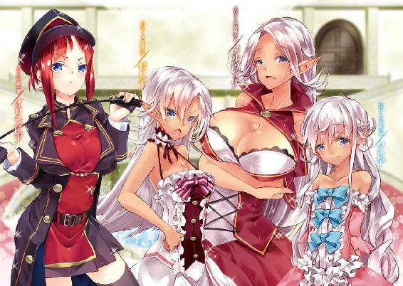
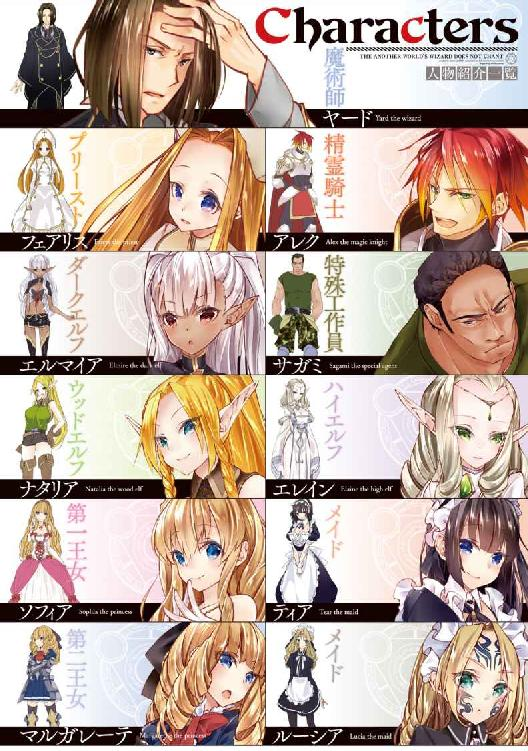
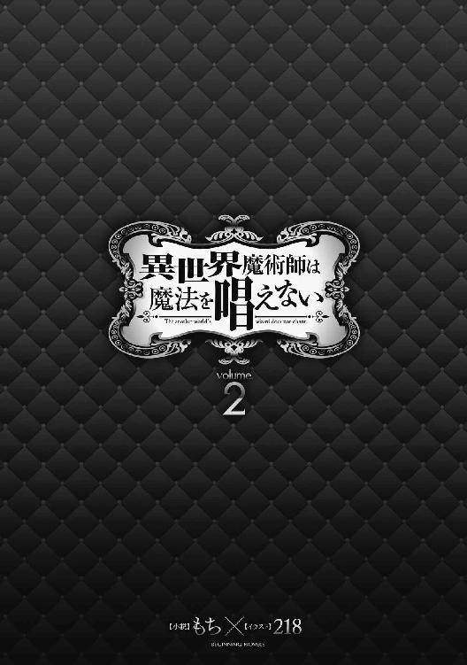
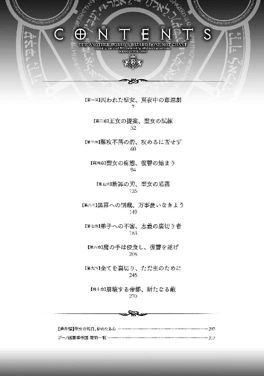
このアンリエント王国では、並の貴族よりも教会の権威が強い。
それというのも、世界を作った神が眠っているという言い伝えのある霊峰がアンリエントの東部にあるのだが、この世界の人間は大体その神を信仰しているからだ。
おかげで国王ですら教会を意のままに従わせることはできず、結果として勇者である俺とフェアリスに異端の罪を着せられても、おいそれと手出しができないのだ。
そもそも何故俺が異端かというと、俺が魔術師なのにエルフを妻に迎え入れようとしていると思われているのが理由らしい。
この世界の術式は神に祈る形で発動させており、実力があるほど信仰心の篤い人間と思われている。つまり強い術式を発動することができる魔術師は、それだけ敬虔な信徒であると見做されるのだ。
ただしそれは人間だけで、エルフなどの他種族はたとえ優秀な魔術師であろうとも、帰依した証がなければ神の信徒とは思われない。
レシアーナでもそうだったのだが、人間の国に所属していないエルフは基本的に独自の神や精霊を信仰している。
結果的に精霊を信仰しているエルフ達は人間から異教の徒として認識されているが、それ自体が異端なわけではない。教会では本当の神を信仰できていない哀れな者達という見方をしている。
問題は異教徒と婚約をしていると思われた俺のほうだ。王国教会の教えでは異教徒と結婚するのは異端とされているので、エルフを好んで屋敷に迎え入れている噂のある俺は、教会から見れば限りなく異端者の疑いが高いというわけだ。
ちなみにフェアリスは俺という異端者と親密な仲であるという疑いが掛けられている。異端を庇うのもそれだけで罪になるからだ。
他の勇者達は保身のため俺とは関わらないようにしているが、それが賢明だろう。教会に睨まれるのは俺でも遠慮したいからな。
幸いにも現在俺は屋敷の庭にある隠し部屋に身を隠しているが、フェアリスは教会の連中に捕まってどこかに幽閉中だ。
ティアに聞いたところ、フェアリスが教会へと戻って司教に俺の面会について尋ねようとしたらしいが、待ち構えていたように教会の守衛達が彼女を捕らえたのだという。
フェアリスは信用できると言っていたが、この分だとフィルポット司教は敵側の人間だろう。
「何か司教についての情報は分かったか？」
「ええ、あまり噂になるような人物ではありませんね。少々出世欲が強いとのことですが」
「例えば俺とフェアリスを異端の罪で裁いたとして、奴の評価が上がるものなのか？」
「それはないでしょう。ご主人様が異端であると言い出したのは彼ではありませんし、既に審問官を退いていて、異端審問に関わる身でもないですから」
「そうなると厄介だな。上の命令なのか、他に繋がっている奴がいるのかは分からんが、相手の把握ができていないのは辛い......」
他に協力者がいる場合、トカゲの尻尾切りになる可能性があるため、司教に対処しても仕方がない。むしろ敵にこちらを捕捉されるかもしれないので迂闊に動けない。
しかしなぜこのタイミングなのだろうか。俺を異端と糾弾するなら、それこそディアンのようにエルを連れてきたときに吊るし上げるのが普通だろう。
レシアーナとの同盟を組まれて困るのは現状魔帝国ぐらいだろうし、手柄を立てたことが憎いのならばアレクに難癖をつけるほうが先だ。
そして俺とフェアリスを陥れて得をする奴など、悪いが他に心当たりがない。ディアンやバークフィールドの復讐の線で考えるにしても、奴らの関係者で教会内部に手を回しているだけの余力がまだある者がいるとは思えないし、巷で聖女と呼ばれているフェアリスまで巻き込む必要性がない。
そうなると魔帝国という線が一番ありえそうだが、仮に司教が他国の間者と会っているなら、ティアが気付いているはずだ。一介の司教にティアの監視を掻い潜れるとも思えない。今は俺の屋敷でメイドをやっているが、これでも彼女は元々優秀な密偵だったのだ。
「そういえば、屋敷の人間はどうしている？」
「特に変わりはありませんが、念のためエルマイア様とナタリア様はお部屋から出さないよう伝えておきました」
「そうか。まあこの屋敷にいる間は大丈夫だろうが、万が一のためには必要なことだ」
ナタリアはともかく、エルが教会の人間に捕まるとは思えないが、念のためだ。使用人は人質にもならないので捕まることもないだろうし、とりあえず屋敷の人間は大丈夫だろう。
後はフェアリスがどうなっているのかを知りたいのだが、彼女と連絡を取ろうにも、結界の中に閉じ込められているのか、彼女に渡した腕輪の場所すら認識できない。
エルの話し相手になってくれていた恩もあるし、何か手を出される前に助け出したいとは思っているのだが、こうなったら自分の足で捜しに行くしかないか。
「ご主人様、あの......」
教会に潜入する計画を立てていると、ティアが声を掛けてきた。どこか媚びるような声に何事かと彼女の顔を見ると、何かを期待するような表情をしていた。どうやらご褒美が欲しいようだ。
彼女を抱き寄せると抵抗なくこちらの胸に身体を預けてきた。レシアーナに行っている間は彼女に構うこともできなかったからな。夜には存分に可愛がるとして、今は口付けだけしてやった。
※
日も落ちてきたので、そろそろ行動を開始するか。光もほとんどない暗闇だが、一応保険に隠密を使い、気配察知や術式の探知にも引っかからないようにする。
フィルポット司教がいるという教会に上級転移で行こうとしたが、教会自体に結界が張ってあり転移先に選べないので、近くまで跳んでから歩くことになった。
既に出入りする人間も消えて辺りに人影もなく、教会までは楽々と近づくことができた。堅牢な石造りの建物がそびえ立っている様は、ちょっとした城のような威圧感を感じる。
近くから様子を窺っても見張りの人間は正門にいる程度だ。これなら見つかることもないだろう。教会に張り巡らされた結界も外からの術式を遮断する効果だったので、普通に通り抜けることができた。
中に入ると俺の魔力反応が感じられる。おそらくフェアリスに渡した腕輪の反応だろう。試しにフェアリスに念話を送ってみると、繋がった。どうやらここに閉じ込められているようだ。
（フェアリス殿、聞こえるか？ ヤード・ラス・ウェルナーだ）
（ヤード様ですか？ 済みません、貴方の無実を訴えようとしたのですが、私も捕まってしまいました。お力になれなくて本当に申し訳ありません）
（気にするな。それより司教の居場所を知っていたら教えてくれ）
（司教様ですか？ おそらく自室に戻られていると思います）
（そうか、ではその自室の場所を教えてくれ）
曖昧な説明だが、何とか司教の部屋の場所を理解した俺は、フェアリスに礼を言って念話を切った。二階の端の部屋に司教がいる可能性が高いので、早速向かうことにする。
話をした限りではフェアリスにあまり取り乱した様子はないが、流石に参っているのだろう。彼女の言葉からは少し疲れたような雰囲気が漂っていた。少し急いでやることにしよう。
ときどき見回りに来る人間がいるぐらいとなっている教会内を進んでいく。中は思ったよりも入り組んでおり、たびたび行き止まりに当たってしまったが、物陰に隠れながら慎重に進み、目的の部屋までやってきた。少し扉を開けて中の様子を窺うと、四十代ほどの男がいるのが見える。あれがフィルポットか。
奴は机に向かって何やら作業をしている。こちらには気付いていないようなので、ギリギリ術式の効果範囲に入るよう身を乗り出して、窃思を使った。
（......まだ捕らえたばかりだから仕方ない。最悪既成事実さえ作ってしまえば、後はこちらのものなのだ。それよりも今はあの男をどうやって捕らえるか......）
思考を読んだところ、また物騒なことを思っているのが分かった。あの男とはおそらく俺のことだろう。記憶閲覧を使うには少々距離が遠すぎるし、これ以上近づけば奴の視界の端に入ってしまうかもしれないので仕方がない。一度扉を閉め、再びフェアリスに念話を送る。
（フェアリス殿、一つ質問があるのだが。司教と何を話した？）
（あの話ですか......無実を証明するための手段を教えてもらっただけです）
（ふむ、何かの取引か？）
（いえ、異端者と親密でないことを証明するために、教会関係者、つまり司教様と婚姻を結んではどうかという話でした。敬虔な人間同士で婚姻を結べば、異端の疑いは晴らされるだろう、と）
まさかの話に頭痛がする。まさか今回の件、そんな下らない理由で起こしたのか。
あのディアンですらまともに見えてくるほどの愚かさだな。なぜこんな下らない事件に巻き込まれなくてはいけないのだ。結婚したいなら勝手に告白でもしておけばいいだろう。
（......それで、そちらはその提案を呑んだのか？）
（まさか。異端の疑いを晴らすために婚姻を結ぶなど、そんな破廉恥なことはできません）
（まあそうだろうな。だがあの司教はそちらを諦めてはいないようだぞ？）
（そうなのですか......はぁ......）
フェアリスは念話越しでも分かるほどに疲れた様子だ。まあ確かに年齢的に倍はある相手が結婚を申し込んできたら、お互い好き合ってでもいない限りは気持ち悪いだけだろう。それに司教の提案には下心が透けて見えている、というか下心しかなさそうだ。
早いところ彼女を逃がしてやったほうがいいのではないかと思うが、彼女のいる部屋が分からない。結界の影響か、彼女に渡した腕輪の魔力反応は分かるのだが、正確な位置が定まらない。
このまま辺りを探し回っても教会の人間に見つかる可能性のほうが高そうだ。ひとまず外に出て作戦を練り直そうかと思ったとき、司教の部屋から誰かが出てくる音が聞こえた。
慌てて念話を切って廊下の角に隠れると、中から司教が出てきた。不審者のように周りを窺いながら向かった先は大体腕輪の反応があった方向だ。おそらくフェアリスのところに行くのだろう。
夜に婦女子の部屋へ向かっていることと先ほどの思考から考えて、何となく司教の目的が察せてしまう。流石にこの状況でフェアリスを見捨てるのは忍びない。幸い奴も人目につかないよう移動しているようだし、彼女の場所を探す手間も省けるので、司教の後ろを付いていくことにした。
しかし教会内にはあまり遮蔽物がなく、隠れながら付いていくのが精一杯で、司教を見失ったほんの僅かなうちに奴の姿が消えていた。相変わらず辺りに人影はなく、入れそうな部屋も遮蔽物もない。転移でもされたのでなければ、おそらく隠し部屋があるはずだ。そこにフェアリスもいるだろう。
試しに彼女に念話を送ってみたが、全く反応がない。念話に反応できないのは睡眠中か意識が別のものに向いていたり集中したりしている場合、もしくは意識が混乱しているときだ。
中で何をしているのかは分からないが、おそらくフェアリスにとってあまりよろしくないことが起きているに違いない。そう思ったとき、微かに悲鳴のような声が聞こえた。
声が聞こえた方向の壁を調べてみるが、一見しても普通の壁にしか見えない。一応叩いたり押してみたりしたが、反応がないのでお手上げだ。
「......か、誰か助けて下さい！ ヤード様ぁ！」
今度ははっきりと声が聞こえた。間違いなくフェアリスの声で、声には全く余裕がなく、今にも襲われそうな雰囲気が感じられる。もう隠し扉を探している時間もないようなので、最終手段を使うことにした。
手早く魔法陣を二つ描き上げ、まずは壁に向けて分解を放つ。一瞬で分厚い壁が塵と化し、その奥に隠されていた部屋が現れた。
何かの結界が張ってあるその部屋には、服を破られて今まさに襲われている最中のフェアリスと、半裸で彼女を組み敷いて、彼女の秘部に自らの物を押し付けている変態じみた姿の司教がいた。
まさか本当に俺が現れるとは思ってもいなかっただろう。二人ともいきなり壁が消えたので驚きのあまり固まっている。襲われているフェアリスには悪いが、かなり間抜けな光景だ。
ともあれ隙だらけの司教に向かってもう一つの魔法陣を起動する。窒息が発動して無酸素状態となった司教は、一瞬で意識を手放した。
恐怖でもよかったのだが、一応この部屋の結界が精神感応系を遮断する可能性を考慮したのだ。ただこの術式は脳に後遺症が残る可能性がある。まあこんなことをするような奴には、もしそうなったとしても罪悪感は覚えないのだが。
フェアリスの上に倒れこんだ司教を蹴飛ばして彼女の上から退かせると、破られた服の隙間から彼女の白い素肌が目に入った。
いつもは体型の分かりにくい服装だが、意外とモデル体型といったらいいのか、身長は高いが胸はそれほどでもない。それでも胸は人並みにはあるのだが、俺の周りの女性は胸が大きい者が多いので、相対的に貧相なものに見えてしまう。
少しの間彼女の身体を観察していたのだが、あまりの出来事に理解が追いついていないのか、彼女は俺の視線を気にすることもなくただ蹴り飛ばされた司教と俺の顔を呆然とした表情で眺めているだけだ。
一通り彼女の身体を眺めた後、彼女に着せる服を探してみるが、本当に何もない部屋だったようで当然彼女の替えの服もなさそうだ。
仕方ないのでまだ呆然としているフェアリスに俺のローブを掛けてやると、自分が助かったことにようやく理解が追いついたのか、涙を流し始めた。
「や、ヤード様、ありがとうございます......」
「礼は後でしろ。誰かが来る前に急いでここを離れるぞ」
「は、はいっ」
見張りに見つからないように彼女にも隠密を掛け、司教に記憶抽出を使ってここでの出来事を抜き出した。これで俺が下手人だとは分からなくなった。
フェアリスの手を取り急いで脱出する。分解した壁は修復で見た目だけでも戻しておく。壁が分厚いので完全には直せないが、見た目は全く違和感がないので誤魔化しは効くだろう。
帰りも誰かに見つかるようなことはなく、教会全体に張ってあった結界の範囲外まで逃げ、その後に上級転移で屋敷まで戻った。
※
フェアリスを教会から脱出させることには成功したが、まだこの件は何も解決していないため、このまま彼女を家に帰らせるわけにはいかない。ひとまず隠れる場所として地下の隠し部屋に連れてきた。ここならば見つかる可能性はかなり低いだろう。
「ヤード様、ここはどこでしょうか？」
「私の屋敷内にある隠れ家だ。ここならば教会の眼も届かないだろう」
「なるほど。魔道具もたくさん置いてあるみたいだし、いざというときに備えていたのですね」
フェアリスはそう言うと物珍しそうに部屋の中を見回した。確かに昼間のような明るさになるほどには照明が設置してあるが、これだけでも普通はありえないほどの金額になる。実際は全て自作なので魔石以外の材料費だけなのだがな。
「フェアリス殿、悪いがほとぼりが冷めるまで貴女にはここに隠れていてもらう」
「はい、大丈夫です。教会に私達の誤解を解いてもらうまでは仕方ありませんからね」
「さらに残念な知らせだが、隠れ家はここしかない。つまり私と相部屋となるが、構わないか？」
「え？ あ、そうですよね......だ、大丈夫、です......」
俺の言葉が予想外だと言わんばかりの反応を返してきた。少しも大丈夫そうな声色ではなかったが、ここに隠れてもらうのが安全なので気付かなかったことにしておく。
「まあ今日は疲れただろう。細かい話はまた明日することにして、今日のところは寝るといい」
「あ、はい。ではそうさせてもらいます」
もしものときのために用意しておいた簡易ベッドを出すと、フェアリスはそこで横になった。俺が一緒の部屋にいるのだが、先ほどの反応からして本当に寝つけるのか気になるところだ。
※
俺が戻ってきたことにどうやって気付いたのかは知らないが、フェアリスが横になってしばらくした後、隠し戸を開けてティアが入ってきた。
「お帰りなさいませ、ご主人様。フェアリス様もご一緒でしたか」
「ああ、教会から彼女を匿おうと思っている。食事は一人分多めに用意しておいてくれ。ああ、それと彼女に替えの服と毛布を持ってきてくれないか？」
「分かりました」
すぐに替えの服と毛布を持ってきてくれたので、とりあえずフェアリスの近くに服を置き、毛布を掛けておく。彼女は既に寝ているのか、目が覚める気配はない。何と寝つきのいいことだ。
彼女の頬を突いてみると少し顔を顰めたが、目が覚めることはなかった。先ほどの警戒心は何だったのか、無防備に寝ている様子を見ていると、こちらも少しムラムラとした感情が出てきた。
いつもは特に何も感じていないが、フェアリスもそれなりにいい女だ。あの司教が策を弄してでも襲いたくなる程度の美貌と身体は持っている。
興奮してきたので、まだ帰っていなかったティアをベッドへと押し倒す。彼女も期待していたのか、フェアリスが寝ているというのに抵抗もしない。
「昼間の褒美がまだだったな。今すぐ始めてもいいが、そこで寝ている奴が起きてしまうかもしれないな。場所を移したほうがいいか？」
「いえ、ここで構いません。どうか私にご主人様のお情けを下さいませ」
ティアも意外と大胆というか、露出狂の気でもあるのだろうか。まあ場所を移さなくてもいいとのことなので、早速ここで始めさせてもらうことにする。
俺の褒美に期待する彼女を押し倒したまま、彼女の唇を奪う。手首を押さえて伸し掛かったこの体勢は、無理やり犯しているかのような気分になって雄の本能が刺激されるな。
元々胸の谷間を強調するようなデザインだった服は倒れた際に少し乱れて淫靡な雰囲気を醸し出しており、期待に潤んだ彼女の瞳と相まって非常に魅力的に感じた。
胸の頂を触ってみると既に彼女の乳首も立っていたので、そのまま乳首を摘んで引っ張ってみる。
「あっ、ご主人様、そんなに引っ張っては、んんっ」
「そうは言っても、お前のここはもっと弄って欲しいようだぞ？」
「お望みのままにっ、あんっ！」
許可が出たので彼女の胸を片側だけ出してぴんと立っている乳首を甘噛みしてやると、ティアは媚びたような甘い喘ぎ声を出して身じろぎした。
それにしても彼女の胸は大きい。周りの女性と比べても並ぶ者がいないほどだ。このまま乳首に吸い付いたら母乳が出てもおかしくはないな。
「あ、ご主人様、吸っては、あっ、あぁああんっ！」
有言実行ということで甘噛みの状態からそのまま乳首に吸い付いてみたが、流石に母乳は出ない。
口では嫌がっているような感じだが、ティアは無意識に俺の頭を押さえてきたので遠慮なく顔を押し付ける。胸に顔を埋めると、彼女の身体から甘い匂いがした。そのまま彼女の豊かな双丘を服の上から揉みしだく。服越しでも分かる柔らかな感触を味わっていると、彼女が俺の手を取った。
「ご主人様、ここも......」
彼女は俺の手を自分の秘部へと導き、物欲しそうな目で見つめてきた。スカートの中に手を入れてみると、下着は既に湿っており、彼女が興奮していることが分かった。
「もう濡らしているとは、そんなに私の物が欲しかったのか」
「はい、ご主人様の物で貫いて欲しいです......」
甘えるような声で言ってくるので、当然その言葉に応えてやる。足を持ち上げ、彼女の下着を脱がせると、俺もズボンと下着を脱いで、肉棒を取り出す。これだけ濡れていれば大丈夫だ。
そのまま正常位で彼女の膣穴に肉棒を当てて貫こうとしたところで、ふと視線を感じフェアリスのほうを見ると、こっそりとこちらに視線を送っている彼女の姿が見えた。
俺が顔を向けた途端に視線を逸らして眠った振りを続けてはいるが、残念ながら全てばれている。男に免疫がないのかと思っていたが、性的な行為への興味はあったようだ。
彼女のことだから、俺達を見たら止めに入るか叫ぶか、どちらかだと思っていたのだが、面白い展開になってきた。
「ティア、入れて欲しかったら精一杯いやらしく誘ってみろ。フェアリスに見せつけるようにな」
「はい、ご主人様の熱く滾っているその肉棒で、私のいやらしい雌穴を突いて、ご主人様の肉棒が欲しくて火照った膣内を掻き回して下さい......」
フェアリスが実は起きていることに気付いていないティアは彼女に見えるように手で割れ目を広げ、膣の中まで見えるようにして俺を誘ってきた。一瞬だがフェアリスの身体が跳ねたので、おそらく彼女もティアの痴態を確認したはずだ。
「よし、いいだろう。お待ちかねの物だ、存分に味わってくれ」
自ら広げたティアの膣内を一気に貫くと、期待していた物が入ってきた彼女の中は一斉に俺の物を絶妙な力加減で締め付けた。快感で声が漏れそうになったのを寸前で堪えたようだが、声は出してもらったほうが面白いことになるだろう。
「どうした？ 声は抑えなくてもいいぞ？」
「は、はいっ、んんっ！」
俺の言葉には素直に頷いたが、今も口を閉じて必死に声を押し殺している。自分からここですると決めていたが、まだ羞恥心でもあるのだろうか。このままでもティアは満足するだろうが、それでは俺が面白くない。折角観客がいるのだから、もう少しサービスしてもいいだろう。
「え、あのっ、ご主人様!?」
彼女を持ち上げ、結合部がフェアリスにもよく見えるようにして、下から彼女の膣穴を貫く。腰を打ち付けるたびに飛び散る愛液が寝ている彼女の顔に掛かるかもしれないほどの距離に、ティアも背徳的な快感を得ているのか、締め付けが強くなった。
淫靡な水音を立てながらもこちらの物を貪欲に咥え込んでくる彼女の様子を、フェアリスがちらちらと見ているのが分かる。寝た振りを続けているのはこちらにはまだばれていないつもりなのだろうが、顔が赤くなっているので一目瞭然だ。幸いにもティアは行為に夢中でフェアリスのことは気付いていないようなので、もう少し楽しめそうだ。
「ほら、自分が今どうなっているのか説明してみろ」
「ご、ご主人様の物でっ、私の中が突き上げられています、んんっ」
「ちゃんと声を出せ。喘ぎ声も出ていないぞ」
「申し訳ありませっ、ああっ！ それいいですっ、子宮がガンガン突き上げられてぇっ！」
腰を掴んで深く刺さるように押し込んでやると、とうとう我慢の限界が訪れたのか声を上げて喘ぎ始めた。こちらを向いて舌を伸ばしてきたので、俺も舌を伸ばして彼女と舌を絡ませる。もちろん腰を動かすのを止めたりはしない。
「そうか、これがいいのか。ならばもっと突いてやろう」
「あぅんっ！ ありがとっ、ございますっ！ ああ、奥まで来るぅ！」
肉がぶつかり合いパンパンと小気味のいい音を鳴らしながら、激しく腰を振ってお互いに快楽を味わう。膣内は俺の肉棒をいい具合に締め付け、こちらの射精感を煽ってくる。
久しぶりの彼女の肉体はとても刺激的で、俺もすぐに絶頂の瞬間が近づいてくるのが分かった。
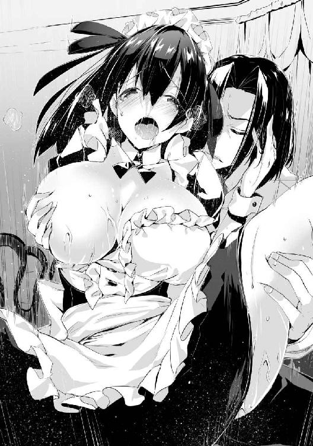
「くっ、ティア、そろそろ出すぞ！」
「はいっ、私の子宮にっ、熱い精液をたっぷり注ぎこんで下さい！」
「だ、出すぞ、くぅっ！」
「あぁあああっ！ ご主人様のが入ってきますぅ！」
ティアの腰を押し付けて、膣内に精液を注ぎこむ。彼女の中は俺の物を全て搾り取るかのように蠢き、いつも以上に大量の精液が吐き出された気がする。
たっぷりと彼女の中に出し終わって肉棒を抜くと、ティアはすぐに俺の物を口に咥え、残った精液を吸い出し、いやらしく音を立てながら掃除をしてくれた。
フェアリスの様子を窺うと、顔を背けながらもまだ頬が赤くなっている。どうやら彼女にも楽しんでもらえたようだが、これで終わるわけがない。彼女が寝た振りを止める気配がなかったので、二回戦を始めることにした。
※
寝ているフェアリスを跨いで膝立ちとなり、ティアは俺の物を口に咥えようとしている。
「あの、本当にここでするんですか......？」
「そうだが、何か不満か？」
「流石にフェアリス様が起きてしまう気がするのですが......」
「大丈夫だ。彼女は起きないようにしておいた」
「そうですか、では始めさせてもらいます......」
ティアは俺の言葉に安心して、俺の肉棒を咥えて奉仕を始めた。
フェアリスには特に何もしてはいないが、先ほどの行為でも忌避するような仕草を見せなかった彼女のことだ。こうやって大胆な行動に出たところで起き上がれるような度胸はないだろう。
「んぅ......ちゅ......」
ティアは一度射精して少し萎えてしまった俺の物に熱心に舌を這わせてくる。それと同時に勝手に溢れ出してくる唾液が少しばかり口の端から垂れ落ち、フェアリスの顔に当たっている。僅かに顔を顰めているが、やはり目を開ける気はないらしい。
ティアはいつフェアリスが目を覚ますか分からないスリルと寝ている彼女に痴態を見せ付けている背徳感で興奮しているのか、奉仕にもいつも以上に熱が入っている。そんな彼女の奉仕に、先ほど出したばかりの肉棒も再び硬さを取り戻してきた。
「......ぷぁ、また硬くなりましたね」
「ああ、そろそろいいだろう」
俺の物から口を離させ、横になっているフェアリスと向かい合うような形で四つん這いにさせる。これほど近くに顔を寄せればティアも彼女の狸寝入りに気付くかもしれないが、それはそれで面白い展開となるだろう。
先ほどしたばかりの彼女の股間は自らの愛液と俺の精液でベトベトになっているため、もう濡らす必要はない。それを彼女も分かっているのか、こちらに尻を突き出して俺を誘っていた。
「いくぞ」
「はい、ん、んんっ......」
先ほどと違い、今度はゆっくりとティアの雌穴に肉棒を埋めていく。二回目なので中は先ほどよりも熱くなってはいるが、俺の物を締め付けている膣の具合は変わっていない。
目の前でフェアリスが寝ているため、口を固く閉じて声を漏らさないようにしている。声を出すことができないためにいつもより敏感になっているようで、彼女の肌をそっと撫でるだけでも身体をビクビクと跳ねさせている。
そんな彼女だが中の具合は先ほどよりもよくなっており、フェアリスに見せ付けているという背徳感も手伝って、二回目だというのに俺の物は既に限界に近くなってしまっている。
「ティア、今の自分の姿を言葉にしろ！ もちろんフェアリスに分かるようにな！」
「私っ、はぁっ、ご主人様のオチ○ポが、中でっ！ 奥まで届いていまっ、すぅ！」
「フェアリスにも見られているぞっ！ どうだ、今の気分はっ！」
「気持ちいいです！ 見られてっ、見られていると思うと、こ、興奮しちゃいます、は、あぁあん！」
とうとう我慢できなくなったか、再び声を出して喘ぎ始めたティアに満足しながら、俺もそろそろ限界だったので、腰を振るペースを速めた。
それと同時に、位置を調整する振りをしてフェアリスの股間を膝で押してみたところ、一瞬だけだが股を閉じようと足が動いた。ただそれ以上抵抗がなかったので、ティアを犯しながらフェアリスの秘部も同時に刺激し続けた。
「くっ、そろそろ俺は限界だ！ また中に出すぞ、ティア！」
「はい！ 私の膣内にご主人様の熱い精液、いっぱい注ぎこんで下さい！」
「ああ、イクぞ！ フェアリスに中出しされるところを見られながらイってしまえ！」
「見られながら、い、イキます！ あぁああァアアアっ！」
射精する瞬間に強めにフェアリスの股間を圧迫し、そのままティアの膣内に精液を注ぎこんだ。
ティアは背を反らしながら絶頂し、愛液がフェアリスの上にぽたぽたと垂れていた。そしてフェアリスも何とか声を出さずに済んだようだが、物足りなさ気に太股を擦り合わせていた。
ティアの中から肉棒を抜き、倒れこみそうになっていた彼女を支えて立ち上がらせ、彼女の服装を正してやる。いつもはこのまま俺と一緒に寝ているところだが、流石にフェアリスがいる手前、そんなことはできないからな。
「ではご主人様、これで失礼致します」
ティアは絶頂の余韻が落ち着いた後、いつもと変わらない冷静な表情に戻っていた。一見すると情事後だとは分からないほどの変わりようは流石としか言いようがないな。
ティアと二回やった後、彼女は屋敷のほうへと戻っていった。この部屋に残っているのは俺と寝たフリを続けているフェアリスだけだ。ティアが出ていっても起き上がる気配がないので、彼女は最後まで俺達の情事に気付かなかったということにしたいらしい。
まあ文句を言われるよりはいいので、俺も彼女のことは放っておいて寝ることにした。
※
そろそろ意識が遠のいてきたとき、フェアリスがもぞもぞと動いている気配がしたので、気付かれないようにフェアリスのほうをそっと窺うと、彼女は何やらごそごそと動いていた。
寝相が悪いのかと思ったが、何やら粘着質な水音がする。改めて彼女を見ると、少しばかり息が荒くなっており、頬も赤く染まっている。どうやら自慰をしているようだ。俺とティアの情事に当てられたのか、まさかそこまでするような奴だとは思わなかった。
真面目な神官であった彼女も、やはり健康な若い女ということか。普段は真面目で清楚な人物なのでそういったことが想像しにくいが、知らず知らずのうちに身体を持て余していても無理はない。
「......ん......んぅ......」
何か小声で呟いている気もするが、ここからだと聞き取れない。これ以上彼女の自慰を見ていても仕方がないので、さっさと寝ることにする。
「んっ......あぅ......」
少し声が大きくなって、動きを止めた。どうやらイったようだ。毛布を整えて、彼女も眠りの態勢に入った。結局最後まで聞いてしまったが、俺も早く寝ることにしよう。
※
目が覚めると、既にフェアリスも起きていた。普段の神官服のような服ではなく、ティアに持ってこさせた服に着替えているので、いつもと印象が違った。
彼女は自分の寝ていた場所を見ながらため息を吐いていた。いい年をしておいて、何か粗相でもしたのだろうか。俺の視線に気付いた彼女は慌てて毛布を上に掛け、ぎこちない笑みを浮かべながらこちらのほうを向いた。
「お、おはようございます、ヤード様。いい天気ですね」
「こんな地下では、今が朝かどうかすら分からないと思うが」
「そ、そうですね。え、えっと......」
「......とりあえず異端の疑いを晴らす方法について話がしたいのだが」
「あ、そういえば、昨日は危ないところを助けていただいてありがとございました」
「昨日のことは気にするな、司教を調べに行ったついでだ」
「そうですか、昨日のこと......」
そこまで言ったフェアリスは、突然顔を赤くして黙ってしまった。大方昨日の夜のことを思い出してしまったのだろうが、あれは寝た振りをして誤魔化すつもりでいるのではなかったのか。
「や、ヤード様。昨日の夜なのですが」
「ああ、フェアリス殿は先に寝てしまったな。特に何もしていないから安心するといい」
「え？ あ、はい......分かりました......」
何か言われる前に先手を打ったところ、二の句を継げなくなったようだ。まさか彼女に自分から起きて見ていましたなんて言わせるわけにもいかないので、昨日のことは無理やりなかったことにさせる。彼女も何か言いたそうにしているが、ここでこの話は終わりだ。
それよりも今は教会の件だ。とりあえず彼女が何か知っているか確かめるために、昨日司教から読み取った考えを彼女に教える。だが彼女は何も知らなかったようで、力なく首を振った。
司教の目的が彼女だということは分かったが、俺を捕らえるほうにも力を入れているとなると、他にも何か目的があるのだろうか。
しまったな、あそこで急がずにその辺りの記憶も抜いてくればよかった。あのときは焦っていたので、そんなことにまで気が回らなかった。
「あの、済みません......」
「ん？ どうした？」
彼女が声を掛けてきたので、一時思考を中断して彼女のほうを見た。もじもじと股を擦り合わせているのを見て、すぐに事情を察した。
「用を足すならあそこでしてくれ」
俺が指差した方向には、風呂場に付いているのと同じ穴がある。穴の繋がっているところも一緒だ。一応仕切りも付いているが、元々一人で隠れるように作った場所なので、音を遮れるほどの効果はないだろう。
当然ながら彼女も聞かれるのは嫌に決まっているので、困った顔でこちらを見てくる。仕方ないのでティアを呼ぶことにした。
念話で呼び出すとすぐに駆けつけた彼女に、フェアリスを風呂の隣に設置してあるトイレに連れて行くよう頼む。この地下室から脱衣所のほうには直通で行けるようにしたので、そちらでしてもらえばいい。ついでに風呂で身体を洗ってやるように伝えておいた。
彼女達が風呂に行ったのを見て、こちらも出した寝具を片付けることにした。毛布を剥ぎ取ると、ベッドにシミができていた。昨日の自慰のせいか。何とも言えない微妙な気分になったが、フェアリス達が風呂に行っている間に洗って乾かしておいた。
※
風呂から戻ってきたフェアリスは、自分の寝ていたベッドのシーツが剥がされているのを見て、慌てた様子でこちらに近寄ってきた。
「や、ヤード様、私の寝ていたシーツはどうしたのですか？」
「ああ、それなら片付けた。気にすることはない」
「うう......あ、ありがとうございます......」
羞恥で顔を真っ赤に染めてしゃがみこんでしまったフェアリスを横目で見ながら、ティアがこちらに近寄ってきた。
「ご主人様、お手紙が届いております」
「誰からだ？」
「はい、ソフィア様からです」
ソフィからの手紙か。封を切って手紙を読んでみる。今夜彼女の部屋に来て欲しいということが書いてあった。俺が屋敷にいるのは彼女も知らないはずなのだが、よく手紙を出そうと思ったな。ティアならば俺の居場所に届けてくれるとでも分かっていたのだろうか。
とりあえず今晩お邪魔することにしよう。もちろん正面からではなく、転移を使って直接入るのだが。それまでは暇なので、新術式の研究でもすることにした。
俺が作業している様子を興味深そうに見ているフェアリスだが、彼女の使う術式とは形式が違いすぎるので、全く理解できていないに違いない。
しばらくはこちらの作業を見ていたが、やがて傍を離れていった。そして元々の日課だったのか手持ち無沙汰だったのかは分からないが、神への祈りを始めた。
まあこの部屋でやることがないというのは分かるので、好きにさせておくことにした。
夜になり、ソフィとの約束のために城へ行く準備をする。フェアリスはここで大人しくしていてもらうことにして、彼女のお守りをティアに任せた。フェアリス一人だと何かと不安だからな。
隠れ家でやると結界が干渉してしまうので、一旦外に出てから上級転移を使う。ソフィの部屋へ移動すると、彼女は俺が転移で来るのを分かっていたかのように、こちらのほうを向いて微笑んだ。
「いらっしゃいませ、ヤード様」
椅子を引きながらこちらに挨拶をしてくるソフィの姿は、以前よりも艶めいて見える。あの夜の一件からぐっと魅力が上がったと思う。
「ああ、失礼する。それで、今日私を呼んだ理由は何なのだろうか？」
「はい、最近ヤード様が教会から異端の疑いを掛けられていると知らせを受けまして、疑いを晴らして差し上げたいと思ったのです」
「なるほど、それはありがたいが、どうやってその疑いを晴らすのだろうか？」
「ええ、普通ならば教会に嘆願書を送るところですが、その方法では異端の証明に数年掛かってしまうこともありますから、今回はもっとよい方法をお教えしますね」
彼女は自信有り気に返してきたので、教会にコネでも持っているのかもしれない。続きを聞こうとしたところで部屋の扉が叩かれた。どうやら俺以外にも客が来たらしい。しかし、入ってきた人物は予想外の人間だった。
「ソフィア、邪魔するぞ」
「ええ、急なお願いを聞いて下さってありがとうございます、お父様」
入ってきたのは国王だった。突然のことに面食らったが、すぐに椅子から立ち上がり臣下の礼を取りながらも必死に言い訳を探す。夜なのに娘の部屋にいる男を、親がどう思うかなど一つしかない。
「国王陛下。これにはわけが......」
「よい、ウェルナー子爵。そなたがいることは娘より聞いておった。楽にしてくれ」
「ありがたい......」
一瞬駄目かもしれないと思ったが、国王のほうは俺がいることをあまり気にしていないようだ。ソフィは俺が慌てている姿を見て、声を押し殺して笑っている。こんなサプライズはいらなかった。
「さて、ソフィアよ。こんな時間にしたい話とは何だ？」
国王が厳しい視線を送っているのだが、彼女は微笑を崩さずに俺を手で示した。
「ヤード様との婚姻の許可をいただきたいのです」
「なっ!?」
いきなりの発言に驚いたのは俺のほうだ。彼女がそう思っているのは知っているが、まさか父親に向かっていきなりそれを言うとは思わなかった。
国王の様子を窺ったが、彼はあまり驚いた様子もなく、娘に厳しい視線を送り続けていた。
「......ソフィアよ、何故今なのだ」
「お父様のお耳にも入っているかと思いますが」
「ふむ、例の噂か。だがまずはお前の考えを聞かせてもらわなくてはいかんな」
「はい。実は以前よりヤード様とは婚姻の約束をしておりました。彼からは然るべき地位を手に入れるまで待っていて欲しいと言われていましたが、今の教会の暴走を止めるためには私達の仲を公にするのが最善だと思いましたので」
国王はソフィの話を聞いてしばらくの間何かを考えていたが、やがて口を開いた。
「......そうか、別に王族が恋愛結婚をしてはならんなどと言うつもりはない。しかしウェルナー子爵がお前を娶るには、少々爵位が足らん。それは分かっているのか？」
「ええ、ですからお父様をこの場に招いたのです。どうかヤード様の爵位を上げるようご助力願えませんか？」
「......」
国王は娘の頼みに目を瞑って唸っている。娘に協力してやるかどうかを考えているのだろうか。いきなり拒絶されないのは国王に認められている証拠だろう。何ともありがたいことだ。
しかしそのとき俺が考えていたのは、この話をなかったことにできるかどうかだった。まさかプロポーズもなしにいきなり父親と面会とは思わなかった。もっと男女の仲はゆっくり進むものではないのかという、どうでもいい考えが頭の中を駆け巡っていた。
「......うむ、いいだろう。子爵が爵位を上げるに相応しい手柄を得る、そういう機会を作ってくれればよい、そう言いたいのだな？」
「はい」
「いいだろう。では、以前から難攻不落と言われておる、イストリアの砦を攻略してきてもらおうではないか。あの地を攻略したならば伯爵位を与えるに十分な功績となるだろう」
「イストリアですか？ お言葉ですがお父様、いくらヤード様でも流石に難しいと思うのですが」
「娘をくれてやるのだ、それぐらいの才は見せてもらわねば困る。そういうわけだ、子爵よ」
「ん？ ああ、了解した」
考えに夢中であまり話を聞いていなかったが、国王に尋ねられて咄嗟に返事をしてしまった。何とか砦とか言っていた気はしたが。
「では明日正式な命令として伝えるとしよう。ソフィアよ、それでいいな？」
「はい、こんな時間に呼び出してしまい申し訳ありませんでした」
「よい。では、私はこれで立ち去るとしよう。子爵よ、我が娘ソフィアを妻としたいのならば、娘の期待に見事応えてみせよ」
国王はそれを言うと部屋を出ていった。国王は結婚自体には反対していなかった。俺と彼女の仲を人づてにでも聞いていたのか、その可能性は十分にあると思っていたのだろう。これはソフィに上手く逃げ道を塞がれていたようだ。彼女も伊達に貴族達の中で生きてはいないということか。
まあソフィとの結婚自体はする可能性があると思っていたので、無理に抵抗するようなものではない。それより今は話に上がった砦が落とせるかどうかだけを考えるべきだ。
「あの、ヤード様......」
「ん？ どうした？」
「ヤード様の意思も聞かずに婚姻の話を持ち出したこと、済みませんでした」
「ああ、そのことなら気にしなくていい。いずれはそうなるだろうと考えていたからな。それよりもその砦というのはそれほど落とすのが厳しい場所なのか？」
「ええ、魔帝国の侵攻拠点となっている場所です。あそこを押さえることができれば、魔帝国も以前のように大軍で攻め入ることが難しくなるでしょう。ですが、あちらもそのことは分かっているので、その砦に相応の戦力を集めています」
「王族を娶るだけの爵位が欲しいなら、それ相応の厳しさはあって然るべきということだな」
まあただの兵士が何人いようが、場所が分かっている敵が俺の脅威となるようなことはない。むしろその後の管理のほうが面倒なくらいだろう。
「あそこは地形的に侵攻側が攻めにくくなっているそうなので、こちらから攻めるにしても騎士や兵士だけでは厳しいでしょう。おそらく少しは魔術師を付けてくれると思いますが、ヤード様のほうでもそれなりの人数を揃えておくのがいいと思います」
「その助言は参考にしたいが、他に魔術師の知り合いがいない。まあ私とエルがいるのであれば、後は数合わせの兵士だけでも大丈夫だろう」
「そうですか。ヤード様がそうおっしゃるならば、きっと大丈夫なのでしょうね」
俺の言葉を疑うこともせずに同意するソフィ。流石にその考えはどうかと思ったが、彼女が納得している以上余計なことは言わないほうがいいだろう。
詳しい話は明日するそうなので、今夜は帰ることにした。ソフィは少し寂しそうにこちらを見ていたが、早めに帰らないと国王に変な誤解をされかねない。
屋敷の地下に戻ると、既にフェアリスは寝ていた。何故か自分のベッドではなく俺のベッドの上で毛布に包まって寝ている姿を見て、叩き落としてやろうかと思った。
※
翌日、国王から正式な命令をもらうために、再び王宮へ行った。教会の関係者は弾き出してくれたようで、俺を捕まえようとしてくる者はいなかった。
「ウェルナー子爵、何やら教会がそなたを異端扱いしているようだが、私はそなたの忠誠を信じておる。そなたにはイストリア砦の攻略を頼みたい」
「了解した。必ずや彼の砦を落としてみせよう」
「うむ、よくぞ言ってくれた。そなたには砦攻略のための兵を与えよう。どれほどの人数が必要か？」
今日の朝ティアに聞いたところ、以前その砦を攻略しようと千人の大部隊で向かったが、敵の猛反撃に遭ってあえなく撤退したそうだ。それなので今回はそれ以上の兵でも大丈夫だと言われたが、あまり数が多いのは有利ではない。むしろ俺にはデメリットになってしまうだろう。
「百名もいれば十分だろう」
「あの難攻不落の砦をたった百名の兵で攻略するだと？ それも今は冬で篭城戦などできず、速攻で砦を落とさなければならぬというのに、馬鹿なことを言うな！」
今俺に突っかかってきている金髪の男は、ソフィの兄であるロベール第一王子だ。奴の姿はこの世界に来た初日から見ているはずだが、あまり印象に残っていなかった。言われてみればそれなりに威厳のある雰囲気が微かに国王に似ているかもしれない。
前回のイストリア攻略の軍を指揮していた人物でもある。奴からしてみれば到底信じられない数字だろうが、そもそも敵を殲滅するだけなら俺一人でもできるのだから、数はあまり関係ない。
それに奴が言っていたように、今の季節に野外で行動するのは厳しい。拠点を攻めるのなら奴の言うように速攻で落とす必要があるので、大軍で移動するのは行動速度的に無理なのだ。
「前回は優秀な魔術師がいなかったのが敗因だ。一定以上の実力を持つ魔術師にとっては、的の動かない攻城戦は野外戦よりも楽な仕事だ。なにせ敵が一箇所に固まっているのだから、大規模魔術のいい的になる」
「だが相手もそんなことは当然承知の上だろうし、防御用の魔法を使える魔法使いも多数いるはずだ。そもそもが魔法使いの数に関しては、我が国よりも魔帝国のほうが遥かに多い。それを凌駕する数の魔法使いを、一体どうやって揃えるというのだ？」
「頭数を問題にしているようだが、それも必要ではない。参加する魔術師は、私と弟子のエルマイアの二人だけだ。それ以上いても意味がない。むしろ足手まといだ」
「冗談は止めておけ。いくらお前とその弟子が優秀な魔法使いだとしても、何倍もの数を相手にできるはずがない」
奴は要塞での戦いを見ていなかったので分からないかもしれないが、たとえアドリアナクラスの魔術師が何人も出てきたところで俺の脅威になるようなことはない。エルも事前の準備さえできていれば、数人相手だろうが圧勝できるだろう。
これ以上奴と会話するのも無駄なので、国王のほうに顔を向けた。俺が露骨に視線を外したのを見た奴は、怒りで顔を真っ赤にしている。
「国王陛下、兵を百名借りさせてもらってもいいだろうか？」
「うむ、よほどの自信があるようだな。ではその自信がただの虚勢でないことを期待しておるぞ」
「ありがたい」
その後の話し合いで、出立は三日後と決まった。それまでは英気を養っておくように言われたのだが、教会から逃げ回っている最中なのに、そんな余裕があると思っているのか。
ともあれ話し合いも終わり、さっさと屋敷へ戻ろうとしているところにロベールがやってきた。先ほど無視したことに文句でも言いに来たのだろうか。
「ウェルナー子爵、少し話があるから付き合え」
「ふむ、こちらは構わないが」
こちらの返事を待たずに先に進んでいく奴に付いていき、奴の自室と思われる部屋に着いた。中はほとんど調度品がなく、まるで王族らしくない部屋だ。この世界の貴族にしては珍しい。
ロベールは俺を促し、椅子へと座らせた。これも実用性重視なのか、全く装飾の類が施されていない椅子だ。
奴は何かの地図を持ってきて、机に広げた。どこの地図か分からなかったが、中央の建物を中心に、割と詳細な地形図が描かれている。もしやこれはイストリア砦の周辺図か。
「さて、ウェルナー子爵。以前の物で申し訳ないが、これはあの砦付近の地形を纏めた地図だ。私が攻めたときは南側のこの辺りから攻め込んだのだが、少数で行くならばこちらの場所からのほうが敵の目を誤魔化せるだろう」
地図を指しながら、俺に攻めやすい場所や逆に敵から見える危険な場所を教えてくれている。先ほどの話し合いとはまるで別人のような態度に、流石の俺も少し困惑する。
「情報はありがたいが、何故私に教えてくれるのだろうか？ こう言っては失礼なのだが、貴方は私に隔意を持っているものだと思っていたのだが」
「当然だ、私もお前のような奴は好きではない。だがお前が死ねば、妹がどれほど悲しむのか分かったものではない。いいか、絶対に生きて戻れ。たとえ砦が落とせなくても、お前は生きてここに戻ってくるのだ。惚れた女の願いも果たせない男には、妹を任せることはできん」
国王もマルガレーテもそうだったが、こいつもソフィには甘いらしい。話したことはないが、王妃も同じような感じなのかもしれない。
一通り地図の説明を終えると、こちらを睨んでくるロベールに礼を言って部屋を出ようとした。
「決して妹を泣かせるような真似はするなよ」
「ああ、大丈夫だ。必ず生きて帰ってくると誓おう」
奴とそう言葉を交わして部屋を出た。
死ぬつもりはないが、万全を期すためにエルにも新しい術式を教えておこうと思う。先ほどの情報で、予定していた術式の射程内に、砦を収めているような場所も把握できた。
残る問題はエルの術式と戦闘時の甘さだな。後者は言っても直らないのでどうしようもないが。
※
城から屋敷に戻ると、地下の隠れ家に行く前にエルのところに行った。目的は今度の任務で必要な術式を教えるのと、訓練の監督だ。
エルの部屋に入ると、ちょうど術式の訓練をしていたところだった。床に蹲って口を押さえている彼女の周囲には術式の構成が現れては消えるのを繰り返し、そのたびに彼女は全身を震わせて痛みと吐き気に耐えている。
レシアーナから戻った後、彼女はこうやってずっと魔力量増大のための訓練をしていた。できるだけ短時間で増やしたいと言ってきたので、一番ハードだが効率のいい方法を教えていた。
魔力を切らした状態で術式を発動させ続けるというものだが、こうすると術式を発動させるために、身体が外部から無理にでも魔力を取り込もうとする。こうすることで最大魔力量がほんの少し増えるのだが、術式刻印で制御していない外部魔力を自らの魔力に変換する際、全身に激痛と嘔吐感が襲ってくる。
これを一日五時間で一ヶ月続けたら、個人差はあるが最大魔力量は大体四割程度増える。一年で五十倍から六十倍ほどだ。実際にはある時期から途端に上がりにくくなるので、この方法だと精々三十倍までにしかならないが、短期間で魔力を増やすならばこれが最大効率なのだ。
「エル、今日の修行はそこまでにしておけ。お前に覚えてもらいたい術式がある」
「あ......マスター......」
訓練のせいでこちらに気付いていなかったようで、焦点の合わない目でこちらを見てきた。汗やら何やらの汁でベタベタになっているので、とりあえず顔を洗うように言った。
近くにあった入れ物に水を出して彼女に手渡す。それを使って彼女が顔を洗っている間に、魔力譲渡で彼女の魔力を回復させる。並のエルフよりも遥かに最大値が高くなっているが、俺から見れば誤差程度の差しかないので、完全に回復させてもまだ余裕だ。
「ありがとうございます。それで、覚える術式とは何でしょうか？」
「ああ、精神感応系の白昼夢という術式だ。今度イストリアの砦を攻略しなくてはならなくなった。その際に兵士達に使う予定だ」
「なるほど、どのような効果なのですか？」
「理性の抑制によって心理的な無防備状態を作り、場合によっては幻覚を見せる。他の精神感応系と違ってそこまで効力は強くないが、そこは集団心理を利用することで効果を上げる。主に足止めや扇動用の術式だな」
「それを覚えればいいのですね、分かりました」
エルに見せるため、魔力を込めない見本用の魔法陣を描く。術式を理解していない者が見たら一目で覚えるのを諦めそうな程度には複雑な構成だが、俺の教育を受けているエルはしばらく眺めていただけで大体理解できたようだ。
「思考誘導と似たような構成だと思っていましたが、結構違うんですね」
「あれは完全に思考制御が目的の術式だが、この術式はそこまで細かい制御を目的としていない。感情の方向性さえ誘導することができれば、後は人間の心理で勝手に流れてくれるからな。思考の鈍化と理性の抑制を主とした、どちらかというと催眠に近い術式だ」
「では催眠を拡大すればいいのでは？」
「催眠では効き目が強すぎる。環境を整えれば集団心理を利用した思考・感情の誘導を行うのは術式を使わずともできるのだが、それを省くためだけの術式だ。あまり理性を抑制しすぎると、その後に行う作戦に支障が出る」
「そう言われてみればそうですね。効果が弱いなら術式の強度を優先したほうがいいんでしょうか。ちょっと試してみますね」
早速自分で魔法陣を描き始めたが、やはり初めてなので構成が甘く、発動に失敗してしまう。それでも何回かの挑戦を経て成功するようになった。後は術式の精度と発動速度を上げていくだけだ。
試行錯誤しながら何回も繰り返し発動しているのを眺めていると、急に魔法陣を描くのを止め、何か不満げな表情でこちらを向いてきた。
「あの、マスター」
「何だ、何か気になる点でもあるのか？」
「いえ、何故この時期に砦の攻略などするんでしょうか？ 冬の行軍はどうしても厳しいものになりますし、イストリアは冬の間は結構な量の雪が積もっていたと思います。普通ならばありえない命令としか思えませんけど、今の時期に攻めなくてはならない理由でもあるのですか？」
「ああ、例の噂を払拭するためだそうだ」
「......もしかして、ソフィア様と結婚されるのですか？ 砦の攻略はマスターの爵位を上げるための功績が欲しいから、ですよね？」
彼女にソフィとの婚約の件を伝えた覚えはないが、どうやら僅かな情報だけで推測したようだ。
「ああ、そうだ。ソフィの提案だが、現状ではそれが一番効果的だと思ったからな。実際あの司教をどうにかしたところで、私がエルフ好きだという噂は収まらない。ならばそれ以上の出来事で噂を消したほうが早いし、教会からの異端の疑いも晴れる」
ディアンやバークフィールドの場合、本人をどうにかすれば収まるような事態だったが、今回は教会や噂をする者達が相手なので、一つずつ潰していくといった方法が取れない。
ソフィの提案した通り、教会の連中を説得するよりも俺とソフィが仲睦まじいということを示したほうが、色々と話が早い。まあソフィも単純な親切心だけではなく、この件を利用して俺との婚姻を王に認めさせる狙いもあったのだろうが、そこはソフィが一枚上手だったと思っておこう。
「ヤード様」
エルは俺の話を聞いて俯いたが、少しして顔を上げると、真剣な表情を向けてきた。
「私も妾としてヤード様の傍に置いてもらえないでしょうか？」
「無理だ、何のためにソフィとの婚姻をすると思っているのだ。お前を妾にしては何の意味もないだろう。ナタリアにも言えることだが、しばらく他の女を迎え入れる気はない」
「そうですか。では噂が消えたときならどうでしょうか？」
「......残念だが、今のところお前に師弟の情はあるが、そういった感情は抱いていない」
「......私は、貴方のことを愛しています。記憶のなかった私の手を取って一緒に来いと言ってくれたときから、私の心は貴方に惹かれています」
遠まわしな拒絶の言葉を聞いてもなおエルは食い下がってきたが、今彼女に何を言われたところで俺の心の内は決まっていた。
「そうか。その気持ちはありがたいが、お前を連れてきたのは決して妾の真似事をさせるためではない。少なくとも今はお前の気持ちには応えられない」
エルを連れてきたのは、この世界の者に教育を施した場合にどこまで魔導技術を身に付けられるのかを調べるためであり、そのためには人道に悖る実験も行うのを躊躇わない。彼女を妾にして情が湧き、万が一にも実験を行うための足枷となる可能性があるのならば、その可能性をできる限り排除していく必要がある。
「......そうですか」
エルは先ほどよりも落ち込んだ様子で訓練を再開した。俺が断ればこうなるのは分かっていたが、エル個人の感情よりも自分のことのほうが大切なのだ。彼女には悪いが、俺が満足いく結論を出せるまでは彼女を抱く気もないし、俺の女にしようとも思っていない。
その後、発動が安定するまでは訓練を続けようと思っていたが、想像以上にエルの精神状態が芳しくなかったので、早々に訓練を打ち切って休ませた。もし明日以降も失恋のショックを引きずっているのならば、記憶を消すことも視野に入れておいたほうがいいかもしれないな。
※
エルの部屋を出て隠れ家に戻ろうとしたとき、ティアが少々慌てた様子でこちらにやってきた。
「ここにいたのですねご主人様、地下室にいないのでどうしようかと」
「どうした？」
「今教会の人間がやってきています。門で止めていますが、いつ入られるか分かりません。見つからないうちに地下室のほうへお戻り下さい」
どうやら教会が実力行使に出たらしい。まさか本当に貴族の屋敷に突入してくるとは思わなかった。だが自らの弱みになるかもしれないことをわざわざ強行するとは思えないので、この件はおそらくフィルポット司教辺りの独断だろう。
「分かった、すぐに戻ろう。お前は奴らを引き止めて......」
おいてくれ、と言いかけたところで、誰かがこちらに近づいてくる気配がした。急いで近くの物陰に身を隠すと、向こう側から教会の人間がやってくるところだった。このまま行けば見つかるかもしれないと思ったが、ティアが奴らの正面に立って足止めをしてくれた。
「ここはウェルナー子爵の屋敷です！ ご用があるならば然るべき手続きを取っていただきたい！ それに門のところでお待ち下さいと申したはずです。勝手な真似はお止め下さい！」
「ふん。子爵が身を隠す時間を稼ぐ算段だろうが、そうはいかん。屋敷の中を改めさせてもらう。邪魔立てするならお前も異端者として審問官に引き渡すぞ」
そう言ってティアを押しのけると、奴らは一番近くにあったエルの部屋に入っていった。
今のエルは情緒不安定気味なので何をするか分からない。ここで教会の連中を殺しでもしたらまたややこしい事態になるので止めに入るか悩んでいると、何やら中で揉めているような声が聞こえ、その後しばらくすると先ほど部屋に押し入った連中が出てきた。
奴らの顔には恍惚とした表情が張り付いており、端的に言って気持ち悪い。白昼夢の実験台にでもされたのだろう。そのままふらふらとした足取りで歩き出し、玄関の方向へと去っていった。
ティアは突然の出来事に呆然とした表情で一部始終を眺めていたが、それが普通の反応だろう。
そして奴らがいなくなったのとほぼ同時にエルが部屋の中から顔を出し、何かを探すように辺りをきょろきょろと眺め、ティアに気付くと彼女に何かを渡して部屋に戻った。
ティアは受け取った物を複雑な表情で眺めていたが、それを持ったまま俺のほうへとやってきた。
「ご主人様、先ほどの者がこれを落としていったようです」
そう言って手渡されたのは、教会の奴らが身に着けている十字架だった。別に変わった物ではないのでどうしたのかと思ったが、よく見ると少し意匠が違う。
「教会の物とは違うが、何か特別な用途の物なのか？」
「ご主人様、それも教会の十字架には違いありませんが、魔帝国で信仰されている宗派の物です」
「つまり先ほどの奴は魔帝国と繋がりがあるということか？」
「いえ、特に珍しいものではありませんから、手に入れるのはそれほど難しくはないでしょう。おそらくこれをこの屋敷で見つけたと言い張って、ご主人様が魔帝国と繋がっているというあらぬ罪を擦り付けようとしたのでしょう」
もしティアの言うことが真実ならば、まるで子供が考えたような稚拙な作戦だ。どう考えても計画的な犯行ではない。これでフィルポットの独断という可能性が高まった。
それにしても馬鹿な奴らだ。入った部屋が悪かったので失敗に終わったが、勝手に人の屋敷に入ってくるとはどういうつもりなのだろうか。たとえ俺が異端だったとしても、許可なく貴族の住居に進入するのは犯罪なのだが。
正直ここまで敵が愚かだとは思わなかった。正門以外には不法侵入者用の結界が張ってあるが、今度からは入り口にも張っておかなくてはいけないな。
※
地下室に戻ると、フェアリスは出ていったときと同じように膝をついて祈り続けていた。他にやることがないのは分かっているが、一日中やっていてよく飽きないな、と思わず感心してしまう。俺が帰ってきたことには気付いていないようなので、しばらく黙って見ていることにした。
本職の神官だけあって、祈りを捧げている姿は堂に入っている。元々ソフィアに勝るとも劣らないだけの美貌があるので、黙っていれば他の連中の言う聖女という称号も相応しいと思える。
まあ実際は性への興味津々な年頃の女だ。昨日の出来事からしても聖女のイメージから連想されるような清らかな人間ではない。
しばらくして祈り終わったのか、立ち上がって膝に付いた埃を払っている。そこでようやくこちらが帰ってきたことに気付いたようで、少し顔を赤くしながら顔を向けてきた。
「お帰りなさい。声を掛けて下さってもよかったのに」
「ああ、邪魔をしては悪いと思ってな」
「お気遣いありがとうございます。それでお城はどんな様子でしたか？」
「私の見た限り普段と一緒だ。それより三日後よりしばらくの間ここを留守にする。ここにいるならばティアに世話を頼むが、どうする？」
「......お言葉に甘えさせてもらっても構わないでしょうか？ 私の家も見張られているでしょうし、今戻っても捕まって司教様と婚約を結ばされそうですので」
てっきり戻って司教を説得しますとか言うと思ったのだが違った。初めの印象は若い聖職者にありがちな夢見る乙女のような奴だったが、割と現実が見えているようだ。
「そうか。何か必要な物があるならティアに言ってくれ」
「ありがとうございます。無実を証明できた際には、このお礼は必ず致します」
そうか、と適当に返事をしておく。そのまま黙っているのは気まずいので、暇を潰すために魔道具製作に取り掛かる。彼女もしばらくは俺の作業を眺めているようだったが、面白くはなかったようでまた神へと祈ることにしたようだ。お互いに無関心だが、俺は人付き合いが得意ではないのでむしろありがたい。
結局眠くなってくるまでずっと作業をして過ごした。外の様子が分からないのは少々窮屈だが、分かったところで何か行動を起こすわけでもなかったので、特に不便に思うことはなかった。
※
この調子で出立の日まで時間を潰そうと考えていたのだが、夕方頃になってナタリアが訪ねてきた。
「ヤード、会いたかったわ！」
彼女は部屋に入るや否や俺に飛び掛かり、顔を近づけ口付けを求めてきた。
「部屋で大人しくしているよう言われていなかったか？」
「一日中部屋の中で過ごすなんて無理よ。息が詰まりそうだったわ」
俺の顔を見た途端に不満げな表情から一気に笑顔へと変わったのを見るに、部屋に篭もりっきりの生活は彼女には耐えられなかったことが分かった。
「ヤードも退屈で死にそうだったでしょ？ だから今からエッチしよ......ん？」
俺に抱き付いてきた拍子に、彼女の視界にフェアリスの姿が入ってしまった。ナタリアにばれないよう息を潜めて大人しくしていたようだが、流石に彼女の全身を隠せるほどの遮蔽物は、この部屋にはなかった。
ナタリアにはフェアリスのことを伝えていなかったため、俺と同じ部屋にいる彼女を見て、機嫌が一気に悪くなってしまった。
「私のことは遠ざけておいて、何で他の女と一緒にいるの？ それにあれはこの前の勇者様じゃない。もう私のことは飽きちゃったの？」
「お前を避けたのは俺に関する例の噂を払拭するためだ。そして彼女がここにいるのは、俺と同じく教会に追われているために一時的に避難させているだけで、疚しいことはしていない」
「そう？」
ナタリアは俺とフェアリスを交互に見ながら何かを考えた後、俺のベッドの上に座った。
「それなら私もここにいるわ。いいでしょう？」
「駄目だ。お前までいなくなったら屋敷の者が騒ぐ。噂を流したのが誰か分からない状態なのだ、ここを知っている人間は少ないほうがいい」
「それなら今晩だけでいいから泊まらせて。朝になったら自分の部屋に戻るから。それでいいでしょ？」
「......フェアリスもここにいるのだから、少しは自重してくれ」
「大丈夫、彼女も是非泊まっていって欲しいと思っているわ、ねえ？」
「は、はい！」
ナタリアは俺の言葉を聞いて、フェアリスを睨みつけた。話が振られるとは思っていなかったフェアリスは、ナタリアの射殺されるような視線に怯えて頷いていた。
「ほら、彼女もここに泊まっていいって言ってるわ。これで何も問題はないわよね？」
「......好きにしろ」
結局ナタリアは一晩だけここに泊まっていくことになった。夕食を届けにやってきたティアは、ナタリアがいるのを見て少し眉を吊り上げたが、すぐに冷静な表情に戻って追加の夕食を持ってきてくれた。
残念ながら予備のベッドは一つしかないので、俺とナタリアが一緒のベッドで寝る羽目になった。俺はそのつもりはなかったが、ナタリアとしてはベッドに誘われた時点で抱いてくれると思っていたらしく、フェアリスが眠ったのを見てこちらに身体を摺り寄せてきた。
「ねえ、ヤード。早くしましょうよ」
「今日は勘弁してくれ。フェアリスもいるんだぞ？」
「彼女はもう寝ているから問題ないわ。それよりもう我慢できないの......」
フェアリスの様子を窺ってみると確かに寝ているように見えるが、こちらの視線に反応して僅かに顔を逸らし、若干頬を赤くしている。起きているのは確実だが、今回も寝た振りで通すようだ。
ナタリアはこちらの足に自分の足を絡みつかせて、身体を押し付けてきた。寝るときは全裸派らしく、足や手に彼女の素肌が当たる。興奮しているのか、少し体温が高いような気がする。
そのまま片手を俺の服の中に入れて肌を直接撫でてきた。さらにもう片方の手で俺の手を取って、自分の割れ目に導いてきた。
「ヤード......」
こちらの名前を呼びながら、俺の手を使って自慰を始めてしまった。彼女の股間は既に濡れていて、俺の指を簡単に飲み込んでいった。いやらしい水音が響いて、こちらも興奮してしまう。
彼女の痴態を聞いているだろうフェアリスも、顔を真っ赤にしながらこちらの様子をちらちらと窺っている。気付かれていないと思っているようだが、何度も視線を感じるので丸分かりだ。
「あ、ヤードのも大きくなってきたね」
俺がフェアリスに注意を払っている隙に躊躇いなく股間を触ってきた。他の女ならもう少し恥じらいを持っているが、このエルフにそういった恥じらいは存在しないようだ。
「ねえ、いいでしょ？ 他の人間がいるからって、そんなに我慢しなくていいのよ？」
「そういう話では......」
「もう、それなら私が勝手にさせてもらうわ」
ごそごそと身体の向きを変え始め、仰向けに寝ている俺の上を跨ぐ形となった。いわゆるシックスナインの体勢だ。彼女は俺の物を取り出すと、躊躇いなく咥えて扱き始めた。
連日は体力的にどうかと思い止めさせようかどうか悩んでいたところ、彼女は腰を下ろして俺の顔に濡れた股間を押し付けてきた。途端に発情した雌の匂いが広がり、雄の本能が反応してしまう。
「ふふっ、口では嫌がってもここは正直ね」
ナタリアは俺の顔に秘部を押し付けながら、普通は男のほうが言うだろう言葉で挑発してきた。
もういい、ここまでされて引き下がるわけにはいかない。こうなったら逆にこいつが後悔するくらいにイカせまくってやろう。ちょっとは主導権を握らないと舐められるからな。
そんな俺の思惑に気付くことなく肉棒への奉仕をしているナタリアの腰を掴み、とりあえず空気を確保するために顔から少し離す。そして無防備に晒されている彼女の割れ目に舌を伸ばす。
「ひゃっ！ あ、ヤードもやっとその気になってくれたのね」
「ああ、後悔するなよ」
「後悔って、大げさなんだから」
俺の言葉を冗談だとでも思ったのか、余裕の態度を崩さないでいた。そんな彼女に限定化した感覚強化を掛ける。これは五感を鋭敏化する術式であり、本来ならば視覚や聴覚なども強化されるのだが、今回は触覚だけを強化した。
術式が効力を発揮した瞬間、彼女も何か違和感を覚えたのか、肉棒を舐めていた舌の動きが止まった。触覚を鋭敏化したので当然舌や手に感じる圧迫感も強くなったのだろう。
「ヤード、今何かした？」
「もちろん。私は後悔するなと言ったはずだぞ？」
「後悔って、何を、っあぁあああアアァ！」
訝しがる彼女の肉芽を摘んで軽くこねてやると、面白いほどに大きな反応を見せてくれた。
今の彼女の感度は約五倍にまで高めてある。あまり過剰な快感を与えると身体に負担を掛けるので、この辺が限界値だ。
「こ、これ強すぎっ！ 何でこんな、感じるの!?」
「まだ始まったばかりだ。お前も休んでないで、もっと私を気持ちよくさせてくれ」
「あ、ちょっと、今はダメ！ 感じすぎちゃうから、あぁっ！」
片手でクリトリスを弄りつつ、もう片方の人差し指と中指を彼女の膣穴に挿入する。それほど抵抗もなく入った彼女の中にどんどんと指を沈めていき、彼女が特に感じる場所にまで達すると、そこで指を曲げて刺激する。
もはや肉棒への奉仕は手につかなくなったようで、口を離して絶頂しないよう快感に耐えている。しかしそれでは俺がいつまでもいけないので、彼女にとっては悪い手だ。
「そろそろ一回イカせてやろう」
指を捻って彼女の中を擦り上げると同時に、片手で弄っていたクリトリスを指で摘んで弾く。
「っ、あ、い、イクイクぅうう！」
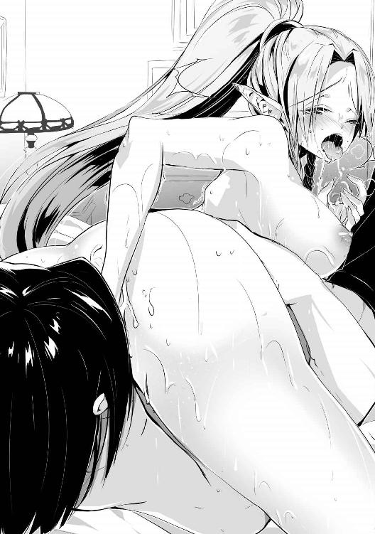
いつもならばこの程度で絶頂することはないが、今の彼女には刺激が強すぎたようだ。腰を跳ねさせて艶めいた声を上げながら絶頂した。
同時に中に入っていた指が締め付けられ、それがまた彼女の快感となって絶頂へと押し上げることとなっている。結果、いつもの三倍近くの時間絶頂し続けていた。きりがないので指を抜くと、一度大きく腰を跳ねさせた。
「あぅ......もう、ダメぇ......」
結局快感を耐えるのに必死で、ナタリアはまだ前戯の段階なのに既にグロッキーとなっているが、俺のほうは途中から奉仕が途絶えていたのでまだ全然満足していない。
むしろ彼女の痴態を見せ付けられて興奮したのか、肉棒は萎えるどころか先ほどよりも硬さを増している。彼女はもう終わりのような雰囲気を出しているが、まだまだこれからが本番だ。彼女の下から抜け出て、尻だけを上げたまま倒れている彼女の後ろから腰を掴む。
「え、ちょっと、何？」
絶頂の余韻で呆けていたナタリアも俺が次にする行動の予想がついたのか、まだ力が上手く入っていない手足を動かして逃げようとしているが、腰を掴まれた状態では無駄な行いだった。
肉棒を彼女の秘部に当てて擦ってやると、それだけでもかなりの快感を得るのか、尻を振って逃れようとしている。まあその動きが俺を誘っているようにしか見えないが。
「や、ヤード、今日はもうたくさんイッて疲れたから、また明日、ね？」
「ナタリア、先ほども言ったはずだぞ？ 後悔するな、と」
言葉と共に彼女の膣穴に俺の物を勢いよく挿入する。既に前戯と何度もイッたことで中はほぐれており、さしたる抵抗もなく彼女の奥にまで到達した。
「え？ ―――――っ！」
いきなり奥まで挿入されて一瞬呆けたような声を出したが、次に今まで以上の快感が押し寄せてきたのか、膣内をきつく締め上げてビクビクと身体を跳ねさせている。一突きで絶頂したようだ。
だがそれでも終わりではない。俺は彼女が絶頂しているのも気にせずに腰を振り始めた。膣は絶頂のために俺の物を貪欲に咥え込もうとしており、中へ中へと引き込むような動きを見せている。それに逆らって腰を引き、また奥にまで届くよう腰を叩き込むことを繰り返した。
「――――っ！ ――――っ！」
ナタリアは声にならない叫び声を上げながら、押し寄せてくる怒涛の快感に翻弄されていた。時折絶頂のあまり意識が飛び、あまりの快感にまた意識を引き戻されるということを繰り返した。
逃げようにも俺が腰を掴んでいるため離れることができず、先ほどの前戯で体力を消耗したために満足に動けずなすがままになっていた。
「どうだナタリア、反省したか？」
「したっ、したからっ！ もう許してぇ!!」
「仕方ないな。今後はもう少し時と場合を考えて誘ってくれ」
これで当初の目的は果たした。後は俺が満足するまで続けるだけだ。
もはや完全に抵抗を諦め、俺のなすがままになっている彼女に腰を振り続ける。無抵抗な奴を犯すのはあまり興奮しないが、彼女が無抵抗なのは俺の術式のせいなので仕方がないと割り切る。そうしているうちにもだんだんと絶頂へ近づいてきた。
「よし、出すぞ！」
「やぁ、もう無理！ 死んじゃうぅ！ あっ、あ――――っ！」
彼女の叫びを聞きながら腰を深く打ち付けて奥に射精する。肉棒の先に何かが当たっているので、おそらく子宮口にまで届いているのだろうと思われる。精液を直接子宮に注ぎこんでいるような感覚に、俺も満足した。
そして出し切った後にナタリアの中から肉棒を抜くと、彼女は糸が切れたように倒れこんだ。最後の射精でまた意識が飛んだようだ。
仕方がないので身体を拭いてやり、そのまま寝かせる。隣で俺も寝たのだが、情事の際の色々な汁でシーツが湿っており、寝心地は最悪だった。
あと、忘れていたがフェアリスもこちらの行為をバッチリ聞いていたようで、行為の後しばらくしてからもう一度彼女を確認すると、また呼吸が少し荒くなっていた。
そして次の日の朝、目を覚ますと隣には既に目を覚ましていたナタリアの姿があった。その顔には全く疲労の影はなく、どう見ても健康そのものだ。昨日はあれほど激しく乱れたのに、今はもうケロッとしているのは流石としか言いようがない。
「あ、起きたのね。おはよう、ヤード」
「......ああ、おはよう」
「ねぇ、昨日は凄かったわ。また今度しましょうね」
「......はぁ」
彼女の貪欲さに思わずため息が出た。昨日の件は全くお仕置きにもなっていなかったようだ。もう彼女にあんなことをするのは止めよう。やっても無駄だ。
その日以降は特に何事もなく過ぎ、いよいよ出立の日になった。防寒具に身を包んだ兵士達が忙しく馬車の準備をしているのを眺めていると、見送りをする人間がやってきた。
今回見送りに来た知り合いはソフィとロベールだけだった。ソフィのほうは心配しているのを全く隠していない様子で、こちらの無事を何度も祈ってきた。信頼されていないわけではないと思うが、彼女もかなりの心配性なのだろう。
ロベールは相変わらず真面目な顔を不機嫌そうに歪めていた。あまり会話をしたくないのか、こちらから話しかけなかったらそのまま見送るだけとなっていただろうが、後で聞いた話だと、教会の者が城に近づかないよう手配していてくれたのはこいつだったようだ。
二人とその他城の者に見送られつつ出発した。今回は知り合いがエルだけなので、随分と無茶ができそうな気がする。
王都を出てからは大体要塞と同じ方向なので、以前も通った道を進んでいた。しかし以前と同じくやることがないので、エルに術式を教えるぐらいしか暇を潰せない。
そのエルも、俺がティアに続きナタリアとも寝たことを知ったのか、あの日以来機嫌が悪くなっており、正直同じ空間内にいたくない雰囲気を放っている。それでも一緒の馬車にいる以上はある程度話しかけなくては間が持たない。
「エル、術式は制御できるようになったか？」
「......ええ、マスターが他の女達と遊んでいる間に」
「......そうか」
皮肉を返されて、さらに馬車内の空気が悪化した。これは何とかしないと作戦に支障が出るレベルの問題な気がする。しかしいい手立ても思いつかないので、ティアに相談することにした。
念話をティアに繋ぎ、現状の説明をして、どうすれば彼女の機嫌を戻せるか尋ねてみた。
（彼女を抱いてあげるというのはいけないのでしょうか？）
（正直なところ抱きたくないわけではない。しかし彼女を抱いて余計な情を抱いてしまった場合が厄介だ。それに積極的なエルフは一人でもうたくさんだ）
（では仕方ありませんね。しかし彼女の言い分も少しは聞いてあげなくてはいけないと思いますよ。ご主人様に可愛がってもらっている私でも、ときどき他の女性に嫉妬してしまうことがありますから）
（善処しよう）
念話を切って、再びエルに向き合う。彼女は不機嫌な表情を隠しもしないでこちらを見ている。
「エル、何が気に入らないのかは知らないが、言いたいことがあるなら言ってみろ」
エルはその言葉に、少し何かを考えるような顔をしていたが、すぐにこちらに向き直った。先ほどまでとは違い、真面目な表情になっている。
「結局、マスターは私を女としては見てくれないのでしょうか？」
「......お前に魅力を感じていないわけではないが、それ以上に優先すべきこともある。まあ絶対にお前に惚れることがないとは言い切れないが」
「では、私がナタリアさんのように積極的になれば、チャンスはあるということですか？」
「彼女のような攻め方では私の気を変えることはできないと思うが、チャンスはあるだろう」
その言葉に彼女は俯いて悩み始めたが、ため息を吐くと顔を上げた。その表情には先ほどまでの不機嫌さはなく、笑顔が浮かんでいた。
「分かりました。マスターが他の女の人と寝ていることは、もう気にしないことにします」
「そうか」
「はい。でもこれからは私も積極的にいきますから」
そう言ってこちらに抱きついてくるエル。流石にここで彼女を突き放したら、今の会話が全て台無しになってしまう気がしたので、大人しく彼女がしたいようにさせる。既に彼女へのガードが緩んでいるような気がしたが、仕方のないことだろう。
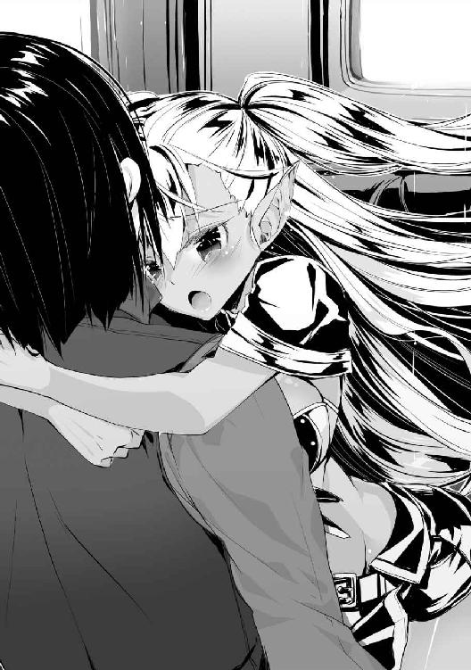
次の町に着くまで、そうして彼女はずっと抱きついたままだった。
※
最後の町からイストリア砦へ続く道は今までの街道とは違い、馬車が一台通れるかどうかという程度の幅しかないために部隊の移動が制限される。さらに周りは崖や森となっているために他の道を作ることもできない。ここを大軍で攻めようとしても厳しいだろう。
ここが相手に占拠されている限り、王国は魔帝国に大軍を向かわせることができないし、魔帝国側は高台からの進軍になるので攻めやすい。ただ砦の反対側も同じような地形になっているため、もし魔帝国からここを奪うことができれば逆にかなり優位に立てるというわけだ。
当然王国もその考えから過去に砦を何度も攻めているが、結果はいつも惨敗だそうだ。確かに巨大な攻城兵器は持ち込みにくいのに加えて大軍による兵糧攻めも使えない以上、あの砦を落とすのは至難の業だ。
まあ俺にとってみれば今言ったことは全て問題ない。攻城兵器も大軍も必要なければ、相手側に有利な進軍もする気はないからな。
イストリア砦が近づいてきたところで一度部隊を止めた。まだ砦は見えていないが、この部隊がここに進軍しているのは向こうも気付いているはずだ。突撃前に準備が必要なので、敵の先制攻撃を受けるわけにはいかない。
ついでに偶然にも人が来ないように隔離用の結界を張り、その中に兵士達を集める。万が一敵に見つかったとしても、これならしばらくの間は攻撃を受けることもないだろう。
次の準備を始める前に兵士達の様子を確認するが、皆こんな少人数で攻めるのはありえないと恐怖で震えている。普段なら確かに勇者とはいえ新米の指揮官にこの寡兵ではただ死にに行くようなものである。むしろ脱走兵がほとんどいなかったのが奇跡的なくらいだ。
このままでは使い物にならない兵士達だが、これは最初から想定内だったので問題ない。
エルに指示を出した後、怯える兵士達の前に立った。途端に不安や恐怖がありありと感じられる視線が俺に集中した。中には殺意さえ感じられるものもあった。大方俺を殺せば逃げられるとでも思っているのだろうが、そんな甘えは許さない。
「兵士達よ。まずはここまでほとんど欠けることなく私に付いてきてくれたことを嬉しく思う。今より我らはあのイストリア砦を攻略する」
俺の言葉を聞いた兵士達の間にざわめきが起こる。無理だ、できるわけがないという声がどこからか聞こえてくるが、表立って言わないのは貴族に逆らうのが恐ろしいからだろう。
そう思っていると、兵士達の中から一人の男が進み出てきた。確かこの部隊の隊長だったか。
「子爵様、この人数で砦を攻略するなど不可能です。攻城戦は昔から攻撃側に防御側の三倍以上の人数が必要と言われています。そしてあの難攻不落を誇るイストリアの砦にはそれ以上の数が必要となるでしょう」
「なるほど、それで？」
「子爵様はどのような戦略であの砦を攻略するのかお聞かせ願いたいのです。今我が部隊には勝ち目のない戦いに赴かなくてはならない恐怖と不安が広がっています。ただでさえ寡兵の上に兵士達の士気も悪いとなれば、万に一つも勝ち目はありません。どうか子爵様の必勝の策を皆に聞かせて不安を取り除いて下さるよう、お願いします」
兵士達を安心させるよう俺に願い出たこの男だが、こいつは先ほど俺に殺意を向けてきた者の一人だ。ここで俺が妥当な策を提示しなかった場合は殺して撤退するつもりなのだろう。優秀ではないが冷静な判断はできるらしいな。
「いいだろう、私もこれから今回の作戦を伝えるところだったのだ。とはいっても作戦などという高尚な代物ではない。全兵士の突撃をもって正面突破を図る」
「それは事実でしょうか？」
「ああ」
「そうですか、では仕方ありません」
深いため息を吐いた部隊長は、腰に差した剣を抜き放って俺に切りかかってきた。俺とエル以外の誰もが、俺の首が刎ねられたと錯覚するほどに見事な剣筋だったが、俺の周囲に展開してある障壁のおかげで肌に触れることなく弾かれた。
「な!?」
予想外の出来事に動揺したのか、剣は部隊長の手を離れて足元へと落ちた。常識ではありえない光景に兵士達は当然のこと、俺に切りつけた本人でさえもが目を見開いて動きを止めていた。
「どうした？ 気の済むまで切りかかってきても構わないぞ？」
「......いえ、どうやら私の考えはお見通しだったようで」
手を上げて降参の意を示した部隊長をエルが拘束しようとしたが、それは止めさせる。訝しがる部隊長を尻目に、俺は再び兵士達のほうを振り返った。
「さて、今の光景を見てもらったから分かると思うが、私はあのように攻撃を防ぐ術式を使うことができる。そして、その術式はここにいる全員に掛けることができるだろう。石も矢も刃も、敵の放つ攻撃は全てお前達に届くことはない」
ここで部隊長が取り落とした剣を拾い、それを部隊長の頭に振り下ろした。当然ながらあらかじめ部隊長にも展開しておいた障壁に弾かれ、剣はそのまま俺の手を離れて飛ばされた。
「この通りだ。これで私の言う突撃が無策の証でないことは分かってもらえただろうか」
「本当ですか!? そんな魔法を使ってもらえるなら大丈夫だ！」
言葉で伝えても信じてはくれなかっただろうが、実際に剣が弾かれているところを見れば嫌でも信じる。その読みは当たったようで、今まで悲壮感溢れる雰囲気を放っていた兵士達の瞳にも生気が宿ってきた。ただ一名を除いては。
「さて、先ほど私に切りかかった部隊長殿の処遇だが」
「っ！」
部隊長は俺の言葉に顔を青褪めさせている。当然だろう、無策と思い切りかかった相手が勝利に到る可能性の高い切り札を持っていたのだ。今の奴の立場は切り札を持つ俺を勘違いで殺そうとした無能な部隊長である。
周りの兵士達は貴族を襲った部隊長には重い罰が下ると思っているだろうし、奴自身も自分のしたことの重大さが分かっているため、無駄な抵抗をしていない。
「部隊長殿の行いについては不問にする」
「なっ!?」
「彼の行いは死地に向かう兵士達を思ってのことだ。取った手段に全く非がないとは言えないが、その心意気に免じて一度だけ名誉挽回の機会を与えよう」
俺の決断に兵士達の間にざわめきが起こった。貴族に手を出した者は死刑となるのが当然であると考えている彼らにとってみれば、俺の発言は異例のものだった。
俺としてはこんなことでいちいち指揮系統を乱したくなかったというだけなのだが、俺の株が上がったので、これでよしとする。
ただ残念なことに、障壁を部隊全員に使用してやるのは無理だ。全員が近くにいる今なら大丈夫だろうが、離れすぎると維持ができなくなる。それに俺は別の準備もある。
作戦中はエルが前線の兵士に必要な場合だけ障壁を飛ばすことになっている。俺が準備している別の術式と合わせれば、おそらくこちら側の被害はほぼゼロに抑えることができるだろう。
※
さて、そろそろ次の段階に移るとしよう。エルに合図を出し、彼女が例の魔法陣を描き始めたのを確認して、少し騒いでいる兵士達に黙るよう指示した。
「お前達には私の弟子エルマイアの後に従って突撃してもらう。おそらく敵は弓矢などで牽制してくるだろうが、全く効果がないのを見て恐怖を抱くことだろう。そして剣や槍すら届かないと分かったとき、相手は抵抗を止めることだろう」
兵士達が俺の言葉に聞き入っている間にエルが白昼夢を発動した。抵抗できた者はなく、全員が一瞬呆けたような表情となった。
「当然だ。刃の届かない相手に勝てるわけがない。そして賢明な敵は武器を捨て降伏するに違いない。お前達も抵抗を止めた者には慈悲を示し、捕虜とすることで命を奪う真似はしないだろう。だが、果たして本当にそれが正しいのか？」
「どういうことでしょうか？」
「考えてみろ、今まで奴らの手によって多くの王国民が殺された。そんなことをしておきながら、自分達は命乞いをして生き延びようとする。殺された人々は、そんな奴らを生かしておきたいと思っているだろうか？」
「そ、そうだ！ 奴らも同じ目に遭わせなくては！」
「砦の建っている場所を見ろ。イストリア周辺は元々王国の領土だったのに、あろうことか魔帝国は王国の領土を侵犯し砦を建てた。奪われた物は取り返さなくてはならない。今回の戦いは侵略ではなく奪還なのだ。正義はこちらにある、全力を尽くすといい」
「なるほど！ 流石は子爵様！」
「正義は我らにあり！」
「非道な真似をしながら恥じることのない魔帝国の兵士達は、もはや人間ではなく畜生と同等の存在だ。無抵抗の畜生をいくら殺しても罪の意識を感じることはない。お前達の手で魔帝国の奴らに裁きを下してやれ」
「おお！ 魔帝国の人間に裁きを下せ！」
「子爵様万歳！」
演説が進むにつれ、どんどんと兵士達の士気が上がってくるのが分かる。熱狂と言ってもいいほどに高ぶった兵士達は、もう無抵抗の人間を殺すことにも躊躇いを感じなくなっているだろう。
俺の言葉を疑うことなく信じてしまうのは、白昼夢の効果だ。こうやって集団心理を利用すれば思考誘導よりも強力な効果を出すこともできる。
ついでに術式の効果が切れれば掛かっていたときの記憶はおぼろげにしか残らないので、今から行うことをあまり覚えていて欲しくないときにはうってつけの術式だと言える。
ここまではこいつらの不安を取り除いて、敵を殲滅するための作業だ。できれば捕虜は取りたくない。ほぼ全ての魔帝国兵が降伏すると思うので、捕虜を入れておく場所がないと思うからだ。
ただ殺しすぎるのも困る。おそらく砦の中には出入りの商人や娼婦、もしかしたら兵士の家族などもいるかもしれない。そいつらまで虐殺しては俺の風聞が悪くなる。
「盛り上がっているところ申し訳ないが、兵士以外の魔帝国民の命を奪うことは禁止する」
「何故でしょうか？」
「ここにいる者達には妻や恋人、両親や子供がいるだろう。もし王国が侵略されることがあれば、その全てが魔帝国によって蹂躙されるのだ。想像してみろ、力及ばず嬲られて犯されながら苦悶の内に死んでいった者達の嘆きが聞こえるはずだ」
「あ、や、止めてくれ！」
「ちくしょう、こんなことが許されてたまるか！」
「殺してやる！」
今叫んでいる奴に本当に妻や子供がいるかどうかは分からないが、これも白昼夢の効果の一つである。
俺が今言った通りの映像をエルが脳内に作り出しているのだが、効果は覿面だったようだ。どいつもこいつも砦の方向に憎しみの言葉を投げ、今にも襲い掛からんばかりの表情をしている。
手を打ってこちらに注意を戻させる。兵士達の顔は先ほどまでとは違い、魔帝国への敵意に満ちた悪鬼のような表情を浮かべている。
「皆、魔帝国の者達を許せないと思うだろう。存分に敵兵を殺すといい。しかし魔帝国の人間といえども、ただの民間人に非はない。無抵抗な彼らを殺せば私達も魔帝国兵と同様の畜生になってしまう。我らは人間として、奴らと同じ非道をするわけにはいかない。敵兵は皆殺しにし、民間人は捕虜にして暴行は加えないようにしろ」
俺の本音を知らない兵士達は俺の言葉に感激している。中には真の英雄だといった声も上がっているが、そんなにできた人間ではない。
「さて、話が長くなったが私の言いたいことはただ一つ。砦を落とし、我らが王国に勝利を！」
「おお！」
「王国に勝利を！」
「それでは全員、砦へ向けて出撃！ 砦を落とすのだ！」
エルを先頭に兵士達が砦へ向けて動き出した。彼女にはこのまま兵士達に掛けた白昼夢の維持と、俺が今から掛ける術式に抵抗した敵兵を優先的に殺すように指示してある。
俺は次の術式のため、部隊の連中に先行して砦の見えるぎりぎりの位置まで転移した。一見すると何もないように見えるが、砦には対術式・遠隔兵器用の結界と探査妨害用の結界が張ってあった。
並の魔術師では破ることはできないだろう魔力強度はあるが、あの程度なら結界貫通用の術式を付与してやれば問題ないだろう。後は部隊の連中が敵兵に見つかる前に終わらせなくては。
手早く魔法陣を描き、第四種戦術級術式、戦意喪失を砦全体が効果範囲内に入るように発動した。ほぼ全ての人間が抵抗に失敗したことを感じとれた。
効果は闘争心や暴力を振るうという行為に強力な忌避の感情を抱かせ、襲ってくる相手に対し友好的な感情を抱かせ無抵抗にする。戦闘行為はもちろん、逃亡する気すら抱かせることはない。これにより砦の奴らは兵士達が襲いかかってきても一切抵抗をせずに捕まってくれるというわけだ。
これで俺の仕事はほぼ終わりだ。後は無抵抗の敵兵を部隊の奴らが蹂躙するのを見るだけだ。
しばらく待っていると砦へと近づいてくる王国兵達の姿が確認できた。砦からも確認できる位置に王国兵が現れたにもかかわらず、砦の見張り番は全く警戒をしていない。中には味方が来たかのように手を振っている者もいる。何ともシュールな光景だ。
エルが門を破り、砦の中に兵達が突入するが、外から見た限りでは何も起きていないかのように静かなものだ。だが中ではきっと地獄のような光景が広がっていることだろう。抵抗をしない敵兵に対し、親の仇を討つように執拗な攻撃を加えている兵達の姿が容易に想像できる。
戦闘が終わるまで外で待っていようかと思ったが、エルが突入して少し経った頃、彼女から念話がきた。
（済みません、マスター。ほぼ制圧しましたが、まだ砦内に何人か抵抗している者がいるようです。手が足りませんので、こちらに被害が出る前に応援をお願いします）
（分かった。場所を教えろ）
エルからまだ戦闘が起こっている可能性のある場所を聞いて念話を切った。
どうやら予想より多くの兵が俺の術式に抵抗できていたようだ。やはり貫通用の術式を組み込んだせいで効力が落ちてしまったせいだろう。
そもそも突入した兵士達が全員生還するほうが常識的に考えてもありえないのだが、一人二人死なれるよりも被害ゼロのほうが綺麗でいいだろう。ここはエルの言うことに従っておこう。
中に入ると、既に砦の兵士はほとんど殺された後だったようだ。そこら中に倒れている死体を避けつつエルが言っていた場所を探すと、何やら争っている声が聞こえたのでそちらに向かった。
※
向かった先で見たのは、魔帝国の軍用ローブに身を包んだ赤髪の女が傷を負った数名の人間を庇いながら王国兵達を牽制している光景だった。
よく見れば彼女の周りには障壁が展開されているため、王国兵達も手が出せないでいる。あれを物理的に破るにはドラゴン並みの力がいるだろう。どうやら戦意喪失に耐えた魔術師が、その仲間を庇って篭城しているようだ。
「敵にもそこそこ使える奴がいたな」
「子爵様！ どうしてこちらに？」
敵の前で爵位や階級を呼ぶなよ。俺の立場が敵に筒抜けになってしまうだろう。
不用意な発言をした奴を一発殴りたいが、そんな間抜けな光景を敵に見せるのは嫌なので聞き流してやることにした。
「残党狩りだ。お前達の敵う相手ではない、他の場所を制圧しておけ」
「はっ！」
これで女魔術師と一対一で向き合う形となった。彼女は俺の実力を感じ取ったのか、苦々しい顔をしながら俺への警戒を強めていた。
意思の強さを感じる青色の瞳と鮮やかな赤髪を持った美人だ。女性にしては高めの身長に比例するかのように胸も大きい。そしてどことなく品位を感じるその姿から察するに、貴族としての教育を受けていた者だと分かる。
「さて、これで二人きりとなったわけだが」
「子爵......お前はこの軍の指揮官か？」
「まあ、そうなるな。そちらは一般兵か、それとももう少し階級が高いのか？」
「その質問に答える必要はない」
「何ともつまらない回答だな。折角こちらは答えてやったというのに」
俺の軽口を聞き流して先ほどから俺の隙を探っている振りをしているが、他にも何かを狙っているような雰囲気も感じられる。念のために窃思を使っておこう。
（......おそらく伝令は無事に脱出できたでしょう。王国の魔術師が多数集まっている今が好機なのです。ここで彼らを倒せば王国の魔法戦力は大きく落ち込むに違いありません......後は誰かが助けに来てくれればいいのですが......）
なるほど、助けが来るまで時間を稼ごうという魂胆か。伝令が脱出しているのは少し厄介だが、援軍が来るまでにこちらもこの砦を拠点化すればいいだけのことだ。
それに彼女は勘違いをしている。砦の対魔術結界が破られたせいで王国側に多数の魔術師が参加していると思っているようだが、実際は俺とエルだけだ。しかも脅威度で言えば俺達のほうが高いと思うが。
「助けは期待しないほうがいいぞ？ ここ以外もほぼ制圧は完了している」
「......」
「ああ、一つ教えてやろう。この砦の結界を破った術式を放ったのは私だ。今回魔術師は二人しか参加していないからな」
「嘘だな、あの結界は一人や二人で破れるものでは......っ！」
俺の話を冗談だとでも思ったのか、始めは呆れたような声色だったが、何かに気付いたようだ。
「お、お前の名は？」
「ふむ、敵に名前を教えるのはどうかと思うが、今回は特別だ。私の名はヤード・ラス・ウェルナーという。お前も聞いたことがあるかもしれないな」
「勇者の一人か......高位の魔術師だと聞いていたが、まさかこれほどとは......」
（マスター、制圧完了しました。術式に抵抗していたのは、マスターが相手をしている者を含め四名です。あと、捕虜にした非戦闘員の数が少々多いようです）
（どうやら伝令がいたようだが、その中にはいるか？）
（既に記憶の走査は完了していますが、それらしい人間はいませんでした）
（そうか、とりあえず次の指示を下すまで待機だ）
（分かりました）
残念ながら伝令は脱出していたようだ。ただ突入前にこの砦を出たのなら、こちらの情報はほとんど掴まれてはいないはずだ。それだけでもありがたいと思うことにする。
女魔術師は突然俺が黙ったことを訝しがっているようだ。この反応だけでも魔帝国が通信用の術式を持っていないことが分かる。
「さて、他の場所は全て制圧できたようだ。この砦に残っている戦力はお前達だけだが、どうする？」
「......仕方ない、せめて投降する代わりに彼らの治療を頼みたい」
「いいだろう」
俺が頷くと、彼女は障壁を消して両手を握って前に突き出してきた。犯人が手錠を掛けられるときのポーズに似ているが、一体何のつもりだ。
「どうした？ 早く封印具を着けてくれ」
「残念だが、そのような物は持っていない」
「はぁ......？ 魔術師を拘束するときには必要だと思うのだが」
「次からは用意しておこう」
封印具、そんな物があったのか。ここにきてまた新しい魔道具の存在を知った。どれほどの効力があるのか後で調べておかなくては。
「封印具を持っていないとは、初めから私達を殺すつもりだったのか？」
「術式の封印ならば魔道具がなくてもできるからな。そのような物があるとは考えもしなかった」
「......何とも規格外な話だな」
呆れる彼女に術式封印を掛け、手首を縛っておく。怪我をしている連中にも同じような処理をし、その後に上級治癒で傷を治してやった。
その後は兵士を呼んで捕らえた奴らを牢に連れていった。とりあえずこれでこの砦は攻略した。おそらく被害も出ていない。作戦は完全に成功だな。
※
捕らえた敵兵については全員牢に入れておけばいいとして、問題は兵士以外の一般市民だ。捕虜として置いておくには少々数が多いが、かといって解放するならば記憶を弄る必要がある。面倒なことだ。
エルの調べた記憶を頼りに解放してもいい人間とそうでない人間を分けていく。捕まっていた王国民は最寄りの町まで運んでやり、一部はここに残って作業を手伝ってもらう。もう少し人数を連れてくればその必要はなかったのだが。
「マスター、ここに残る希望者の選別が終わりました」
「そうか、ここにいるのが全てか？」
「はい」
「なるほど......ん？」
希望者を見渡していると、中に一人見たことのある顔の男がいた。アドリアナのところで捕まっていた奴だ。奴もこちらに気付くと、笑顔になって近寄ってきた。流石に俺の近くに来たところで兵士に止められていたが。
「やあ、お久しぶりです」
「お前はあの洞窟にいた男だな。何故こんな場所にいるのだ？」
「ええ、あの洞窟で助けていただいた後、見聞を広めるために各地を回っていたのです。それで王国内は大体回ったので次は魔帝国と思い、砦を迂回して魔帝国に忍び込もうと思ったのですが、運悪く捕まってしまいまして」
「魔帝国への移動は禁止されているはずだが？」
「ああ！ 今の話は聞かなかったことにしてくれませんか？」
話を聞いても怪しさが拭えない。見聞を広めるために密入国など、普通の人間はしないだろう。
（エル、こいつの記憶は読んだか？）
（はい。王国の機密情報も持っていませんし、魔帝国のスパイというわけでもなさそうでした。ただ普通の人間よりも記憶が欠けていました。どこかで記憶喪失にでもなったのかもしれません）
（人為的に消した可能性は？）
（分かりません。術式の痕跡は残っていませんでした）
術式で記憶消去をした場合、不自然に記憶が欠落している部分が出てしまう。これが記憶の混乱として表れるのだが、この男にはそれが見られないようだ。
記憶操作の類はあまりエルに教えていなかったので、もしかしたら彼女の知らない事例に出くわしたのかもしれない。一応俺のほうでも確認してみることにした。
記憶閲覧で奴の記憶を調べてみたところ、エルの言った通りに記憶の欠落している部分がある。脳に欠損はないので物理的な要因ではない。
ただ記憶閲覧は対象の記憶を完全に読み取れるわけではない。
この術式は人格一つを対象としているので、例えばその対象が記憶喪失となって別の人格となっている人間の場合、読み取れるのは記憶を失った後のものだけとなる。
そして失われた人格が無意識下で残っているのなら、そこは読み取れずに欠落したような状態となってしまう。ちょうどこの男のように。
この男が別人格となっている可能性はある。現状それ以上のことは分からないな。
奴は要注意人物としておこう。エルを監視に付けておけば大丈夫だろう。
「まあいい、それにしても迂回して見つかるとは運がないな」
「結局二度とも助けてもらったので、私は運がいいのだと思いますよ」
「さて、ここに残るのならお前にも労働を課すことになるが、それでいいか？」
「はい。あ、私の名前はヴァンと言います」
「そうか。では、ヴァン。追って指示が来るまでは待機していろ」
まだ何か話したそうにしているが、適当に話を切り上げておく。今は奴のことよりも優先すべきことがある。そう、砦の中に転がっている死体の処理だ。まだ寒いとはいえ、二、三日もすれば腐臭を放ち始めるだろう。そうなる前に砦内の清掃をしなくてはならない。
死体だけならばまだ分解で消せばいいのだが、飛び散った血や肉片などは効率よく消せるような術式がないため、人力で清掃作業を行わなくてはならない。
こんなことならばもう少し多めの人数を頼んでおくべきだった、と今更ながらに後悔している。
まあやってしまったことは仕方がない。兵士だけでなく、ここに残った人間も使って清掃作業を行う予定だ。
ヴァンの他は怪しい人間もいなかったので、とっとと確認を済ませて清掃作業を開始した。
急いで死体を外に運び出させ、俺が術式で開けた穴に死体を投げ込んでいく。それと同時に飛び散った血や肉片を拭き取らせる。
敵兵は王国兵の十数倍はいたので、全て運び出す頃には日が暮れていた。しかし血痕のほうはまだかなり残っており、砦内はいまだ気分の悪くなりそうな鉄の臭いで満ちていた。
せめてもの抵抗で窓を全開にしても臭いが漂ってくる。今夜は眠れそうにないな。
※
二日後、砦内の掃除と砦にあった物資の確認、捕虜の確認が終わったので、王都に使いを出した。この砦を拠点として使えるようにするため、結構な数の増援が送られてくる予定になっている。
帰宅を望んだ王国民は既に最寄りの町へと送っている。ここで働くと言ってきた者は引き続き清掃員や料理人として雇ってやった。
ヴァンはここで雇われるほうを選んだようだ。また旅を続けようとしても今の手持ちでは心もとないということだった。
「助かりました。捕まる前はもう少し持っていたんですけどね」
「気にするな、知り合いだからと特別扱いはしないぞ」
その後王国から派遣された兵達が来るまでは一時的に暇となったので、例の女魔術師に会いに行くことにした。アドリアナと同じ程度の魔力を感じられた者は久しぶりだからな。
彼女は捕虜達とは別の部屋に収容してあるのでそちらに出向き、お目当ての人物を発見した。
俺が近づいてきた音に気付いてこちらを睨みつけてきた。記憶を見させてもらったところ、何と魔帝国の公爵位の娘らしいことが分かっている。偶然だが当たりを引いたようだ。
この女を手駒にして魔帝国を内側から崩壊させる。何とも楽しげなプランだ。
「......何か用でも？」
「そう邪険にするな。オリンピアだったか、お前には色々と聞きたいこともある」
「どこで私の名前を......」
「その程度はすぐに調べがつくのだよ、オリンピア・リア・グラン・ダーロ」
フルネームを呼んでやると、俺を睨んでくる視線の圧がさらに強まった。
結界でかなり力を殺がれたとはいえ、俺の術式に抵抗できるほどの術式抵抗を持っている奴は珍しい。彼女の他に抵抗できた奴は三人ほどいたそうだが、全てエルが殺してしまっていた。彼女だけでも捕らえられてよかった。
大規模の魔法は威力が弱くなりがちなので、抵抗する人間が出てしまうのは不思議なことではないが、まさか四人もいたとは驚きだ。魔帝国の兵は王国の兵よりも遥かに質が高いように思える。
「私に拷問をしたところで、何も話さんぞ」
「別に無理やり何かを聞こうと思っているわけではない。今日はお前にいい話を持ってきてやったのだ」
「何？」
「お前だけ捕虜から解放してやってもいい。その場合、他の奴らは全員捕虜として残ってもらう」
「馬鹿なことを言うな。そんな条件は到底飲めない」
俺の提案に、彼女はいたって冷静だが僅かに怒りを滲ませた声で返答してきた。彼女の記憶を確認させてもらったが、貴族にしては珍しいほどに国民を大切に思っている。この砦に来たのも自国民の被害を減らしたいという涙ぐましい理由からであった。
そんな彼女からしてみれば、俺の提案は確かに到底許せるものではなかったのだろう。
「そう答えるのは分かっていた。次の提案だが、お前が捕虜として残るのならば、他の奴らは全員解放してやってもいい。ただしその場合、こちらの命令には可能な限り従ってもらうし、お前の知っている情報は全て吐いてもらう」
「......私の知っている情報だけでいいのだな？」
「ああ」
「ではその提案を受けよう。ただし、約束が破られないよう私と魔法による契約を結んでもらう」
「ふむ、構わないとも」
予想通り、彼女は俺の提案を受けてきた。自己犠牲精神もここまでくると見事なものだ。
あらかじめ用意していた契約用の紙をオリンピアに見せる。書かれた内容を確認した後、俺と彼女はその紙に血を垂らした。これで契約は完了だ。
「では約束通り捕虜を解放してもらおう」
「こちらの援軍が来る前に解放することはできない。あと数日待て」
「......まあいいだろう。捕まっている者達に手は出すなよ？」
「当然だ。さて、そちらも約束を果たしてもらおうか。とりあえずこれを着けろ」
俺は砦内で手に入れた指輪をオリンピアに渡した。宝石には詳しくないので、この指輪にどれほどの価値があるのかは分からないが、成分からするとコランダムの変種、つまりはルビーだ。加工技術的にも安物ではないだろう。
いきなりそんな物を渡されたオリンピアは戸惑いながらそれを受け取った。貴族として審美眼が備わっている彼女には指輪の価値が分かるのだろう。
「このような物を渡して、何のつもりだ？」
「ちょっとしたプレゼントだ。お前が新しく生まれ変わる記念の、な」
彼女が指輪を着けたのを確認して支配を使用した。契約により抵抗できないため、問題なく術式の効果が発動し、彼女の表情から一切の感情が消えた。
俺への忠誠値や好感度などを可能な限り上げ、代わりに魔帝国関連の忠誠値を下げる。今回は記憶をあまり弄らずに、逆に俺が知っている知識を可能な限り入れてみた。工作員は優秀なほうがいいからな。
支配による書き換えが終了すると、オリンピアは俺のほうを見て、恍惚とした表情となった。
「さて、オリンピア。お前の名前を言ってみろ」
「オリンピア・リア・グラン・ダーロです」
「俺のことが分かるか？」
「はい。ご主人様は私の忠義全てを捧げているお方です」
「ではお前のすべきことは？」
「魔帝国貴族として魔帝国内で工作活動を行うことです」
「よし、問題はなさそうだな」
記憶と感情の操作は全て問題なく完了したようだ。
恋する乙女のように潤んだ瞳と紅潮した頬でこちらを見つめている彼女は、こちらを睨みつけているだけだったときとはもはや別人だ。
「ありがとうございます、ご主人様。このような愚かな女にも慈悲を与えていただいて」
「気にするな。お前の忠誠に期待しているぞ」
「お任せ下さい。ご主人様のご期待に叶うよう、全身全霊をもって事に当たらせていただきます」
これで俺の手駒が増えたわけだ。特に今回は公爵位の娘という魔帝国の中心に近い立ち位置の人物を篭絡できたので、戦略の幅がかなり広がった。
術式封印を解除して彼女の拘束を解いてやると、彼女はその場に跪いた。貴族であり軍人で忠誠値が高いと、このような反応になるのか。
「ご主人様、身をもって私の忠義を捧げたいのですが、よろしいでしょうか？」
「ん？ まあすぐに済むことならいいぞ」
「では失礼します」
そう言うと彼女は俺の足元に近づき、そのまま靴を舐め始めた。
いきなりの行動に正直かなり引いてしまったが、これを拒否すると謝罪の嵐が待っていそうなので、しばらくの間彼女の好きにさせた。
オリンピアの忠義を体験した後、俺と彼女は魔帝国兵達のいる牢屋へと向かった。
廊下ですれ違う王国兵達は皆彼女のことを見て驚いているが、彼女があまりにも堂々と歩いているのと俺がすぐ傍にいることで声を掛けにくいのか、足早に去っていった。
彼女の顔を見てみたが、流石に他人の目があるところでは真面目な顔になっていた。
※
「これは子爵様！ 何か御用でしょうか？」
「中の捕虜達に用がある。お前はもう下がっていい」
「畏まりました！」
牢屋前で見張りをしている兵士を下がらせる。オリンピアを見て不思議そうな顔をしていたが、俺に話しかけるのは無礼だと思ったのか、何も言わずにそのまま立ち去っていった。
中に入ると一斉に捕虜達の視線が集まる。手足を縛られて動けないよう転がされている奴らだが、俺の隣にいるオリンピアに気が付くと、できる限りの礼を取ろうとしていた。
「オリンピア様！ よくぞご無事で！」
中で一番階級が上の男が彼女に話しかけてきたが、彼女はその男のほうを一瞬だけ振り返ると俺の顔を窺ってきた。どうやら発言してもいいか尋ねているようだ。
「ふむ、お前の好きにしろ」
「ありがとうございます」
彼女は男に近づき、奴の身体を起こして抱きしめた。突然の行動に男は慌てふためいている。
「おお、オリンピア様!?」
「お前達も無事で何よりだ。私の身と引き換えに王国と取引をした。もうすぐお前達は解放される」
「で、ですが、それではオリンピア様はどうなるのでしょうか？」
「心配するな。そこにいるお方のおかげで悪いようにはされない」
捕虜達はオリンピアを守ることができなかった不甲斐なさで悔し涙を流している。
一見すると身を挺して部下を守っている感動的な光景に思える。しかし、彼女は彼らが気付かないよう懐からある物を取り出した。
「済まない、お前達が捕まったのは私の力不足だ。そしてありがとう、お前達は本当にいい者達だった。最期に私の役に立ってくれるのだからな」
「え？ あ......」
オリンピアが短剣を持った手を一閃させると、男の首がぱっくりと割れて血が噴出した。そして何が起こったのか分からない男は、首を切った本人の顔を見た。
「な、何で......？」
「ありがとう、私が殺すまで生きていてくれて。これで私の忠義をご主人様に見ていただける」
噴出した血が彼女にも掛かったが、それを気にすることなく彼女は凄絶な笑みを浮かべて倒れた男を眺めていた。
「お、オリンピア様!? 一体何を!?」
「どうなされたのですか!?」
残された者達は彼女の凶行に戸惑い怯えていた。中には失禁している者もいた。無理もない、今まで尊敬していた人間に裏切られたのだからな。
オリンピアは倒れた男が動かなくなるのを見届けると、次に近い男の下へと近寄り、同じように首を切りつけていた。楽しそうにかつての味方を殺していく姿はまるで狂人のようだった。
「貴様、オリンピア様に何をした！」
声を掛けられてふと足元を見ると、一人の男が這い寄ってきた。
「オリンピア様は間違ってもあのような蛮行をするお方ではない！ 言え、何をした！」
「ふむ、何をしたかと言われたら、お前達にも分かる範囲で一番近いのは洗脳か」
「何ということを！ お優しいあの方に同胞を殺めさせるなど、貴様、絶対に許さ、がっ!?」
俺に飛び掛かろうとしていた男の脇腹にオリンピアの足が叩き込まれた。そして彼女は悶絶している男に近寄り、同じように首に切りつけた。首から血が噴出し、近くにいた俺の手にも掛かった。
「全く、ご主人様にあのような暴言を吐くことを、私が許すと思っていたのでしょうか」
部屋にいる全員を切り殺した彼女は、返り血で全身を真っ赤に染めていた。その姿で恍惚とした表情を浮かべている彼女を見ると、背筋が寒くなる思いがする。
そんな彼女は俺の手の汚れに気付くと、慌てて俺の手を取った。
「あ、す、済みません！ ご主人様の身体を汚してしまうなんて！」
「この程度気にするな」
「いえ、今すぐ拭き取らせていただきます！」
彼女は俺の手に顔を寄せると、血の付いた部分に舌を這わせた。あまりにも自然な動作で反応ができなかった。彼女はこういう趣味の持ち主ではなかったと思ったのだが。
試しに指を口の中に入れると、嬉しそうにそれを咥えてしゃぶり始めた。その動作が犬に似ているような気がする。先ほどまではあれほど強気だった彼女も、こうなっては可愛いものだ。
面白くなってきたので、彼女の口の中を指で弄り回す。指が頬の内側をなぞり、歯を擦るたびに彼女は歓喜に身を震わせていた。
指を引き抜くと彼女の唾液が付いてベトベトになっていたので、彼女の服でそれを拭いた。
「ご主人様、これでよろしかったでしょうか？」
「上出来だ。その調子で魔帝国の内偵も頼むぞ」
「お任せ下さい」
性癖はともかく、俺に言われずとも捕虜を始末したのは俺の考えが分かっている証拠だ。
正直なところ、捕虜にする価値があったのはオリンピアだけだった。他の奴らは平民や下級貴族ばかりで捕虜の価値があまりなく、むしろ死んでくれたほうが余計な手間が減るからだ。
だが彼女と交わした契約のせいで、俺は自分で奴らを殺すことも、誰かに始末を頼むこともできなかった。それを理解していた彼女が、俺の代わりに奴らを始末したというわけだ。
この判断力と先ほど見せた演技力があれば安心して内偵を任せられる。魔力量だけで選んだのだが、思った以上に優秀な人材だった。
※
「さて、お前には今から魔帝国に戻ってもらう。そこで砦が陥落したことを伝え、できれば出撃を止めるか遅らせて欲しい。後は魔帝国の軍事情報をできる限り調べてくれ」
「お任せ下さい。必ずやご主人様のご期待に応えられる成果を挙げてみせましょう」
今一番知りたいのは魔帝国の実情だ。サガミも諜報員の育成をしているが、一人の人間を一人前の諜報員にするには最低でも数年は掛かる。それを待っていられるほど時間はない。
まずは彼女の着ているローブをボロボロに引き裂く。こうすることで、彼女が必死に脱出したように見せる。多分綺麗なままよりは信憑性が増すだろう。
そして魔帝国に記憶閲覧などの術式を使える者がいる場合を想定して、俺と同じ強度の魔導障壁を展開できる腕輪を渡しておく。彼女は術式抵抗も高いので、これを着けていれば頭の中を覗かれることはないだろう。
彼女に馬を一頭渡し、魔帝国へと送り出した。これで魔帝国軍の動きが少しは分かるようになればいいのだが。
「マスター、あれは捕虜の女ではなかったですか？」
オリンピアを見送っていると、彼女の顔を覚えていたらしいエルがこちらに近づいてきた。
「ああ、上級貴族だったのでこちらの手駒にしておいた。これで前よりも魔帝国の動きも分かるようになるだろう」
「そうですか、流石はマスターです」
「彼女は確かオリンピア様と呼ばれていた女性ですね。魔帝国の上級貴族を篭絡するなんて、流石はあのアドリアナを倒したお方です」
エルの賛辞に続いて聞き覚えのある声がしたのでそちらを振り向くと、そこにはヴァンがいた。
「盗み聞きとは趣味が悪いな」
「いえ、エルマイアさんが貴方のほうに行ってしまうので、仕方なくですよ？」
わざわざ監視役に付いていくとは、殊勝な奴だな。
「まあいい、だがあまりふらふらとうろついていると、そのうち厄介事に巻き込まれるぞ？」
「マスター、この男はもう巻き込まれていますよ。多分危険を避けようとする生物の本能が壊れているんでしょう」
「これは手厳しいですね」
ヴァンは俺の忠告にも苦笑していた。おそらくまた無茶をして巻き込まれるに違いない。きっと学習能力も欠けているのだろう。
まあこの男に関してはエルに任せておくことにして、俺は牢屋の清掃を頼んでこよう。
※
その後、二週間以上経ってやっと王都からの援軍が来た。魔帝国からの反撃がなかったからよかったものの、あまりに到着が遅すぎる。ソフィから国王に文句を言ってもらうことにしよう。
司令官は誰だと思いながら迎えに出ると、やってきたのは何とロベールだった。
「素晴らしい結果だな、ウェルナー子爵。まさか本当に砦を落とすとは思わなかったぞ」
「私は実現不可能なことはやらない主義だ。引き受けたからには成功させる」
次々と補給物資が運び込まれていく中、ロベールと俺は砦内のある部屋で話をしていた。
「父上も喜んでいたぞ。王都に帰ったら妹との婚姻を正式に認めるそうだ」
「それは重畳だな。こちらも苦労した甲斐があったというものだ」
これでやっと帰れるようだな。予想以上に時間が経っていたので屋敷にいるティアや風呂が恋しく思える。王への報告が終わったら真っ先に風呂に入ろう。
「それで話は変わるが、エルマイアだったか、彼女をここに置いていって欲しいのだ」
「ん？ 理由を聞いてもいいか？」
「援軍に来ておいて情けない話だが、急な編成で魔法使いの数が少ないのだ。お前ほどではないだろうが、彼女もかなりの使い手だと聞いた。しばらくの間力を貸して欲しい」
「彼女は王国語を話せないのだが」
「それは大丈夫だ。通訳のできる者を雇えた。紹介しよう」
ロベールの指示で通訳が入ってきたが、どう見ても見覚えのある顔だった。こちらの顔を見るなり驚いたような表情になったが、すぐに笑顔になってこちらへとやってきた。
「このエルフが通訳のレヴィンだ」
まさかここでナタリアの元夫か。娼館から出た後の足取りは知らなかったが、いつの間にやら通訳になっていたのか。人間何に適正があるのか分からないな。
まああいつにエルを襲えるほどの実力はなさそうなので、変な人間が来るよりも安心だ。
「誰かと思ったらあのときの気前のいい人じゃないか。でも通訳は必要ないんじゃない？」
「私ではない。通訳が必要なのは、私の弟子のダークエルフだ」
「ダークエルフか。あんまり好きじゃないけど仕方ないね。そういえば、もしかして噂のエルフ好きの子爵ってあんたのことだった？」
「エルフ好きではないが、その噂の人物は私で間違いない」
通訳そっちのけで色々と話しかけてきたレヴィンだが、関係ない話に焦れたロベールが咳をすると、すぐに話すのを止めて大人しくなった。軽い男だが、空気が読めない奴ではなさそうだ。
「まあ少々話好きのようだが、通訳する分には問題ないだろう」
「そのようだな。それで、最大でどのぐらいの期間になりそうなのだろうか？」
「最長で春までだな」
「......まあ私は別に構わないが、彼女が何と言うか」
呼び出したエルに先ほどの話を聞かせてどうしたいのかを尋ねた。
「マスターがここに残れというのならば従います」
彼女はロベールに向かって話しかけたが、エルフ語は伝わらないので、彼はレヴィンを見た。その視線に気付いたレヴィンは早速通訳を始めた。
「子爵様が残れっていうならいいってさ」
「そうか。それではエルマイア殿、少しの間だがよろしく頼む」
「へぇ、君、エルマイアって名前なんだ。こっちの偉い人はロベール第一王子様で、俺は通訳のレヴィン、これからよろしくだってさ」
「どうも、こちらこそよろしくお願いします」
「それにしても君可愛いね。彼氏とかいる？」
「通訳、余計な口を利くと二度と喋れないようにするけど？」
早速エルを口説こうとしたレヴィンが、彼女にアイアンクローをくらっている。
この様子なら置いていっても問題はなさそうだ。エルにはしばらくこちらで過ごしてもらうことになったが、俺は一足先に王都へ帰らせてもらおう。
帰りは転移で帰ろうと思っていたのだが、どうやらこういう場合は凱旋をしないといけないらしい。何とも面倒な決まりごとがあったものだ。
王都の入り口までやってくると、幌の外れた凱旋用の馬車に乗り替えてから進み始めた。
中央の通りには王都中の人々が見物に集まっていた。既に王都中に勝利したことが伝えられていたらしい。そんな民衆の視線に耐え切れず、俺は引きつった笑みで手を振っていた。
やっとのことで城にたどり着くと、休む暇もなく謁見の間に通された。そこにはいつもの貴族達と国王、そしてソフィがいた。
「砦の攻略、見事であった。あれほどの寡兵で難攻不落のイストリアを攻略するとは、そなたの実力は言葉通り本物であったということだな」
「いや、兵達も慣れない指揮官の下でありながらよく戦ってくれた。この勝利は私の力だけでは掴めなかっただろう」
「謙遜せずともよい。たとえ我が国の精鋭が集っていたとしても、あの砦を落とせるかどうか分からんのだ。さて、褒美を受け取る前に、まずはそなたの帰還を誰よりも心待ちにしておった者に声を掛けてやれ」
国王の言葉にソフィを向くと、彼女は待ちきれなかったようにこちらに走り寄ってきて、俺の胸に飛び込んできた。大人しい性格の彼女が人前でこんなことをしてしまうほどに、俺の帰りが待ち遠しかったということだろう。
「ソフィア王女、約束通り戻ってきたぞ」
「ええ、ヤード様。必ず帰ってきてくれると信じていました」
彼女がこちらを抱きしめてきたので、こちらも抱きしめ返した。彼女のいい匂いが漂ってきて、何週間も女性を抱いていなかった俺の下半身を刺激する。こんなところで勃起しては不味い、と無心になって何とかやり過ごした。
周囲の貴族からは感嘆の声が上がった。ただ一部の人間は悔しそうな顔をしており、中には怒りに満ちた表情を隠しもしない奴もいる。やはり俺が手柄を得るのを好ましく思わない連中が、まだまだいるということだ。
「うむ、仲がいいのは結構なことだ。子爵よ、今日より伯爵を名乗るがいい。我が娘ソフィアとの結婚も正式に認めよう」
「ありがたい」
「うむ、他の褒美は後で屋敷に送らせるので、先に屋敷に戻るといいぞ。結婚となれば色々と準備も必要だろうからな。そなたの活躍に恥じない立派な式を挙げてくれ」
「そうさせてもらうことにしよう」
「うむ、式の日取りはまた後日話し合うとしよう」
王の言葉を最後に謁見が終わった。謁見の間を出た後、ソフィを部屋まで送り届けた。
「改めて、ヤード様、お帰りなさいませ」
「ああ、ソフィも変わりないようで安心したよ」
メイドにお茶を入れてもらいながら、笑顔のソフィを見て一安心する。教会から何か妨害があるかもしれないと思っていたが、結局何もなかったようだ。
「ヤード様、砦の戦いのことなどお話ししていただきたいです」
「ああ、とはいってもあまり語ることはなかったが」
ソフィの希望で砦での戦いを伝えてみた。五分ほどで話し終わる程度の内容しかなかったが、それでも長く話せたと思う。元々砦に突入する前に勝敗が決まっていた戦いだったからな。
そんな薄い内容しかない話でもソフィは喜んでくれた。俺を気遣ってくれている部分もあると思うが、それでもありがたかった。
「ロベールお兄様もヤード様のことを褒めていましたよ。砦攻略の伝令が来たときなど、自分が援軍を率いると頑固に主張していましたから」
「そうか、少しはソフィの夫に相応しいと認められたのかもしれないな」
「ふふ、そうですね。お兄様は照れ屋ですから、あまり本音は言わないのです。だから誰かを素直に褒めていたのは初めて見ました。それほどヤード様のことが気に入られたんでしょうね」
確かに援軍として来たときのロベールは、砦攻略前よりも雰囲気が軽くなっていた。男に気に入られてもまるで嬉しくないが、ソフィが喜んでいるようなのでまあいいだろう。
その後は他愛もない話をし、いい時間になったので屋敷に戻ることにした。
※
地下室に直接転移すると、そこには背を向けたフェアリスの姿があった。
声を掛けようとしたのだが、何やら様子がおかしい。何故か前に俺が貸したローブを着ており、その身体は小刻みに震えていて、何より彼女の方向から粘着質な水音が聞こえた。
「......んぅ......ん、ふっ......」
そしてこの喘ぎを無理やり押し殺したような声である。これだけの事実から彼女が何をやっているかなど一瞬で分かってしまう。そう、オナニーだ。
屋敷に帰ってきて最初に見たのがフェアリスの自慰姿だったなど、あまりにも笑えない冗談だ。
こちらは何週間も女日照りの状態が続いているので、彼女の痴態で興奮してしまう。ソフィと結婚をしようというこの時期に襲ってしまうのは不味いと、彼女に声を掛けて止めようとした。
「......ヤード、様ぁ......そこを......」
だが彼女が呟くように出した声に俺の動きが止まった。そういえばあえて俺のローブを着て自慰をしているのは、つまり俺のローブを自慰のオカズにしているということではないか。
もちろん彼女の一番近くにいた男が俺だから、という単純な理由かもしれない。だがしばらくの間女を抱いていなかったせいで、俺には彼女が誘っているようにしか感じられなかった。
今夜辺りティアを誘って性欲を発散しようとしていたのだが、このような痴態を見せ付けられては、もう我慢の限界だ。
足音を立てて近づき、音に気付いてこちらを振り返ってきたフェアリスをベッドに押し倒した。
突然の出来事に何が起きたのか分からずきょとんとしている彼女の唇を奪う。逃げられないよう両手と足を使って押さえ、彼女の口に舌をねじ込んだ。
そこまでしてようやく事態が飲み込めたのか、慌てて俺の拘束から逃れようとしているが、彼女程度の力では流石に俺を振りほどくことはできなかった。せめてもの抵抗か、唇をしっかりと閉じて俺の舌を拒んでいたので、一度顔を離してやった。
寸前まで自慰をしていた彼女の顔は紅潮しており、肌も少し汗ばんでいた。この世界の人間はほとんど風呂に入らずに体臭は香水などで誤魔化しているが、彼女もそうなのだろう。ここには香水などないので、汗ばんだ肌からは雌の香りが強く漂ってきていた。
「や、え？ ヤード、様、どうして？」
「フェアリス殿が悪いのだぞ？ 人の服を着て自慰をしているなど、まるで私のことを誘っているようにしか見えないではないか」
「あ、ち、違うんです！ これは......」
必死に言い訳を考えているようだが、そんなことはもうどうでもよかった。もう今の俺は溜まっていた性欲を彼女にぶつけようとしか考えていなかった。
再び舌を入れようとしたが、やはり唇を閉じて抵抗している。先ほどまで俺のことをオカズにしていた割にはつれない反応だ。仕方がない、こちらも少し強引に攻めよう。
彼女の肌を傷つけないよう着ていたローブを一息に切り裂いてやると、火照りで少し紅潮した彼女の身体が現れた。どうやら裸の上に直接ローブを着ていたようで、下着は一切着けていなかった。胸は比較的慎ましやかではあるが血色もよく、健康的な色気があった。
「や、あ、見ないで下さい！」
直に裸を見られるのを恥ずかしがり、彼女は腕で胸を隠したが、それを力ずくで退けさせた。
胸の大きさはティアやソフィに比べて慎ましいものではあったが、十分に男の劣情を催させることができるものだ。むしろ手に収まる大きさなので、そちらのほうがいいという男もいるだろう。
今にも泣きそうな表情に嗜虐心を刺激される。このまま泣き叫ばせるのも面白そうだが、少しは気持ちよくさせてやろう。そこで彼女の首筋や鎖骨辺りに口付けをし、緊張をほぐしてやる。彼女の肌は吸い付くようなもち肌で、少し触れるだけでも敏感に反応していた。
「あっ、んんっ」
少し強めに肌に吸い付いてやると、白い肌にくっきりと赤い痕が残った。吸い付いたときに小さくだが喘ぎ声を上げたので、明らかに快感を得ている。
「おや、フェアリス殿は犯されているのに感じてしまっているのか？」
「ち、違います！ これは、ヤード様が、無理やり、んっ」
「嫌なら振りほどいてくれてもいいぞ？」
「ひゃうぅ！」
口では嫌がっているが、先ほどよりも抵抗する力が弱まっている。快感に弱いのか、単純に淫乱の気があるのかは知らないが、こちらにとって都合がいいのはありがたいことだ。
直前まで自慰に耽っていたせいもあるだろうが、秘部を触って確認してみると濡れていたので、肉棒を宛がう。自分の割れ目に当たっているものが何なのかは分かっているようだが、動きはない。
普通ならば無理やり犯されている女は必死に抵抗するものだ。それすらせずに視線を逸らしているのは、諦めからではなく無意識で期待しているからだろう。
「このままだと入ってしまうが、いいのか？」
「だ、ダメです、これ以上は......」
「入れるぞ」
「んっ、痛っ！」
無言は肯定と受け取って、彼女の秘部に肉棒を突き入れた。少し進んだところで抵抗があったので力を入れて突き破ると、フェアリスが痛がった。やはり処女だったようだ。
男に慣れていないので中はきつく、無理やりこじ開けている感触が女を犯しているという実感が持てていい感じだ。俺のことを受け入れてあまり抵抗しないのがいま一つ物足りないところだが、処女を奪われていいと思われているのはまた違う嬉しさがあると思い直すことにする。
「っ、んっ、ふっ」
まだ初めての痛みがあるだろう、顔を歪めて痛みに耐えているかのように苦しげな声が漏れていたので、少しの間腰を振るのを止め、気を紛らわしてやるため口を開けた隙に舌をねじ込んでやった。
フェアリスは舌で俺の舌を押し返そうとしていたが、逆にお互いの舌が擦れ合って、俺の興奮を煽ってしまう結果となっていた。それは彼女も同じようで、次第に押し返す動きから絡み合わせる動きになって俺の舌を擦ってきた。
そうして舌を絡ませている間に痛みのほうも慣れてきたのか、苦しげにきつく閉じていた眼の力が和らぎ、うっとりとしたような表情になった。口を離すと唾液が糸を引き、お互いの舌を繋いでいた。
「初体験で無理やり犯されているというのに、フェアリス殿も意外と好き者なのだな」
「私は、そんな......」
恥じらってはいるようだが本心ではないようで、俺の言葉を聞いて中がきゅっと締まった。
「否定したくなる気持ちも分からんではないがな。まあいい、続けるぞ」
「あ、ちょっと待って下さっ、あぁっ！」
痛みが少しは引いてきたのか、余裕が出てきたようなので、再び腰を動かし始めてやる。先ほどと比べると、苦しそうな表情の中に少しだけ喜悦を感じているように眉が下がっていた。
「全く、初めてで快感を得られるとは。流石は自慰が好きなだけはあるようだな」
「ふぇ？」
「まさか気付いていないとでも思っていたのか？ 私と他の女の情事の際には、いつも寝ている振りをしていただろう？」
「あ、え......」
顔がどんどんと赤みを増していき、まるで茹で蛸のように真っ赤な状態となった。口は言葉を作り出せずにぱくぱくと魚のように開いたり閉じたりを繰り返していた。おそらく羞恥心のあまりに憤死しそうになっているのだろう。
「き、気付いていたのですか!?」
「当然だ。あれだけ視線を感じたら狸寝入りをしていることなどすぐに分かる」
「うぅ......み、見ないで下さい」
恥ずかしさで顔を覆おうとする手を掴んで止め、涙目になったその表情を眺める。やはり彼女は虐められて半泣きになっているのがよく似合っているな。
気が強いわけでもないのに泣かせたくなるのは、彼女が虐められ気質を放っているからだろう。
「さて、そろそろ真面目にやらせてもらうとしよう」
「え、あっ！ ダメ、あ、んぅっ！」
そろそろ焦れてきたので、先ほどよりも激しく彼女の中を突き上げ始めた。フェアリスも既に痛みは大分引いたようで、ここまで激しくしても痛みよりも快楽のほうが勝っているように見える。
処女のくせに初めてで快感を得られているのは、彼女がよく行っていた自慰のおかげなのだろう。術式で補助してやらなくてもいいのはありがたいことだ。
「ふぅっ、んっ、んんんっ！」
喘ぎ声が抑えられなくなってきたのか、フェアリスはベッドのシーツを口に咥えて必死に声を出さないようにしている。初めてだというのに感じていると思われたくないのだろう。
だが女が喘ぎ声を我慢していると逆に声を出させたくなるのが男心だ。俺はさらに激しく腰を振り、同時に彼女のクリトリスを摘んで弄り回した。いつも自慰で使っているその肉芽は今の彼女が最も感じる部分だったようで、堪らず口を開けて声にならない叫びを発した。
「よし、フェアリス殿、そろそろ出すぞ！」
「あぁっ、ま、待って下さっ！ 外に、中はダメっ！」
「もう手遅れだ！ いくぞ！」
「あっ、あぁああ！ 中に入ってくるぅ!?」
俺が射精すると同時にフェアリスも絶頂したようだ。深く腰を打ち付けて射精してやると、彼女の膣内も俺の物を締め付け震えていた。
目を見開いてショックを受けている彼女に口付けをしてやると、今度は抵抗なく俺の舌を受け入れ、それどころか俺を抱きしめて、その表情も蕩けていた。
久しぶりの射精はいつもより長く続き、その間は熱く舌を絡ませ合っていた。そして肉棒を引き抜くと、白い精液と共に破瓜の血が混ざり合って流れ出てきていた。
※
一度射精して冷静になり、とんでもないことをしてしまったと後悔していた。
やはり何週間も処理していなかったのが不味かった。元々はティアとすればいいかと考えていたのだが、予想以上に理性が働かなかったようだ。
フェアリスは既に汚れを拭っていつもの服を着ていた。しかし、まだ上気し火照っている肌と股の違和感を気にしている様子から、彼女が情事後であることは誰でも分かるだろう。
以前襲った娘のように記憶を消すしかないかと考えていたが、処女でなくなっている以上はどこかで記憶の混乱が起こってしまうだろう。さて、どうしたものか。
俺が今後の処理について悩んでいると、フェアリスがこちらに近づいてきた。
「ヤード様、少しよろしいでしょうか？」
「......ああ、何だ？」
「ヤード様には長い間お世話になりましたが、いつまでもここにいては迷惑でしょう。ソフィア様との婚姻が認められたのであれば、ヤード様が異端の罪に問われることはもうないでしょうし、私もそろそろ自分の家へ帰らせてもらいます」
「そうか、好きにするといい」
「はい、ティアさん達にもよろしくお伝え下さい」
そしてフェアリスは最低限の荷物も持たないまま、地下室を出ていった。
先ほどの行為について咎められなかった安心と、何故俺を糾弾しないのかという得体の知れない不安が同時にやってきて、またトラブルを抱えてしまったのかと頭が痛くなる。今回のことは自業自得なので仕方ないのだが。
フェアリスの態度に悶々とした気持ちを抱えていると、ティアとナタリアが入ってきた。
「ご主人様、お帰りなさいませ」
「ヤード、帰ったなら先にこっちに顔を出しなさいよ」
ティアは俺の帰りを心待ちにしていたようで、いつもは冷静な表情の彼女も今は喜んでいるのが分かる。ナタリアも強気の口調だが、俺の帰りが嬉しかったようで、口元が少し綻んでいた。
「先ほどフェアリス様がご自宅へお帰りになられたのですが、よろしかったのでしょうか？」
「ああ、そろそろ世話になるのも心苦しかったそうだ」
「そうね、聖女様はヤードと違って常識人だから、そこら辺はきっちりしてるんでしょ」
「返す言葉もないな。それよりフィルポット司教の件はあれからどうなった？」
ナタリアの皮肉でも今は気を紛らわせられるのでありがたい。久しぶりに会ったので色々と話したいこともあったのだが、ティアに出かける前に伝えておいたことが気になっていたので、先に司教のことについて聞いてみた。
「あの司教は随分と慎重に行動していたのですが、やっと尻尾を掴めました。直接の繋がりはないのですが、どうやらランド第二王子が関わっているようでして」
「第二王子だと？」
確か唯一側室から生まれた王子で、歳はソフィと同じぐらいの奴だった気がする。あまり印象に残っていないので、詳しいことは分からない。
「何故第二王子と組むことが私を襲うことに繋がるのだ？」
「王位継承順位が下がることを恐れているのではないでしょうか？ ご主人様と第一王女の間に子が生まれれば、継承順位は第二王子より上になりますから」
ティアの言葉を聞いて、その可能性を考え付かなかったことを反省する。確かにソフィと俺が結婚して一番困るのは奴かもしれない。奴の継承順位は第二位だが、ソフィの子供が男子だった場合は一つ下がってしまうことになる。
この国の王位継承権は、正室の男子から順に与えられ、その次に正室の子供の子供、つまりは正室の孫に王位継承権が与えられることとなっている。側室の子供は継承順的には最後となっているので、もし俺とソフィが男子を産めば、その子供は今の継承順では二番目になってしまうのだ。
ロベールは王国軍を率いているため死亡する可能性も十分に考えられる。今までの奴は十分に国王の座を狙えたのだが、ソフィに子供ができれば奴の順位はかなり危うい状態になるというわけだ。
「なるほど、そういえばそうだったな」
「さらに言えば、第二王子の母親アーシュラ様の実家であるサヴィレ家は、代々教会の枢機卿や司教を輩出してきた家系でもあります。サヴィレ家を通せば王子の教会への影響力はかなりのものとなるでしょう。ただフィルポット司教とは直接の関係がなかったので、そこまでたどり着くのに時間が掛かりました」
しかしどうしたものか。はっきり言ってディアン公爵よりも厄介な相手だ。奴は魔帝国と繋がっている確かな証拠があったが、王子の場合は直接司教と繋がっているわけではなく、社会的に抹殺するのが難しい。
「よりにもよって王族か......何かいい手はないか？」
「王族を正面からどうこうしようとするのは無理があるかと......直接的な関係はないはずなので、司教との繋がりを立証しようとしても既に手を打たれていると思います。ご主人様が直接手を下すしかないのでは？」
「どれだけの人間が関わっているか分からない状態で実力行使には出たくないのだがな。とりあえず根源の一つは絶っておくか」
「どうなさるのでしょうか？」
「第二王子のところに乗り込む。ティア、私が出ている間、気付かれないようにフェアリスの護衛を頼む」
「お任せ下さい。ご主人様もお気を付けて」
ティアは先ほど出ていったフェアリスの後を追いかけ、部屋を出ていった。先ほどからほとんど喋っていなかったナタリアは、彼女がいなくなると同時にこちらに近寄ってきた。
「ヤード、随分長い間会えなくて寂しかったわ」
「済まなかった。戦闘自体はすぐに終わったのだが、引継ぎに手間取ってな」
割と長い間会えなかった分を取り戻すかのように、彼女は俺に抱きついて身体を撫で回していたが、ふと何かに気付いて猜疑心に満ちた視線を送ってきた。
「ヤード、もしかして聖女様まで抱いたの？」
「不可抗力だ」
「最低」
俺から身を離し、怒りと侮蔑の混じった瞳を向けてきた。何か言い訳しようにも、俺から襲い掛かったので何も反論できない。
「どうせ砦に行ってる間に溜まってたからでしょ？ 私に声掛けてくれたら喜んで相手したのに」
「ああ、返す言葉もないな」
「とにかく聖女様には死ぬ覚悟で謝ってきなさいね？ ティアや王女様には黙っててあげるから」
「済まないな、恩に着る」
「あ、もう、調子いいんだから」
抱き寄せてやると一瞬むっとしたが、すぐに笑顔になって抱きしめ返してきた。こういうときは惚れられていると助かるな。
そのまま彼女は艶かしく足を絡みつかせ、流し目を送ってきた。俺を誘っているのは明白だが、今はそれよりも風呂に入りたい。彼女をやんわりと引き剥がし、不満そうな彼女に口付けをする。しばらく舌を絡ませて、ゆっくりと口を離した。
「今はこれでお仕舞いだ。また後にしてくれ」
「......分かったわ、絶対だからね。今夜なら大丈夫よね？」
「私も一応婚約者のいる身だ。結婚を先に控えているのに、他の女性を妊娠させるわけには......」
「さっき聖女様を抱いたらしいじゃない。それに妊娠ならもうしてると思うわよ？」
「......待て、今なんと言った？」
「だから、もう妊娠してると思うわよ？」
「確かにあのとき避妊していなかったのは事実だが、エルフの受精率は人間よりも低いと聞いている。それなのに何故そんなことが分かる？」
「だってあの媚薬を使ったじゃない。あれはただの媚薬じゃなくて、妊娠しにくいエルフのために受精率を上げる効果もあるの。あれを使って妊娠しなかったっていうのは聞いたことがないわ」
「なんでそんな物を使ったんだ......」
ただでさえ厄介事が重なっているのに、これ以上増やさないで欲しい。結婚前に他の女を孕ませてしまうとは。ストレスで胃が締め付けられるように痛くなってきた。
そもそもあの媚薬にそんな効果まで付いているとは普通思わないだろう。彼女が言っていることが本当なら、既に俺は彼女を孕ませている可能性が高いが、そんな効果があるなら先に言ってくれ。
ついでにリリーだっけか、彼女にも媚薬を飲ませてしまったので妊娠している可能性があるのか。術式刻印のせいで普通の受精は不可能となっているが、薬を使った場合はどうなるのか知らない。後で念入りに調べておかなくてはいけないな。
「エルフというのはどのぐらいで子供を産むのだ？」
「大体一年ぐらいよ」
これは面倒なことになってきた。とりあえずソフィには正直に話さないといけないだろう。貴族が子供を作ることは、民間人のそれとはわけが違う。何と言っても血を引いている以上はお家騒動が巻き起こる可能性があるのだ。
特にソフィの子供よりも先に生まれたなら目も当てられない。一応ソフィの子供が次代の当主になるのが普通だが、王家ですら年功序列なのだ。そんなことはお構いなしに他の貴族共が群がって泥沼の展開になる可能性が高い。
「できてない可能性もあるのではないか？」
「そう思う？」
「......そうあってほしいと思うが、無理だろうな」
これは本格的に詰んだ。後はソフィの許しを得て、しばらくしてから妾や側室として入れるしかない。私生児などもっての外だ。
こんなことになるのならば、もっと気を付けておけばよかった。とりあえず彼女のことは後にして、今は司教と王子の件に集中しよう。そのためにはまず風呂に入りに行かねば。
混乱した思考のまま、何故かナタリアを連れて風呂に入った。彼女も風呂がお気に入りのようで、逆上せるまで長い間入っていた。俺も限界を間違えて意識を失ったので、風呂に入りに来たメイドに発見されるまで二人とも逆上せて倒れていた。
※
風呂での醜態の記憶を封印しつつ夜まで待ち、城に転移してランド王子の部屋に向かう。奴が城にいるのは門のところの兵士に尋ねたので確実だ。
部屋の前には見張りの兵士がいた。幻惑を使い幻惑状態にして、その隙に中に入る。
部屋の中にはロベールやソフィ、マルガレーテと同じ金髪だが、他の三人とは似ていない青年が一人。謁見の間で何度か見たことがあるので、奴がランド王子だと分かった。
部屋の中には奴一人しかいなかったので、叫ばれる前に遮音結界を張る。奴は突然の侵入者に驚き、声が出ないようだった。口を魚のように開閉させているのを見ると、馬鹿のようにしか見えない。
「夜分遅くに失礼する。用件は分かっているな？」
「お前、ウェルナー子爵か！ 王族の部屋に勝手に入るとは不敬だぞ！ 誰か、誰かいないのか！」
「今日から伯爵なのだが、まあそんなことはどうでもいいな」
やっと口を利けるようになったと思ったら、第一声から情けない奴だ。不敬も何も、今からすることは不敬罪などという程度の話ではないのだ。いちいちそんなことは気にしていられない。
「あまり機嫌がよくないようだな。何か気に障るようなことでもあったのか？」
「うるさい！ お前の話など聞きたくもない！ とっとと出ていけ！」
「ならば単刀直入に言わせてもらおう。今すぐ私とフェアリスから手を引くように、教会に伝えておけ。さもなくば実力行使させてもらうとな」
「な!? ななな、何のことか分からないな」
ランドは俺の言葉に明らかに動揺した口ぶりで返してきた。ポーカーフェイスになれとまでは言わないが、少しは態度を取り繕うことを覚えたほうがいいと思う。こんなのよりソフィやマルガレーテのほうが王に向いていると思うが、これでも継承権は第二位だ。そう思うと涙が出てくるな。
「分かるか分からないかなど聞いていない。私の周囲の人間にこれ以上干渉するなと、サヴィレ家から教会に要請しろと言っているのだ。ちなみに返事は肯定しか求めていないぞ？」
「はっ！ いきなり部屋に乱入してきたかと思えば、異端認定が怖くて俺を恐喝しようというのか？ 何とも浅ましい男だ！ お前のような奴を卑怯者というのだ！」
「これでも私は善意で忠告してやっているのだがな」
「ん？ どういうことだ！」
「考えてもみろ、俺を異端としてもお前の王位継承順位は変わらない。ならば何故お前が俺に手を出してきたのか、考えられるのはサヴィレ家関連、大方俺とフェアリスを自分の派閥に入れようといったところだろう」
誠に面倒なことだが、俺もフェアリスも世間からは高位の魔術師と思われている。言い換えれば俺達はとても信仰心に溢れた人間だということだ。教会の広告塔にはもってこいだろう。
教会の派閥がどうなっているか厳密には知らないが、これまで何回も勧誘を受けたことがあるとフェアリスが言っていた。彼女は全て断っていたらしいが、それだけ彼女には利用価値があったということだ。
「ここでお前が条件を飲んだなら、私はサヴィレ家の所属する派閥に入ることを約束しよう」
「何！ 本当か！」
「ああ、だがソフィア王女と式を挙げるまではこの関係は他言無用だ。彼女に被害が及ぶ可能性は避けたいからな」
「よし、いいだろう！ その条件を飲んでやる！」
「ではこの契約書にサインを」
契約術式の掛かった紙には先ほど俺が言った条件が書いてある。二人のサインを書くと術式が発動し、俺もランドも約束を破ることが不可能となった。
「では今日のところはこれで失礼する」
「うむ！ 何だ、意外と話の分かる男じゃないか！」
ランドは俺を取り込めたことに喜びを隠せないようだ。腕を組んで何度も頷いている。
精々喜んでおくといい。仲間にしたのは強力な味方ではなく獅子身中の虫だということを分からせてやろう。
まだ幻惑状態の兵士達の横を通り抜け部屋を出る。俺の姿が兵士達に見えなくなるところまで進んでから、術式を解除してやる。何が起こったのか分からない兵士達は、辺りをきょろきょろと見回していた。
※
城を出て屋敷に戻ってきた。相変わらず司教は俺のことを捕まえようとしているようで、屋敷の前に人影が見える。司教はまだ俺がソフィと婚約したことを知らないのであろう。しかしそれも明日明後日には解決できる事柄だ。
先ほどのランドとの件で教会側から俺達への手出しは収まるはずだが、まだ司教に復讐を遂げていない。フェアリスを助けたときにしたことは、とても復讐したとは言いがたい。人を異端扱いし、ナタリアを使って俺を脅そうとしたことを考えると、できれば社会的に抹殺したい。
部屋に戻るとすぐにティアがやってきた。何やら困ったような表情を浮かべている。表にいた奴らが何か問題を起こしたのか。
「ご主人様、以前送ってこられたエルフのことなのですが......」
「ああ、あれか。どうかしたのか？」
「いえ、とりあえず世話はしておりますが、必要ないのであれば処分したほうが妙な噂を立てられずに済むと思います」
まあ確かに捕まえたときは研究用に使えると思っていたが、世話をしているだけで疑われるので、今ではマイナスにしかならない。いっそのこと殺してしまったほうがいいのかもしれない。
普通はそう考えるが、彼女は今度の計画に使おうと思っている。だが彼女だけでは足りない。もっと数が必要なのだ。
俺はオリンピアに念話で連絡を取った。いきなりの念話に驚いていた彼女だが、俺からだと分かると真面目な声がほんの少しだが嬉しそうに弾んでいるのが分かった。
（オリンピア、一つやってもらいたいことができた）
（はい、何でしょうか？）
（奴隷が欲しい、少なくとも十数人は必要だ。できればダークエルフの女性がいい）
（その程度ならば明日にでも用意できます。しかしどうやってそちらに送りましょうか？）
（用意してくれれば輸送はこちらでしよう。ああ、奴隷は洗脳済みの者で頼むぞ）
（はい、明日には用意できると思います）
明日の朝頃には用意できるということを確認してオリンピアとの念話を切り、次はフェアリスに念話を繋ぐ。
（あの、ヤード様、先ほどの話についてでしょうか......？）
（別件だ。急な話で悪いのだが、教会内で中立的な立場の人間を紹介してほしい。それも役職がそれなりに高い者を、な）
（え？ どうしてでしょうか）
（ああ、フィルポット司教にも関係することなのだが......）
フェアリスは突拍子もない話に驚いていたようだが、こちらの頼みは聞いてくれるようだった。
（それは構いませんが、司教様は本当にそんなことをされているのですか？）
（ああ、これは確かな情報だ。司教が何か手を打つ前に動きたいので、悪いが急ぎでお願いしたい）
（分かりました）
フェアリスとの念話を切ると、こちらも準備のために屋敷の地下室に閉じ込めてあるダークエルフの様子を見に行った。
※
階段を下り、以前ルーシアの施術をした地下室に入った。既に中は改築されており、数人の人間が十分に暮らすことができる空間になっている。今回はそこにいる人物に用があった。
明かりをつけると、暗闇に紛れ込んでいたその人物の姿が見えるようになった。全身にルーシアと同じ術式刻印を刻み込まれたダークエルフ、確か名前はリリーだったか。以前エルに屋敷に連れ帰るよう任せておいたのだが、世話をティアやエルに任せっきりにしていたので、会うのはレシアーナ以来だ。
「......何？」
「久しぶりに会うのに、随分な台詞だな」
「人をこんなところに閉じ込めておいて、よくもそんなことが言えるわね」
「捕虜みたいなものだろう？ あのときはお前も私達を殺そうとしていたではないか」
嫌悪しか感じられないといった表情でこちらを見てくるが、生意気な態度にも怒りは覚えないどころか、ぼろきれのような服一枚の姿にむしろ憐憫すら湧いてくる。逃亡防止のための鎖が付いていて逃げられないので、俺が近づいてもその場から動こうともしない。
それにしても、部屋全体を見回しても魔石が一つも落ちていないのが気になる。ティアが回収していないんだとすれば、考えられる要因は一つしかない。
「魔石がないようだが」
「は？ ここは魔力溜まりじゃないのに、何を馬鹿なことを言っているの？」
こいつの様子からしても魔石を作り出していないことは確かなようだ。見たところ術式刻印にも間違いはないし、これは妊娠しているのが確実になったな。まさか最初に俺の子を身篭ったのがこいつだとは。
まあ妊娠している分には問題ない。俺との子供だというのは他の人間には知られていないから、どうとでもなる。これからの計画にはむしろプラスに働くな。
「まあいい。それよりも今日はお前に仕事を持ってきた」
「......今度は何？」
「簡単に言えば、とある男にあらぬ罪を被せるための贄だ」
「そう、好きにすれば。もう私に生きている意味はないから」
自暴自棄な態度を取っているが、無理もないだろう。好いていた男は死に、自分はどこかも分からない場所で奴隷のような生活を強いられているのだからな。まあこちらとしては彼女の精神状態がよかろうと悪かろうと関係ない。俺にとって彼女は物であり、今回の計画に必要なだけだ。
まずは手早く彼女の思考を変えるために洗脳を使い、彼女の意識を奪った。今から彼女の設定は哀れな奴隷となった。
「私の声が聞こえるな？」
「はい」
「リリー、お前は男に奉仕するために生まれてきた雌奴隷だ。自分から進んで奉仕したくなり、奉仕して喜んでもらうことがお前の喜びだ。そして奉仕をして感じてもらうと、自分のことのようにお前も感じてしまう。分かったか？」
「はい、分かりました」
先ほどまで憎悪と諦めの混じっていた視線が、今はまるで恋する乙女のようにうっとりとした表情で熱っぽい視線となってこちらを見つめていた。
「どうした、何か言いたいことがあるなら言ってみろ」
「あの、私に貴方の肉棒を咥えさせて下さい。精一杯奉仕させていただきますから」
「断る。お前が奉仕する相手は私ではない」
そう言って彼女の頭の中に排出でフィルポットの姿を送る。これはナタリアを襲撃した男達から奪った記憶だ。これで彼女はフィルポットの顔や姿を覚えたので、下準備はできた。
「今見た人に奉仕をすればいいのですね？」
「ああ、誰が何と言おうが、奴がお前のご主人様だ。口では嫌がるかもしれないが、そういうときは腹に子がいるとでも言ってやれ」
「分かりました」
「そうだ、物分かりがいいのはいいことだ」
「それで、どこに行けばあの人に会えるのですか？」
「もう少し待っていろ。今はまだ準備段階だ」
「え？ はい」
次はフェアリスが教会の上層部にいる人間を連れてきてくれればいいのだが、今日中に、というわけにはいかないだろう。もう夜も更けてきた。今日のところはこれくらいにしておこう。
※
次の日にオリンピアに連絡を取ったところ、既に準備ができたということなので、オリンピアに渡した腕輪の魔力を探知して転移をした。そこには前に見た姿ではなく、お忍びで出かけるようにフード付きのローブを着た彼女の姿があった。
やはり魔帝国でも転移魔法は開発されていないようだ。突然現れた俺の姿に、オリンピアも驚きを隠せていなかった。驚いたのは一瞬だけですぐに冷静な表情に戻ったのは流石といえるのだが。
「いらっしゃいませ、ご主人様」
「ここはどこだ？」
「帝都に用意した隠れ家の一つです。もしものときに必要かと思いまして」
「なるほど、それで頼んでおいた奴隷はどこに？」
「流石に公爵家の者としてあの数の奴隷を動かすことはできませんので、信用できる奴隷商に話をつけておきました」
「そうか、では早速そこに案内してもらおうか」
「はい、ではこちらに」
オリンピアに促されて外に出ると、そこには御者のいない馬車が用意してあった。おそらくこれに乗っていけということなのだろう。
「私が御者を務めますので、ご主人様は後ろにどうぞ」
「いや、折角用意してくれたのはありがたいのだが、首都の様子を見たいので歩いていきたい」
「分かりました。徒歩だとここから十数分掛かりますがよろしいですか？」
「ああ、それでいい」
少し残念そうな顔をしながらも俺の我が儘を聞いてくれるようだ。俺の前に出て道案内を始めた彼女に付いていく。
歩きながら帝都の様子を観察してみると、王都よりも発展している印象を受けた。王都ではまだ一部の貴族しか使っていないような魔道具も、ここでは市民が使っている姿も目にした。技術レベルでは完全に王国が遅れを取っている。
「魔帝国の魔導技術はかなりのものだな」
「帝都だけ見ていればそうですが、地方では酷いものですよ」
予想以上の発展具合に思わず感心していると、オリンピアが口を挟んできた。
彼女によると、魔帝国は地方からかなりの税を搾取しているせいで、地方の都市はまともに発展できないほどに経済状態が悪いらしい。普通ならばそんな横暴な政治を続けていれば反乱が起きてもおかしくはないが、それを防ぐため税を重くして反乱の軍資金すら溜めさせない政策のようだ。
「おかげで地方では毎年かなりの数の餓死者が出ています。表向き奴隷は法で禁止されましたが、それでも身売りが全く減らないのが現状を表していますね。地方では貴族すら生活に困窮するほどだそうです」
「ふむ、それではすぐに経済が立ち行かなくなりそうだな」
「ですから他国を侵略するのです。そうすればまた金が得られますから」
「末期だな。だがそのおかげで奴隷が手に入りやすくなっているのは好都合だ」
その後も魔帝国の現状を聞きながら道を進み、目的の店に着いた。表向きはただの商館にしか見えないのだが、ここでは裏で貴族向けの性奴隷を扱っているらしい。
とりあえず中に入ると、早速一人の男が作り笑いを浮かべながら話しかけてきた。
「これはこれは、いらっしゃいませ。本日はどのような御用でしょう？」
「パーティー用に新しい装身具が欲しい」
「どんな物を御所望でしょうか？」
「白銀の台座に黒真珠の物を」
「はい、分かりました。ではこちらにどうぞ。そちらはお連れの方で？」
「ああ」
オリンピアの言葉を聞いた男は、俺と彼女を奥に案内した。扉で店の中からは見えないよう隠されていた地下へと伸びる階段を下りて薄暗い通路を通っていくと、目的の場所に着いた。
案内をしていた男が元の場所へ戻っていったのを見ながら扉を開けると、そこには表の店からは想像もできないほど内装の整った部屋があった。調度品も一見してかなり価値のある物だと判断できた。やはり貴族御用達の店なのだろう。
俺達が入ってすぐに別の男が入ってきた。おそらくこいつが奴隷商なのだろう。
「これはオリンピア様、ようこそいらっしゃいました」
「伝えたものは用意できたのか？」
「はい。急ぎでしたが、ちょうどご要望に見合った者達がいましてね。おい、入れ」
そう言うと奥の扉からダークエルフ達が入ってきた。エルフだからかどうかは知らないが、全員見た目が非常に整っている。着ている物も奴隷とは思えないほどに美しい物だった。全員虚ろな表情を浮かべているのは洗脳した影響なのだろうか。
俺の思っていた以上に高級な奴隷のようだが、オリンピアは彼女達を見て不満げな表情を浮かべていた。彼女の基準ではこれでもまだいまいちらしい。
「どうでしょうか？ もちろん全員処女のまま調教済みです」
「もう少し綺麗な者はいなかったのか？」
「これ以上となると一日やそこらで集めるのはちょっと......あと一月ほどお待ちいただければ、最上級の者を用意できると思いますが」
オリンピアは偉そうな態度を崩さず、男に気付かれないよう横目で俺の顔を窺ってきた。俺としては文句のつけようもないので軽く頷いておくと、彼女にも俺の意図が伝わったようだ。
「いいだろう」
「はい、それでお値段のほうですが、これでもこの者達には相応の手間が掛かっておりますので、一人頭金貨三十枚でいかがでしょうか？」
金額を聞いて思わず噴きそうになったが、何とか平常心を保つ。表向き奴隷は禁止されているらしいのでそれなりに値段が張るのは仕方ないが、想像以上に高かった。もう少し値を下げられないかとオリンピアに目で合図すると、彼女は再び俺の意図が伝わったように頷いた。
「ではその値で買おう」
「ありがとうございます」
余裕を見せた態度のオリンピアと、彼女の快諾に嬉しそうな声で感謝している男を見ながら、意図が伝わっていなかった俺は心の中で泣いた。購入代金は俺が負担しようと思っていたが、あの金額では到底無理だった。
「なあ、あの金額は高すぎるのではないか？」
男が契約用の書類を取りに行っている間、それとなくオリンピアに金額のことを尋ねてみた。
「そうでしょうか？ 帝都で高級娼婦を買おうと思えば一回に金貨数枚は掛かります。それを考えると一人頭金貨三十枚はとても安いほうかと。おそらく懇意にしているグラン家の私に配慮してくれた額だと思いますよ？」
「そうか、お前がそう思うのなら何も言うまい......」
その後はオリンピアにダークエルフ達を隠れ家に運ばせて一つ頼みごとをした後、俺は王都へと戻った。
※
数日後、俺はサヴィレ家に向かった。ランドは俺が訪れると嬉しそうに迎え入れてくれた。
「よく来たな、ウェルナー伯爵。お前ならばいつでも歓迎だ」
教会内は幾つかの派閥が存在しているが、その中でも三つの大きな派閥が対立している。教皇を中心とした一番の多数派であり異種族にもある程度寛容な正統派。異端審問官や貴族を中心に異種族の排除を掲げている貴族派。信仰心があるならば異種族ですら完全に容認しており聖書の教えを厳密に守っている古典派。これらのうちサヴィレ家が所属している貴族派だが、異種族を完全に認めていないわけではない。今でこそ奴隷は違法だが、かつては奴隷として飼うことを許されていたし、実際に多くの貴族が異種族を飼っていたらしい。それに今は教会で洗礼を受けることができる。
俺がエルフを身内に抱えていてもそれほど問題はないらしい。ただやはり異種族というだけでいい顔はされず、一般信徒と扱いに差が出ているようだ。
それでも俺を派閥に入れたがったのは、単純に強い魔術師が欲しかったのだろう。回復系術式が使える魔術師の人数は、直接その派閥の勢力に関わってくるというのだ。
現在重症を治癒できる回復系術式の使い手は、教会全体を見ても十人もいないらしい。中でもほぼ全ての傷を癒せる回復系術式を使えるフェアリスは百年に一人の逸材とまで言われているらしい。
行軍の際に上級治癒を使っていたのが知れ渡っているので、俺もかなり信仰心に溢れた魔術師と見られている。確かに俺とフェアリスを引き抜けば、それだけで勢力図を書き換えられるだけの効果はあるだろう。
「それで今日は重要な話があるとか？」
「ああ、私が入ることによって貴族派の勢力も少しは盛り返せるだろうが、正統派と比べるとまだまだ足りない」
「それはそうだが、勢力争いに興味のない古典派の連中とは違って正統派の連中はかなり厄介だぞ。腐っても最大勢力なだけはある。何かいい方法でもあるのか？」
「教皇庁が奴隷を所持しているとでっち上げる。それも異種族の奴隷をな。奴隷の解放を求めていたのは正統派と古典派の連中だからな」
「......確かに奴隷の所有が明るみになればそれだけで凋落は免れないだろうが、どうやってでっち上げるのだ？」
「適当な奴隷を送り込めばいい。ランド王子、お前がいれば中に入れる方法はいくらでもあるだろう。例えば物資搬入の中に紛れ込ませてもいい。奴隷はこちらで用意してある」
「何だと？」
「見たほうが早いか」
ランドを連れて庭に止めてあった馬車に向かい、中にいた者を見せた。
「これは......ダークエルフか？」
「ああ、そうだ。全員調教済みでこちらの不利になることも話さない」
中には先日買ったダークエルフの奴隷達がいた。全員虚ろな表情をしているのも変わっていない。予想以上のものにランドも驚きを隠せないようだ。
「確かにこれが教皇庁で見つかれば、責任問題は免れないな......」
「この奴隷達を運び込んだ後、速やかに教皇庁を告発すればいい。私はお前に疑いの目が掛からぬように工作しておこう」
「なるほど、これならばいけるかもしれないな。だが、この奴隷達はどこで手に入れたのだ？」
「先日砦に行った際にできたツテを使ってな。私の屋敷は教会に見張られているので、この奴隷はお前に預けておこうと思うのだが」
「ああ、いいだろう」
「では任せたぞ。運び込んだときはすぐに連絡をくれ」
奴隷の入った馬車ごとランドに任せ、俺はサヴィレ家を後にした。そして屋敷に戻りながらフェアリスに念話で連絡を取ったところ、すぐに他の司教を連れて教会の隠し部屋に向かってくれるという。これはこちらも急がなくては。
屋敷に戻ると、リリーのいる地下室に向かったところ、彼女は眠っていた。都合がいいのでそのまま持ち上げ、上級集団転移で教会の近くにまで移動する。前回と同じ方法で結界内に入り、そこから今度はフェアリスが捕まっていた隠し部屋に転移した。
頬を叩いて彼女の意識を取り戻すと、彼女は先ほどとは違う部屋にいるのが分かり、周りをきょろきょろと見回し始めた。
「喜べ、お前の奉仕すべき相手のところに連れていってやる」
「ああ、やっとなのですね。ありがとうございます。それで一体どこに行けばいいのでしょうか？」
「少し待っていれば目当ての男がやってくるだろう。それまでは騒がずに大人しくしておけ」
「はい」
後は俺のことを言いふらさないようにすればいいな。俺の言うことを聞いて大人しく座った彼女に記憶抽出を使い、俺に関する全ての情報を抜き去っておく。これで彼女が俺を見ても知り合いだとばれることもなくなった。
周りに人がいないかどうかを音で確かめて部屋の外に出る。今回は人がそれなりにいたので、見つからないように外まで出るのは大変だった。
教会の外に出た後、何食わぬ顔をしてフェアリスの到着を待っていると、少しして何人かの人間を連れた彼女がやってくるのが見えた。
司教らしき服を着た男と一緒に来ている戦士風の男達は、服装から判断する限りでは異端審問官のものだった。
「ヤード様、お話の通り司教様をお連れしました」
「貴方がウェルナー伯爵ですか。私はマルコと言います。審問所で司教位を勤めさせてもらっています」
「ヤード様、マルコ様は審問所の中でも特定の派閥に属していない中立的な立場を宣言している人です。実家が伯爵位なのもあって圧力なども掛けられにくいそうですので、信頼できる立場の方だと思いますよ」
フェアリスはいい立場の人間を連れてきてくれたようだ。審問所はサヴィレ家の圧力が掛かりそうだが、伯爵位もあれば中立を貫くことも無理ではないだろう。
「そうか、ヤード・レイ・ウェルナーだ。夜分遅くに済まないな、よろしく頼む」
「いえ、こういったことは相手が動く前に行動するほうがよいのです。さあ、早く行きましょう」
挨拶もそこそこに、彼女らに加わってフィルポット司教の部屋まで行く。幸い奴は出かけていなかったようで、部屋で何かしているようだった。
扉を開けて、一緒に来ていた異端審問官達が一斉に司教を取り囲んだ。奴は突然の出来事で理解が追いつかずにしばらく硬直していたが、我に返ると怒りを露にして椅子から立ち上がった。
「何だ、お前達は！」
「フィルポット司教、貴方に異端の疑いが掛かっている」
「な!? 馬鹿な！ そんなわけがあるはずがないだろう！」
「それはこちらが判断する。それに証人もいるのだ。そうでしょう、ウェルナー伯爵？」
俺を見つけた司教は、魚のようにパクパクと口を動かしている。まあ屋敷にまで入って見つからなかった男が目の前に来たら、奴のようになるのかもしれない。
「ああ、私の屋敷の者が見かけたのだが、先日フィルポット司教がここにダークエルフを連れ込んだというのだ」
「馬鹿な！ この教会のどこにダークエルフがいるというのだ！」
ちなみに目撃者はティアという設定だ。先にティアには話を合わせるよう伝えてある。彼女はフィルポットを調べるためにこの辺りをうろついていたこともあるので、いくらか説得力もあるだろう。
奴は怒りで顔を真っ赤にしながら怒鳴っている。腹に一物抱えている奴は、皆同じような反応をするな、としみじみ思う。
「フェアリス殿、司教はあのように言っているが、何か隠し場所に心当たりはないか？」
「え？ あ、ああ、それでしたら一つ心当たりがありますけど......」
突然話を振られたフェアリスは、動揺しながらも返事をしてくれた。俺も知っているのに何故話を振ってくるのかと視線で訴えていたが、すぐにあの夜のことは秘密にしたいというこちらの意図に気付いてくれたようだ。
奴もフェアリスがあの部屋のことを言っているのが分かったようだ。ダークエルフの話は嘘だと信じているが、あの部屋が知られるとフェアリスの件も明るみになる可能性があると考えたのだろう、何とかしてこの場を切り抜けようと頭を悩ませている。
「そ、そうだ。そんなことよりも、この二人を異端として捕まえなくてはいけないのではないか？ そうだろう、マルコ司教殿？」
「この二人に関しては無実であったと、つい先ほど審問所長が判断を下しました。あの噂は根も葉もないただの噂であったということです」
「そ、そんな馬鹿な......」
マルコの言葉に呆然としているフィルポット。まあ奴にしてみれば寝耳に水のような事態だろう。先ほどまではランドの助力を信じていたのかもしれないが、それももはや潰えた。
隠し部屋に向かって進むフェアリスにフィルポットを含めた全員で付いていく。フィルポットは隠し部屋にいるあの女のことは知らないので、まだ誤魔化しようがあると信じているようだ。
隠し扉の前にやってくると、開けるよう指示されたフィルポットがしぶしぶと壁に鍵を差し込んだ。そしてゆっくりと扉を横に引いていくと、中には当然のごとくダークエルフが一人いた。
「なっ!?」
「ほう、ウェルナー伯爵の情報は正しかったようですな」
中にいたダークエルフのリリーは突然俺達がやってきたことに眼を瞬かせていたが、フィルポットの顔を見つけると途端に笑顔になり、奴の下へと近寄ってきた。
「ご主人様！」
「こ、こやつは何を言っているのだ？ 誰か分かる者はいないか？」
「司教、このエルフはお前を主人と呼んでいるのだ」
「な!? 出鱈目を言うな！」
「そうか。では皆にも分かるようにしてやろう」
俺は彼女に向かって翻訳を発動する。俺に掛かっている翻訳能力と同じ効果を発揮する術式だ。言語の問題もこれでカバーできる。必要になるかと思って前もって作成しておいた新術式だが、早速役に立ってくれたようだ。
「おい、そこのダークエルフ。今お前の言葉が皆に理解できるようにしてやった。もう一度先ほどの言葉を言ってみるといい」
「ありがとうございます！ ご主人様、私の言葉が分かりますか？」
彼女の言葉は翻訳能力によって全員に伝わるものとなった。彼女の言葉に、俺を除く全員が凍りつく。俺の言っていた通りにフィルポットを主人と呼ぶエルフが教会にいたのだ。
フェアリスもここに彼女がいることには疑問を抱いていないようだ。彼女が捕まってから捕らえられたことにしたので、時系列的には問題ない。
「ば、馬鹿な！ 私はこのダークエルフなど知らん！」
「そんな......お腹の中にはご主人様の子供がいるのですよ！」
俺の言いつけ通りの言葉を彼女が言ったことで、奴は顔を真っ青にしている。フェアリスも驚きで顔を青褪めさせ絶句しているし、マルコや他の異端審問官も険しい表情になっている。
「フィルポット司教、異教徒と交わり、あまつさえ孕ませてしまうことがどういうことか、貴方ならば分かっていると思っていたのですが」
「違う！ 私はそんなことはしていない！」
「それは彼女を調べれば分かることですし、異教徒と教会で交わっていることが分かれば、貴方はこの上ない禁忌を犯していることになります。これは忌むべき行いですよ」
「そんな、こんなことがあっていいはずがない......」
「ご主人様、どうしたのですか？ どうぞ私の身体に欲望を吐き出して下さい」
奴はガクリと膝をつきうな垂れている。彼女は奴に擦り寄ると、その肉棒を取り出し舐め始めた。ピチャピチャといやらしい音が響き、フェアリスは頬を赤く染めて後ずさった。
「何という......フェアリス殿をどこか別の場所で休ませてあげなさい」
マルコはまだ険しい顔で奴らを見ていたが、異端審問官達のほうを見てフェアリスをここから離すように指示し、男達のうちの一人が彼女を別の部屋に連れていった。
「硬くなってきましたね。ではここで奉仕させてもらいます」
「や、止めてくれ......」
「ああ、ご主人様の物が私の奥にまで入ってきます......」
二人を再び確認すると、蒼白な表情を見せている奴とは対照的に、リリーのほうは完全に発情したように頬を赤くしている。奴の肉棒を股間に埋め腰を振っている彼女を見ていたマルコは、首を振ってから男達に何か指示を出した。
男達の一人がまだ繋がっている二人に近づき、剣を抜いて彼女の首を刎ねた。噴き上がる鮮血を呆然と見ていたフィルポットは、我に返ると驚くべき速さでマルコに近寄って許しを乞い始めた。
「お願いだ、これは誰かの陰謀なのだ、命だけは助けてくれ！」
「......実際に耳にし、眼にしてしまっては、もはや誤魔化しも利きません。せめてもの慈悲で、苦しまぬよう天国へと送って差し上げましょう。やって下さい」
マルコの合図でフィルポットの首が刎ねられた。斬られた場所から血を噴き出しながら、リリーの上に倒れる。二人の周りは血溜まりとなって、まさに地獄絵図といった光景だ。
「これが使命とはいえ、身内を手に掛けるのは何とも心が痛むものですね」
苦しそうな表情を浮かべているマルコ司教を見ながら、俺は反吐が出る思いでいっぱいだった。
フィルポットの首を刎ねたのはもちろん慈悲の心などではない。異端審問官には異端の殺害を権限で認められてはいるが、このように現場で処分を下すことはほとんどないと聞いている。
それなのに何故この場でフィルポットを殺したのか。俺が居合わせている中でもしフィルポットが余計なことを口走れば、教会、特に奴の所属している貴族派に疑いの目が掛かる。それを防ぐために殺したのだ。
フェアリスは中立派の司教だと言っていたが、結局こいつも貴族派に近い立場の人間なのだ。
まあいい、少し予定は狂ったが、これで貴族派に対する躊躇は全て消えた。もはや全力で叩き潰すことに抵抗はない。
「そうか、では処理はこちらで行っておこう」
俺は二人の死体を初歩の火炎術式で燃やす振りをして、密かに二人の死体を上級他者転移で屋敷の地下に飛ばしておいた。傍目には二人の死体が一瞬で骨まで灰になったようにしか見えないから、この場の人間も騙せたことだろう。
「素晴らしい魔法の威力ですね。流石は信仰心に篤いと評判のお方です」
「この程度は造作もない。それよりフェアリス殿が心配なので、彼女のところへ向かわせてもらう」
「はい、後始末はこちらでやっておきましょう」
苦笑するマルコに頷きながら、俺は部屋を出てフェアリスのいる部屋へ行き、気分が悪いとベッドに横になっている彼女を見つけた。傍にいた異端審問官に戻ってもいいと伝えてフェアリスと二人きりになると、しばらくして彼女のほうから話を切り出した。
「フィルポット司教様はどうなりましたか？」
「マルコ殿の判断で処刑された」
「......救いはなかったのでしょうか？」
「俺に聞かれてもどうしようもない。俺には奴を裁く権利がないからな」
フェアリスはため息を吐くと、しばらく黙って黙祷していた。フィルポットごときのために祈るのは彼女らしいと思えたので、黙って見ていることにした。
「......何故フィルポット司教様はあのようなことをしたのでしょう？」
「知らん。フェアリス殿に逃げられて鬱憤が溜まっていたのではないか？」
「それでは私が逃げなければ、あのエルフの女性は無事に過ごせたのでしょうか？」
「仮定の話を言っても仕方がない。奴がここに彼女を連れ込み、犯し、孕ませた。それだけだ」
やった人物を奴ではなく俺に替えれば、今言ったことは事実である。これぐらいのことで彼女に不信感を持たれては堪らないので、いたって真面目な口調で告げる。
「......あの、ヤード様。女性の方はどうなったのでしょうか？」
「二人とも殺された」
「そうですか......私がその場にいれば止められたと思いますか？」
「私ですら止められなかったものを、貴女に止められるとは思えないが」
実際は止める気もなかった。どうせ首を刎ねられたとしても蘇生させることができる。それならば審問所の油断を誘うためにもフィルポットは殺されたと思われているほうがいい。
「巻き込まれたエルフには同情するが、これで私達を疑う人間がいなくなったのだ。結果的にはいい方向に行ったということで納得すればいいのではないか？」
「ヤード様は冷たいのですね......私はたとえ罰せられるにしても、司教様の罪は殺されるような罪ではないと思っています。被害に遭った女性も殺されなければいけない道理などなかったはずです」
「優しい考えだな。しかしその同情は、司教にとっては屈辱となっただろう。そして必ずまた私達を陥れようと画策してくるはずだ。罰で人の心が浄化されれば問題はないのだが、実際には罰や慈悲では、そう簡単に人の心を変えることはできないのだ」
「そうですね、ですが私は自分の考えが間違っているとは思いません。やはりあの二人を殺すべきではなかったと思うのです」
「好きにしたらいい。私はそのようには考えられないが、人の意見を間違っていると言えるほどできた人間ではないからな。自分のことだけで精一杯だ。そちらも自分の意思を貫き通せばいい」
「......」
それっきり黙りこんでしまうフェアリス。殺された二人について葛藤している様を見ると、若さゆえの苦悩があるのはいいことだと思う。俺の倫理感は彼女のように正義と慈悲に満ち溢れてはいないのだからな。
だが凹んでいる彼女を眺めていると、何となく申し訳ない気持ちになってきた。確かにあの二人は首を刎ねられたが、頭部は綺麗なものなのでまず間違いなく蘇生は成功する。彼女には黙っている必要もないので教えることにしようか。
「フェアリス殿、実は先ほどの話は半分嘘だ」
「......え？」
「二人は確かに首を刎ねられたが、私が密かに応急処置をしておいたのでおそらく無事だろう」
「......はぁ？」
いまいち俺の言葉が理解できていないのか、間の抜けた声が漏れている。だがしばらくしてようやく理解が追いついたようで、いきなり立ち上がると俺のほうに近寄って痛くもないパンチを繰り出してきた。
「二人が無事なら始めにそう言ってくれればいいではないですか！」
「いや、済まないな。フェアリス殿の反応が見たかった」
「や、ヤード様はどうしてそう私に意地悪なのですか！ この前だって......っ！」
「ん？ どうかしたのか？」
フェアリスは言葉を言い切る前にいきなりしゃがみこんでしまった。羞恥心が極限に達してしまったのだろうか。しばらく様子を見ていると、そろそろと顔を上げ、上目遣いでこちらを見てきた。
「ヤード様は私のことをどう思っておいでなのですか？」
「ん？ そうだな、からかうと面白い人物だとは思っているが」
「そうじゃありません！ 例えば、その、わ、私に、好意を......抱いているとかですね......」
自分で言い出した割には、どんどんと語尾が小さくなっていった。最後のほうは全く聞こえなかったが、どうやら私に好きと言って欲しいようだな。
「私はソフィア王女との結婚を控えているので、フェアリス殿には特に何も言うことはないな」
「酷いです！ 私にあんなことをしたのに！」
「何だ、私に謝って欲しかったのか。済まなかった、償いは私にできる範囲内で頼む」
「それも違います！ ああもう、何で分かってくれないのですか！」
フェアリスは本音を避けて続ける俺の物言いに焦れたのか、どんどんと声量が上がっていき、果ては逆切れを起こしていた。俺がわざとやっているのには気付いているのだろうが、どうやって言わせたらいいのか分からずに怒ってしまうのだろう。
「はっきりと言ってもらわなくては分からないな」
俺の一言が最後のダメ押しとなったのか、フェアリスは急に静かになって俯いた。これは本気で怒らせてしまったかと彼女の顔色を窺おうとしたところ、彼女の顔が急に跳ね上がり、俺に口付けをしてきた。
そして突然のことで固まった俺に対し、恥ずかしそうに顔を染めながらも俺のほうを見つめてきた。その目には強い決意が宿っているような気がした。
「私はヤード様のことが好きです。や、ヤード様は私をどう思っているのでしょうか？」
「......私は近々結婚すると言ったと思うが、それは本気で言っているのか？」
「はい」
「お前が選ぼうとしているのは地獄のような道だぞ？」
俺の言葉にも決意の表情は変わらない。どうやら本気で惚れられたようだ。こいつも頭が悪いな、自分から泥沼の戦いに身を投じるとは。
「そうか、決断したのはお前だ。後悔はするなよ？」
まあいい、困るのは俺ではない。婚約したわけでもないし、彼女もそれを分かっている。
「ではフェアリス、俺の女になるか？」
「えっと......はい」
俺の言葉に躊躇いながらも答えた彼女に、返答の代わりに口付けをしてやる。先ほどは自分からしてきたくせに、俺のほうからしてやった途端に面白いほどうろたえていた。
まさか彼女と男女の関係になるとは思いもしなかったが、現実になってしまえば悪い気はしない。少し間の抜けたところを除けば、性格も容姿もいい女性なのだ。あと、少しちょろいところもあるな。
まだ経験がほとんどないために舌使いは下手で、息をするのも忘れている。だがその初々しい反応が他の女性とは違う新鮮さを与えてくれる。皆意外と性に積極的なので、こういった反応をしてくれる奴はほとんどいないのだ。
「フェアリス、手を壁について尻をこちらに向けろ」
「は、はい」
少し緊張しているのか、動きがぎこちないが、それでも俺の指示通りにこちらに背を向けた体勢となった。腰まで服をたくし上げてやると、彼女らしいシンプルな下着に包まれた臀部が現れた。シミ一つないその肌を手で撫でると、何とも言えない心地よさがある。
下着の上から割れ目をなぞってやると、少しだけだが確かに湿っており、彼女がこれからの行為に期待しているのが分かる。
「聖女といわれるフェアリスも、一皮向ければ普通の女と変わらんな」
「そ、それは言わないで下さい」
「何を恥ずかしがっている。もっと恥ずかしいことも経験しただろう？」
そう言って俺は彼女の下着をずらすと、割れ目の中に中指と人指し指を突き入れた。指を飲み込める程度には彼女の秘部も濡れており、軽い抵抗があるくらいだった。
中は二回目なのでまだ狭く、指を締め付けるそれなりに強い圧迫感を感じながらも、指の根元までを全て中に収めることができた。彼女も腹の中に結構な圧迫感を覚えているようだが、まだまだこんな程度では終わらない。
「んっ、ふっ、うぅ」
入れた指を曲げ伸ばしして、彼女の膣内を擦ったり広げたりするように刺激してやると、その度に中の締め付けが強くなっている。だが彼女はあまり快感を得られてはいないようで、まだ中で感じることはできてないようだ。
雰囲気だけで快感を得ることができる人間は少なからずいるし、おそらく彼女の初体験のときもそうやって感じていたのだろうが、やはり俺の手で乱れさせてやりたいと思うのだ。
「やはりまだ経験が足りないか。仕方ないな」
「あの、ヤード様？ あっ、ひうぅっ！」
指を動かしながら、もう片方の手を使ってクリトリスを弄ってやる。こうすることで中に刺激を受ければ快感を得るという感覚を身体に覚えさせることができる。そして予想通り、何度もクリトリスを刺激してやる間に、彼女は中で快感を得る感覚を掴み始めてきたようだ。
「あんっ、な、中っ、んんぅっ！」
次第に膣内からは愛液が溢れ出し、喘ぎ声も漏れ始めた。肌も快感で少しずつ紅潮し、息も上気している。クリトリスの刺激を止めてみたが、口から漏れる嬌声に変化はない。既に中だけで感じることができているようだ。
「や、ヤード様、私っ！」
「ああ、一度イッてみろ」
彼女の後ろから抱きつくように手を回し、片手で彼女の膣内をだんだんと強く刺激しながら、もう片手で彼女の胸を掴んで揉んでやった。
「あ、ダメ、イ、イッてしまいます！」
「そのままイッてしまえ」
「はい、は、あっ、んんんんんっ！」
最後に膣内の指を捻ってやると、フェアリスは背を反らせながら絶頂に達した。
指を抜くと愛液がべっとりと付いていたので、絶頂の余韻に浸っている彼女の口に突っ込んでやると、俺が何も言わなくともその指を舐め始めた。絶頂したばかりの蕩けた表情で指を舐め回す姿は何とも淫らなものであった。
その様子を見ていた俺もそろそろ我慢ができないので、服を下ろして肉棒を取り出し、彼女のまだ濡れている秘部に宛がった。
「入れるぞ」
「はい、お願いします」
ゆっくりと彼女の中に俺の物を入れていく。絶頂したばかりの膣穴は俺の物を難なく飲み込み、熱く火照った膣内は俺の物を待っていたかのように奥へ奥へと飲み込んでいった。
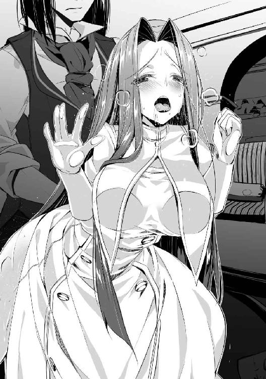
彼女自身も一度絶頂したことでコツを掴んだのか、肉棒が中を圧迫し擦り上げる刺激だけで快感を覚えているようだ。二回目にして既に中でイクことを覚えているのは、彼女にそういう才能があったのかもしれない。
これならば多少激しくしても問題ないと思ったそのとき、不意に部屋の扉が叩かれた。
「失礼します、フェアリス様のご様子はどうでしょうか？」
先ほどの異端審問官がフェアリスの様子を窺いに来たらしい。この状態で入られると俺と彼女が繋がっているところを完璧に見られてしまう。それは彼女にも分かっているらしく、振り向いて俺の顔を見ながら、必死に首を横に振っている。
俺は少し考え、回りに幻影を展開した。
「入ってきていいぞ」
「そうですか、では失礼して」
俺の返答を受けて審問官が部屋の中に入ってきた。一瞬何か違和感を覚えたような顔をしたが、すぐに真面目な表情に戻っていた。
フェアリスはというと、この男が入ってきた瞬間に膣の締め付けが急激に強くなり、少々痛いぐらいに俺の物を締め付けて離さない。顔は青褪めており、完全に見られたと思っている。
「フェアリス殿は......寝ているようですね」
しかし審問官の放った一言に驚きの表情を作った後、俺を睨みつけてきた。どうやら俺が術式で誤魔化しているのが分かったようだ。涙目で俺を睨みつける様子に迫力はない。
しかし同時に、俺と彼女の行為中の姿が見られてはいないことに安堵したような様子を見せた。彼女が油断したその隙にクリトリスを摘み上げ、同時に思い切り腰を打ち付けてみた。
「あんっ!?」
「ん？」
突然の刺激で軽く絶頂してしまったらしく、中が俺の物から精液を絞るように動いた。
声を出してしまったことにより、フェアリスは今度こそ知られてしまったのではないかという不安で再び青褪めていた。膣も痙攣を起こす直前のようにきつく締まったので、危うく俺も声を出してしまうところだった。
突然聞こえてきた声に訝しげな表情を浮かべた審問官は、幻影によってできた虚構のフェアリスを探るような目つきで見ている。
「あの、今誰かの声が聞こえませんでしたか？」
「ん？ 私は何も聞こえなかったが......どうかしたのか？」
「ああ、いえ、気のせいだったようです。では何かあったら呼んで下さい」
幻影による違和感を感じ取れなかった審問官は、聞こえた声が気のせいだと思うことにしたようだ。俺に一声掛けて退室していった。
「行ったようだな」
「はぁぁ......」
足音が遠ざかっていった後、フェアリスの身体から力が抜けて倒れそうになったので抱えてやった。どうやら絶頂によって倒れそうな身体を緊張によって何とか保っていたらしい。
「心臓が止まるかと思いました......」
「その割には結構感じていたようだが？」
「あれはいきなりで驚いたからです！ それよりあんなことはもう止め......」
「フェアリスの中が気持ちいいので、私もそろそろイキそうだ」
「も、もう、話を逸らさないでっ、んんっ！」
話を最後まで聞かずに腰を動かしてやると、怒りながらもこちらの動きに合わせて腰を振ってくれている。こういうところが扱いやすいと思われる原因だが、いちいち指摘するものでもない。本人が気付くまでは黙っているのがいいだろう。
「フェアリス、中に出すぞ！」
「は、はい！ くぅ、んんんんっ！」
彼女の中に精液を出してやると、彼女も同時に絶頂したようだ。声が外に響かないよう口を押さえてはいるが、先ほどから叫んでいたので意味がない気もする。
肉棒を引き抜くと、彼女の股の間から精液と愛液が混じった液体が垂れ、足元を汚していた。
※
それから少し休んだ後に教会を出て、マルコ達と別れた。
フェアリスはニコニコと嬉しそうな表情で歩いている。彼女の中では今日の出来事はいいものだったのだろう。嫌われていないだけでも助かるが、喜んでいるのなら何よりだな。
「ヤード様、色々とありがとうございました。お礼に今度私の家に来て下さい。自慢できる腕ではありませんが、料理でも振舞わせて下さいね」
「それは断らせてもらう。あまり好き嫌いはないが、流石に人間の食べ物に限る」
何度か彼女の料理の腕を見る機会があったのだが、残念ながらあれは料理と呼ぶには抵抗がある代物だった。口に入れた瞬間反射的に吐き出しそうになるほどの味だった。
「な!? 何てことを言うのですか！ いくらヤード様でも失礼ですよ！」
「失礼なのは私ではなく、あの料理だ。まずお前が食材に謝ったほうがいいと思うぞ」
「言いましたね！ 絶対に食べさせますから！」
顔を真っ赤にして怒っているフェアリス。先ほどまでの雰囲気がぶち壊しだが、俺はこっちのほうが楽でいい。
彼女がこちらに何か言っているのを聞き流しつつ、そろそろ夜が明ける頃だと暢気なことを考えていたのだった。
※
屋敷に戻り早速地下へと向かうと、扉の前でルーシアが腰を抜かしていた。近づくと俺の姿に気付いたようで、慌てて立ち上がっていた。
「ご、ご主人様、これは違うのです。私は何もやっていません」
「何の話......あれのことか」
この部屋に二人の死体を送ったのはいいが、そういえば屋敷の人間は誰一人そのことを知らない。彼女はいつものように世話をしようとしただけなのだろうが、そこにあるのは世話をしようとしていたダークエルフと知らないおっさんの死体だ。腰を抜かすのも無理はない。
「気にするな、今日は世話もしなくていい。ただ、ここで見たものは全て忘れろ」
「え？ は、はい」
一瞬不思議そうな顔をしたが、関わらないほうが安全だと判断したようだ。尻の埃を叩き落としてそそくさと立ち去っていった。
誰も入らないよう部屋を閉じ、二人の死体に近づく。綺麗に首を刎ねられていたおかげで、フィルポットが死に際にしていた懇願の表情も、リリーの恍惚のまま死んでいった表情もくっきりと残っている。
早速生き返らせるために断面の汚れを取って二人の身体と頭を繋げた。そして蘇生を二人に対して使用すると、一瞬で切断面が繋がって二人の心臓が動き始めた。
目覚める前にフィルポットに対してのみ思考誘導を掛けておく。ほどなくして二人とも起き上がってきた。
「い、一体何が......ここはどこだ？」
フィルポットは周りを見回して教会とは違う場所だとすぐに気が付いたようだ。そして俺しかいないと分かると、人を殺せそうな視線で俺の顔を睨みつけてきた。
「どうだ、一度死んだ感想は？」
「死んだ？ 貴様は何を言っているのだ？」
「お前はマルコ司教に殺された。自分の首が刎ねられるところを覚えているだろう？」
「っ！ た、確かに」
フィルポットは自分の死ぬ瞬間を思い出し身震いしている。普通の人間ならトラウマになっていてもおかしくはないと思うので、奴が恐怖しているのも納得できる。
「し、しかし、それが本当だとしても、どうしてお前は私を生き返らせたのだ？」
「復讐を手伝ってもらうためだ」
「復讐？ 私への復讐が目的なら、生き返らせなければよかっただろう？」
「お前への制裁はもう済んだ。私が復讐したいのはサヴィレ家、ひいては貴族派の連中だ。気付かなかったのか？ マルコ司教は貴族派のためにお前を殺したのだ。お前に余計なことを喋られる前に口封じをするためにな」
「まさか!? いや、しかしそれなら辻褄が合う......」
「私の作戦に乗れ。そうすればお前を裏切った貴族派の連中を破滅させることもできるだろう」
「よし、その話乗った！ 私を裏切ったことを後悔させてやる！」
これでランドとサヴィレ家を陥れる用意は整った。後は国王の承認をもらうだけだな。
そういえばリリーはどうするのかという思考が頭を過ぎり彼女を見てみると、未だに呆然とした表情のままだった。こちらが手を振っても反応がない。精神が壊れてしまったのかもしれないな。
洗脳を掛けたまま殺されたのが不味かったのか、それともその後蘇生で生き返らせたのが不味かったのか、どちらにせよ彼女が元の人格を取り戻すことはないだろう。元々彼女に思うところはなかったが、流石にこちらの都合で振り回してこの結果なのは少し気の毒に感じるな。
「フィルポット、このダークエルフを引き取る気はないか？」
「馬鹿な、私はエルフが嫌いだ。そんな奴は顔も見たくない」
にべもなく断られてしまった。仕方ないので俺が責任を持って引き取ろう。
洗脳を解除してやると、俺の顔を見て少しだけだが顔を歪めた。その目に僅かだが理性の光が戻ったような気がした。これなら時間を掛ければ回復するだろう。
とりあえず今日のところはフィルポットを昏倒させて、午後まで眠るとしよう。
翌日、ソフィに頼んで国王と話し合いの場を設けてもらった。王宮にある会議室で俺と国王、そしてソフィアが向かい合って座っている。
「突然の申し出にもかかわらず、こうして場を設けてもらい感謝する」
「そなたとソフィアの頼みならば是非もない。しかし、私はてっきり結婚式についての話かと思っていたのだが、どうやら違うようだ」
「ああ、今日話をしたいのは第二王子ランドに関することだ」
「む？ ランドが何か仕出かしたのか？」
「それはこれから紹介する人物に話してもらおうと思っている。入っていいぞ」
俺の言葉を聞いて入ってきたのはもちろんフィルポットだ。奴はいきなり国王に会うとは思ってもいなかったので、可哀想なくらいに恐縮している。今にも倒れそうなほどだ。
「まずは紹介しよう。この男はフィルポット。教会で司教位を勤めていた者だ」
「勤めていた？ 何故過去形なのでしょう？」
ソフィの質問はいいところを突いていた。彼女の洞察力にはいつも助けられているな。
「この男は異端の罪で昨日殺されたことになっている。表向きの理由はダークエルフの奴隷と性行為を行ったためだとしているが、本当の理由は口封じだ」
「続けてよいぞ」
「この男は教会の貴族派に属していたが、そこで貴族派の者達にある指示が下されたらしい」
「指示ですか。まさか......」
「ああ、私とフェアリスを貴族派に取り込め、手段は問わない。そういう指示だ」
「ではヤード様とフェアリス様が異端認定されたのも、貴族派の策略だったのですね」
ソフィはやっと納得がいったという表情で俺の話を聞いていた。彼女も今回の件に関しては色々と不審な点を感じていたのだろう。それに対し国王は俺の話を聞いてもしばらく黙っていたが、やがてフィルポットを見て口を開いた。
「ふむ、フィルポット司教だったか、今の話は本当か？」
「は、はい、我らが神に誓って」
「そうか、つまり伯爵は貴族派の中核であるサヴィレ家とランドが今回の首謀者だと考えておるわけだな？ それで王族の捕縛許可を私に求めに来たのだろう？」
「その通りだ。さらに奴らには別の疑いもある」
「何？」
「さ、サヴィレ家は自派の勢力を強めるため、ダークエルフを使った破壊工作を考えています」
「な!? それは真か！」
フィルポットの口から放たれた衝撃の発言に、国王が立ち上がった。ソフィも立ち上がりこそしなかったが、驚愕を露にしている。
「ダークエルフへの敵意が高まれば、異種族の排斥を掲げる貴族派が勢力を盛り返せるだろう、と。既にダークエルフの奴隷を屋敷に確保しているとも聞きました」
「むむ、それが本当ならば是非もない。ソフィ、すぐさま兵をサヴィレ家に向かわせよ」
「はい、お父様」
ソフィは急いで部屋を出ていった。これでランドとサヴィレ家も終わりだろう。中核を失った貴族派も放っておけば瓦解していくはずだ。
※
その後ランドは捕らえられ、謁見の間に連れてこられた。俺がディアンの策に乗ったときもそうだったが、周りからの視線が結構痛いのだ。
「さてランドよ、そなたがここに呼ばれた理由は分かっておるな？」
「知らん！ 一体俺が何をしたというのだ！」
「ふむ、罪状は売国行為及び反乱の疑いとなっている」
「だから、あの奴隷はウェルナー伯爵が無理やり置いていったのだ！」
あの後王国兵により速やかにサヴィレ家は包囲され、ランド含むサヴィレ家の人間は全て捕らえられた。そこで屋敷に匿っていたダークエルフ達も当然見つかることとなったのだ。
「伯爵よ、ランドはそう言っておるが、そなたからは何かあるか？」
「何故私がお前の屋敷にダークエルフを置いていかなくてはいけないのだ。それに無理やり置いていったというのならば、すぐに追い出せばよかっただけのことだろう。何故わざわざ匿っていた？」
「何だと！ あれは......」
「あれは？」
「......くそっ！」
俺と交わした契約のせいで、俺が奴の派閥に参加したと気付かれる恐れのある内容は口に出したくても話せないようになっている。おかげで他の人間からは、奴が必死に言い訳を考えているようにしか見えない。
「そ、そうだ！ あのダークエルフ達はお前を見ていた！ あいつらに聞けばお前が置いていったということが分かるはずだ！」
「ふむ、誰かその者達を連れて参れ」
起死回生の手段だと思ったのか、ランドの表情に勝利を確信したような笑みが浮かんでいる。
だが残念なことに、その手段は最悪の一手だ。これで奴の破滅は決定したな。
そして兵士に連れられた奴隷達が入ってきた。皆見た目は非常に美しいので、思わず周りの人間からもため息が漏れている。俺が翻訳術式を掛けると、国王が彼女達に質問を始めた。
「さて、そなた達は私の言葉が分かるかね？」
「はい」
「ふむ、それではそなた達はそこの男の顔を知っておるか？」
国王は俺のほうを手で示しながら彼女達に質問した。しばらくの間彼女達は反応がなかったが、ランドが焦れて足踏みを始めた辺りで一人のダークエルフが進み出た。
「はい、私はこの男を見たことがあります」
「はは、そうだろう！ やはり奴隷達はウェルナー伯爵の差し金だったのだ！」
ランドが勝ち誇ったように笑い、周りの人間もまさかの事態にざわめいている中、国王は静かに何かを考えている様子だった。
「ウェルナー伯爵よ、何か申し開きはあるか？」
「一つだけ」
「うむ、申してみよ」
「それでは。その奴隷達は見たところ洗脳用の術式が掛かっている。おそらくは首に付いた魔道具のせいだろうが、先ほどの発言も第二王子がそう言うように指示している可能性がある」
「では、その首輪を外してから改めて質問をしようかの」
国王の命令で魔術師が首輪を解除し外された。その途端に彼女達の瞳から涙が溢れ、その場に蹲り泣き始めた。その姿を見た周りの人々の目には、彼女達が洗脳されていたと確信できるものがあった。
「そこの娘よ、先ほどさせてもらった質問を今一度しよう。この男を知っておるか？」
「知りません！ お願いです、殺さないで！ もう痛いのは嫌です！」
涙ながらに語ったその言葉は嘘とも思えないと感じたのだろう。国王はゆっくり頷くとランドのほうに向き直った。その表情には静かな怒りが滲んでいる。
「ランドよ、何か申し開きはあるか？」
「ち、違う！ 全て伯爵の罠だ！ 信じてくれ！」
「もうよい、その者を連れていけ」
国王の命で牢屋へと連れていかれるランドの目は絶望に彩られていた。その姿を見てようやく溜飲が下がった。精々俺をコケにした報いを受けるといい。
ダークエルフ達は一旦人格を消した後、擬似人格により新たな人格を作り出してあった。調教は全てオリンピアに任せ、俺は彼女達に姿を見られないように洗脳を掛けて従順な奴隷を作り上げた。
彼女達はオリンピア以外の人間と会ったことはない。酷い拷問を受けていた記憶を作り上げたので、洗脳が解けた瞬間から国王を騙せるほどに嘘偽りのない言葉が言えたのだ。
「さて、ウェルナー伯爵よ、よくぞ国賊を見つけ出してくれた。そなたには褒美を取らせようと思うが、何か望みはあるか？」
「ではあのダークエルフ達をいただこう」
「理由を聞いてもよいか？」
「王国の地理を知った可能性がある者を敵国に帰すわけにはいかないが、処分するのはあまりにも哀れだ。ならば我が屋敷で雇ってやろうと思っただけだ。幸いにして屋敷の人間はダークエルフにもそれなりに理解があるからな」
建前を言ったが、本当は大金で買った彼女達を手放すのは惜しいと思ったからだ。もちろんこの理由を言うわけにはいかないので、無理やり別の理由を作り出したわけだが、国王には気付かれなかったようだ。
「そうか、ではそなたに彼女らを任せることにしよう。それを褒美とする」
「ありがたい」
こうしてダークエルフ達は俺の下に帰ってくることになった。結局買ったものが戻ってきただけで得はしていないが、必要経費だと割り切っておく。
俺の罠にはまったランドやサヴィレ家はもはや派閥を取り戻せないほどに没落するだろうし、貴族派にもありもしない罪を擦り付けておいた。これで俺やフェアリスに干渉してくる輩もいなくなるだろうし、教会の面倒な勢力争いからも解放された。
これでこの件も終了だな。やっと平穏な日々が取り戻せると、思うと気分爽快だ。とりあえずは屋敷に戻って思う存分に寝よう。
※
翌日、屋敷にフェアリスを連れたマルコが訪ねてきた。今回の件を改めて報告しに来たらしい。
「終わったようだな」
「お待たせして済みません。異端者の情報を伝えていただきありがとうございました。ただ炎で焼かれたはずのフィルポット司教が生きていたのは不思議でしたがね」
「そうだな」
痛烈な皮肉を込めた一言を適当に流す。いちいちこんな言葉を気にしていてはやっていられない。
フェアリスは人を殺したというのに穏やかな表情のマルコに納得できない様子だったが、流石にここで議論しようとは思わなかったようで、不満げな表情を浮かべているだけだった。
「そういえば伯爵殿、先日も言いましたが、貴方に掛けられていた異端の疑いは無実であったと通達が来ました。あらぬ罪で疑ったこと、申し訳ありませんでした」
「気にしなくていい。大方サヴィレ家が裏で糸を引いていたのだろう」
「ありがとうございます。ですが、疑われるような生活を送っているのもまた事実です。異教徒を回心させて下さるのはこちらとしてもありがたいのですが、あまり距離が近いのも問題ですよ」
「分かった。考えておこう」
全く考える気はないのだが、付き合いでそう言っておく。早く話が終わって欲しいのだが、こういう人間は律儀に詳細まで話すのが嫌いだ。
「分かっていただけて何よりです。ああ、何でしたら貴方の弟子のエルフや他の方々も入信してみませんか？ 神は異種族だからといって信仰心を拒むようなことは致しませんよ。数は少ないですが、エルフの信徒もいるのですから」
「ふむ、考えておこう」
エルやナタリアのことを言っているのだろうが、唐突に釘を刺してきたのが何となく気になったので、窃思を使ってみた。
（......今回の件を鑑みても、彼の力は並の魔術師とは比較にならない。できれば国王や騎士達からは引き離しておきたいものだ。勇者を二人引き抜けば、教会の権力もさらに上がることだろう。最悪、彼の身内に教徒がいれば人質にも......）
まあわざわざ事後報告だけとは思っていなかったので、この男にも何かよからぬ考えがあることは覚悟していた。それでもマルコの考えはただの引き抜きのようなので、放っておいてもフィルポットのときのような問題は起こらないだろう。
「そうだな、彼女達にも勧めておこう」
「そうですか。ええ、それがいいでしょう」
「それではこの後も用事があるので、これで失礼させてもらう」
「おお、そうでした。長々と話してしまい申し訳ありませんね。またいつかお会いしましょう」
マルコはそう言って屋敷を後にした。フェアリスは不機嫌そうに奴を見送っていたので頬を突いてやったら、腹に痛くもないパンチをお見舞いされた。
※
散々愚痴を語ったフェアリスが帰ったので、ナタリアのところに向かった。彼女は既に起きているようで、部屋ではなく庭で弓の訓練をしていた。
基本的にウッドエルフは皆弓の扱いが上手いが、彼女の腕は平均以上だ。ほんの僅かな大きさにしか見えない的に次々と矢を命中させている。いつもはうるさいとしか思わない彼女も、こうして一心に弓を引いている姿を見ると美しいと思う。
「ナタリア、ここにいたか」
「どうしたの？ 何か私に用事でもあるのかしら」
彼女が一旦休憩を入れるまで待ってから声を掛けた。俺の存在に気付いていたようで、いきなり声を掛けても驚きはしなかった。
「ああ、教会に行くぞ。お前に洗礼を受けてもらう」
「え、この国の神を信仰しろっていうの？ ヤードがどうしてもって言うならいいんだけど......」
「違う、このままだとまた難癖をつけられかねないので、表向きは回心したという事実を作るだけだ。別に信仰を変えろと言うつもりはない」
「ああ、そうなの。分かったわ」
納得してくれたようでよかった。万が一断られた場合は無理やり引っ張っていこうかと考えていたのだが、その心配は無用だったようだ。
しばらく彼女の弓の訓練を眺めた後、軽く朝食を取って彼女を連れて教会へと向かった。今回は転移を使わずに、普通に歩いていった。
街中を歩いていても、ナタリアには興味を引かれる物ばかりのようで、楽しそうにきょろきょろと辺りを見回していた。少し歩いていくと露天市をやっているようなので、ついでに寄ってみる。まだ早い時間だが既にかなりの数の店が出ており、多くの人で賑わっていた。
「凄いわね、行商に付いていったところでもこんなに大勢の人はいなかったわ」
「まあ仮にも王都だからな。それよりあまりうろつくなよ」
「分かってるわ。子供じゃないんだから」
そうは言うものの、彼女は面白そうな物を見つけるたびにそちらのほうへと行ってしまうので、俺もたびたび追いかける羽目になっている。
結局欲しそうに眺めていた首飾りを買ってやり、露天市を後にした。彼女は首飾りを着けてとても上機嫌な様子だ。そんなに高い物でもないが、そこまで喜ばれるならば買った甲斐もある。
露天市を出てさらに歩き続け、結局そろそろ昼になるかという時間になってようやく教会に着いた。歩きでも行けるだろうと思っていたが、予想よりもかなり遠かったようだ。
帰りは転移を使うことにして、近くにいた教会の人間に洗礼を受けに来たことを伝える。洗礼は結構な人数が受けに来るようなので、相手の対応も慣れたものだった。
ナタリアはすぐに洗礼を受ける部屋に通され、俺は外で待っていた。しばらくして彼女が出てきた。どうやら無事に終わったようだ。
「何も変わってないけど、本当にできたのよね？」
「洗礼の儀式など、商会の入会手続きのようなものだ。そんなに大それたものではない」
「ああ、そんなものなのね......期待して損したわ」
彼女は儀式と聞いて特別なイメージでも持っていたのかもしれないが、教会の儀式は形だけの物が多い。中には本当に神の加護を得ると銘打っているものもあるらしいが、実際神の加護を受けている人間には会ったことがないので眉唾物だ。
ともあれ、これで彼女も立派な教会の信徒だ。帰りに今回の洗礼を担当していた者に金貨を数枚握らせる。これは決して疚しいものではない。気持ちばかりのお布施だ。
あちらも分かっているので、ニコニコと笑みを浮かべながら受け取った金を服の中にしまう。ここまでが決まっている一連の流れだ。
彼女を連れて転移で屋敷に戻った。久しぶりに外に出られたので彼女も満足そうだ。遅い昼食を取った後、彼女と別れて部屋に戻った。
後はエルに受けさせればいいか。そういえば最近顔を見ていないので、洗礼を受けるよう伝えるついでに様子を窺ってこようと思い、イストリアの砦に転移した。
※
砦の兵に聞くと、エルは魔術師達の訓練を見ているらしいので、修練場へと顔を出してみた。
下級から中級程度の魔術師達が連携や個々の術式の修練に明け暮れている中、エルは端のほうで退屈だと言わんばかりの眠たげな表情で訓練中の者達を眺めていた。しかし俺に気が付くと、今にも眠りに落ちそうだった目を見開き、反射的と思えるほどの速さでこちらへと飛んできた。
そのまま飛びついてくると思った俺は踏ん張れるように構えたが、エルは直前で何かに気付いたようにはっとした顔をして、俺の前で急停止した。
不思議に思って服を見てみるが、特に気になるものはない。もう一度エルを見たが、俺を見つけたときのような笑顔に戻っていた。急停止したのはエルも少しは慎みを覚えたからなのだろう。
「マスター、連絡をくれれば出迎えましたのに」
「まあちょっと寄った程度のものだから、そこまでしてもらわなくてもいいぞ」
「そうですか、何かありました？」
「ああ、暇なときに洗礼を受けてもらおうと思ってな」
洗礼をする理由を伝えると、納得してくれたようだ。後日行くというので無理強いはしなかった。
「そういえばあの男はもう旅立ったのか？」
「ヴァンのことですか？ それならまだいますよ。呼び出しましょうか？」
俺の返事も聞かずにヴァンに念話を送ったようで、止める間もなくこちらへと走ってくる足音が聞こえ、すぐにあの男が現れた。
「えっと、何でしょうか？」
「特に理由はない」
「私もそこまで暇ではないのですが......」
開き直ったエルの態度に肩を落としていたヴァンだが、俺の存在に気が付くと納得したような表情をしてこちらへと手を差し出してきた。
「お久しぶりですね、ウェルナー伯爵」
「お前、もう旅立てるくらいの資金は貯まっているのではないのか？」
「それがエルマイアさんに引き止められてしまいましてね」
「マスター、この男は鬱陶しいですが、術式に関するアイデアはなかなか優秀です。あと、こいつがいないと同レベルで話し合える相手がいなくて、暇で死んでしまいそうだったのです」
エルには以前翻訳術式を教えておいたので、ヴァンとも話せるようになっていたのだが、この様子を見るに、あまりよろしくなかったような気がしてならない。
「まあお前のしたいようにしてくれればいいが」
（こいつは本当に信用できるのか？ 記憶の欠落についてもまだ分かっていないのだろう？）
普通に言葉を発しながら念話でエルに話しかける。並列思考は結構な負担が掛かるので普段は使わないが、こうすることで第三者が近くにいながらも聞かれることはなくなるのだ。
「ありがとうございます、マスター」
（今まで監視を続けていましたが、怪しい行動は取っていませんし、あの記憶の欠落も変わりありませんでした。多分大丈夫だと思いますよ）
エルはこいつを信用しているようだが、俺にはどうも怪しげな感じが拭えない。疑いすぎるのも止めたほうがいいが、こいつの場合は警戒の必要があると俺の勘が囁いていた。
（油断はするな。やはり奴は何か怪しい気がする。常に警戒を怠らないようにしておけ）
（分かりました、マスター）
エルには注意をしたが、俺ももう少し奴を警戒しておくことにしよう。
一番気になっている点は、奴とエルの間で術式の会話が成り立つことだ。そもそもこの世界の物とは異なる術式を理解できる時点で異常だ。普通その世界の術式に慣れてしまえば、他の術式にも余計なバイアスが掛かって発動が上手くいかなくなる場合が多い。
やはり奴の記憶の欠落には何かがある。もう少し様子を見る必要はありそうだが、いざとなれば奴を消すことも十分に考慮されるべきだとそのときの俺は考えていた。
※
結局砦では何事もなかったので、それから特に事件が起こることもなく、式の日がやってきた。直前まで式の準備で周りが忙しくなっていたが、何とか当日までには間に合った。
式は城の礼拝堂で行われた。周りには数々の参列者達が集まっており、俺とソフィは祈祷台で大司教とかいう奴の長々とした話を聞き祝福の言葉をもらうと、最後にソフィの指に指輪をはめた。
周りからは拍手と歓声が聞こえてきたが、こちらは場の雰囲気に飲まれないようにするのが精一杯で、お祝いの言葉も聞こえていなかった。
礼拝堂での式が終わると、今度は他の国の大使やその他著名な人物に挨拶をすることになった。
この時点で既に俺は勘弁して欲しいと心の中で叫んでいたが、ソフィは全く微笑を崩すことなく対応していた。やはり育ちの差は大きいようだ。
顔も名前も知らない人間達が俺達に祝いの言葉を掛けてくれるが、顔も知らない他人から祝われても嬉しくも何ともない。中には王族と結婚した俺に近づこうとしているのが丸分かりの人間もいて、心労で倒れそうだ。
何とか笑顔を崩さないように対応し、やっとの思いで乗り切ったときには身体はともかく精神的に疲労困憊していた。
これでまた夕方からは俺の屋敷でパーティーだ。分かっていたとはいえ、たった半日でかなりの精神力を消耗してしまった。現在は休憩のためソフィと共に彼女の部屋に避難しているが、もうすぐにでも出なくてはならない。
「ヤード様、大丈夫ですか？」
「ん、あまり大丈夫でもないが、これも君と結ばれるためだ」
「ヤード様......」
彼女が顔を近づけてきたので、口付けをする。化粧が落ちるかもしれないのでほんの軽く程度だが、それでも彼女は満足できたようだ。
ソフィと共に城を出て屋敷に戻り、今度は屋敷でパーティーを行う。今回はソフィと離れているため、いざというときに頼れる人間がいないので心労も加速している。
ここでも俺に近づいてくる奴が多く、奴らのあしらいに苦労していると、見知った顔がやってきた。アレクとサガミだ。
「ヤード殿、結婚おめでとう！ まさかソフィア王女と結婚するとは予想もしていなかった」
「ご成婚おめでとう。ヤード殿には言いたいこともあったが、この場では無粋だろう」
アレクは俺達の結婚を素直に祝福してくれているが、サガミは何か思うところがあるようだ。まあこいつはナタリアとも関係を持ったことを知っているからな。
「ああ、ありがたい。フェアリス殿は一緒ではなかったのか？」
「彼女も後で来るそうだ。それにしてもヤード殿が一番先に結婚するとは、思ってもいなかった」
「まあ半分偶然のようなものだ」
その後も少し話をした後、二人は離れていった。そして二人が去った後しばらくしてからフェアリスがやってきた。祝いの席には似つかわしくない微妙な表情を浮かべていたが、こちらにやってくると笑顔に戻っていた。
「ヤード様、おめでとうございます」
「ああ、何やら浮かない表情をしていたが、何かあったのだろうか？」
「ちょっと色々な殿方に誘われてしまいまして、困ってしまいます」
疲れた風にため息を吐いているが、今の彼女が男性客の視線を集めてしまうのは仕方がない。
今日の彼女は胸元が大胆に開いたドレスを身に着けているせいで、明らかに普段よりも色っぽく見える。ついでに他も普段より大きく見える気がするが、俺の知る限りでは彼女の胸は谷間ができるほど大きくなかったので、きっと寄せて上げているに違いない。
髪もいつものストレートではなく、結婚式というフォーマルな場に合わせるように結ってあり、彼女の雰囲気をより大人びたものへと変えていた。
アレクやサガミがパーティー用に正装をしているのは何とも思わないが、彼女がそういった格好をしているのは珍しいので、思わず眺めてしまう。
「フェアリス殿がそういった服を着てくるとは思わなかった。てっきりいつもの神官服かと思っていたのだがな」
「ヤード様は私をどういう目で見ているのでしょうか？ 私も女ですから、こういったパーティーでは相応の服装にしますよ？」
俺の言葉が気に障ったのか、少し咎めるような目でこちらを睨んできた。しかし普段はあれしかないのかと言いたくなるほどに同じ神官服を着てくるので、俺がつい今のような言葉を口走ってしまうのも仕方がないだろう。
しばらく俺を睨んでいたフェアリスだが、結局諦めたようなため息を吐いた後、俺のほうをちらちらと窺うように見てきた。
「ヤード様、あの、似合っているでしょうか？」
「この場で私にそれを聞くとはたいした勇気だ。ついでに聞くが、その服は自分で選んだ物か？」
「......お城の衣装係の人に選んでもらいました」
「まあそうだろうな」
「そういうヤード様も、私への視線が妙に偏っていますよ？」
「私は男だからな。そういう格好をされれば仕方がない」
「ひ、卑怯です」
馬鹿みたいなやり取りを交わしていたが、流石にこれ以上時間を掛けると他の客にも怪しまれそうだ。それはフェアリスも分かっていたようで、軽く咳を吐いて真面目な顔に戻った。
「......まあいい。ソフィにも声を掛けてやってくれ。きっと喜ぶだろう」
「はい。では失礼しますね」
慣れない衣装でときどき転びそうになりながらも、ソフィのほうへと向かっていった。これで俺の知り合いもいなくなったかと思っていたが、まだ残っていた人間がやってきた。
「お久しぶりです、ヤード様。それともお義兄様と呼んだほうがいいでしょうか？」
「マルガレーテ殿か、そちらの好きに呼んでくれ。それより要塞は大丈夫なのか？」
「ご心配なく。ヤード様のおかげで前線が上がったので要塞のほうも落ち着いていますし、この式が終わったらすぐに戻りますので」
不機嫌そうなオーラを出しながら俺に近寄ってきたマルガレーテを見て、周りの人間が一歩下がる。どう見ても険悪な雰囲気を醸し出している彼女に近づきたいとは思わないだろう。
彼女も普段の格好とは違い、パーティー用の豪華なドレスを着ていた。その姿はまさに高飛車な姫のイメージそのもので、正直いつもの服装よりも似合っていた。黙っていれば男共が放っておかないだろうに、彼女は周りの人間に声も掛けられていないようだ。
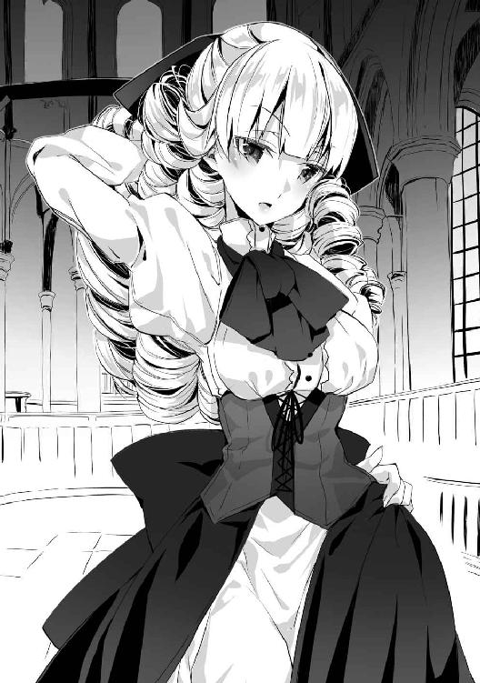
「止めろ、マルガレーテ。ここは祝いの席だぞ」
「あらお兄様、いらしていたのですね」
俺とマルガレーテに近寄ってきたのはロベールだった。こいつはあまりいつもと変わらない服装だが、似合っているので特に言うことはない。それにしてもこいつも砦にいたはずなのに、一体どうしてここに来てしまったのか。王国の軍は暇人の集まりなのだろうか。
「久しぶりだな、ロベール殿」
「久しぶりというほどでもないな。まずはお前と妹ソフィアとの結婚を祝福させてもらおう」
「私からもお祝い申し上げますわ。正直なところ、あまり祝いたくはありませんけど......」
ロベールも内心ではあまり面白くないのかもしれないが、マルガレーテのように態度に出したりはしていない。まあロベールが人としてできているというよりは、マルガレーテがまだ子供っぽい真似をしているといったところなのだが。
「伯爵、このパーティーが終わったら少し付き合え」
「ん？ それは構わないが」
「お兄様、このような男と話していても面白くありません。早くお姉様のところへ行きましょう」
マルガレーテに引っ張られる形で、仕方ないというようにロベールも去っていった。どうやら家族の仲は悪くないようだ。ソフィも近づいてくる二人に気付いて嬉しそうにしていた。
その後も話しかけてくる人間に適当に対応しつつ、こういうときには真っ先に駆けつけてきそうなエルが参加していないことを不思議に思っていた。
※
結婚式の予定も全て終わり、招待客は皆帰っていった。今屋敷に残っているのは式の後で会う約束をしていたロベールぐらいだ。
ソフィは既に自分の部屋に荷物を運び込んでいた。俺が婿入りするわけではないので、これから彼女はここで生活していくことになる。まあ不自由はさせないようにしよう。
そんな中、俺はロベールに呼び出されて庭に出ていた。外は月明かりで薄暗いが全く見えないほど暗いわけではない。ただ呼び出された目的を考えると、もう少し明かりのある場所でやったほうがいいのではないかとも思う。
現在俺の正面には決闘用の模擬剣を持ったロベールが立っている。表情はいつもと変わらないが、放っている威圧感が普段とは比べ物にならない。それほどまでに俺と真剣勝負をしたいということなのだろう。妹思いの兄を持ってソフィも幸せだな。
「済まないな、ソフィの望みとはいえ、こうでもしないと私の中で納得がいかないのだ」
「いい、そんな気はしていた。これでお前の気が済むというのなら付き合うのも吝かではない」
「ありがたい。これは正式な決闘ではないので、魔術は好きに使ってくれ。手加減は無用だ」
「いいだろう。そこまで言うのならこちらも手加減はしない」
ロベールから剣を受け取り、少し離れた場所に立つ。手加減無用と言いながら、魔術師である俺に剣を渡してくるのはどうなのかと思ったが、これは戦士にときどき見られる、剣で語り合うという儀式だろうと無理やり納得する。
ロベールは自己強化の術式を幾つも掛けている。奴が術式も使えたのは意外だったが、強化をしている間にこちらも自分に支援術式を掛けていく。
得物は同じだが、俺と奴とでは剣術の熟練度が違う。術式である程度の差は埋められるとはいえ、長期戦ではこちらが不利だ。一撃必殺に賭けたほうが勝算はあるだろう。
お互い強化は終わり、静かな睨み合いが続いていたが、焦れた俺が先に動いた。
地面が抉れるほどの踏み込みで、一気に間合いを詰めて剣を振り下ろす。並の剣士ならばこの一撃で終わっていただろうが、奴は音速に近い速度の剣撃に対応し、俺の攻撃を見事に防いだ。
剣同士がぶつかり甲高い音が響き渡る。普通ならどちらの剣も砕けているところだが、術式により硬化された両者の剣は、刃が欠けることもなくその衝撃に耐え切った。
弾かれた勢いを力で無理やり抑え込み、すぐさま横から切りかかった。人間には到底不可能な動きだが、術式で身体能力が異常なほどに上がっている今の俺には造作もないことだ。これならば仕留められると思ったのだが、奴もまた超人的な反応でこれを受け止めた。
今の動きを見て奴が人間かどうか疑いたくなったが、流石に衝撃は殺しきれなかったようで、受け止めた剣ごと奴を吹き飛ばした。
体勢を立て直される前に再び切りかかったが、今度は上手く受け流されて体勢が崩れてしまい、そこに反撃とばかり斜めに剣を振り下ろしてきた。寸前で地面を転がって回避できたが、危ないところだった。すぐに立ち上がって構えると、奴も構えたままこちらを睨んでいる。
弾かれた際に腕を痛めたようで、今になって痛みがやってきたが、それを気にしているほど隙を与えてはくれないだろう。そのまま少しの間睨み合いが続いたが、何かが落ちる音で二人とも走り出した。
最大限の力を込めて剣と剣がぶつかり合った。想定以上の衝撃で硬化の掛かっている剣も耐えきれなかったのか、どちらも罅が入り始めていた。
お互い全力を出して拮抗していたが、先に剣が砕けたのはロベールのほうだった。俺の剣はそのまま奴の腕を切り裂き、奴の剣と同じように砕けた。
そして体力が尽きたのか、奴は崩れるように地面に倒れた。しかし腕を切られているのにもかかわらず、すっきりしたような表情を浮かべていた。
「参った。流石はソフィアの選んだ男だ、私の想像以上だった」
「まだ体力があるなら続けるか？」
「これ以上は無理だ。無理やり動かしてはいたが、始めの一撃で腕がボロボロだ」
そう言われて奴の腕をよく見てみると、確かにありえない方向に腕が曲がっている。まだ戦えそうな気がしたが既に満身創痍だったようだ。しかしその状態でも切りかかってくるとは人間を止めているとしか思えないな。
奴も納得したようなので、近づいて上級治癒を掛けてやると、奴の腕も元通りになった。そちらのほうが驚いたのか、痛みの消えた腕を動かしながらこちらを呆れた目で見てきた。
「魔法使いなのにここまで近接戦闘もできるとは......やはり勇者の称号を持つだけはあるな」
「その言葉はありがたく受け取っておこう」
「ああ、お前は信用に足る男だ。妹のことは任せたぞ、どうか幸せにしてやってくれ」
「約束しよう」
ロベールはその言葉を聞くと満足そうな顔をして帰っていった。
俺は風呂に行って汗を流した後、ソフィが待っているだろう部屋に向かった。
※
風呂に寄っていたので少し遅くなってしまった。寝室に入ると、ソフィはベッドに腰掛けて待っていた。彼女のほうに近づきながら、彼女の全身を眺める。
下着が透けて見えそうなほど薄い寝間着を着ているので、薄明かりの中でも彼女のスタイルのよさがはっきりと分かる。その服の白さは、緊張で赤くなっている彼女の顔を際立たせていた。
「お待ちしていました」
「済まない、遅くなった」
「いえ、お兄様とのお話は無事に済んだようで何よりです。お兄様の剣の腕は王国内でも五本の指に入る強さですが、まさかヤード様が勝ってしまうとは思いませんでした」
何故彼女が知っているのかと言えば、この部屋からは俺とロベールが戦った場所が見える。彼女はこの部屋の窓からずっと俺達の戦いを見ていたようだ。
彼女に近づくと、香水の匂いとは違ういい香りがする。どうやら俺の前に風呂に入っていたようだ。香水の香りがあまり好きではない彼女は、風呂に入るのがとても気に入ったようだ。
いつもよりも数段美しく見える彼女の姿に少しばかり見蕩れていると、彼女は恥ずかしがって顔を逸らしてしまった。身体を重ねるのは今日が初めてではないのだが、いつもと勝手が違うらしい。
「い、いつもは顔を見られても平気なのですが......今はとても恥ずかしいです......」
「そうか、しかしこれでは君と見つめ合うこともできないのだが」
「そうですね......はい、もう大丈夫です」
心の整理をつけるように少し息を吐いた後、少し照れたような顔でこちらのほうを向いてきた。そのまま彼女と見つめ合い、自然と顔が近づいていき、唇を重ね合わせた。
彼女は俺の背に腕を回し、離さないように強く抱きしめてきた。俺の舌に自らの舌を絡め、その感触を確かめるように積極的に動かしてくるので、俺もそれに応えて舌を彼女の口に入れ、彼女の口の中を貪るように舐めた。
やがて舌を離すと、唾液が糸を引くようにお互いの舌を繋いでいた。彼女は口付けだけで顔をトロンと蕩かせており、普段は感じない艶かしさを醸し出している。
「ソフィ、記念すべき初夜だ。今日は最後までしよう」
「はい、やっとこのときが来たのですね......」
恥じらいながらも嬉しさを顔いっぱいに出しているソフィを見て、俺はもう我慢ができなくなった。彼女をベッドに押し倒すと、服から覗いている首筋へと舌を這わせた。
「あ、はっ......ヤード様っ......」
服の上から胸を揉みしだきながら、彼女の透き通るように白い肌に俺の舌を這わせていく。
くすぐったさと気持ちよさで身を震わせながらも、彼女は俺の行為を受け入れてくれる。首筋を舐められただけでも感じ始めてきたのか、彼女の荒い息遣いが聞こえ、俺の興奮も高まってくる。
「ソフィ、脱がすぞ」
「はい......」
彼女の寝間着と下着を脱がせると、薄明かりの中に彼女の美しい肢体が晒される。特に胸は、ティアよりは小さいが、平均的な大きさを上回っている。露になったそれを再び揉みながら、首筋から鎖骨のほうへゆっくりと舌を進めていく。
胸の頂にまでたどり着くと、口に含んで舌で優しく舐め回す。胸の大きさとちょうどいいバランスを持っているそこは、舌での愛撫に反応して少しずつ硬くなっている。
「んん......あぅ......」
ソフィは喘ぎ声を上げないように片手で口を押さえ、もう片方の手でシーツを握って快感に耐えている。眉を顰めて快楽に抗っている姿を見ると、もっと彼女に乱れた姿をさせたくなってきた。
彼女の乳首を唇と舌を使って扱くと、背筋を反らしながら泣きそうな顔でいやいやと首を振っている。余裕のなくなってきた彼女の顔を見ながらさらに激しくすると、とうとう彼女は手を口から離して喘ぎ声を出した。
「やっ......ヤード様ぁ、あっ......」
今まで堪えていたものが一気に吹き出てくるように、彼女はやってくる刺激に何度も切なそうな喘ぎ声を出している。その姿は俺の嗜虐心をそそるのに十分な効果を与えた。
乳首を弄っていた舌を下ろし、臍の辺りに何度もキスをする。普通はたいしたことのない刺激だろうが、興奮で全身が敏感になっている今の彼女にはそれだけでも快楽を感じることのできるものになっていた。
気持ちよさそうなため息を吐いている彼女をちらりと確認して、さらに舌を下ろしていき、とうとう彼女の股間にまで到達した。
「嫌ぁ、あまり見ないで下さい......恥ずかしいです......」
「恥ずかしがることはない。ソフィの身体は素晴らしいと思うぞ」
「そんなこと......あ、んんっ......」
クリトリスを舌で突いてやると、快感で面白いように身体を震わせている。ここで感じている姿を見せたくないのか、彼女は顔を真っ赤にしてシーツを掴んで快感に耐えているが、そんな抵抗をされてはもっと淫らに喘がせたいと思ってしまう。
口に含んで舌で押し潰すように舐めてやるだけで、彼女は背筋を反らせて必死に快感を堪えている。一定のリズムで刺激しているので、彼女もだんだんと堪えるタイミングが分かってきた。そう彼女がリズムに慣れたところで急に彼女のクリトリスを甘噛みしてやった。
「あ、あぁああああ！ んんぅ！」
どうやら軽くイってしまったようだ。その弾みで彼女は潮を吹き、俺の顔や首筋を彼女の体液が濡らしていった。
初めて潮を吹いたらしく、彼女は恥ずかしさのあまり両手で顔を覆っている。俺は身体に付いた液体を拭い取り、服を脱いだ。
「ソフィ、そろそろ私も我慢ができない。君の処女をいただこう」
「あ......はい、私の初めてをもらって下さい......」
既に硬く反り返っている俺の肉棒を彼女の膣穴に当て、ゆっくりと挿入していく。初めてなので膣穴は狭く、少し入れるのにも力がいるが、加減を間違えないように彼女の処女膜にまで届かせた。
屈んで彼女を抱きしめながら、腰を突き入れて彼女の処女膜を破る。少しの抵抗の後、膜を破って彼女の奥にまで肉棒が入っていくのが分かった。
「いっ......あっ......」
彼女は声を押し殺して叫ぶのを堪えているようだが、その表情からは破瓜の痛みに耐えていることが見て取れる。
しばらくは動かずに彼女の痛みが落ち着くまで待つ。その間は彼女に口付けをし、胸を弄って痛みを快楽で少しでも和らげるようにしておいた。術式を使えば痛みを紛らわせることもできるのだが、こういう場面でそれを行うのは無粋だろう。
「ヤード様、どうぞお好きなように動いて下さい。私は大丈夫ですから......」
「済まないな、もう少し経てば痛みも引いてくると思う」
少し痛みが引いてきたようで、彼女の呼吸も落ち着いてきたので、ゆっくりと動き始めた。
彼女も動き始めたときは痛みを感じて顔を顰めていたが、少しするともうセックスの快感を味わえるようになったらしく、声に艶めいたものが混じり始めていた。
まだ初めての膣内は狭く、俺の肉棒を締め付けてくるのが気持ちよく、すぐにイってしまいそうになるが、何とか射精感を抑えて腰を振る。
お互い興奮してきたようで、口付けは荒々しくなってきており、腰を振る速度もだんだんと速くなっていった。彼女は初めてなのにもう痛みは感じていないらしく、それどころか少しずつだが自ら腰を動かして快感を得ようとしている。
アナルセックスのときも思ったが、彼女は清楚な見た目や大人しい性格に反して、こういった行為に対しては才能があるとでも言うべきか、快楽に対して非常に貪欲と言える。
今も俺の腰に足を絡みつかせ肉棒が抜けないようにしているし、これを無意識で行っているのだとしたら、天性の淫乱だ。まあこんな美人が俺を求めてくれるのはむしろ嬉しいし、俺が彼女をこんな風にしたのだとしたら男冥利に尽きる。
「ああっ、これが夫婦の営みなのですねっ！」
「そうだっ、このまま中に私の精液を注ぎこんでやるからなっ！」
「んっ、嬉しいですっ、私にヤード様の子を、孕ませて下さい！」
他の女性が言うよりも俺の心を揺さぶったその言葉、その期待に応えるように激しく腰を動かして射精欲を高めていく。
俺のあまり彼女を顧みない荒々しい動きにも、既に彼女は全く痛みを感じていないようだ。むしろ彼女のほうから俺の動きに合わせて腰を振り、奥にまで届くようにして喘ぎ声を上げている。
彼女の顔は快感で蕩けきっており、俺の舌を求めて自ら舌を突き出しておねだりをしていた。もはや清楚な彼女の雰囲気は見る影もなくなっているが、逆にそれが退廃的な魅力を醸し出している。
彼女の求めに従い、舌を彼女の口に入れて口腔内を激しく舐め、こちらの唾液を注ぎこむ。彼女がそれを飲み込み、ごくりと喉を鳴らすたびにまた唾液を注ぎこむのを繰り返す。その間にも腰の動きは緩めず、むしろ絶頂に向けてどんどんと加速していた。
ソフィも限界が近づいているのだろう、こちらを強く抱きしめてきた。俺もそろそろ限界だったので、最後に思い切り腰を打ち付け、彼女の中に俺の精液を注ぎこんだ。
同時に彼女も絶頂したようで、膣がきゅっと締まってきた。その締め付けの気持ちよさに、俺の射精も途切れることなく、大量の精液を中出ししてしまった。
イった後も離れずにしばらく繋がったまま舌を絡め合って、口を離した頃には彼女の口周りは唾液でベトベトになってしまっていた。
「ヤード様の子種、いっぱい注いでもらったのが分かりました......」
「私もこれほどの量が出るとは思わなかった。これも愛情のおかげか」
最後に軽く口付けをして、彼女の中から肉棒を引き抜いた。彼女の愛液と破瓜の血と、俺の精液でベトベトになっている肉棒を綺麗に拭き取る。
彼女の膣穴からも同じように色々な汁が混ざり合ったものが流れ出てきている。彼女のほうはそれを拭き取る力が入らないようなので、俺が代わりに拭いてやった。
しばらくはベッドに腰掛けて休憩していたが、彼女の体力が回復したようで、後ろから抱きついてこちらの耳を甘噛みしてきた。
「ヤード様、一回では妊娠するか分かりませんよ。私はもう大丈夫ですから、そろそろ......」
「私の妻は随分と積極的なようだな」
「私がこんな気持ちになるのは、ヤード様のせいですからね」
彼女も随分と積極的になったものだ。まあ俺もここに来た当初と比べると、随分と性格が丸くなったとは思っているが。
さて、彼女が誘ってきているのだから二回戦を始めるとするか。
※
あの後三回やったところで彼女の体力が限界に来たので、新婚初夜は合計四回したことになる。最後は彼女が俺の上に跨がって腰を振っていたのだが、初めてにしては恐るべき性への貪欲さだ。
彼女が眠っているのを見て、そろそろ俺も横になろうとしていたのだが、その前に外が明るくなってきた。また夜通ししてしまったらしい。
昼まで寝ていようかと思っていたところ、不意に部屋の鍵が外され、扉が開いた。
「あら、ご主人様、起きていらしたのですか」
入ってきたのはティアだった。彼女はお湯が入った入れ物と身体を拭く布を持っていた。どうやら俺を起こしに来たようだ。
「ああ、風呂に入りに行くから、身体は拭かなくてもいい」
「そうですか、では......」
「ん？ どうした？」
彼女はベッドに腰掛けている俺の足元に跪き、色々な汁で汚れている俺の肉棒を咥えて舐め始めた。丁寧な舌使いで俺の肉棒を舐め清めてくれたのはいいのだが、そんな彼女の痴態を見て、俺の肉棒は硬くなってしまった。
彼女はそれを狙っていたようで、今度は喉の奥深くにまで肉棒を飲み込み、口を窄めて激しいフェラチオを開始した。
彼女の技術はソフィの天性の淫乱さを凌ぐ程に素晴らしく、昨日何度も出していたはずなのに、また射精感がこみ上げてくるのを感じる。
「ご主人様、風呂に行かれる前に溜まった欲望を私の口の中に吐き出して下さい」
「建前はいい、本音を言ってみろ」
「......ソフィア様が羨ましいのです。私にもご主人様の精液を飲ませて下さい」
「正直なのはいいことだ。褒美にお前の欲しがっている物を飲ませてやろう」
「ありがとうございます！」
俺の言葉に笑顔になって、夢中で肉棒に奉仕を続けるティア。隣で寝ているソフィが起きないかどうか確かめつつ、彼女の技術ですぐに限界に近づいてきた。
「出すぞ、飲み込め！」
「んっ、んんぅ！」
彼女の頭を抱えて喉の奥に注ぎこむ。直接精液を出されているにもかかわらず、彼女はむせることなく全て飲み込んでみせた。そして出し終わった後の肉棒に残った精液も全て飲み込もうとするかのように吸っている。
口を離し、俺に精液を全て飲み込んだのを見せつけるように口を開いている。中で蠢く彼女の舌を見ていると、その艶かしさに思わずまた勃ちそうになったが、ギリギリのところで持ち堪えた。
「ソフィア様にもたくさん注いだはずですのに、まだこんなに濃いものを出されるとは......流石はご主人様です」
「お世辞はいい。それより風呂に入ってくるから、ソフィが起きたらそう伝えてくれ」
「分かりました」
べたついている身体を少し拭い、服を着て風呂へ向かった。この時間ならば誰も入っていないので、ゆっくりと浸かることにする。
しばらくしてソフィが風呂にやってきたので、一緒に入ることにした。流石に風呂で五回戦目を始める体力は残っていないので、子供のように風呂ではしゃぐソフィを見ながら、のんびりと楽しむことにした。
その後も何事もなく月日が過ぎていった。ヴァンに疑いを抱いたあの日から、エルは何日かに一度のペースでこちらにやってきて訓練をさせていたし、魔帝国に戻したオリンピアも同じぐらいの頻度で念話による通信を行っていた。
魔帝国は冬が終わるのと同時にまたこちらへと進軍してくる予定らしい。前回の反省点を踏まえ、今度は魔獣との混成部隊ではなく、魔獣を前面に押し出して後ろに帝国兵の部隊を置く陣形を取るようだ。
オリンピアの話では、今回は機動力を生かした黒狼などの魔獣ではなく、ドラゴンや丘巨人などの火力のある魔物が中心らしい。要塞では森の中でドラゴンの火力を生かせなかったと反省していたようだが、攻撃をする前に潰されたのではその判断が正しいかどうかも分からないだろうと思う。
そろそろ王国と魔帝国の間で大規模な戦いが起こるかもしれないが、その前に俺は一つの策を実行中だ。まだ始めの段階にも手を出してはいないが、これが成功すれば魔帝国を内部崩壊させることができ、王国側が非常に有利な展開となる。今から楽しみだ。
今日もエルは屋敷で訓練をしている。以前よりも明らかに術式の構成速度が上がっているし、ミスもない。俺が教えた方法とは少し違うが、十分に合格点はやれる出来だろう。
「今日はこの辺で終わりだ」
「マスター、どうでしたか？」
「ああ、私から言うことは何もない。後は術式の精度を上げていくだけだな」
俺に褒められると笑顔で喜んでいる。始めの頃はそこら辺の魔術師と大差ない実力しか持っていなかったことを考えると、凄まじいまでの成長である。
エルがもう少し実力をつけたときは新しく弟子を増やしても問題ないかと考えていると、いつの間にかエルが俺の腕に抱きついていた。
魔術師としては問題ないのだが、一つ気になることはある。ヴァンのことだ。
「エル、ヴァンは今どうしている？」
「え？ 少し前に砦を出ていきましたけど、今はどこにいるか分かりませんよ？」
「そうか」
エルの術式構成に変化が見られたのは砦に行ってからだ。それまでは俺しかお手本といえる魔術師がいなかったので仕方なかったのかもしれないが、エルの術式構成には王国の魔術師が使用する術式構成と似ている点がない。どちらかと言えば魔帝国寄りの構成となっている。
砦には魔帝国の魔術師はいなかったはずなので、心当たりといえば彼女と術式について会話できた人物が怪しい。つまりエルの術式はヴァンの影響を受けている可能性がある。
記憶を見た限りでは奴は魔術師ではなかったが、あの記憶の欠落部分が怪しい。ほぼありえないとは思うが、奴は俺の知らない術式の影響を受けているかもしれない。
「エル、もしヴァンが接触してきても関わるな。奴は魔帝国と関係があるかもしれないからな」
「えっと、はい。マスターがそう言うのなら」
それにしても奴は砦を出てしまったのか。あまり泳がせておくべきではなかったのかもしれないが、決定的な証拠があるわけでもなかったので、強攻策には踏み切りにくかったのもある。
次に会ったときはもう証拠がなくても捕らえよう。得体の知れない脅威は消してしまうに限る。好き好んで人を殺したくはないが、俺の周囲の安全が第一なのだからな。
「そういえばマスター、新しく使用人を雇ったみたいですけど」
「ああ、そうだな」
「全部ダークエルフですよね。そうすると、私も期待していいのでしょうか？」
エルは俺の腕に抱きついたまま、擦り付けるように身体を上下させている。彼女の身体の起伏が分かるほどに密着しているので、押し潰されている胸や乳首の感触まではっきりと分かってしまう。
頬を赤く染めて俺を上目遣いで見てくる彼女は、どう見ても発情していた。
「マスター、私、今日は大丈夫ですよ」
普通の男ならばここでエルに襲い掛かっても仕方ないだろうが、俺は腕に抱きついてくる彼女の行動が、異性とのスキンシップというよりも、子供が親に甘えるようなものとして感じられた。
「今はそういう気分ではない」
エルをやんわりと引き剥がすと、意外なほど素直に従った。いつもならばここで必死に抵抗してくるので拍子抜けだった。何か心境の変化でもあったのだろうか。
「どうかしたのか？」
「済みません、マスターを困らせてしまいましたね」
何でもないという顔で答えてきたエルを見て、これもヴァンの影響だろうかと考えてしまう。
最初はエルが奴に懐くようなことはないと思っていたが、当てが外れた。こうなってしまったのは俺の見通しの甘さにも問題はあるが、今からでも遅くはない。今度見つけたら徹底的に奴の頭を調べてやろうと心に誓った。
※
「帝都ですか？」
「そうだ。観光に行くわけではないのだが」
現在俺はソフィとナタリアに誘われてお茶をしていた。俺の放った言葉に給仕役のティアを含めた三人は不思議そうな顔をしていた。当然だろう、転移が使えない彼女達からすれば、どこにあるのかも分からない場所だからな。
帝都といえば魔帝国の首都以外にない。何故そんな敵地のど真ん中に行く必要があるかといえば、前もってオリンピアに命じておいた計画のためだ。先日オリンピアからの連絡で計画の第一段階の準備が整ったとの報告を受けたので、早速帝都に行くことにしたのである。以前奴隷を買いに行ったときの隠れ家に飛ぼうと思っていたが、オリンピアの言う通りならば直接グラン家の屋敷に飛んだほうが早いだろう。
「何かの任務か、そうじゃなければダークエルフでも買いに行くんでしょ。ヤードが魔法の実験と女探し以外でそんな危険な場所へ行くとは思えないわ」
ナタリアは屋敷のエルフ比率が増えたことを快く受け入れてはいなかった。彼女達が男性だったら話は違ったのだろうが、全員女性ではまた女を増やしたのかとしか思われなかったようだ。
「ナタリアさん、その言葉はヤード様に失礼ですよ？ 彼女達を屋敷に迎え入れたのは、ヤード様の善意からの行動ですよ」
ソフィは俺のことを疑っていなかった。あのとき国王と俺の会話を聞いていたのだから当然だが、彼女が味方に付いてくれるだけでナタリアの勢いが弱まってくれるので助かる。
「でも何の任務なのでしょうか？ 差し支えない範囲で教えてはくれませんか？」
「私が王国の命令で動いているのだと思っているところ悪いが、ほぼ個人的な理由だ」
王国は砦攻略から防衛寄りの戦略となっているため、魔帝国に攻め込もうという意見は今のところ聞いていない。しかし俺としてはこう着状態になるよりもとっとと決着をつけて欲しいのだ。
「え、やっぱり新しい女でも探しに行くの？」
「違う。遊びに行くわけではない」
「個人的に魔帝国の調査を行うのは違法ではありませんが、あまりやりすぎると内通していると疑われてしまいますから、ほどほどにしておいて下さいね。ヤード様に何かあったらと屋敷の皆さんも心配しますから」
ソフィは俺が何をしに行くのか、漠然とだが分かっているようだ。ティアも先ほどから何も喋らないが、大体のところは分かっているだろう。ナタリアは未だに疑問符が出ているようだ。
「心配するな。詳しくは言えないが、概ね順調だ」
予定通りに進んでいれば、今頃はオリンピアがグラン家の人間をほぼ掌握しているはずだ。そこを魔帝国での拠点にして活動する予定だが、成功するまでは俺とオリンピアだけしか計画を知らないようにしている。
ナタリアは割と口が軽いし、ティアはいまいち俺の実力を把握していないので、魔帝国の公爵家に直接乗り込むと聞いたら一緒に行くと言ってくる気がしたし、ソフィはまあ大丈夫だろうが、彼女にだけ教えるのもどうかと思ったからだ。
エルには話そうと考えたが、最近明らかに雰囲気が変わった感じの彼女に話してもいいのだろうかという思いがあったため、ヴァンを捕まえるまでは保留にしておいた。
「そんなこと言わずにさ、ちょっとだけでもいいから」
「ナタリアさん、ヤード様にもお考えがあるでしょうから。話しても大丈夫だと思ったときにはきっと私達にも教えてくれると思いますよ」
「むぅ、分かったわ」
ナタリアがしつこく食い下がろうとしているのをソフィが窘めている。二人ともとりあえず納得したように見えるが、チラチラとこちらを窺うような視線を送ってくるのを考えると、聞きたくて仕方がないといったところなのだろう。
その点ティアは最初から何も聞こうとはしてこない。知るべきではない情報もあるということを知っているのだ。この辺が機密情報を扱い慣れた者とあまり経験がない者の差だな。
「砦の時のようにまた一月ほどお出かけになるのでしょうか？」
「またヤードと離れるの？ いい加減に屋敷にいなよ」
二人の興味を逸らすようにティアが俺に他のことを尋ねた。こういうフォローも上手いのが彼女の素晴らしいところだ。二人ともそこまで真剣に聞きたいとは思っていなかったようで、すぐにティアの振った話題に乗ってきた。
「いや、今度の件はすぐに帰ることができると思う。それでも何日か屋敷を留守にする必要があるかもしれない。ソフィ、ティア、俺が帰れない間屋敷のことは任せたぞ」
「ちょっと、私は？」
「不審者を入れないようにだけしていればいい。後はあまり一人で出歩かないことだな」
俺の返答に不満があるようで、ナタリアは少し顔をむくれさせている。しかし、今まで特に屋敷のためになるようなことをしてこなかった者に、一体何を期待できるというのだろうか。
「いつ出発なさるのですか？」
「今日の午後には出る予定だ」
既にオリンピアはこちらを迎える用意をしているそうなので、できるだけ早く行きたいのだ。急に俺が出かけることを告げられた彼女達には悪いが、ここは計画を優先させてもらう。
「......分かりました。私達のことは気にせずに、安心して用事を済ませて下さい。あと、重要なことはもっと前々から伝えておいて下さいね。こちらも準備というものがありますから」
「本当に済まない。これからは気を付けるようにしよう」
急な話にも笑顔で答えてくれるソフィだが、言葉には軽い皮肉が篭もっていた。蔑ろにしていたという認識はあるので、素直に謝っておく。
既に彼女にはティアとナタリアのことを話している。初夜を迎えた次の日に謝ったのだが、貴族ならば妾を持つのは普通だと許してもらった。その代わり、彼女が妊娠するまでは側室も妾も取らないことを約束した。
ここに三人が集まっているのはそういうことだ。まだ約束をしてはいないが、ソフィの妊娠が分かった後に二人とも嫁に迎えるつもりである。ソフィの寛大さを実感した瞬間であった。
※
昼食を食べた後、部屋に戻って必要な荷物を袋に詰め、上級転移で魔帝国へと転移する。場所を指定するためのオリンピアには誰もいない場所に移動してもらっている。魔法陣から光が溢れ、即座に彼女の下へと転移した。着いた場所は寝室だった。おそらくここが彼女の部屋なのだろう。
「お待ちしておりました、ご主人様」
オリンピアはいつもの服ではなく、貴族の女性がパーティーに着ていくような豪華なドレスに身を包んでいた。砦から帝都へと戻った後、心身の休養のために一時軍属を外れて実家へと戻ったことにしていると言っていたので、今の彼女は公爵令嬢としての格好をしているのだろう。
燃えるような赤色の髪と怜悧そうな顔立ち、真面目な態度には男にも勝る気の強さを感じる彼女だが、着飾っている姿からは大人の女性に相応しい気品のようなものを感じる。マルガレーテと似ているが、彼女はドレスを着ても雰囲気が変わらないので、その点に違いはある。
ちなみに彼女の赤髪は魔帝国内でも珍しく、グラン家の人間にのみ現れる色だそうだ。
「ああ。早速で悪いが、面会の準備はできているか？」
「父は夕方まで戻らないので、少しお待ちいただくことになります」
「そうか、それならばもう少しゆっくり来てもよかったな」
「済みません。お詫びに父が戻るまでは、私が精一杯奉仕致します」
自らドレスの裾をたくし上げ、彼女の下半身が露になった。下着を着けておらず、既に愛液が太股まで垂れるほどに発情していた。
濡れた股間に指を伸ばして割れ目を軽く撫でてやるだけで、彼女は嬉しそうに身震いしてさらに愛液を溢れさせた。いつもの真面目な雰囲気からは想像もつかない淫蕩さだ。
「もうこんなに濡らしているとは、よほど私のことが待ち遠しかったようだな」
「はい、ご主人様がいらっしゃると聞いただけで、身体の疼きが止まりませんでした......」
彼女に支配を掛けた際にも、特に性癖や嗜好は弄っていない。つまり彼女が淫乱であったり特殊な性癖を持ち合わせていたりするのは、自覚していたかどうかはともかくとして、全て彼女が持っていたものである。
俺が手を出してくれるのを期待して発情しているようだが、今はまだそのときではない。それにあまりにも露骨なアピールをされると逆に俺の気分が萎えてしまう。淫乱な女は無理というわけではないが、ギャップは大切だ。
「残念だが、今はお前を抱きたいとは思っていないぞ」
「な、何かご不満でもあるのでしょうか？」
「不満があるわけではないが、気分が乗らない。やるなら自分で慰めていろ」
「そんな......」
彼女は悲しげな声を上げているが、そんなことにいちいち同情してはやらない。彼女はマゾの気を持ち合わせているので、俺が冷たい言葉を掛けても、それに興奮しているに違いないだろう。現に言葉では残念そうにしながらも、顔には僅かに被虐的な笑みが浮かんでいる。
とはいえ人を従わせるのは飴と鞭が必要だ。彼女の望みを断り続けていたら、いくら支配で記憶を書き換えたといっても次第に心は離れていく。術式も万能ではないのだ。
「こっちに来い」
「は、はい」
俺は近くにあったベッドに腰掛け、彼女の秘部へと指を伸ばした。流石に処女膜を破りはしないが、適当なところにまで指を出し入れして中を掻き回してやった。
「あ、あ、ご主人様の指がぁ......」
彼女は指を入れられた瞬間にうっとりとした表情になって、俺の指を締め付けながら快楽を貪っている。次から次へと愛液が溢れて俺の手を濡らしていくが、構わずに彼女の膣を弄り回した。
「駄目です、ご主人様、イっちゃいますぅ......あ、あぁああっ！」
俺の腕を掴んだ瞬間に絶頂を迎えた彼女は、俺の指をきつく締め付けてくる。俺の手や腕にも大量の汁が飛んできて不快感を覚えたので、腕を振って水気を飛ばした。
彼女は足を震わせてこちらに倒れてきた。どうやら力が入らなくなったらしい。倒れてきた彼女を抱きとめ、まだ絶頂の余韻に浸っている彼女の尻を揉む。胸も平均以上はあるが、こちらのほうも肉付きはいい。
「私の情けが欲しいなら決して裏切りなどするなよ？」
「は、はい......私はご主人様の、んっ......忠実な僕ですから......」
蕩けた声でそう返事をしてくる彼女に概ね満足しつつ、父親が帰ってくるまでの間、存分に彼女を鳴かせ続けた。
※
やがて夕方になり、オリンピアの父親が帰ってきたようだ。
先に使いの者を出して面会の許可を取る。彼女を砦から逃がすのに協力した人物とだけ伝え、俺の正体は会うまで秘密にしてもらう。すぐに面会の許可が下り、彼女に付いて部屋へと向かった。
部屋に入ると、そこには赤毛の男がいた。厳かな見た目とこちらを鋭く睨みつけている眼光から、この男が軍人であることを察するのに十分な迫力がある。見た目はあまり似ていないが、その髪の色と真面目そうな雰囲気からして、奴がオリンピアの父親であることはほぼ間違いないだろう。
奴は読んでいた資料を置き、こちらのほうへと顔を向けた。
「オリンピア、この男が話に聞いていた人物か？」
「ええ、そうです」
「お初にお目に掛かる。ヤード・ウェルナーだ」
「サイラス・リア・グラン・ダーロだ。娘を救ってくれたことは感謝する。気のせいか、どこかで聞いたような名前だな」
人が名乗ったにもかかわらず、奴は椅子から立ち上がることもせずに書類に目を向けていた。もう俺のことは興味がなくなったと言わんばかりの態度に、少し頭にきてしまう。
「ああ、それはそうだろう。私はアンリエント王国の勇者の一人だからな」
「何？」
奴は書類に向けていた顔を上げ、こちらを睨みつけてきた。顔には驚きと疑いが混ざり合ったような表情が浮かんでいる。いきなり勇者だと名乗れば当然だろう。
「オリンピア、これは一体どういうことか説明してもらおう」
「今お聞きになった通りです。こちらの方は王国の勇者の一人ですよ」
「そうではない、何故このような輩を連れてきたと言っているのだ。もしやお前、魔帝国に反旗を翻し、グラン家の名に泥を塗るつもりなのか」
ランドのように怒鳴るような真似はしないが、全身から静かな怒りを発しているのが分かる。つい先ほどまでも子供が見たら泣き出すレベルの表情だったが、今はもう気の弱い奴なら逃げ出すほどに殺気と威圧感を放っている。
「そう険しい顔をするな。彼女は私の頼みを聞き入れてくれただけだ」
「頼みだと？ 敵国の貴族の頼みごとを引き受けるとでも思っているのか？」
「判断するのは私の話を聞いてからにしてもらおう」
「......いいだろう」
来客用の席に勝手に座ると、奴が俺の向かい側に座った。貴族が着るような華美な服は着ておらず、魔帝国の軍人が着ていた制服と似たような服を着ている。自分の屋敷でそのような格好をするのは、自分が軍人であることに誇りを持っている証拠だ。
貴族寄りならば条件次第でこちらに従う可能性もあっただろうが、軍人寄りならどんな条件を付けてもこちらに寝返るような真似はしないだろう。
「単刀直入に言おう。他の貴族共の一部を味方に付けて王国側に寝返れ。もしこちら側に付くならば魔帝国を制圧した際に新たな領土もやるし、貴様が王位に就けるように働きかけてやってもいい。聞けばこの家は元々王族だったそうではないか」
グラン家は、昔は皇帝を輩出したこともある由緒ある家系だそうだが、公爵位となった現在では王族との関係も希薄になっているという。
現皇帝とは血筋的にあまり近縁ではないらしく、近臣を身内で固めようとしている皇帝にとって、グラン家は優秀であるがゆえに潰しにくい厄介な貴族として見られ、邪険にされているらしい。
元々は皇帝を輩出していたのに、今ではその辺の貴族と同じかそれ以下の扱いを受けている一族。これほど離間工作を仕掛けるのに向いている家はないだろう。
しかしこのサイラスという男は魔帝国への忠誠心が非常に篤く、軍指揮などの実力もその辺の貴族以上にあるため、邪険にされながらも実力で軍の幹部に上り詰めたという兵だ。俺が適当な条件を出したところで裏切るような男だとは思えない。
「断る。私は皇位に就こうなどとは思っておらん。たとえ我が家がどんな非道な扱いをされようと、それは皇帝陛下の意思であり、我らはそれに従うまでだ。たかが王国の一貴族が皇帝陛下の権威を愚弄するなど、身のほどを弁えぬというのはこのことだ」
案の定取り付く島もないほどすぐに断られてしまった。やはり餌を撒いたところで喰い付いてくるような奴ではなかったか。まあ半ばこうなることを予想はしていたので、気持ちを切り替えて次に行くことにする。
「どうしても駄目か？ 現状を考えると、それほど悪い条件には見えないが」
「そもそも我らが劣勢の王国に下ること事態がありえん。イストリア砦を落とされたことは事実だが、あの砦がなくとも山脈を越えて王国を攻める手段はある。冬が終われば今度こそ王国を蹂躙することができるのに、あまり偉そうな口は利かないほうが身のためだ」
「いや、そうでもないぞ。勇者という存在が出てきたおかげで王国の戦力は飛躍的に向上し、最近の戦では王国軍が魔帝国軍を圧倒している。もはや魔帝国が覇権を握る時代は終わったのだ」
「下らんな。グルタ要塞やイストリア砦では敗北を喫したが、我が国の被害は軽微と言っていい。寡兵で戦っている王国では、圧倒的な物量差を埋めることは所詮はできんだろう」
「そうか、どうあってもこちらに協力する気はないということだな？」
「その通りだ。まさか敵の懐に入ってきてまでそんな馬鹿な提案をする奴などがいるとはな。労せずして勇者を一人捕らえられるのはありがたいことだが」
「ほう、私を捕まえるつもりか？」
「当たり前だろう。お前がここに来た理由が何であれ、敵国の貴族がのこのこやってきたというのは、またとない好機ではないか。おい、誰かおらぬか！」
奴がそう叫ぶと、部屋の扉が勢いよく開き、完全武装した男達が数人入ってきた。奴は勝ち誇ったように獰猛な笑みを見せているが、俺が全く動じていないことと、やってきた奴らが俺を捕らえようとしないことを見て怪訝な表情に変わった。
「お前達、何をやっているのだ。早くその者を拘束せよ」
「父上、国を第一に考える姿勢は立派だとは思いますが、そればかりに感けて家のことを顧みない態度では、足を掬われることになりますよ？」
「オリンピア？ 何を......？」
「サイラスを拘束しなさい」
「はっ！」
奴の言葉を遮ってオリンピアが命令を出すと、男達は即座にサイラスを床に引き倒した。
既にサイラス以外の屋敷の人間は、オリンピアによって洗脳済みである。よく見ると腕に皆同じ腕輪をしているが、これは今回の作戦のために俺が渡しておいた洗脳術式の掛かった腕輪だ。
「な、何をしている！ オリンピア！」
「父上、残念ですが既にこの屋敷の人間は掌握済みです。公務に励まれるのも結構ですが、こうやって屋敷の者達の様子も分かっていない状態なのでは、この家の当主たる資格があるかも怪しいものです」
「この親不孝者が！ 敵に与して国を売るなど、お前はグラン家の恥だ！」
「何とでも仰って下さい。もはや私の忠義はご主人様だけに捧げられていますので」
オリンピアは俺の傍に寄り、腕を絡ませながらしな垂れかかってきた。その様子はどう見ても主人と呼んでいる人間に対するものではないと思うが、奴に見せつけるためにやっているのだろう。
娘の言葉と行動に驚愕して奴は目を見開いていたが、次にこちらに向かって殺意むき出しの顔をして睨みつけてきた。
「私の娘に何をした！」
「何もかもだ。もはやお前の愛していた娘はどこにもいない。既に彼女は私の忠実な部下だ。魔帝国に忠義を尽くしていた昔の彼女は死んだと思え」
床に這い蹲っている奴を見下しながら言った言葉に、奴は屈辱でギリギリと音が聞こえるほどに激しい歯軋りをしている。傲慢な態度を取っていた人間の矜持を折ってやるのは楽しいな。
しかしまだ抵抗の意思が残っているので、オリンピアを片手で抱き寄せて奴に見せつけるように彼女の胸を揉んだ。彼女も嫌がることなく、むしろ俺に身を預けてもっと揉んで欲しいとばかりに身体を押し付けてくる。快楽に顔を蕩かせた彼女を見て、奴の表情が真っ青になった。
「それで私が譲歩するとでも思ったのか？ だとしたら勘違いも甚だしい。たとえ娘であっても、女の命一つで心変わりするほど落ちぶれてはいないぞ」
「父上、何を勘違いしておられるのですか？ 父上がどうお考えになっているのかは分かりませんが、ご主人様は貴方の意思など一切気にしてはおりませんよ」
「そこの者達のように洗脳でもする気か？ 生憎だが洗脳やそれに類する魔術を受けたならば、自害用の魔術が発動する。私を娘のように操るのは不可能だと思え」
少しでも意趣返しができたとでも思ったのか、奴はニヤリと不敵な笑みを浮かべた。オリンピアが心配そうな表情を俺に向けてきたので、安心させるようにこちらも奴の態度を鼻で笑ってやった。
「オリンピア、奴の言葉は気にしなくていい。奴にも例の腕輪を着けてやれ」
「はい、分かりました」
「愚か者が。私が死んでも魔帝国の軍事力は揺らがぬ。精々後悔するがいい！」
奴の叫びを聞いていたオリンピアは、躊躇するように俺の様子を何度も窺っていたが、俺の態度に微塵の揺るぎもない様子から意を決して奴に腕輪を着けた。
腕輪に込められた術式が発動した瞬間に奴の心臓に近い部分から別の術式が発動し、少しの間もなく奴は血を吐いて動かなくなった。術式構成から見て、発動したのは心臓を潰す術式だろう。
「ご、ご主人様、どうすれば......」
「慌てるな、想定内だ」
言葉通り自害したサイラスを見て動揺していたオリンピアには構わず、俺は死んだ奴の傍によって蘇生を使用した。すぐに奴の心臓の鼓動が戻り、口に残っていた血を吐いて息を吹き返した。その様子を見て、周りの人間達は驚愕していた。
「い、一体どうなったのだ......？」
すぐに意識を取り戻したサイラスは、何が起こったのか分からずに周囲を見渡していた。
「何ということはない。死んだから生き返らせた、それだけだ」
「ば、馬鹿な!?」
「死を選んだ程度で私から逃げられるとでも思ったのか？ だとしたら勘違いも甚だしいな。見たところ先ほどの自害術式は一度きりしか発動しないようだが、次はどうする？」
「人の生死すら踏み越えるとは、化け物め......」
恐怖で抵抗の意思が弱まり術式抵抗にも緩みが出たところで、改めて洗脳の腕輪を起動させる。今度こそ間違いなく効果が発動し、途端に顔から怒りや絶望の表情が消えて無表情になった。
「オリンピア、続きを」
「は、はい」
一連の出来事を呆気に取られた表情で見ていた彼女だが、俺の言葉で我に返って作業を再開した。
「父上、父上には隠居してもらいます。この家のことは私にお任せ下さい」
「ああ、分かった」
「病気で療養中ということにしますので、領地の屋敷にお帰りいただきます。軍務も私が代理として引き受けますので、安心して静養して下さい」
「ああ、分かった」
「では貴方達、父を送って差し上げなさい」
男達に抱えられて部屋を出ていくサイラス。ちなみに領地の人間も既に手を回しているので、これでグラン家の人間は全て掌握できたということだ。奴はもうここに戻ってくることはないだろう。娘に裏切られたのは可哀想だと思うが、娘の変化に気付くことができていればまだ何とかなっていたのかもしれない。
「これで邪魔者はいなくなりました。ご主人様はお好きなようにこの屋敷をお使い下さい」
「ああ、いい働きだった。その調子で私に尽くしてくれ」
「ありがとうございます」
これで魔帝国にも活動拠点を作ることができた。突然当主が引退するので少しは怪しまれるだろうが、彼女はそういったときの機転が利く人間なので全て彼女任せにしても安心だ。仮に今回のことが全て漏れていたとしても、王国に逃げ帰れば俺に被害はない。
次の計画に移るための手配もしてあるとのことなので、今はご褒美欲しさに発情して俺に縋り付いてくる彼女の相手をすることにしよう。
※
オリンピアの寝室までやってくると、彼女は待ちきれないといった表情で俺を見つめている。下着を着けていないので、服越しにも彼女の乳首が立っているのがはっきりと分かる。
そこまで興奮していても飛びついてこないのは、俺と彼女の間に主従関係がはっきりと存在しているからだろう。これがエルやナタリアなら俺を押し倒す勢いで飛びついてきたのだろうが。
服を脱いでいると、彼女が何か言いたげな表情でこちらを見ているのに気が付いた。
「どうした、何か言いたいことがあるなら言ってみろ」
「あの、一つだけお願いがあるのです」
「何だ？」
彼女は棚にあった箱を取ってこちらに持ってきた。そこそこの大きさだ。幾重にも鍵が掛けられているところからするに、何か大切な物か、それとも見られると不味い物が入っているのだろう。少し訝しがりながら箱を開けると、そこに入っていたのは手錠と革でできた拘束具だった。
「あの、よろしければそれを使ってもらえると......」
「......まあ、構わないが」
特に術式が付与されているわけでもない、完全に性的な用途で使うための物だった。何が出るのか警戒していた分だけ脱力感も激しい。大貴族は育った環境のせいか、歪んだ性癖を持っている奴が多いと聞くが、彼女もその例に漏れなかったようだ。
とりあえず宣言通りに彼女に拘束具を着けていく。拘束具とはいっても革でできており拘束も弱く、動きを制限するよりも被虐的な見た目を演出する用途の物のため、実際に彼女の動きを制限しているのは手錠と目隠しだけだ。
さて、一応彼女に渡された物は全て着け終えたが、こんなプレイは経験がないので、いまいちどうしてやればいいのか分からない。とりあえず彼女に任せることにしよう。
ベッドに上がると、彼女も手探りで傍に近づいてきた。そして俺の股間へと顔を近づけてきた。
「ご主人様の匂いを感じます......はぁ......」
オリンピアは俺の物に触れるくらいに顔を近づけて匂いを嗅ぎ、うっとりとしたようなため息を吐いた。そして舌を伸ばして肉棒にゆっくりと舌を這わせ始めた。
「ご主人様の......ん、立派です、ちゅ......」
「まだ処女だというのに、随分と積極的だな」
「淫乱な娘はお嫌いですか？」
「度が過ぎなければいいと思うぞ」
夜這いを仕掛けてくるほどになると遠慮願いたいが、普段はお淑やかで夜は乱れる女性はむしろギャップがあっていいと思う。身内にはどっちのタイプもいるが、やはり後者のほうが好みだと、心からそう思う。
オリンピアは手が使えないので積極的に顔を動かして俺の物に奉仕をしているが、その姿が普段の冷静な雰囲気とギャップがあって非常に燃える。敵対していたときはあれほど気の強かった女性が俺の股間に顔を埋めて肉棒に奉仕している。これに興奮しないのは嘘だ。
今も涎を溢れさせて卑猥な水音を立てながら、美味しそうに俺の物を咥えている姿を見せている。その様子と全身を拘束された姿とが合わさって、非常に背徳的な雰囲気を醸し出していた。興奮で俺の物も硬く滾ってくるというものだ。
「......ぷは、ご主人様、私の奉仕はどうでしょうか？」
「ああ、いいぞ。やはりお前はいい女だよ」
「ご主人様......」
そろそろフェラチオはこの辺でいいだろう。これ以上されると出てしまうかもしれないからな。
感激している彼女の手を引いてベッドの上に仰向けに寝かせた。こうすることで寝転んでも垂れないほどに張りのある大きな胸から発情して濡れている秘部まで丸見えとなった。
「次は私が喜ばせてやろう」
「あ、はぁっ」
そう言いながら彼女の太股の内側を優しい手つきで撫でる。目の見えない彼女はいつもより敏感になっており、それだけの刺激で快感を得られているようにビクビクと太股を震わせた。
次々と彼女の身体を優しく愛撫し、彼女の性感と興奮を高めていく。どこを触られるのか分からないという不安から、彼女の得る被虐感も相当大きくなっているはずだ。
「あぅ！ っ、はぁ......はぁ......」
「いいぞ、もっと乱れた姿を私に見せてくれ」
「は、はい、っ！」
もはや彼女は耳元で囁いてやるだけで感じるようで、息も絶え絶えとなっている彼女の耳に息を吹きかけてやると、それだけで軽く絶頂してしまった。それでも愛撫を止めるようなことはしなかったので、最後にはどこを触ってもイってしまうくらいに敏感になっていた。
一刻もする頃にはオリンピアの体力がなくなってしまったので、一旦休憩して少し呼吸が整ってきたところで再開することにした。
「足を開け」
「はい......」
彼女も次にされることが分かったのか、大きく足を広げて股間を露にした。期待で愛液を溢れさせている秘部に手を当て、中が見えるように自ら開いていた。
「自分から広げるとはな。処女のくせにそんなに入れて欲しいのか」
「どうぞ、ご主人様」
やはり淫乱とはいえ処女を失うのは緊張するのか、割れ目を開いている手は少し震えている。そんな彼女の太股に手を置き、俺は彼女の唾液で十分に濡れた肉棒で彼女の穴を一気に貫いた。
「......え？」
「ふむ、ここは初めてだと少しきついな」
「ご、ご主人様、そこは」
彼女は思っていた場所と違う部分に圧迫感を感じ、不思議そうな声を出していた。それもそのはず、俺が挿入したのは彼女の菊穴だった。
ソフィのときにも思ったが、初めての後ろはかなりきつい。時間を掛けてほぐしたソフィですら動くのが厳しいほどの締め付けだったのだ。それなのにいきなり挿入されたオリンピアの穴は、俺の物を咥え込んで離さないほどの締め付けとなっていた。
「あ、ふっ、ご主人様、そこはまだダメです......」
「公爵令嬢の処女を奪うわけにはいかないのでな、代わりにこちらで抜かせてもらうぞ」
きつく締め上げてくる彼女の菊穴に逆らって強引に動かすと、引きちぎられるのではないかというくらいの抵抗があったが、慣らしてもいない穴に無理やり肉棒を突き込まれた彼女のほうが、俺よりも辛い思いをしているに違いない。
だが苦しげな声を出しながら額に汗を浮かべている彼女の様子を見ると、もっと鳴かせたいという気持ちが湧き上がってくる。こちらの嗜虐心を煽ってくる彼女の姿にも問題はあるかもしれない。
とにかく俺は抵抗を無視して彼女の中を思い切り突きまくった。そうしていると初めのうちは痛みに苦痛の表情を浮かべていた彼女が、だんだんと甘い声を上げ始めた。
被虐嗜好のある彼女ならばアナルセックスもきっと慣れてくれるだろうと思っていたが、予想以上に順応が早かった。まあこちらとしてはすぐに慣れてくれたほうがありがたかったのだが。
「あ、はぁああ！ 引き抜くときに、んっ、あぁああああ！」
中を突かれる不快感に引き抜くときの排泄に似た快感が勝ったようで、彼女は初めてにしてアナルセックスの虜となっていた。
魔帝国を攻略するまでは彼女の処女を守らなくてはいけなかったのだが、この分だとそれほど苦労もしないで済みそうだと思いながら、俺も限界が近づいていた。
「お前の中、気持ちいいぞ！ もう出てしまいそうだ！」
「ん、んんんんんっ！」
彼女に口付けをしながら思い切り腰を叩きつけ、彼女の中に思い切り精液をぶちまける。同時に彼女も絶頂したようで、一瞬精液が止められてしまうのではないかと思うほど、俺の物を食いちぎるように強く締め付けてきた。
そのまま彼女を抱きしめて舌を絡ませながら射精の余韻を楽しんだ後、力尽きて倒れた彼女と共に眠った。
オリンピアの父親であるサイラスを排除した後、帝都にあるグラン家の屋敷ではオリンピアが主人となり、サイラスの代理としてグラン家を取り仕切っていた。
俺は表向き客人として振舞っているが、実際には主人であるオリンピア以上に優遇されていた。
屋敷の人間は自由にしていいと言われているが、流石にそこまで横暴には振舞っていない。精々一番広い空き部屋を一つ借りて自分の部屋としているだけで、メイドにも手を出してはいない。後は頻繁にやってくるオリンピアの相手をしているぐらいだ。
しかし夜になると必ずやってくる彼女の積極的な態度には少々面倒臭さも感じる。一回抱いてやればいいのかもしれないが、計画が完了するまで次の褒美はお預けにしておくつもりだったので、今はただ彼女の誘惑に耐えるのみである。
色ボケしているように見える彼女も自分と父親の仕事を全てこなしており、それどころか俺の計画に関しても順調に進めているのだから、俺に対する態度と性癖を除けばかなり優秀な人物だ。
次の目標を決めるに当たって、俺はとある人物を第一候補にしていた。
「オリンピア、頼んだ情報は調べてくれたか？」
「はい、王国の内通者を通じて情報を得ていた貴族は数人いますが、その中でも勇者の離間工作を進めていたのはエヴァーツ家を中心とする派閥の後押しがあったからです」
「なるほど、そいつが私の復讐相手というわけだ」
魔帝国の貴族にも色々な派閥があるが、特に魔帝国の人間を至上とする派閥と人種や国籍に依らない完全な実力主義を掲げる派閥の二つが有力だった。前者はグラン家の所属している派閥で、エヴァーツ家は後者の代表とも言える貴族だ。
当主はアイオン・ディア・エヴァーツというダークエルフで、こいつは人間以外の種族の地位向上を推進しようとしている人物でもある。エルフらしく武芸に優れて知略もあるという実にハイスペックな人物だ。
「エヴァーツ侯爵は王国との決戦での総司令官としても名を上げられるほどに武勇・策謀に優れた人物です。父上と同じようにはいかないかもしれません。ただ弱点と言えるものもあります」
「何だ？」
「侯爵は愛妻家としても有名で、妻と娘を溺愛しているという話です」
「つまりそいつらを人質に取れば、侯爵を手なずけるのも簡単だということか」
流石に家族を人質に取ったとしても国を売るような真似はしないと思うが、油断を誘って洗脳する隙を作ることは十分に可能なはずだ。
「では直接侯爵の屋敷に忍び込んでくるとしよう」
「大丈夫でしょうか？ もう少し時間をいただければ面会の機会なども作ることができるかもしれませんが」
「時間は有限だ。そんなことに時間を使っているよりも先にやることがあったはずだが？」
「分かりました。ではお気を付けて下さい」
「大丈夫だ、すぐに帰ってくる」
必要最低限の荷物だけ持って、俺はグラン家の屋敷を出た。
※
現在俺は一人で帝都を歩いているところだ。魔帝国の人間にはまだ顔が割れていないようなので、話しかけさえしなければばれることはない。ただ予想もしていなかったところから正体がばれるリスクはあるので、隠密によって術式による探知を無効化し、存在感を限りなく消している。
こんな面倒な真似をしてまでオリンピアにもらった地図の通りに進んでいき、目当ての建物を発見した。そこにあるのはグラン家の屋敷に勝るとも劣らない立派な屋敷だった。ここが今回の目的地であるエヴァーツ家の屋敷だ。
目的の人物がいつもこの時間に屋敷に帰ってくるということは調べてもらっているので、後は俺が失敗しなければいいだけの話だ。
だがこの屋敷は侵入者防止用に正門以外の出入り口に許可した人間以外が通れない結界が張ってあった。結界を破ると気付かれる可能性があるので、無理やり押し入るわけにもいかない。門番に見つからない場所に移動した後、結界を壊さないよう慎重に術式を解読し、術式が破綻しないように誤魔化して人一人がギリギリ通れるくらいの穴を開けて入った。
ただ入る際に服が擦れて音が立ち、門衛に一瞬気付かれそうになったので、門衛の後ろを狙って幻音を発動させた。ガッという音が響いて門衛の注意を逸らし、その隙に奴から見えないところまで一気に走り抜けた。
ちょうど屋敷の庭を歩いていたメイドがいたので、恐怖で気絶させてこの屋敷の間取りや大体の人員配置などの記憶を調べる。どうやら窓のある部屋が目的地らしいので、そこから侵入させてもらうことにしよう。
ついでに弱点となる妻と娘の情報を探ってみたところ、どうやら公爵の家族には妻のメルヴィナと長女のセリア、次女のクレアがいるらしく、三人とも非常に美しい容姿をしているらしい。侯爵もそんな家族をとても大事にしているのは使用人達にも知られている。
一応息子もいるそうだが、領主の勉強のために領地へと戻っているらしいので、今回は関係ないだろう。
早速その家族を確保しにゆくため、俺は公爵の部屋の方向から少し外れ、まずは公爵夫人のメルヴィナがいる部屋へと向かった。
※
窓の外から部屋の様子を確認すると、公爵夫人らしき女性とメイドが二人がいた。メルヴィナは噂通りの美貌で、王国で結構な数の美人を見てきた俺ですら一瞬目を奪われるほどの美しさだ。銀髪に褐色の肌という、標準的なダークエルフの見た目なのだが、エルとは圧倒的に色気が違う。
見た目で言えばエレインと同じくらいだが、肩を露出させたドレスと垂れ目に気だるげな雰囲気から、こちらのほうがより大人びた雰囲気を感じさせる。
室内には三人の他に人影はなかったが、メルヴィナから感じられる魔力はそれなりに高い。二人のメイドが盾になれば逃げられる可能性もなくはない。それに見たところメイドは二人とも戦闘には慣れていなそうな感じがするが、相手の一人はダークエルフなので油断は禁物だ。
ここは一旦引いて娘のほうを先に確保してきたほうがいいかと考えていたところ、庭のほうから誰かの足音が近づいてきたので、急いで近くの茂みに隠れた。
近づいてきたのはこれまた美人のダークエルフだった。気の強そうな印象を受ける吊り目をしてはいるが、それ以外はメルヴィナにそっくりの容姿をしており、ドレスも肩出しのものだ。
確か記憶では侯爵の子供のうち姉のほう、セリアだった。彼女はお供を付けずに一人で歩いている。周りに人影はなく、この位置ならば屋敷の窓からも見えない。これはチャンスだ。
姉に恐怖を使って気絶させ、急いで茂みの中に入れる。辺りを見渡し誰にも見られていないことを確かめつつ、探知でばれないように隠密を掛けた。こいつでメルヴィナを脅せばいい。
そのときふと足に温かいものを感じた。顔を向けてみると、恐怖の恐怖に耐え切れなかったセリアが、意識を失ったまま失禁していた。俺の足にも少し掛かっている。少しげんなりしたが、仕方ない。後で洗ってもらおう。
窓を少し開け、部屋の中に遮音結界を張り、セリアを担いで中に入る。いきなり窓から入ってきた男に驚愕の表情を浮かべている三人を見ながら、逃げられないように窓を閉め施錠を掛ける。
「セ、セリア！」
どうやらメルヴィナのほうが先に我に返ったようだ。俺が担いでいるのがセリアだと分かったらしく、口を手で押さえてわなわなと震えている。
「こんにちは、伯爵夫人。窓からで悪いが失礼する」
「何者です！ セリアを離しなさい！」
「心配するな、彼女に危害を加えようとは思っていない。ただしお前が私の言うことを聞かなかったときは、彼女の無事は保証できないが」
「卑劣な、何が目的なのですか！」
「ふむ、そうだな。とりあえずはメルヴィナ、お前が欲しい」
「な......何を馬鹿なことを言うのですか！」
顔を僅かに赤く染めたメルヴィナだが、俺は単純に侯爵を脅すための人質として欲しいと言ったつもりなのだ。彼女は一体何を勘違いしているのか。
「ん？ 別にお前が嫌なら構わないぞ。そのときは仕方ないので彼女をもらっていくことにする」
「セ、セリアはまだ成人もしていない子供なのですよ!? 一体何をするつもりなのです、この性的倒錯者！」
「何って、侯爵を脅すための人質だが」
「え、あ、人質？ あ、ん、こほんっ！」
やっと勘違いに気付いたようで、咳払いをして誤魔化そうとしていた。二人のメイドも勘違いしていたらしく、視線を逸らしていた。
「たとえセリアを人質に取ったとして、あの人は脅しに屈したりなどしません。この屋敷に入り込んで無事に逃げられるとでも思っているのですか？」
「そうだな、逃げられなかったときは彼女にも道連れになってもらおう」
俺と彼女が話している間に手を後ろに回して何かの魔道具を使おうとしている二人のメイドを、恐怖を使って昏倒させる。術式抵抗が低いのか、さしたる抵抗もなくいきなり倒れてしまったメイドを見て、メルヴィナはまた驚きの表情を見せている。
以前もやったが、いきなり昏倒して動かなくなったメイドの姿は、恐怖を知らない人間にとっては、まるで一瞬で命を奪われたように見える。メルヴィナもそう感じたようで、俺への警戒度を上げたようだ。
「いいか、隙を見て逃げ出そうとしたりこちらに危害を加えようとしたりすれば、娘もお前もそこで倒れているメイドのようになる」
「わ、分かりました」
「では返事を聞こう。娘の代わりとなるか、娘を犠牲にするか、どちらがいい？」
「......セリアを放して下さい。私が貴方の人質になり従います」
「そちらを選んだか。まあいい、それならばこの指輪をはめてもらおう」
「それは？」
「お前の術式を封じるためのものだ」
彼女に指輪を渡す。俺が彼女に言った説明は嘘で、魔道具を作ったときの残りで作った、適合が掛かっているだけの指輪だ。誰にでも装着できるようにしただけなので、他の効果は一切ない。
彼女がその指輪をはめるのを確認して、支配を発動する。今回も俺への忠誠心は最大値にしておくことにして、この後の目的のために色々と他のところも弄っておく。
術式抵抗が高いのか、少し弄る度にビクビクと身体を痙攣させている。これを無視して弄りすぎると精神が壊れてしまう可能性があるので、適当なところで止めておいた。
すぐに瞳の焦点が戻り、俺のほうを見つめてきた。だが先ほどまでの敵意はなく、むしろ慕っている人間に向けるような、嬉しそうな表情となっていた。
「ああ、私が間違っていました。どうしてこんなに素晴らしい殿方を嫌っていたのでしょう。先ほどまでの自分が恥ずかしいです」
「気にするな、いきなり屋敷に入ってきた人間を警戒しない者はいないだろう」
「ですが、私は貴方を歓迎しなくてはいけない立場ですのに」
「それも身内を欺くための演技、そういうことにしておこう」
話は終わりとばかりにメイド達に近寄り、洗脳を掛けておく。本当は支配などのもう少し強力な術式のほうがいいのだが、指輪の予備があまりないので、あまり多用できないから仕方ない。
まだ先ほどの件を悩んでいる様子のメルヴィナを抱き寄せると、一瞬驚きで身を強張らせたが、すぐに俺に寄りかかり身を預けてきた。
「さて、メルヴィナ。生まれ変わった気分はどうだ？」
「ええ、最高の気分です」
「そうか。ではこの後も私の仕事を手伝ってもらうが、いいな？」
「喜んで」
これでメルヴィナは攻略したので、次は二人の娘だな。まずはそこで気絶している姉のセリアを済ませるとして、妹のクレアも呼んできてもらったほうが早いか。
部屋に掛けた施錠を解除して、洗脳済みのメイドを叩き起こす。
いまいち状況を理解できていない彼女にクレアを呼んでくるよう頼み、妹の部屋へと向かったのを確認してから、セリアのほうへと向き直った。
気絶しているせいで表情が緩んでおり、先ほど見たときのような強気な印象はあまり感じなくなっている。ダークエルフなので正確な年齢は分からないのだが、胸は年相応といったところか。
まだ気絶している彼女を覚醒で起こす。途端に目を見開き勢いよく起き上がった彼女は、何が起きたのか分からずに呆然とした表情を見せていたが、俺に気付くと距離を取って警戒心をむき出しにしていた。
「貴方誰よ！ 私に何をしたの！」
「特に何もしていない。そちらが庭で倒れているのを見てこの部屋に運ばせてもらったのだ」
「そんなの嘘よ！ だって私、急にアレを思い出して怖く......」
倒れたときのことを思い出したのか、自分の身体を抱きしめて身震いしている。恐怖の副作用でトラウマが残ってしまったようだ。ときどきこういうことが起こるから安心できない。
「貴方が何かしたんでしょ！ ......ん？」
そこでようやく自分の下半身が濡れていることに気付いたセリア。何故濡れているかは本人が一番分かるのだろう、羞恥心で顔を真っ赤に染めながらもこちらを睨みつけている。
「最低！ 私に恥を掻かせた罰は絶対に受けて......」
「セリア、そんな大きな声を出すのはお止めなさい。もっと淑女らしく振舞うようにしなければいけませんよ」
「お母様、ですが、この男が......」
ここで俺達の会話を見かねたメルヴィナが口を挟んできた。母親には強く出られないのか、セリアの態度も少し弱々しくなる。
「この方は私の大切なお客様です。庭で倒れていた貴女をここまで連れてきて下さったのですよ」
「あ、そうなの......？ えっと......」
「ヤード・ウェルナーだ」
「あの、セリア・エヴァーツです......」
メルヴィナが俺のことを全く警戒していないどころか、こちらに微笑みながら対応しているのを見て、彼女も俺に対する警戒心が解けたようだ。全くもって危機意識が足りていない。まあ俺の正体が気付かれていないのは都合がいいので、このままでいさせてもらう。
「セリア、勝手な思い込みでお客様を罵倒したことは、許されることではありません。それは貴女も分かっていることだと思います」
「はい......」
「では償いとしてヤード様の言うことをちゃんと聞きなさい。実はこの方は今度から新しく貴女達の家庭教師になってくれる方なのですよ」
「え、本当な......本当ですか？」
「ああ、これからよろしく」
「よろしくお願いします......」
メルヴィナが俺の紹介をしてくれている。もちろん内容は出鱈目だが、母親のことを信頼しているこの少女は、俺のことを本当に家庭教師だと信じたようだ。
「ああ、それと今度から外に出るときは誰かを連れていったほうがいい。今日のように急に倒れたときにいつも人がいるとは限らないからな」
「あ、はい、気を付けます......」
素直に返事をしているセリアだが、やはり倒れたことは不審に思っているようだ。俺が術式で昏倒させたのだから当然なのだが、根が素直なのか、俺のことはもう疑っていないようだ。
「セリア、折角助けてくれたのだから、ヤード様にちゃんとお礼をしなさい」
「は、はい。助けてくれてありがとうございます」
「感謝の言葉だけではまだ十分ではないですよ。ちゃんとこの方の言うことに従いなさい」
「......分かりました。ヤード様、私にできることなら何でも言って下さい」
俺達の会話に入ってきたメルヴィナは、実の娘に向かって何とも無茶な要求をしている。しかし反論するだけの理由が思いつかないセリアは、信頼している母親の言葉に素直に従ってしまう。
「そうか、まずはお前の教育を任せられた記念に、これを贈ろう」
「指輪ですか？ ありがとうございます」
「いいですよ、セリア。その調子でヤード様の言うことに従うのですよ」
何の疑問も抱くことなく、彼女は俺の渡した指輪を受け取って指にはめた。これが術式発動の条件となっていることなど、術式に関する知識の乏しい彼女には分かるほうが難しいだろう。だがそんな事情など俺の知ったことではないので、支配を使って母親と同じように彼女の頭の中を弄ってやった。
普通の人間ならばほとんど抵抗すらできないこの術式だが、流石はダークエルフというべきか、並外れた術式抵抗で少し不快感を示している。だがこの程度ならば作業に支障はない。妹のほうがやってくる前にとっとと終わらせる。これで二人目の手駒も完成だ。
術式を掛ける前と後で彼女の様子が変わった風には見えないが、彼女の頭に手を置いて撫でてやると、嬉しそうに顔を綻ばせた。
「どうしたんですか？」
「いや、ただお前の頭を撫でたくなっただけだ」
「そうですか。じゃあもっと撫でてもいいですよ」
ただの家庭教師に対する反応ではないので、確実に俺への好感度は上がっている。支配は問題なく発動しているということだ。
彼女を支配下においた後しばらくして部屋の扉がノックされた。入ってきたのはメルヴィナと同じ垂れ目をしたダークエルフの少女、クレアだ。まるでメルヴィナを小さくしたような外見の彼女だが、流石に胸は圧倒的な差があった。
彼女は母親の部屋にいる俺に不思議そうな顔をしていた。まだ幼いが十分に美人になる素質を秘めた顔立ちをしている。美人一家という噂は本当だった。
「お母様、この男の人は誰ですか？」
「この方は貴女達のために新しく雇った家庭教師のヤード様です。貴女にも紹介しようと思っていたところです。ほら、ちゃんと挨拶なさい」
娘に俺のことを説明しているが、メルヴィナには協力しろと言っただけで、先ほどからの彼女の発言は全てアドリブだ。雰囲気からはあまりしたたかな女性には見えないのだが、機転の利かせ方は人並み以上だ。彼女も伊達に貴族社会で生きてはいないということか。
「そうなのですね。初めまして、ヤード様。クレア・エヴァーツです」
「これはご丁寧に。ヤード・ウェルナーだ。今度から家庭教師としてここで働くことになった」
「クレア、立派な淑女になりたいのなら、ヤード様の言うことをちゃんと聞くのですよ」
「そうよ、ヤード様は素晴らしい方だから、ヤード様の言うことは絶対に従いなさいよ？」
「分かりました、お母様、お姉様。ヤード様、ちゃんと言うことを聞くので、私をお母様のような立派なレディーにして下さい」
クレアはメルヴィナ達の発言を最初から疑っている様子も見せずに、いきなり家庭教師として現れた俺のことを素直に受け入れている。姉とは違い、何とも素直なことだ。まあ母と姉が既に俺の手の内に落ちていることなど彼女には全く知る由もないので、仕方ないと言えばその通りなのだが。
「ああ、了解した。ではまずはこれを指にはめてくれ」
「はい」
俺の渡した指輪を躊躇いもなく指にはめた。術式が掛かっている指輪を疑いもせずにはめるのはどうかと思うが、ともかく指輪をはめたのを確認して、クレアにも支配を使った。
彼女の場合はまだ術式抵抗が低く、記憶の改竄にも全く影響が出ていない。ダークエルフとはいえ彼女ほどの年齢ではまだまだということか。ついでだから色々と弄り回してみた。そして目を覚ました彼女は、そのまま俺に抱きついて甘え始めた。
「ヤード様、クレアはヤード様に出会えて幸せです」
「それは嬉しいが、今は先にやることがあるので、一旦離れてくれ」
「はい」
俺の言葉を聞いたクレアは、素直に離れてメルヴィナのところに行った。
「さて、今から侯爵のところに行くが、お前達にはまず俺に捕まっている演技をしてもらう。セリアとクレアの演技では侯爵に怪しまれるかもしれないので、話してもいいのはメルヴィナだけとしておく。分かったな？」
「分かりました」
メルヴィナは微笑みながら俺の言葉に頷いてくれた。他の二人は少し不満げだが、俺の決定に異議を申し立てるようなことはしないようだ。
予定通り妻と娘達の三人を操り人形として確保することができた。これで残すは侯爵だけとなった。人質も手に入れていることだし、もう楽勝だな。俺は三人の陰に潜んで侯爵の下へと向かった。
※
特に何事もなく侯爵の部屋へとたどり着いた。ノックをするとややあってから入れと聞こえたので、三人の後に続いて部屋へと入る。どうやら侯爵一人のようだ。
三人の後に付いてきていることを不審に思ったのか、侯爵は目を細めて俺のことを凝視してきた。
「三人揃って訪ねてくるとは、何かあったのか？ それにそこの男、見ない顔だが」
「この人は......」
中に入るとすぐに遮音結界と施錠を使う。これでこの部屋は外から完全に隔離された。流石に術式を発動すれば俺が襲撃者だと気付いたようで、椅子から立ち上がり俺のほうへといつでも攻撃できるような構えを見せた。
「そこから動くな、動けばこの三人を殺す」
「何者だ！」
「何者だ、か。私を洗脳しようとしていた人間に言われるとは不愉快だな」
「洗脳？」
どうやら心当たりがないようだ。その反応を見れば、こいつにとって勇者捕獲作戦は本当に成功すれば運がよかった程度の扱いなのだろうと直感した。何とも人を馬鹿にした話だ。
「まあいい。それよりもこの状況が理解できるならば、私の言うことに従ってもらおう」
「何が望みだ？」
「色々と言いたいことはあるが、まずはこれを読め」
奴に向かってオリンピアに書かせた契約書を投げる。そこには幾つかの約束が書いてあるが、簡単に言えば、グラン家とその関係者に物理的・精神的・社会的な危害を加えず、第三者に対しグラン家やその関係者に不利となる情報を漏らさず、エヴァーツ家の所属する派閥の情報をグラン家に渡すこと、この辺りが書いてある。
当然ながら奴に有利な点など一つもない。紙に書かれた文字を読んでいくにつれ、奴の表情はどんどんと険しくなっていった。
「誰かと思えばグラン家の者か。それにしてもふざけた契約だ。断ると言ったら？」
「そのときは仕方がない、彼女達を殺してお前の罪を贖うとしよう。一つ言っておくが、彼女達のしている指輪は俺が死ぬと同時に彼女達の命を奪う呪いが掛かっている。そしてこの部屋の音は外に漏れないようにしておいた。下手な真似はするなよ？」
俺の言葉に、奴は後ろに回していた手を下ろした。表情はいたって冷静そのものだが、頭の中ではどうやって家族を助け出そうか考えていることだろう。一筋の汗が頬を伝っているのが見えた。
少し待ってみたが全く動かないので、挑発の意味も込めてセリアの胸を鷲掴みにした。母親には及ばないものの、年の割には少し大きな胸に俺の指が沈んでいく。声を出すなと言っておいたので、彼女は悲鳴一つ上げなかったが、俺の手を振り払おうともがいている。
奴のほうを見ると、唇を強く噛んで必死に怒りを抑えているといった感じだ。だがまだ返事が返ってこないので、今度はメルヴィナの胸を掴む。こちらは素晴らしい大きさの胸なので、かなりの揉み応えがあった。
「ほう、これなら娘も将来が期待できるだろうな」
「ん、や、お止めなさい......」
「......止めろ、その二人から手を離せ」
「ならば早くその契約書にサインすることだ。その気になるように、次はクレアの処女でも奪ってみるか」
「私が身代わりになりますから、娘達には手を出さないで下さい！」
メルヴィナが必死の形相で娘を助けてもらうよう懇願している。演技とはとても思えないその様子に、今まで冷静だった侯爵の表情に苦悩の影が浮かんでいた。
「どうした、妻と子を見捨ててでも国を売るのは嫌なのか？」
「くっ......」
「ふむ、それなら私と決闘をして、もし私に勝つことができたならば、この三人を解放しよう。ただしお前が負けたならばこの契約書の内容を守ってもらう。これならばどうだ？」
「......分かった、その条件を飲もう」
仕方なしといった感じで俺の提案を飲んだ侯爵だったが、奴の口元が一瞬だけ吊り上がったのを俺は見逃さなかった。この条件ならば俺を倒して妻子を取り戻せるとでも思っているのだろうが、さらに状況が悪化しただけだということに、奴は気付いていなかった。
※
屋敷の使用人達を集め、庭にあった広い空間を決闘の場所とした。人質の三人は別の場所に転移済みだ。自分達の主人が突然決闘をするという出来事に、屋敷にいた人間達は皆困惑していた。
俺と侯爵はお互い位置につき、睨み合っている構図となっている。侯爵は術式補助のために杖型の魔道具を持っており、腰には魔力の篭もった剣を差している。戦闘スタイルはロベールに似ているのかもしれない。
「審判はいないので、お前から先に始めていいぞ」
「その油断が命取りにならないよう気を付けろ！ 『神よ、その猛き腕にて、地を這う者を、封じ込めたまえ』！」
公爵の術式が決闘開始の合図となり、直後に俺の周りの地面が盛り上がってドーム状となり、俺を中に閉じ込めた。正面には視線が通る程度の穴が開いているが、完全に閉じ込めないのは何か狙いがあるからだろう。
「『神よ、浄化の炎で、目の前の敵を、焼き尽くしたまえ』！」
奴は次の術式を俺を閉じ込めている土のドームに向けて発動した。おそらく開いている隙間を通して炎を中に叩き込むつもりなのだろう。その程度ならば戦闘用魔術障壁を追加しておけばいいか。
そして予想通り奴はドームの中に炎を叩き込んできた。狭い空間に炎が暴れ回り、中にあるもの全てを焼き尽くそうと燃え盛っているが、魔術障壁を張っておいた俺には、術式で生み出された炎や熱は一切伝わってこない。そして炎の術式が起動し続けている中、耐久限界を迎えた土のドームが遂に爆散し、辺りに炎や土が撒き散らされた。
「ぐっ、二重発動は負荷が大きいが、この魔法を喰らって生き残った奴はいな......な!?」
二重発動の反動で片膝をつきながらも何やら自慢げに語っていたところ悪いが、火傷はおろか、かすり傷一つついていない。土煙の中から現れた無傷の俺の姿に、奴は一目で分かるほどに激しく動揺していた。
「何故あの攻撃を喰らって立っていられるのだ！」
「何故と言われても......あれが本気か？」
「くっ、馬鹿にしおって！」
奴はまだ反動でふらついているが、何とか立ち上がって杖を構えた。
「『神よ、裁きの槍にて、我らの敵を、撃ち滅ぼしたまえ』！」
詠唱の完了と共に奴の正面に雷でできた槍が現れた。それは俺に向かって高速で飛んでくると、魔導障壁に触れた瞬間に無数の雷撃となって周囲を埋め尽くした。だが肝心の俺にはやはり傷一つつけられていなかった。
「貴様、もしや魔法を無効化する魔道具を使っているな！」
「そうだとしたらどうする？」
「卑劣な真似を、ならば剣で切り伏せてくれる！」
そう言って杖を放り投げ、腰の剣を抜き放ってこちらに突っ込んできた。剣に掛けられている術式は、おそらく硬化と切断力強化の術式だろう。その程度では俺の魔導障壁を突破することは不可能なので、棒立ちのまま奴の剣を迎え討つ。
奴の剣が俺の魔導障壁と衝突した途端に、パキッと小気味いい音を立てて奴の剣に掛かっていた強化術式が全て消えた。強度の低い術式が魔導障壁に当たったせいで強制解除されたのだ。流石に自分の術式が解除されたことは分かったようで、奴は驚愕に目を見開き、わなわなと震えだした。
「何故だ！ 対魔術結界では物理攻撃を防ぐことはできないのに、何故お前は剣に触れもせず受け止められるのだ!?」
「お前の基準で私を計っても無駄だ。私が誰だか忘れたのか？」
「こんな出鱈目な魔法が存在するなど、あってはならない！ お前、何かイカサマをしているだろう。そうでなければ魔術師が近接戦闘で優位に立てるわけがない！」
「......優秀な人物と聞いていたから期待していたが、期待はずれだったようだな。私ですら魔導の深遠を究めていないというのに、お前ごときが何を知っているというのか？」
もう少しやれる奴だと思っていたばかりに落胆も大きい。これではエルやアドリアナのほうが善戦できていただろう。少しばかりの絶望で簡単に取り乱す様はまさに無様としか言いようがない。おそらくは大きな挫折を知らないで、今の地位にまで上ってきたのだろう。
「これ以上やるのも面倒だが、決闘と言ったからには勝敗は決めなくてはならないな。どうだ、エヴァーツ侯爵、今降参するならばお前の妻子は解放しよう」
「......降参だ」
うなだれた侯爵を見下ろしながら、契約が成立したことを感じた。これでこの侯爵家も攻略した。
決闘が終わったので人質の三人をこの場に転移させる。三人はうなだれた侯爵と余裕の表情で立っている俺を見て、すぐに決着がついたことが分かったようだ。
「済まない、せめてお前達だけでも逃げてくれ」
「いいえ、いいのです。貴方は持てる限りの力を尽くしたと思います」
打ちひしがれた様子の侯爵に優しい言葉を掛けているメルヴィナ。だが彼女の表情はまるで赤の他人を労うかのような作り笑いが浮かんでいた。その様子に侯爵も違和感を覚えたようだ。
「メルヴィナ、一体どうした......？」
「......ああ。もう演技はしなくていいぞ、メルヴィナ」
「はい、ヤード様」
俺の言葉を聞いた途端に侯爵の傍を離れ、俺へと駆け寄ってきた。その様子は今の侯爵に対するものとは大きく異なり、嬉しさを我慢しきれずに笑みが零れているといった感じだ。
突然の豹変にただ呆然と妻を眺めているだけの侯爵を尻目に、彼女は俺に抱きついて感極まったように口付けをしてきた。
「あ！ お母様、ずるいです。クレアがヤード様の勝利を最初に祝ってあげたかったのに。お姉様もそう思っていますよね？」
「ええ、そうね。私はそこまで順番は気にしていないけど」
メルヴィナに遅れてセリアとクレアも近づいてきた。クレアは母親に先を越されて不満げだが、セリアは先を越されてしまったものは仕方ないといった感じだ。
妻に続いて娘二人も俺を慕うような反応を見せたことで、侯爵の判断力が限界にきたようだ。口から呻き声としか聞こえない言葉を垂れ流し、三人のことを得体の知れないものでも見るかのように凝視している。
「セリア、クレア、お前達もよくやったな」
メルヴィナがやっと口を離したので、近寄ってきた二人の頭を撫でてやると、嬉しそうに顔を綻ばせていた。傍から見れば仲のいい親子に見えるのかもしれない。
「何をやっているのだ、メルヴィナ！ そんな奴に媚を売るなど、私を助けようとしているのならば止めてくれ、そんなお前の姿は見たくないのだ！」
「勘違いなさらないで下さい。私は本心からヤード様の勝利を祝っているのですよ。それに何故貴方の命乞いをしなくてはならないのですか？」
「う、な......？」
「確かに私は貴方の妻となっていますが、それはこの方に会う前だったからです。決闘に負けて無様に手を地についている今の貴方の姿を見ていると、昔の自分を恨みたくなります」
メルヴィナは先ほど見せた作り笑いすら止め、嫌悪感をむき出しにしたかのような表情で侯爵を見ていた。もはや侯爵に気の一欠けらもないのは一目瞭然であった。クレアも母親と同じように、うなだれている父親に侮蔑に満ちた視線を送っていた。
セリアはもはや父親のことなどどうでもいいかと言っているように、全く侯爵のほうに顔を向けなかった。むしろ二人が侯爵に注意を向けた隙に、俺の腕に抱きついて身体を擦り付けていた。
妻子の心変わりに苦悩に満ちた表情をしていた侯爵だが、すぐに原因が俺にあることに気付き、立ち上がって俺を怒りに満ちた目で睨んできた。
「私の妻と娘に何をした！ ことによってはお前と相打ちになってでも殺してやるぞ！」
「あの公爵と似たような反応だな。詳細に説明するのは面倒だから簡潔に言うが、この三人はもはや身体から心まで全て私のものだ。お前の知っている妻子はもうどこにもいない」
「あぁあああああ！ 殺す、殺してやるぅううう！」
俺に向かって術式を放とうとした侯爵だが、寸前でその動きが止まってしまっている。奴自身も予想外の出来事だったようで、動かない自分の身体を見て歯軋りをしている。
「契約をもう忘れたのか？ 私への危害はもう加えられない。メルヴィナ達と心中することもできないぞ？ もう彼女達は俺のもの、つまりグラン家の関係者なのだからな」
「あぁああああああ！」
「狂ったか。さて、こんな狂人を相手にしていても仕方がない。メルヴィナ、セリア、クレア、奴は放っておいて屋敷の中に戻るぞ」
「はい、じゃあねお父様」
「お父様、もう私達に構わないでね」
侯爵は頭を掻き毟り、地面に倒れてのた打ち回っている。もう精神が壊れたようだ。やはり完璧に近い人間ほど壊れやすいな。
セリアとクレアは横を通り過ぎる際に侯爵に一発ずつ蹴りを入れていた。メルヴィナは侯爵の傍に寄り、奴の指にはまっいていた指輪を抜き取っていた。
「常日頃から強者であることを誇りにしていたというのに。一度の敗北でこうなってしまうとは、真の強者ではなかったということなのでしょうか......今となってはどうでもいいことですが。これはもう貴方にも私にも不要なものですから、捨てておきますね」
抜き取った指輪はおそらく結婚指輪だろう。メルヴィナはそれを投げ捨てると、一瞥もせずに侯爵の傍を離れた。
俺はというと侯爵に術式封印を掛けた後、決闘から今までの成り行きを見守っていた使用人達に白昼夢を発動した。ほとんどは人間だったので、さしたる抵抗もなく全員が術式に掛かった。
「お前達の中には侯爵に不満や恨みを抱いている者もいるだろう。今言ったことを心に秘めている者よ、今が復讐の好機だ。奴を縛って転がしておけ。ついでに死なない程度に痛めつけても構わない。恨みのない者達は作業に戻れ。見世物は終わったのだからな」
これは俺からの復讐だ。好きでこの世界に呼ばれたわけではない俺を勝手に取引に使った恨みだ。こいつがいなければディアンの件もなかっただろう。精々俺を巻き込んだことを後悔するといい。
俺の言葉を聞いて、ほぼ全員が侯爵の下へと向かった。家族には優しかったようだが、使用人からの信用は薄かったようだ。暴れるところを取り押さえられている奴の姿を確認した後、俺も屋敷へと向かった。
※
侯爵が情事に使っている部屋は何となく嫌だったので、メルヴィナの私室ですることにした。私室のベッドは寝室のものほど広さはないが、それでも四人が何とか寝られるほどの大きさはある。
ちなみにセリアとクレアは処女らしいが、彼女達はオリンピアと違い、魔帝国が潰れた暁には貴族でなくなる予定だ。なので処女を奪っても問題ない、はずだ。
部屋に入ると、俺よりも先についていた三人は既に服を脱いで待っていた。
「お待ちしていました。私も娘達も、もう準備はできております。セリア、クレア、ヤード様に粗相のないようご奉仕して差し上げるのよ？」
「はい、お母様」
メルヴィナは子供を産んだとは思えないほど完璧なスタイルを持っていた。ドレスを着ていてもはっきりと分かるほどの巨乳と、メリハリの利いている腰のくびれから臀部までの見事な曲線が艶やかな褐色の肌と相まって、女性としての魅力を最大限に放っていた。ただ痩せているわけでもない、うっすらと肉のついた抱き心地のよさそうな身体だ。
クレアはまだ大人の女性としての魅力には乏しいが、それでも母親似なので将来に期待できそうな膨らみかけの胸と、あまりくびれのない少女らしい全体的にほっそりした身体のラインからは、人形のような繊細さを感じた。
二人は惜しげもなくその美しい身体を晒し、服を脱いだ俺に寄り添っていた。そんな二人とは違い、セリアは羞恥心が勝っているようで、身体を掻き抱くように腕を組んで隠していた。だが腕では身体を隠しきれず、ほどよい大きさで形のいい胸と腰のくびれ、それらが少女から大人の女性になる途中の危うくも見事なバランスを保っている全身を見ることができた。
「セリア、ヤード様の前でそのように恥ずかしがってはいけませんよ？ クレアもしっかりとしているのですから、姉の貴女もヤード様のご寵愛を受けられるよう努めなさい」
「で、でも、お母様」
「言い訳は不要です。さ、こちらに来なさい」
「......はい」
腕を下ろして恥ずかしそうに頬を染めながらこちらへと寄ってきたセリアを引き寄せ、驚く彼女の唇を奪い、恥ずかしがりながらも抵抗せず俺を受け入れている彼女の口内を味わう。舌を絡めてやると、少し躊躇いながらも俺の舌を自分の舌で突いてみたり、そっと擦ってみたりしている。
次第に緊張が取れて眉が下がってきたが、息の仕方が分からないのか、口付けをしている間彼女はずっと呼吸を止めており、遂に耐えきれなくなって口を離した。
「セリア、恥ずかしがることはない。お前のような美人は世界中を探してもほとんど見つからないだろうからな」
「あ、ありがとうございます」
いきなり口付けをしたが効果はあったようだ。先ほどまでの緊張は解けたようで、俺の言葉に嬉しそうに微笑んでくれた。思わず頭を撫でたくなったが、その前に残った二人が羨ましそうな表情を隠しもせずに抱きついてきた。
「お姉様はずるいです。私もヤード様にしてあげようと思っていたのに」
「ヤード様、セリアをお気に召されたようですが、私達はどう思っておられるのでしょうか？」
「慌てずとも、お前達も可愛がってやるとも」
「ではお姉様の次は私がヤード様にして差し上げます！」
クレアはそう宣言すると早速俺に口付けをしてきた。だが本当に唇を重ねるだけのものであり、それ以上のことはしてこなかった。積極的とはいえ男女の睦み事に関する知識は乏しいようだ。
仕方ないので姉と同じように舌を入れ、舌で中を隅々まで愛撫してやる。そうすることで何となくだが理解したようで、俺の舌に自分のものを絡ませて擦り合わせようとしてきた。
「ヤード様、私はこちらに奉仕させていただきますね」
娘が俺と情熱的な口付けを交わしている隙に、メルヴィナは俺の下半身へと顔を近づけ、少し硬くなっていた肉棒を手と舌で刺激し始めた。力加減も絶妙で、心地よい感覚が下半身から全身へと広がっていく。
「ふふ、硬くなってきましたね。これならばこちらでも奉仕できそうです」
俺の物を手で擦りながらそう呟くメルヴィナ。意味がよく分からず、一体何をする気なのだろうかと思っていると、肉棒から手が離れ、代わりに何か柔らかいもので包まれた。何かと思って確認すると、俺の肉棒を挟んでいたものは彼女の豊かな胸だった。
手で両側から胸を押さえ、腕と身体を使って肉棒を扱き、僅かに出した肉棒の先端を舐めているが、そのたびに彼女の胸が押し潰されて形を変えている様は、まさに巨乳の持ち主にしかできないだろう業だ。
「あら、私の胸で感じて下さっているのですね」
あまりの気持ちよさに我慢汁が出てきたが、それを舐め取って嬉しそうに微笑んでいる。
この快感に身を任せてはすぐに出てしまいそうなので、クレアのまだ幼い肉芽を摘んで弄り回して気を紛らわせた。標的になった彼女は口付けをしているので声が出せずに快感で顔を歪ませた。
「あ、や、ヤード様！」
さらに俺達の情事を眺めているだけだったセリアの肉芽も同じように刺激してやる。またもや不意打ちを喰らった彼女は、いきなりの快感に軽く身体を跳ねさせていた。
両手でセリアとクレアを弄り、口はクレア、そして肉棒はメルヴィナの奉仕を受けている。こんな状況では二人を弄っても我慢などできるわけもなく、どんどんと限界が近づいていた。
せめて二人よりは先にイクまいと、彼女達をさらに激しく弄ってやった。そして俺よりも先に限界が訪れたのはクレアだった。
「あ、ヤード様、クレアもうダメです！ い、イッちゃいます！」
「わ、私も、もう、イキます！」
口を離してそう言いながら、彼女は俺に抱きついて絶頂し、その後を追うようにセリアも俺の腕を手で掴みながら絶頂した。二人がイッたのを確認して俺も我慢を止めた途端に絶頂し、メルヴィナの顔と胸に精液を撒き散らした。
俺が射精し終わるとすぐにメルヴィナは俺の物についていた精液を舐め取り、自分の身体についた精液も指で拭い取って全て口に運んでいた。
「ふふ、ありがとうございます。私の奉仕でこんなにお胤を出していただけるなんて光栄です」
「お母様、私もヤード様のが欲しいです」
「あら、仕方ないわね」
メルヴィナは精液を欲しがるクレアに顔を近づけ、そのまま口を合わせた。舐め取った精液をクレアにも口移ししているようだ。美人親子が舌を絡め合わせ、口の端から精液の混じった唾液が零れ落ちる様子は、何とも言えない淫靡さを醸し出している。
そんな二人の様子を見ていると、今さっき出したばかりだというのに、俺の物が再び硬くなってしまった。
俺はベッドの上で仰向けになり、二人の口移しが終わるのを待って声を掛けた。
「メルヴィナ、続きをするぞ、お前が上に乗れ」
「はい、喜んで。二人とも、私をよく見て奉仕の仕方を覚えるのですよ？」
メルヴィナは俺を跨ぐように立ち、腰を下ろして肉棒を秘部に当てた。初めて見せる体位が騎乗位とはどうかと思うが、俺が疲れないよう奉仕させるにはこの体勢が一番楽だ。
「では入れさせていただきます......ん......凄い......」
彼女が腰を下ろし、俺の物がゆっくりと彼女の中に入っていく。全て腰を下ろすと、ちょうど彼女の奥に当たる感じがした。経産婦だというのに締まりは緩すぎずきつすぎず、まるで俺の物に合わせているかのようだった。
腰を下ろした彼女は俺の腹辺りに手を当て、円を描くようにゆっくりと動き始めた。ただ単純な動きを繰り返すのではなく、緩急を付けたり、時折別の動きを加えてみたりと、男を知っている人妻ならではの動きだ。中で肉棒が気持ちのいいところに当たり、俺も腰が動きそうになるのを堪える。
「どうでしょうか？」
「ああいいぞ、その調子で頼む」
「はい、んっ......わ、私も感じて、しまいますっ、んっ」
彼女の腰使いは予想以上に上手く、一度出した俺の物がすぐに再び限界に近づいてきた。自分のペースでやればここまで翻弄されることもないだろうが、今回は彼女達に奉仕させるのが目的なので、すぐに出さないよう必死に我慢する。
「ああ、ヤード様の物が気持ちいいところに当たっています！」
「それならば、くっ......早く、イッてしまえ！」
「それでは、奉仕が、あぁん！」
彼女も限界に近いのか、腰の動きがだんだんと速くなってくる。だがそれよりも俺のほうが限界間近のようだ。せめて彼女も一緒にイカせたいという思いで彼女の胸を鷲掴みにした。その瞬間、きゅっと俺の物を強く締め付けるような動きをされ、とうとう射精してしまった。
「くっ！ 出すぞ、メルヴィナ！」
「はい、私の中に、あぁあああ！ で、出ていますぅうう！」
俺がイクと同時に彼女も絶頂したようだ。射精を促す彼女の膣内の動きで、まるで射精の勢いが衰えず、全てを搾り出されてしまうような快感を味わった。
全て出し終わった後、メルヴィナが上から退くと、彼女の膣から精液が零れだしていた。
「こんなにお胤を......ありがとうございます」
「ああ」
「ヤード様、次はクレアの番です」
「クレア、年功序列のほうがいいんじゃない？」
二連続で疲れたのでこのまま横になって眠りたい気分だったが、待ちきれなくなったセリアとクレアが眠りそうな俺の上に乗ろうとしてくる。先ほどは消極的だったセリアも、ここだけは妹に先を越されたくないようだ。
だが流石にあと二回出すのは厳しい。何とか二人まとめてやってしまいたいところだ。そう考えた瞬間、頭の中にいい考えが降りてきた。
「セリア、そこに仰向けになれ。クレアはセリアの上だ。二人とも股はこちらに向けておけ」
二人が言われた通りの体勢を取ると、二人の秘部の間が僅かに空いていた。そこに肉棒を当て、まずは割れ目を擦るようにゆっくりと動かした。
「んん......何か、くすぐったいような......」
「あ、お豆に当たるのが気持ちいいです......」
秘部は濡れており、引っかかることもなく滑るように二人の割れ目を擦ることができている。擦るたびに二人のクリトリスが肉棒に当たって適度な刺激を与えてくれるので、俺の肉棒も少しずつ硬くなってきた。
「さて、そろそろ入れようかと思うが、どちらが先にして欲しい？」
「はい！」
俺が言い終わるや否や、その言葉を待っていたかのようにクレアが元気よく答えた。セリアは出遅れた形となったな。
「あ、ずるいわよ！ 私だってヤード様に......」
「お姉様は先に口付けしてもらったから駄目です。ヤード様、どうぞ」
「そうか、ではいくぞ」
まだ未成熟なクレアの割れ目に肉棒を挿入していく。身体の大きさに合わせるように中はかなりきつく、かなり濡れているのに腰を掴んで無理やり入れるのにも力が必要だ。彼女も少し痛がっているような素振りを見せるので、大人しく楽園を使ってやった。
「あれ、痛くない......？ それに気持ちいいです......」
「ああ、術式を使わせてもらった。止めたほうがいいか？」
「いいえ、ヤード様が私のためにしてくれたのですから、このままでいいです」
「そうか」
そのまま彼女の中に進めていくと、処女膜に当たった。その感覚で彼女にも分かったようだ。
「今からお前の処女をもらうぞ」
「はい、お願いします......きゃあああ！」
腰を叩きつけて一気に突き破ってやったが、痛みはほとんどないようで気持ちよさそうに顔を蕩けさせて歓喜の声を上げていた。
奥までは浅く、肉棒が全部入らないうちに奥を突いている感触があった。無理やり肉棒全てを埋め込んでやると、彼女の内臓を押し上げている何とも言えない感覚がした。クレアはあまりの衝撃でぐったりとしてしまったが、膣圧が少し緩んだのでよしとする。
「あ、んぅぅ......」
「凄......クレア、気持ちよさそう......」
そんな妹の様子を羨ましそうに見ていたセリアに、クレアの中から引き抜いた肉棒をそのまま突き入れてやったところ、少々の抵抗と共にいきなり奥にまで入ってしまった。一気に彼女の処女膜も破ってしまったようだ。
「――――――っ！ え!? あれ!? あっ、ああっ！」
痛みで声にならない悲鳴を上げている彼女にも楽園を掛けてやる。一瞬で痛みが消えて代わりに多幸感が襲ってきた彼女は、戸惑いながらも快感を得ているようだ。そのまま何度か突いて楽しんだ後、彼女の中から肉棒を引き抜いた。
「流石にこの後二回も出すのは無理だからな。後はここで可愛がってやる」
再び二人の割れ目の間に肉棒を差し込み、肉芽を刺激しながら擦りあげてやった。
「あぁん、気持ちいいです！ ん、あぁああ！」
「あっ、そんなに刺激されたらぁ！ 何か来ちゃいます、ん、んんぅ！」
二人とも術式の効果でかなりの快感を得ているようだ。一突きするたびにビクビクと身体を跳ねさせている。もう少し喘がせたいが、俺もそろそろ限界だ。二人の間を突きながら思い切り射精してやった。その瞬間二人も絶頂したのか、大きく身体を震わせていた。
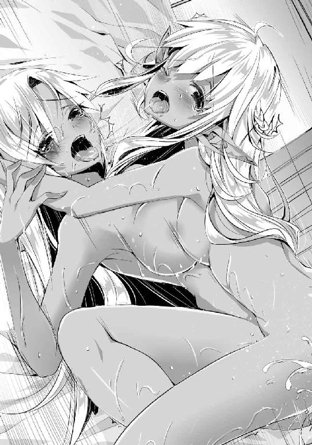
もう少し相手をしてやりたいとは思うが、そろそろ体力の限界に近づいていた俺は、メルヴィナ達を抱きしめた後、ベッドに仰向けに倒れて目を閉じた。
オリンピアへの報告が残ってはいたが、それはまた明日にすることにしよう。
※
翌日目が覚めた俺はまずエヴァーツ侯爵の様子を見てみることにした。
庭に出ると、そこに縄で縛られて暴行の跡が生々しく残っている奴の無残な姿を見つけた。どうやら使用人達に暴行された後、そのまま放置されたらしい。近づく足音で気付いたのか、奴は腫れ上がった顔を上げて俺の顔を見てきた。
「気分はどうだ？」
「......殺ひぇ」
「それはできない。お前には魔帝国の機密情報を流すという大切な役目があるのだ」
口も腫れ上がって上手く喋れないようだ。何とも間抜けな姿となった奴に指輪をはめ、支配を掛けてやる。これで侯爵も俺の操り人形となった。その後は上級治癒で全身の怪我を治してやった。
※
メルヴィナ達を連れてエヴァーツ家の屋敷から戻り、ひとまず準備が終わったことをオリンピアに告げたところ、ちょうど明日の晩に次の作戦の機会があることを聞いた。
「今回の参加者のリストはできているな？」
「は、はい、んっ......これをどうぞ......っ、あんっ」
仕事の褒美を欲しがっていたので、彼女のスカートの中に手を入れて、愛液の滴っている秘部を存分に弄り倒している。マゾの気がある彼女は、少々手荒に扱われたほうが感じるらしいので、彼女への褒美は大体こんな感じだ。
彼女の渡してきたリストを受け取り、参加者を確認する。十人ほどの名前が挙がっているが、有名なところではオルビー辺境伯やケンジット侯爵、それにスターク公爵まで参加している。参加者全員がこの国の有力な貴族であり、また彼ら全員が人間至上主義の派閥に属している。
今回の宴の目的は、彼らの派閥全員を王国側に寝返らせるか洗脳することである。もちろん彼らの地位では生半可な餌では食いついてこないので、術式を使って言うことを聞かせるのが前提だ。
「オリンピア、宴の準備はできているのか？」
「全て、順調でっ、んんぅっ」
「流石だな。よし、もうイっていいぞ」
「はい、い、イキます、あ、あ、あぁあああ！」
今までイクのを必死に堪えていた分だけ、彼女は潮を吹きながら激しく絶頂した。汁がドレスや床を汚し、俺の手も彼女の汁でベトベトになっている。それを彼女のドレスで拭いつつ、リストをしまった。
「明日の夜か、今夜は早めに寝ておくことにするかな」
どうせ明日の宴は遅くまで行われるのだから、それに備えて早く寝ることにした。
次の日、夕方までは宴の準備で屋敷の中が慌ただしかったが、日が落ちる前に全ての準備が整い、後は招待客がやってくるのを待つばかりとなっていた。
俺は今回オリンピアの秘書兼護衛役ということになっている。一応俺のことを知っている奴がいるかもしれないので試しに作ったサングラスを装着しており、名前も偽名を使う。
日が完全に落ち、外が暗闇に包まれた頃、宴の参加者の乗る馬車が次々とやってきた。あまり派手な馬車がないのは、今回の宴はお忍びということになっているからである。貴族の情報網で他の貴族にもグラン家の派閥の集会であると知られていると思うが、中で何をやっているかまでは掴めないだろう。
オリンピアは玄関ホールで彼ら一人ひとりを歓迎していた。俺は近くで待機して、貴族達の護衛がどれほどのものなのかを観察していたが、あまり強そうなのはいなかった。一番強そうに見えた公爵の護衛もアドリアナほどの威圧感を感じない。
ここにやってくるどの貴族も、護衛には皆人間を選んでいる。当然だ、奴らは人間至上主義なので、多種族を護衛に雇うなどもっての外であるからである。しかし実際に護衛に雇うなら人間よりもエルフのほうがいい。人間に比べて能力も高いし、性格も割と律儀で交わした約束は守ろうとするからだ。
ふとオリンピアを見ると、一人の貴族と談笑している。その男が時折俺の顔をちらちらと見てくるのは、このサングラスが珍しいからか。
「オリンピア殿、貴殿の護衛役は顔に妙な物を着けているようだが？」
「あれは視力を補うための魔道具だそうですよ」
「ほう、そんな魔道具もあるのか。どこで手に入れられたのかね？ できれば私もあれが欲しいと思うのだが」
「残念ですが、護衛任務に支障が出る恐れがあると、出所さえも教えるのを断られまして......」
「ふむ、それは仕方ないな。あれを手に入れる機会があったら教えてくれ」
リストで確認した、今オリンピアと話している奴はケンジット侯爵だ。魔道具のコレクターとしても有名だったはずだから、このサングラスにも興味を示しているのだろう。残念ながら、オリンピアの言っている視力補正の効果はないが。
侯爵は執事に促されて会場である大広間へと向かっていった。その後も何人かの貴族がやってきて、最後にスターク公爵が来たことで今回招待した全ての貴族がこの屋敷に集まった。
※
彼らは宴の余興が始まるまで、大広間で食事と談笑を楽しんでいた。傍から見ると全員仲がよさそうに見えるが、水面下では醜い利権争いをしていたり、力関係の逆転を狙っていたりする。
試しに話を聞いていると和やかな会話に思えるだけで、つけ入る隙を窺っているのが分かる。貴族とは自らの欲望に正直な奴らしかいないのだ。
皆の食事がひと段落したのを見て、オリンピアが前に出た。既にサイラスが病に倒れたという情報は貴族中に広まっており、代理の彼女が前に出ることに疑問を持っている奴はいなかった。
「皆様、お待たせしました。今夜は我がグラン家の食事会にお越しいただき、誠にありがとうございます。我らの派閥が今後もさらなる発展をできるよう、この機会に我らの結束がより強固なものとなることを望んでおります」
その後もオリンピアによる長々とした前口上が続き、俺は早くもその話に飽きてしまった。
よくこんな退屈な話を聞いていられるなと感心していると、貴族達の中から一人の老人が進み出た。かなりの高齢だが、その雰囲気や態度からは全く老いを感じさせない。奴がスターク公爵だ。
「オリンピア殿、その辺でいいだろう。サイラス公が倒れたとはいえ、代理でしかない貴女が我々を呼び出したからには、それに見合うだけの話があるということだろうな？」
「その通りです、スターク公爵様。今日皆様をお呼びしたのは、我らの派閥に関する重大な情報と、一つの提案があるからなのです」
「ほう？ なかなかの自信だな。ではその情報とやらを聞かせてもらおうか」
「はい。そこの、例の者達を連れてこい」
近くにいたメイド一人を捕まえて、今回の宴の目玉の一つを取りに行かせる。ほどなくしてメイドがその人物を連れてきた。入ってきた者を見た瞬間、会場中の動きが止まった。銀髪に褐色の肌を持つダークエルフの貴族、その中でも特に有名な人物であるエヴァーツ候爵だ。
奴は喋れないよう口に布を噛まされ、首輪に繋がっている鎖を引っ張られながら入ってきた。目にはこの会場内の貴族達への憎しみが浮かんでいるが、メイドが鎖を引っ張って、半ば引きずられるように前へと連れてこられた。
「いかがでしょう？ ここにいるエヴァーツ候爵は我々の派閥に屈し、これからは彼らの派閥の情報を流すことを誓わせました。ダークエルフの分際で我らの派閥に楯突こうとした当然の結果と言えるでしょうが、これで手打ちとするには少々足りないと思いませんか？」
「......これは驚いた。サイラス殿も知略に長けた人物であったが、貴殿はその上を行く才能があると見える。それで、これ以上何をさせるというのかね？」
「お褒めの言葉、ありがたく頂戴します。そしてスターク公、その質問の答えはすぐにお分かりになられることでしょう」
貴族達は信じられない物を見るような目でオリンピアを見ている。そんな視線を意にも介さず、彼女は余裕のある態度で公爵の言葉に返答している。
「さて皆様、これが今回お伝えしたかった情報です。これで実力主義などと謳っている異種族容認派の勢力も勢いを失わせることができるでしょう。そこで皆様には一つ提案をしたいと思うのですが、その前にまずはこちらをお受け取り下さい」
オリンピアの言葉と共に大広間の扉が再び開き、招待客と同じ数のダークエルフが入ってきた。彼女達は王都の屋敷からこちらに戻しておいた例のダークエルフだ。全員裸の状態で、洗脳のための術式と力を封じるための術式が施された腕輪だけが着けられていた。
「それは私からのささやかな贈り物です。処女ではありませんが、一通りの調教は済ませておりますので、お好きなようにお使い下さい」
招待客の多くはオリンピアの言葉にニヤニヤと下卑た笑いを浮かべ、自分のところに来たダークエルフをねっとりとした視線で眺めている。性的なことを考えているのは一目で分かるが、オリンピアはそんな光景を見ても、微塵も態度を崩してはいなかった。
ただ彼女のサプライズが気に入らなかった人間もいた。スターク公爵を筆頭とする一部の大物貴族達だ。彼らにとってはこの程度の奴隷はいくらでも買うことができるからだろう。
「こんなもので私達の機嫌を取ったつもりなのか？ どうせならばもっと希少価値のある奴隷を用意するべきだったな」
「いえ、公爵様。まだ余興は始まっていませんよ。それは参加賞のようなものです」
「何？」
スターク公爵はオリンピアの言葉に訝しげな表情を向けながらも、一応は話の続きを聞く気になったのか、席に深く座りなおしていた。それを見届けた彼女は再び演技めいた仕草で話し始めた。
「皆様、この哀れなエヴァーツ公が妻と二人の娘を溺愛していることは皆様も周知の事実かと思われます。さて、この男がここにいるということは、残された家族は一体どうなっているのでしょう？」
「まさか......」
「ええ、その答えがこちらです」
オリンピアが再び合図をすると、別のメイドがメルヴィナ、セリア、クレアの三人を連れてきた。彼女達も先ほどのダークエルフ達と同じように全裸で首輪だけを着けている姿だった。
三人とも貴族達からの視線から身を隠すように身体を寄せ合っているが、その恥じらいが逆に貴族達の嗜虐心を刺激していた。そしてスターク公爵もこれは予想外だったようで、目をカッと見開いて三人の姿を凝視していた。
「今宵の余興はエヴァーツ侯爵夫人メルヴィナと、そのご令嬢であるセリア、クレアの三人への公開種付けです。魔帝国でも五指に入る美貌の持ち主を夫の前で寝取ることができるのです。これは愛妻家である侯爵への罰でもあります」
「いや、なるほど。これほどの女を抱けるのであれば文句を言う輩はいまい。お主の先ほどからの態度にも納得がいった。よもやこんな隠し玉を持っていたとはな」
「ご理解いただけて何よりです。さて、本来ならば皆様全員にこの権利を差し上げたいところなのですが、生憎彼女達の身体は合わせて三つしかありません。そこでとある条件と引き換えにこの権利を進呈したいと思っております」
オリンピアの言葉に貴族達がざわめき始めた。一体どんな条件を出されるのかという不安と、是が非でも美人親子を抱いてみたいという期待が半々といったところか。スターク公爵もすぐには決めかねているようで、唸りながらオリンピアと三人を交互に見ていた。
そんな招待客達の姿をしばらく眺め、なかなか話し出さない彼女に招待客達がいい加減に焦れてきたところで彼女は再び大仰な仕草を加えながら話し始めた。
「では条件をお伝え致します。我がグラン家を派閥の頂点と認め、我らの派閥に所属している皆様はグラン家の命に従っていただきたい。それが彼女達を抱く条件です」
条件を聞いた途端、貴族達は先ほどよりも大きくざわつき始めたが、予想の範囲内だ。グラン家は公爵であり、人間至上主義の貴族達の派閥では中心に近い立場でもあるが、スターク公爵やケンジット侯爵も同程度の立場は持っている。つまりオリンピアは彼らにグラン家の下に付けと言っているのに等しい。
このような条件を飲めるような貴族はいないだろう。貴族というのは大物になればなるほど立場と利権を優先する。たとえこの先二度と抱けないだろう相手を見せられたからといって、彼らが自らの立場を捨てるような決断は絶対にしない。
立場の低い貴族はそのような柵に拘らない者もいるが、ここで抱きたいと主張することは間接的に他の大物貴族達を裏切るに等しい行為だ。保身のためにもやはり名乗り出ることはできない。
結果としてメルヴィナ達を抱きたいと名乗り出る者はなく、気まずい雰囲気の中で静かに怒りを滾らせたスターク侯爵が立ち上がった。
「何を言い出すかと思えば......少しばかり手柄を立てたからといって調子に乗るなよ、小娘」
「ではスターク公は私の提示した条件は飲めないと？」
「グラン公の代理だからと大目に見てやったが、ここまで馬鹿にされては仕方ない。少しお灸を据えてやるとしよう」
スターク公の言葉と共に、奴の連れてきていた護衛がいつの間にかオリンピアの後ろに回り、彼女にナイフを繰り出していた。必殺のタイミングだった突きは、常人ならば避けることも防ぐこともできなかっただろう。完全に決まったと考えた奴の顔にニヤリと嘲るような笑みが浮かんだ。
だが彼女の首筋に突き立てられようとしていた刃先が、寸前で甲高い音を立てて弾かれた。当然ながら必殺のタイミングを外された護衛に大きな隙ができたが、そこを見逃す俺ではない。即座に反撃用の恐怖を発動し、護衛を昏倒させた。スターク公爵はこの結果に酷く動揺していた。
「自分がこれといった手柄を立てていないからといって逆恨みで刺客を差し向けるなど、それはスターク公なりの冗談なのでしょうか。はっきり言って面白くありませんよ？」
「くっ、何故あの攻撃が防がれたのだ......？」
「私の護衛のほうが一枚上手だったということです。ではこちらからもお返しを」
オリンピアが合図を出してきたので、俺は彼女に頷き、スターク公爵の下へと歩み寄っていった。年甲斐もなく涙を流し、腰が抜けてしまったのか椅子からずり落ちて必死に逃げようとしている。
「く、来るな！ お前のような下賎な輩が近づいてもよいと思っておるのか！ 私は我らが魔帝国の建国以来、初代皇帝陛下の御世より代々国に尽くしてきたスターク公爵家の当主である......」
「うるさい、長話は嫌いなんだ」
「な、何を......ぎゃあああああああ！ 止めろぉおおおおおお！」
命乞いにもなっていない言葉を垂れ流す公爵の下まで近寄り、威力を弱めた恐怖を発動してやった。普通の威力ならば即座に気絶できているだろうが、威力を弱めたせいでギリギリ気絶できない程度のトラウマや精神的苦痛が奴を襲っている。
そのまま一分ほどしたところでようやく限界が来たのか、奴は口から泡を吹きながら失神した。ついでに失禁もしていたようで、足元に掛かる前に慌てて奴を突き飛ばして離れた。
オリンピアは奴の無様な姿を満足そうに眺めた後、他の貴族達をそのままの表情で見渡した。
「皆様、スターク公には私の条件を飲んでいただけなかったようです。非常に残念に思いますが、他の皆様方もスターク公と同じように私の条件を飲んでいただけないのでしょうか？」
彼女は言葉の割には全く残念に思っていないどころか、まるで獲物を狩るときの猛禽類のような視線で招待客を睨んでいる。次の獲物を品定めしているかのごとき雰囲気に耐えられなくなったのか、今度はケンジット侯爵が前に進み出てきた。
「ま、まあ落ち着いて下さい、オリンピア殿。私は先ほどの条件をそれほど悪いものだとは考えておりませんよ。ただ、あの条件では流石にこちら側の譲歩が多いというか、少し不平等な部分がある気がしてですな......」
「つまり私が譲歩しない限り、先ほどの条件は飲めないと？」
「いえいえいえ、決してそんなことを言っているのではありませんぞ！ 私としては喜んであの条件を飲ませていただこうと思っていましてな。まずはそこを理解いただきたいと......」
奴から見れば自分の子供くらいの年齢の小娘にいいようにされているのは気に食わないだろうが、今のオリンピアに逆らっては何をされるか分からない。それは他の貴族達も同様だったようで、ケンジット侯爵の言葉に同意するよう頷いている。
「つまりグラン家を頂点に置くことには大いに賛成させていただこうということで、そのついでとして我々にも少し恩恵があるほうが他の皆の賛同も得やすいと、そういうことを伝えたいのです」
「なるほど。条件を飲んでくれるのであれば、必ず皆様も優遇させていただきますよ」
「おお、分かっていただけましたかな」
オリンピアが理解を示したことで、貴族達の表情にも安堵の色が見えた。ケンジット侯爵などは矢面に立たされていたことで緊張も人一倍感じていたのだろう。
「では皆様、もう一度確認させていただきますが、グラン家の命には決して逆らわぬこと。これを飲んでいただけますね？」
招待客達はオリンピアの再度の確認にも慌てて頷きながら同意の意を示している。予想よりも逆らった人数が少ない。ここで逆らっても俺に襲われるだけだと判断しているのだろうが、これも計画の範囲内だ。従う人間が多いことに問題はないだろう。
「ありがとうございます。では皆様、こちらも約束を守りたいと思います。この美人親子をどうぞ好きなだけお使いになって下さい」
そう言ってオリンピアはメルヴィナ達を手で示した。途端に先ほどまでの恐怖を忘れたのか、貴族達は鼻の先をだらしなく伸ばして彼女達へと近づいてきた。結果として彼らの連れてきた護衛と離れて無防備な状態となった。
その隙に俺は護衛達に向けて恐怖を放って昏倒させ、同時にダークエルフ達に着けていた腕輪を解除した。今まで大人しく貴族達に付き従っていたダークエルフ達が腕輪を外し、それを貴族達に着けた。この不意打ちに対応できた者はなく、労せずして貴族達を洗脳することができた。あまり時間的猶予がなく適当に立ち上げた今回の計画だが成功してよかった。
何が起こったのか分からない様子でいるメルヴィナ達に近づき、安心させるように肩を抱いてやる。オリンピアは羨ましそうな表情を一瞬だけ見せたが、気付かない振りをしておく。
「さてここにいる貴族達には王国の勝利のために貢献してもらおうか。だが俺はあまり魔帝国の事情には詳しくないのでな。オリンピア、細かい指示はお前のほうでやっておいてくれ」
「分かりました」
俺は国王との面会を取り付けることにして、とりあえず今は倒れた護衛達の処分と貴族達の後始末をすることにしよう。
※
俺は今日の出来事で少し不快な思いをさせてしまったセリアとクレアの頼みで、一晩彼女達に抱きつかれながら眠ることになった。
そして次の日、朝日が昇る前に貴族達は帰っていき、今はメイド達が慌ただしく後片付けを行っているところだ。連絡役として使えるので、貴族達にはダークエルフを連れ帰ってもらうことにした。
スターク公爵については、極度のトラウマで精神崩壊を起こしていたので、仕方なく記憶抽出で昨日の出来事ごとトラウマを抜き取ってやった後、皆と同じように洗脳用の腕輪を着けてやった。
「ご主人様、王国に密使を出そうと思っているのですが、ご主人様はどうされますか？」
「ああ、それなら王国に戻る際にお前も連れていこう。二、三日ほど時間の猶予が取れたらの話だが、どうする？」
「それは是非お願いします。残りの仕事を終わらせてきますので、少々お待ち下さい」
彼女も俺についてくるようだ。まあ転移で王国へ連れていけば何週間掛かるか分からない旅の日程をまるまる無視できるから当然だろう。彼女は昼前に仕事を終わらせたので、彼女と共に俺の屋敷へと転移した。
王国へと戻ってくると、ちょうどティアが俺の部屋を掃除していたところだった。彼女は俺に気付いたが、隣にいる見たこともないオリンピアを警戒して近寄ってこなかった。
「お帰りなさいませ、ご主人様。ところでその女性は一体どこのどなたなのでしょうか？」
「こいつは魔帝国の貴族、グラン公爵家当主代理のオリンピアだ。今は病に倒れているグラン公爵の代理で公爵家を取り仕切っている。今回連れてきたのは王国との密約を結ぶためだ」
「......内通の手引きですか？ これがご主人様の言っておられた計画なのでしょうか？」
「そんなところだ。とりあえず昼食がまだなので、食事の準備を頼む」
「畏まりました、少々お待ち下さい」
部屋を出ていく彼女を見ながら、オリンピアは困惑した表情で俺のことを見ていた。何か気になる点でもあったのだろうか。
「ヤード様、あの者はメイドのようですが、それにしては仲のよさそうな感じを受けました。もしや妾か何かで、既にヤード様のお手つきだったのでしょうか？」
「妾ではないが、似たようなものだ」
説明するのが面倒なので適当なことを言いつつ、話を切り上げる。まだ納得のいっていない彼女を連れて食堂に向かうと、そこにはソフィとナタリアがいた。仲良く談笑していたが、俺の姿を見つけると二人とも笑顔になった。
しかし俺の隣にいるオリンピアの姿に気が付くと、ソフィは不思議そうな表情を浮かべて僅かに首を傾げ、ナタリアは一瞬で不機嫌そうに眉を顰めて近寄ってきた。
「お帰りなさいませヤード様。そちらの方はお客様でしょうか？」
「数日ぶりだけど寂しかったわ。それで、また女を捕まえてきたのかしら？」
王国語で話しかける二人だが、オリンピアには言葉が通じないので、苦笑しながらこちらを見てきた。翻訳をオリンピアに掛けてやると、王国語が自分達の言葉に変換されて聞こえてきたので少し驚いていた。
「初めまして、私は魔帝国の貴族、グラン公爵の娘、オリンピア・リア・グラン・ダーロです。今は倒れた父の代わりに当主代理を務めています。以後お見知りおきを」
「ヤード、何で敵国の貴族なんか連れてきたのよ。色仕掛けにでも引っかかっちゃったの？」
「違う、どちらかと言えば俺が彼女を引っかけたのだ」
「相変わらず手が早いわね。その浮気性は直らないのかしら？」
ナタリアはオリンピアそっちのけで俺を詰ってきた。まあ彼女を手駒にしただけでなく実際に手を出しているので、言い訳のしようもない。メルヴィナ達のことを伝えればさらに怒るだろうなと考えつつ、彼女の言葉を聞き流していた。
一方ソフィは魔帝国の貴族が目の前にいるというのに、いつもと変わらない様子で彼女に話しかけていた。彼女は個人的な感情と政治的な話は分けて考えるタイプなのだろう。
「まあ、上級貴族なのですか。私はそこにいるウェルナー伯爵の妻で、王国の第一王女、ソフィア・ル・アンリエント・ウェルナーと申します。魔帝国の方とお話しするのは初めてですので、失礼な振舞いがあるかもしれませんが、ご容赦下さいね」
「気品のある方だとは思いましたが、王女殿下でしたか。これは失礼を致しました」
膝をついて魔帝国式の礼をするオリンピアに、まあまあと言いながら彼女に割と砕けた様子で話しかけているソフィ。二人とも格で言えば大差ないが、一応はソフィのほうが上なのか。国が違うので何とも言えないが、二人の態度を見る限りではそう扱うのが正解なのだろう。
「こちらから伺おうと思っていましたが、王女殿下がいるのならば話が早い。実はこの国の国王陛下に密使を遣わそうとしていたところなのですが、王女殿下から口添えしていただけませんか？」
「ええと......」
「何か訳ありみたいだけど、そういう話は食事の後にしましょうよ。折角ヤードが帰ってきたんだから、まずは堅苦しい話は抜きにしてヤードと話したいわ。ソフィもそう思ってるでしょ？」
「ええと、まあ......」
「そうか、それではまず食事にしよう。仕事の話はその後でもできるからな」
ナタリアが助け舟を出してくれたので、ありがたく話に乗って会話を一旦終わらせた。少ししてメイドが次々と食事を運んできたので、全員席について昼食を取ることにした。とりあえず俺がいない間の屋敷について色々話を聞いたが、特にこれといった問題は出ていないようで安心した。
「そういえば、ヤード様とオリンピア様は砦で出会ったのでしょうか？」
「ええ、そうですね。砦が落とされたときは死を覚悟しましたが、ヤード様の温情で助けていただきまして、本当にありがたく思っています」
「そうですか、ですがどうしてオリンピア様は王国側に付くことを選ばれたのでしょうか？ あまり言いたくはありませんが、砦を落としたとはいえまだ王国は優勢とは言いがたい状況です。こちらに付く利点が思いつかないのですが」
「今の皇帝は種族を問わない実力主義を掲げていますが、我がグラン家は代々人間を至上とし、他種族を排してきた家柄ですので、皇帝とはあまり関係がよくありません。現状維持で勢力を失うくらいならば王国側に寝返ったほうがまだ希望が持てるのですよ」
「ふーん、代々他種族を排除って、あんまり柔軟性はなさそうな家ね」
「ナタリアさん、そういうことを口に出しては失礼ですよ」
「ええ、全くその通りですね。王女殿下もお気遣いいただきありがとうございます」
ナタリアは話自体にあまり興味がないのか、堂々と失礼な台詞を放っているし、ソフィもあまりフォローになっていないが、オリンピアはそんな二人の言葉にも社交辞令で感謝している。恐ろしいのはこの場の人間全員に全く悪意がなく、和やかな雰囲気だということだろう。
そんな雰囲気のままで食事が終わると、オリンピアは詳しい話をするためにソフィと共に食堂を出ていった。俺もついていこうかと考えたが、久しぶりの屋敷なので先に風呂に入ろうと思い、ナタリアと別れて風呂へと向かった。
※
脱衣所に入ると、そこにはティアがいた。手には掃除用具を持っているので、ちょうど風呂の清掃をしようとしていたところだったということが分かる。
「今から入られるのですか？ それでしたら掃除はまた後にしますが」
「そうだな......」
そういえば最近はあまりティアと話もできていない。彼女には他の仕事もあるのかもしれないが、折角の機会だ。彼女も一緒に風呂に入れることにしよう。
「ティア、一緒に入るか」
「え？」
俺の発言が予想外だったのか、きょとんとした顔でこちらを見てきた。言われたことを確認しようとしていたが、俺が自分の服を脱ぎ始めたので、どうすればいいのか分からないようだ。脱衣所を出ようとしたり、止めたりを繰り返している。
「どうした？ 後の用事があるのかもしれないが気にするな。早く服を脱いでくれ」
「は、はい」
ティアは急いで服を脱ぎ始めた。素晴らしいスタイルを維持しているのが分かる。俺に見られながらの脱衣を恥ずかしがって顔を赤くしてはいるが、動きを止めたり隠したりするようなことはしていないので、構わず存分に視姦させてもらった。
彼女と一緒に風呂場へと入ると、まずは身体を洗ってから湯船に浸かる。彼女も俺の隣へ座ったので、抱き寄せて口付けをしてやった。お湯に浸かった彼女の白い肌に赤みが差してきて、何とも艶っぽい雰囲気を漂わせている。試しに胸を揉んでやると、ねだるような視線を向けてきた。
「ご主人様、あの」
「ああ、しばらく構ってやれなかったからな。今なら誰も見ていないし、存分に甘えていいぞ」
この後風呂の清掃をするようだし、少しぐらい湯を汚してもいいだろう。俺は彼女の身体を引き寄せて、座っている俺の上に来るように促した。彼女も期待していたようで、俺の上に跨がって膣穴に俺の肉棒を咥え込んだ。既に濡れていた膣内は、湯の温度よりも高いような気がした。
「ああっ！ ご主人様の物が入ってきますぅ！」
「あまり声を出すと誰かに聞かれるかもしれないぞ？」
「は、はい！ ん、んんぅ」
聞かれるかもしれないと言った途端にティアの締め付けが強くなる。以前フェアリスの傍でやったときに見られる快感を覚えてしまったのだろうか。彼女の場合は俺が無理やりやったせいなのだが、あまり変な性癖を覚えるのは止めて欲しい。
それにしても風呂の中でするのは、ベッドでするのとはまた違った感覚だ。お湯の熱さでお互いの身体も熱く火照っており、まるで全身を包まれているかのような気持ちよさがある。それは彼女も同じようで、俺をぎゅっと抱きしめ放さなかった。
もうそろそろイキそうかなと感じたとき、脱衣所のほうから声がして扉が開いた。入ってきたのはソフィとオリンピアだった。二人での話し合いはいい方向でまとまったのだろう、二人とも先ほどよりも仲がよさそうに見える。
二人とも先客がいるとは思っていなかったようで、抱き合ったままの俺達を見て固まっている。
「どうした、二人とも。そんなところで固まって」
「あ、そうですね。さあ、オリンピア様、ここがお話しした風呂ですよ」
「あ、ああ、ここが風呂なのですか......想像以上ですね」
一瞬離れようかと思ったが、よく考えると俺とティアの仲はソフィも知るところだ。別段気に病むようなことをしているわけではないので堂々としておいた。ティアはソフィに見られたのを気にしたのか、慌てて俺の上から退こうとしていたので止めておいた。
「そうだ、ソフィ。一緒に入らないか？」
「ええ、是非」
「ヤード様、私もご一緒してよろしいですか？」
ソフィは俺の提案に快く乗ってきた。オリンピアも参加したいようなので、一緒に入れてやることにした。ちなみにオリンピアとの関係はまだこの屋敷の人間には教えていないので、王国にいる間は俺のことを名前で呼ぶように指示しておいた。
「それにしても、ヤード様、やっぱりオリンピア様にも手を付けていらしたのですね。別に私以外とするなとは言いませんが、手を付ける前に一言ぐらい声を掛けてくれませんと、こちらもどなたがお手つきなのか分からなくなりますので」
だがオリンピアは俺との関係をソフィに伝えてしまっていた。口では少し咎めるような口調となってはいるが、幸いにもそれほど怒っているわけではなさそうなので助かった。
「ああ、済まないな。まだ本番をしたわけではないが、今度からはそうさせてもらう」
二人がこちらに来たので、ティアを上に乗せたまま二人を抱き寄せた。こうやって美女を三人侍らしていると、何とも言えぬ優越感がこみ上げてくる。ソフィに口付けをし、オリンピアの胸を揉む。こうしているだけでもかなり精神的な興奮が得られるな。
「あの、ご主人様......やはり私はいないほうが......」
「大丈夫ですよ、ティアさん。貴女とヤード様の仲は十分に分かっていますから」
ティアは身分が遥か上の二人に囲まれて肩身の狭い思いをしているが、ソフィはティアと俺がしていることに特に文句はないようだ。夫が他の女も愛しているという事実を笑顔で受け流す辺り、彼女も相当に理解があるようだ。伊達に王族の生まれではない。
先ほどは絶頂する寸前で止められていたので、すぐに限界が近づいてきた。ティアも同じようで、自分からも激しく腰を動かして快感を得ようとしている。
「ティア、そろそろ出すぞ！」
「私もっ、も、もうイってしまいます！」
ティアの中に精液を注ぎこむと同時に、彼女も絶頂した。絶頂の余韻に浸っている俺にソフィがまた口付けをしてきたので、そのまま彼女と舌を絡ませる。
ティアが上から退くと、今度は彼女のようだ。出したばかりの肉棒を手で優しく包み込み、硬くなるように刺激している。まだまだ満足はしていなそうだ。そちらがその気ならば、とことん付き合ってやることにしよう。
「あ、もう硬くなってきました」
勃起した肉棒を嬉しそうに指で突くと、俺の上に跨がって同じように腰を振り始めた。ソフィとするのも久しぶりだ。彼女は一番子供を欲しがっているので、もう少し構ってやらないといけないな。
彼女は俺に抱きつき、上下運動だけでなく腰を回すように動かして俺の物を刺激してくる。バチャバチャと水が撥ねるのも気にせずに俺の物を貪欲に欲しているようだ。
ただ彼女ばかりに構っては他の二人が手持ち無沙汰だろうと思い、ティアとオリンピアの秘部に手を伸ばし、ティアは割れ目に指を入れてオリンピアは陰核を摘んで、それぞれ弄り回してやった。
二人とも快感を否定するようなことはしないので、俺の腕を掴んでせがむように弄っている場所に押し付けようとしてくる。特にティアが先ほどの中出しだけでは物足りなかったのか、中指と人差し指を根元まで飲み込んでいる。
もう少し激しく弄ってやろうとティアのほうを向こうとしたところで、ソフィが顔を押さえて彼女のほうに向き直させられた。
「ヤード様、私も少しは他の女性に嫉妬をします。ティアさん達も可愛がりたいのは分かりますが、せめて私を抱かれているときくらいは私だけを見て下さい」
少し拗ねたような表情で俺の顔を見つめてくるソフィは、いつもの全てを許容できる超然的な雰囲気ではなく、他の女性とあまり変わらない、浮気性の恋人を諭しているような雰囲気だ。だがそれもいつもの彼女のとは違った魅力を感じて、可愛らしいと思う。
「済まなかったな、ソフィ。今度からは気を付けるようにする」
文句を言う際に顔が近づいていたのでそのまま口付けをしてやると、途端に目じりを下げて嬉しそうな表情を浮かべた後、彼女のほうから舌を入れてきた。余裕で平均以上はある大きな胸も俺の身体に押し付けられて潰れ、その柔らかい弾力を伝えていた。
ずっと風呂の中でやっていたせいで逆上せてきたのか、先ほどから視界が少しずつ揺れ始めている。あまり長いこと入っていられないと俺も気合を入れてソフィの膣穴を突き上げ、彼女に快感を与えてやった。
「あ、そんなに激しくしてはっ！ かっ、感じてしまいます、うぅんんっ！」
「そうか、それでは我慢などせずイッてしまえ！」
「あ、あぁああっ！ イクときは、ヤード様も、い、一緒にぃ！」
腰を使って彼女を深く突き上げてやると、彼女の胸が大きく跳ねて俺の身体に当たっているのが見えた。巨乳だと激しい動きをしているときの躍動感が凄い。余裕のなくなった彼女の表情と合わせて、視覚的にも俺の興奮を限りなく煽ってくる。もう我慢の限界だ。
「ソフィ、出すぞ！ お前も一緒にイけ！」
「はい、イキます！ あ、い、イク、イッちゃうぅうううう！」
俺の背中に腕を回したまま、背筋を思い切り反らせて絶頂した彼女の中に、俺の精液をたっぷりと注ぎこんでやる。絶頂の余韻でまだビクビクと震えている膣の気持ちよさに、残りの精液全てを搾り取られるような気さえした。
「はぁ......ありがとうございました」
俺にしな垂れかかったまま、肩に頭を乗せてそのまましばらく抱き合っていたが、視界の揺れが限界近くにまで達していたので、これ以上は無理と判断して湯舟から出た。少し不満そうな顔をしているティアとオリンピアだが、彼女達にこれ以上付き合っていてはこちらの身が持たない。
ティアもお湯に浸かりながらやっていたせいで、体温が結構上がってしまっているので、二人の恨めしそうな視線を受けつつ、ティアを抱いて風呂を出た。
風呂から上がった後、密使の件についてどうなったのかを聞くと、まずソフィが面会を希望する旨の手紙を届けることになっていた。ソフィとしてはいくら仲がよくなったとはいえ、敵国の人間を城の中に入れることは躊躇われたようだ。それでもオリンピアにとっては十分な申し出だったようで、予想よりも早くことが進んでいることを喜んでいた。
※
ソフィが城へと手紙を持っていったところ、その場で国王から面会の許可を伝えられた。かなり急に決めてしまっているが、もしかして国王は意外と暇なのだろうか。ともあれ交渉の場をすぐに用意してくれたということは、秘密裏にだが同盟が結ばれるのは確実だろう。
レシアーナと同盟を結んだとはいえ、今の状態ではまだ王国の戦力は魔帝国の戦力の三、四割程度しかない。今までは奇跡的に要塞付近で足止めできていたようだが、戦前よりもさらに両国間の戦力差は開く一方らしい。次に大きな戦いが起これば、王国の敗北は必至だろう。
だが今回オリンピアが寝返らせると確約した貴族達の戦力を考慮すると、王国と魔帝国の戦力差は六対四程度になり、王国側が戦力的に逆転して有利になる可能性がある。寝返らせた貴族は腑抜けと色ボケばかりだったが、あれでもかなりの財力と武力を抱えている奴らだったのだ。
当然この好条件を王国が断るはずもない。オリンピアの面会がすぐに決まったのはそういう事情があるからだろう。そんなわけで密約を結ぶのはいいのだが、何故かオリンピアと国王の密談に俺も呼ばれた。仕方がないので城まで出向き、会議室へと案内された。
今回は密約という建前なので他の大臣の姿はなく、国王とオリンピア、それに俺の三人だけしかいない。当然監視や盗聴を防ぐために結界を張って、外部との連絡も完全に遮断している。
「ウェルナー伯爵。急に呼び出して済まなかったな」
「気にするな。それより何故私が呼ばれたのだろうか？ 私は魔帝国側の密使の仲介をしただけで、密約にそこまで深く関わるつもりはなかったのだが」
「うむ、そなたを呼んだのは他でもない、契約の魔法を使って欲しいのだ。契約の魔法はかなり高位の魔法使いでないと使うことができんが、その術式を使える実力のある魔法使いはちょうど全員王都を出てしまっていてな。あと数日は戻らん」
「まあそういうことなら仕方ない」
「うむ、では伯爵の同意も得られたところで、早速始めるとしよう」
「ええ、本日はよろしくお願い致します」
国王とオリンピアは真面目な表情で話し合いを始めた。緊張感のある室内には二人の話し合いの声がよく響いているが、俺は話し合いに参加する気はなかったので、二人の会話を上の空で聞いていた。一応結界に綻びが出ないかどうかだけは気にしていたが、全く壊れる気配もない。これならば誰かに監視されていたということは起こらないだろう。
長い間話し合っていた二人だが、俺の意識が落ちかけていたところで結論がまとまったようだ。密約の内容はあらかじめオリンピア側から提案してあったので、白紙の状態から話し合うほど長くはならなかったようだ。
「さて、伯爵よ。契約の魔法を使ってもらいたいが、準備はできているか？」
「ああ、この紙に契約の内容と二人の名前を書いてくれ。そうすれば契約が履行できない状態、大体はどちらかが死ぬまで、決して契約に背くような行動や言動が取れなくなる」
「ああ、それで結構。ではそなたに契約の内容を書き写すのを任せてもよいか？ 魔道具は魔法使いが一番扱いに慣れておるだろうからな」
「私が内容を見てしまっても不都合はないか？」
「そなたのことは実の息子のように信頼しておる。仮に不都合が起きたとしても、それは全て私の人を見る目がなかっただけということになるな」
「了解した」
契約用の紙を取り出し、今回の密約を書き込んでいく。最後に二人にサインを書かせて術式を発動した。特に矛盾も起こっていないので、これで問題ない。
「これでいいだろう。試しに密約の内容を叫んでみるか？」
「それは私がやりましょう」
オリンピアは大きく息を吸い込んで叫ぼうとしたが、その直前で彼女の動きが止まった。その後も何度か叫ぼうとしたり、文字に起こそうとしたりしていたが、全て失敗に終わっていた。
「......無理みたいですね。契約魔術は問題なく効果を発揮しているということですね」
「まあこれならば万が一にも裏切られる心配はなくなった。伯爵よ、わざわざ済まなかったな」
二人とも納得したようなので、これで俺の仕事は終わりだ。後は春になって戦争が再開したら、この密約通りに動いてくれることだろう。まず戦争に勝利して、その後に裏切った貴族を殺し、魔帝国の全域を押さえれば、ようやく魔帝国を滅ぼすことができるというわけだ。
魔帝国との戦争が終われば勇者としての役目もなくなる。余生は研究開発で平穏に暮らすことができるだろう。その未来まであと少しだ。
国王とオリンピアとの秘密会談が終わってからまたしばらくの時が流れ、そろそろ冬が終わる時期になった。オリンピアは国に戻って魔帝国の情報を流しつつ、エヴァーツ家の派閥の内部崩壊も画策している。だが既に魔帝国軍は準備を整え、近々王国との戦争を再開するそうだ。その情報はソフィを通じて国王にも流されている。
王国側も来るべき戦に備え、物資の準備や兵数の確保を早い段階から始めることができたので、準備は滞りなく終わっていた。両者とも後は戦いが始まるのを待つだけとなった。そして緊迫した空気の中、遂に魔帝国軍が動き出したという情報が入ってきた。
奴らはまずイストリア砦奪還に向けて、前回の要塞戦を上回る一万人という大軍勢を出しているらしい。現在砦には五百人ほどの兵士が詰めているが、戦力差は絶望的だ。砦の堅牢さを考慮したとしても、まず守りきることは不可能だ。
ただあそこにはエルがいる。最近は術式の腕も上がり、戦術級術式もミスなく撃てるほどにまで成長していた。俺ですら彼女を倒すのは骨が折れるので、魔帝国に勝機はほぼ訪れないだろう。
だが王国は砦を出て平野で戦線を張る予定のようだ。兵数で劣っている王国が平野で戦いを挑むのは普通ありえないが、戦闘できる範囲が狭い場所では魔帝国側の魔物がかなりの猛威を振るってしまう。それならば一斉放火で仕留められる地形のほうが無難だという考えなのだろう。
確かにあちらが竜を投入してくるなら、視界が開けて集団戦のしやすい平野のほうが都合がいい。
勇者のうちフェアリスを除く三人は最前線に立たされることになっている。フェアリスは今回も救護班の担当だ。今回俺は魔術師とレシアーナのエルフの混成部隊を率いて戦わされることになった。正直なところ、そいつらの実力に合わせた指揮ができるとは思えないが、一人でも大抵の状況は何とかできるので大丈夫だろう。そもそも俺が参加している時点でこの戦いはこちらの勝利に決まっているのだからな。
ただ一つ気になるのは、エルが王都に帰ってこないことだ。エルは冬が終わる前に帰ってくる的な話を聞いた気がするが、未だに砦にいるらしい。定時連絡を欠かすことはないし、未だに砦勤めの愚痴を言っているのにもかかわらず、だ。
（エル、聞こえるか？）
（......マスターですか。何ですか？）
試しにエルに念話を送ると、彼女は特に何の問題もなく念話に出てきたが、エルの持つ魔道具の魔力反応が感じられなかった。魔導障壁の生成が上達したときからエルの魔道具反応は捕らえにくくなっていたが、近頃は全く反応を感知できていない。実力が伸びているのは嬉しいが、少し不安でもある。
（砦は今どういった状況になっているのだ？）
（少し前にもお伝えしましたが、以前と変わらないですよ。ただ王国軍がもう少し先の平野で魔帝国軍を迎え撃つために陣地を作っていますが）
エルの報告は現在の状況と合っている。確かに砦にはいるようだ。居場所が分からないことは今までなかったので、こういった確認をしないと落ち着かなくなっているようだ。
（そろそろ王都に戻ってこないか？）
（ええ、まあいずれは。今は他にやることがあるので。早くマスターにお会いしたいですね）
（そうか、では早いところその用事を終わらせて戻ってくるといい。近頃は情勢も不安定だからな）
最近の彼女の様子はどこか不審な感じがするとは伝えられないので、無難な言葉で屋敷への帰還を促しておく。以前の彼女なら仕事を放り出してでも戻ってきたような気はするが、一応王国からの命令で砦に詰めているので、無理に帰らせるわけにもいかないのがもどかしいな。
エルとの通信を切ったとき、ちょうど国王からの知らせが届いた。魔帝国軍が進軍しているので、こちらも直ちに出撃しろとのことらしい。現在国境近くに軍を待機させているので、出撃と言っても行くのは王都に残っている俺達勇者達四人だけだ。サガミやフェアリスに見られるのは面倒だが、転移で飛んだほうが早い。
数日程度は時間を短縮できるので、のんびりティアと出立の準備をしていると、ソフィとナタリアがやってきた。出発前の挨拶に来たようだ。
「ヤード様、今回の戦いは大丈夫なのでしょうか......？」
「大丈夫だ、勝算は大いにある。他の勇者達の力もあることだし、負けることはありえないだろう」
「そうですか......危ないときは逃げ出してもいいですから、必ず帰ってきて下さいね」
「それじゃ駄目よ、ソフィ。いい、ヤード、ちゃんと勝って帰ってきなさいよ。負けて逃げ帰ってきたら絶対に許さないからね？」
「ああ、安心しろ。帰ってくるときは勝利の知らせを持ってくることを誓おう」
なるべく普段通りの態度を見せているが、それでも彼女達は心配してしまうのだろう。二人が心配してくれるのは素直にありがたいと思う。ただ俺は彼女達が思っているほど気負っているわけではないので、二人に心配をさせているのは申し訳ない気がする。
二人を抱きしめてから、準備を手伝ってくれたティアも抱きしめてやった。皆心配で顔が曇っているのが残念だ。帰ってくるときは笑顔で出迎えてくれることを願おう。
※
屋敷を出て城に向かうと、既に他の三人は集まっていた。こいつらは真面目なのでいつも行動が早い。勇者達が集まる際はいつも俺が最後のような気がする。
「遅かったな、ヤード殿」
「済まないな。皆もう準備はできているのか？」
「ああ、ヤード殿が来るのを待っていたのだ。では早速出発しよう」
「国王に挨拶などはしなくてもいいのか？」
「いや、その必要はない。構わずに出発してくれとのことだ」
既にオリンピア達も動き出しているそうだし、そのことで何か問題が起きているのかもしれない。ただオリンピアは何も言ってこないので、計画に支障は出ていないと思うが。
「今から向かえば両軍が衝突する前には到着できるだろう」
「そのことだが、現地まで転移できる術式がある。あまり時間がないならそれで行くぞ」
「......そんなものがあるならば、以前から使っていればよかったのではないか？」
「色々と面倒な制約があるのだ。私がいいと言うまで全員目を瞑っていろ」
全員が目を閉じたのを確認し、急いで魔法陣を描き上げ、起動する。上級集団転移が発動し、次の瞬間には砦のすぐ近くに転移していた。
「もういいぞ」
俺の言葉に目を開けた三人は、見たことのない場所にいることに驚きの表情を浮かべていた。フェアリスは以前にも転移を経験したことがあったので、すぐにここが目的地の近くだと察したようだが、アレクとサガミはしばらくの間、周りを呆然とした表情で見回していた。
「ここはイストリア砦の近くだ。ここから前線までは馬を使えば一日も掛からないだろう」
「いや、ヤード殿にはいつも驚かされるな。まさかこんな魔法まで使えたとは」
アレクは俺の肩を叩いて賞賛してくるが、男に褒められても嬉しくはないので返事はしない。
「転移か、これは私にも使えるようになるだろうか？」
「無理だな。今のサガミ殿の魔力量では全く足りていない」
「そうか、仕方ないな」
サガミはやはりこの術式に興味を示してきたが、断っておいた。諜報関係の人間にこの術式を教えるなど、後で何が起こるか分かったものではない。
砦で馬を借りて数時間進むと、前線の拠点がある場所にまでたどり着くことができた。予定よりも一週間以上早く着いたので、まだ魔帝国軍はここまでやってきてはいないようだ。
アレクとサガミは現地の指揮官達のところへ行ったので、俺は担当の部隊でも探すことにした。混成部隊ということなので、王国の魔術師とエルフ達にそれぞれ別に代表がいるはずだ。王国側の代表とは少し面識があったが、エルフの代表とはまだ会ったことがないので、まずはそいつに会わないと話が始まらない。
混成部隊のいる場所を聞きそちらへ向かうと、王国の魔術師用ローブを着た連中とエルフ達の集まっている集団を発見した。多分あれで合っているだろうと思い、彼らに近づいていったところ、エルフ側にも見知った顔がいることに気付いた。
「あら、ヤード様。お久しぶりです」
そこには周りのエルフよりも圧倒的な美しさを誇っているハイエルフがいた。どう見てもエレインだ。彼女は外出用なのか以前よりも少し動きやすそうなローブを着ている。見た目は少々野暮ったいが、彼女の完璧な美しさを見ると気にならない程度のものだ。
今回の作戦にレシアーナのエルフも参加すると聞いていたとはいえ、その代表が直々にお出ましになるとは思ってもいなかった。
「久しぶりだな。しかしどうしてエレイン殿がわざわざこちらに派遣されているのだ？ 代表が森から出ていても大丈夫なのだろうか？」
「ふふ、私の我が儘です。レシアーナにばかりいては退屈ですし、ヤード様もこちらの戦いに参加されると聞いていましたから。それに私はハイエルフの中で一番年上だから一応代表となっているだけで、正式にハイエルフの代表を決めたことは一度もありませんからね」
悪戯が成功した子供のようにくすくすと笑っている。その表情にも気品が満ちているが、言っていることは滅茶苦茶だ。仮にも王国と契約を交わした者にあるまじき言動だが、レシアーナに長年引きこもっていた反動なのだろう。
「今回は無理を言ってヤード様の部隊に入れていただきました。お弟子のエルマイアさんでさえあれほど素晴らしい魔法をお使いになっていたのですから、その師である貴方がどんな魔法を見せてくれるのか楽しみにしています」
「私は基本的に戦闘には参加しないのだがな」
まあ彼女が来てくれたのはありがたい。王国の魔術師全員を合わせたよりも役に立ちそうなほどに実力のある彼女がいるならば、多少派手な行動をしても俺が悪目立ちすることはないだろう。
ふと彼女が俺の顔を見つめていることに気が付いた。何やら含みのある笑みを浮かべている。
「ヤード様、ここでは人目があるので自粛させていただきますが、またいずれ二人きりになる機会が訪れることを祈っていますよ」
「盛るのは構わないが、せめてこの戦いが終わってからにしてくれよ？」
「ええ、そのくらいの常識は備えているつもりですよ。ですが貴方が私にしてくれたことは、一生掛かっても返せないほどに感謝しているのですから、そのことは覚えておいて下さいね？」
服を僅かに指で引っ張り、俺が核を埋め込んでやった場所を見せてきた。彼女にしてみれば嬉しさを表現してみた程度のことなのだろうが、傍から見ると彼女が俺に胸元を見せるという性的な挑発をしているようにしか見えず、周りにいた人間のほとんどがそう感じたのか、一斉に俺へ視線が集まってきた。
「エレイン殿、今しがた忠告をしたばかりなのだが」
「あら、申し訳ありません。そのようなつもりではなかったのです。どうかお許しを」
口では謝っているが、エレインは絶対にそんなことは思っていないだろう。悪戯が成功した子供のような笑みを浮かべている彼女にしてやられた形となった。レシアーナを訪れたとき以来、一切会っていないのを根に持たれているのだろうか。
「まあいい、それよりも来るべき戦いに向けた話をしようか」
「ええ、そうですね」
彼女と少し話をした後、魔術師部隊の隊長を呼んで簡単に方針の説明をした。こいつらがまともに魔法を撃てるとは思っていないので、エルフ達には防御術式を、魔術師達には攻撃術式を担当してもらい、攻撃担当のリーダーを元隊長の男に、防御担当のリーダーをエレインに任せた。
俺が戦闘で細かい指示などできるわけがないので、戦闘中は基本的にリーダーの命令を聞き、俺はリーダーに大まかな指示を飛ばすだけということにした。
※
魔帝国軍が到着するまでは部隊指揮の訓練と運動ばかりしていた。他にやることがなかったのも事実だが、実験しようにも設備が揃っていないので不可能だったからだ。早く来ないかと思い続けて何日か経った後、魔帝国軍の姿が確認された。
遠目からでも分かる巨大な人型生物を何体も引き連れており、空には結構な数のドラゴンが飛んでいる。他にも以前見た黒狼やよく分からない四足の魔獣など報告通りの戦力だったが、以前見たときよりも遥かに多数の魔物が群れをなしている様は、王国兵達に確かな恐怖を与えていた。
巨人やドラゴンと人間では絶望的なまでに体格差がある。奴らが腕を一振りするだけで多数の兵士が命を落とすことになるし、こちらの剣や弓はその厚く硬い皮膚で簡単に弾かれてしまうだろう。
このままでは一般兵達がまともに戦えないので、俺の率いる魔術師部隊は先にあの巨人とドラゴンを潰すことにした。正直なところエレインだけでどうにかできそうだが、彼女に任せきりでは王国が大きな借りを作ることになるし、魔術師達の面子も丸潰れなので、魔術師達にもそれなりに頑張ってもらう。
これだけの戦力差ならばすぐに攻めてくるだろうと思っていたのだが、魔帝国側は思ったよりも慎重だったらしく、しばらく睨み合ったまま時間が過ぎていった。
その間偵察部隊が現れた。おそらくは大型生物の脅威となる兵器や魔術師達の居場所を探っていたのだろうが、こちらもそう簡単に情報を知られるわけにはいかない。幸い魔術師達の探知に引っかかってしまう程度の実力しかなかったので、こちらの位置を知られる前に潰しておいた。
何度かそうした偵察部隊を潰しているうちに敵が焦れたのか、遂に魔帝国側が動き始めた。どうやらまず魔物部隊だけを突撃させ、混戦状態を作り出す作戦のようだ。確かに周りに味方がいては、大型生物に有効な大規模術式が撃ちにくい。
巨人とドラゴンの大軍が襲ってくる様はなかなかに威圧感があるが、王国の陣地までは結構な距離が開いている。こちらへと向かってくる速度がかなり速いのは、大規模術式を放たれる前にこちらに接触しようという考えなのだろうが、そんな作戦ではこちらの思う壺だ。
「エレイン殿、防御部隊は恐怖耐性・汎用防御結界・対物理防御結界の準備を」
「はい、今すぐに。対象は王国兵全員でいいのですね？」
「ああ、そうだ」
俺の言葉を聞いてエレインは即座に術式を発動した。王国の兵士全員を対象にしているので一人に掛かる効果は小さいものだが、襲い来る大型生物達を前にして軽い混乱状態にあった兵士達も動揺が収まったようだ。
「攻撃部隊はまずドラゴンを狙え。物理的な術式は弾かれてしまうだろう。冷気や電撃のような鱗の防御をある程度貫通できる術式を使い、それが無理な者は翼膜を狙え」
「了解しました！」
俺の指示で一斉に詠唱を始め、ドラゴンの群れに向かって次々と術式が放たれた。ただ多少の攻撃が通ったところで、空を翔るドラゴンの速度ではこちらに到達されてしまうのもすぐだろう。
俺は部隊へと指示を出しながら魔法陣を描き、起動した。第四種戦術級術式、遅滞が発動し、凄まじい速さでこちらへと向かっていたドラゴン達が見えない壁にぶつかったかのように止まり、まるでカタツムリが這っているかのような、進んでいるのか分からないほどにまで速度が落ちた。
圧倒的な速度で飛んでいたドラゴンですらそうなったのだ、地を駆ける魔獣達は完全に動きが止まったかのようにその場で静止している。
魔帝国軍は魔物達が突然動きを止めたことに動揺しているようだ。敵の魔術師達は術式による攻撃だと即座に分かったようで、解呪を試みてみたり、術者を倒そうと魔物達の間を縫って攻撃術式を放ってみたりしているようだが、何故か初級の術式が多く、こちらの結界を突き破ることができずに霧散している。
「今のうちにドラゴンを落とせ。魔獣は私が足止めしておく」
「了解しました！」
王国の魔術師の放つ術式の一発や二発程度では全く効果がなかったが、身動きが取れず回避すらままならないドラゴン達は術式を大量に受けて撃墜され、どんどんとその数を減らしていった。
本来ならば高位の魔術師を数十人集めてやっと討伐できるような魔物が次々とやられているのを見て、王国兵の士気も上がっている。逆に魔帝国軍の間には得体の知れない術式を見て動揺が広がっており、術式を放ってくる弓兵や魔術師達も上手く連携が取れていないようだ。
「魔術師部隊が押さえてくれている今が好機だ！」
指揮官が弓兵部隊に指示を出し、動かないドラゴンや巨人に向かって次々と矢を放っていく。ドラゴンには硬い鱗のおかげで弓は全く効いていないが、巨人はドラゴンほど肌が硬くないので、致命傷とまではいかないが、少しずつ矢が刺さり始めている。
「身体を狙うな、弾かれてしまうぞ！ 目だ、目を狙え！」
指揮官が大声で指示を出しているのを見ながら魔帝国のほうを確認すると、相手は温存していた残りの魔物を全て放ってきた。ほとんどは遅滞の効果範囲に引っかかり動きを止めていたが、僅かに効果範囲を抜けて王国軍へと近づいてくる個体もいた。
こちらの魔術師部隊は大型生物の討伐に必死で、俺自身は術式の制御で手一杯なので、ここは残りの王国兵とアレク達に頑張ってもらうことにする。
こちらまで到達した魔物達と前衛の部隊とで激しい戦いが始まった。本来ならば一撃で即死しそうな魔物達の攻撃もエレインの防御術式のおかげで致命傷を避けられ、互角以上の戦いができていた。そうなれば流石に数で勝る王国兵達が負傷者を出しながらも少しずつ魔物を討ち取っていった。
この頃にはドラゴンや巨人はだいぶその数を減らしており、ここにきてようやく絶対的な不利を悟った魔帝国の指揮官が撤退を始めた。結局こちらの負傷者はそれなりの数になったが、敵の虎の子である魔物部隊に大打撃を与えるというなかなかの結果となった。
オリンピア達の援軍のことも考えると、この調子でいけば勝利は確実だろう。
※
次の日も王国は優勢のまま、数に勝る魔帝国軍をどんどんと押し返していた。相手も数の利を生かそうとほぼ全軍で突撃を試みたりしているようだが、術式で強化された兵士達になす術もなくやられている。しかしどう考えてもおかしい点もある。相手の魔術師が明らかに少ないのだ。
正確に言えば、魔術師自体の数は王国以上に揃ってはいるのだが、その質が非常に悪い。まるで訓練兵まで動員して戦っているかのような感じを受ける。帝都が攻められているわけでもないのにそのような連中まで戦に駆り出すのは普通では考えられない。
「エレイン、敵の魔術師部隊、どう思う？」
「そうですね、思うに別の方面軍に主力の魔術師を配置したせいで、魔術師部隊の主戦力が抜け落ちているのではないでしょうか？ 帝国は王国方面だけに防衛力を割くわけにもいかないので」
「それだけの理由だったらいいのだがな」
何となく嫌な予感がするが、既に起きている戦いを止めさせるような理由も思いつかない。結局はそのまま戦いを続けることになっている。
しばらく戦いは続き、王国側の被害は軽微なのに対し、魔帝国側は被害がそろそろ二割に達しようかというまでになった。魔帝国側も完全に劣勢なのを悟って再び撤退を始めようとしたところで、魔帝国軍の後ろから増援部隊がやってくる声がした。
援軍に来た魔帝国の兵達はグラン家の旗を掲げていたので、誰が援軍に来たのかはすぐに分かった。部隊のほとんどが魔術師で構成されている、オリンピア率いる魔帝国の第二魔術兵団だ。その数は千人にもなり、帝国最強といわれている第一魔術兵団に並ぶ魔帝国屈指の部隊だ。
「第二魔術兵団が援軍に来てくれたぞ！ これで勝機ができた。今こそ王国軍を倒すのだ！」
魔帝国軍は援軍の到着に活気付いて王国軍を蹂躙しようとしていたが、その援軍と思っていた部隊が同じ魔帝国軍を襲い始めた。味方であるはずの部隊に襲われた魔帝国軍は完全に混乱状態に陥り、王国軍への攻撃も止まってしまった。
俺はこの機会を逃さずに攻撃担当の魔術師達に全力で攻撃するよう指示を出し、前へと出ていった。前線で戦っているアレクにオリンピアと協力関係にあることを伝え、第二魔術兵団への攻撃を止めさせるためである。
前線では術式による強化を受けたアレクが、次々と敵兵を切り伏せているところだった。
「アレク殿、今魔帝国軍を襲っている部隊は我々の味方だ。あの部隊への攻撃は止めてくれ」
「そうなのか！ よし、皆！ 先ほどの部隊はこちらの援軍だ！ 魔帝国軍を挟撃で追い込むぞ！」
アレクの言葉に俄かに活気付いた王国兵達は、まだ混乱の極みにある魔帝国軍に突撃していった。
士気の下がった魔帝国兵達では王国軍の突撃を止めることはできず、オリンピア達による挟撃での混乱もあり、次々とその数を減らしていき、最後には降伏することとなった。
戦いが終わったとき魔帝国軍は壊滅しており、王国の勝利は誰の目から見ても明らかであった。
援軍に来た第二魔術兵団と王国軍は睨み合いの状態が続いていたので、急いで前に出て改めて敵でないことを伝える。彼らの援軍は国王からの指示だということを伝え、王国の証印が入った紙を見せると、頑なだった指揮官も納得の表情を見せた。
オリンピアが前に出てきたので、アレクやサガミ、指揮官らと共に近づいていく。こちらに気付いた彼女は俺に向かって軽く手を振っていた。
「貴女が魔帝国側の指揮官ですね？ 私はアレク・レイ・ギルフレイアと申します」
「始めまして、オリンピア・リア・グラン・ダーロと申します。帝都の防衛に当たっている人員が思ったより少なかったので、予定よりも早く到着することができましたが、この様子を見ると助けは不要だったようですね」
「いえ、おかげで被害をかなり減らすことができました。この後はどうされるのでしょうか？」
「帝都は現在スターク公爵及び上級貴族数名が率いる五千人程度の兵士で押さえています。彼らは王国を味方だと思って油断しているようですが、兵士達には構わずその貴族達を始末して帝都の支配権を奪取します」
「そうなのですか。彼らも王国側についてくれたのならばそのまま仲間にしてもいいと思いますが、どうなのでしょうか？」
「私は構わないのですが、王国の立場で言えば止めたほうがいいでしょうね。戦後の処理で彼らは必ず自らの手柄に見合う褒賞と既得権益の維持を主張するでしょうから」
「なるほど......ヤード殿は何か聞いているか？」
「ああ、そういう予定だったと国王から聞いている。実行まで秘密にしておくよう言われていたが」
あの日国王とオリンピアが結んだのは、グラン家のみを助けるようにするための密約だった。魔帝国の貴族共は自らの地位と領地を維持したまま王国の傘下に入ると思っているようだが、そのようなことを認めても何の益もないどころか、余計に厄介な状況を生む可能性のあることは国王も分かっていた。スターク公達は哀れだが、騙されるほうが悪いのである。
「オリンピア殿、早速帝都へと向かおう」
「ええ」
第二魔術兵団を先頭として、両軍が帝都に向けて進軍を開始した。幸い魔帝国軍の用意していた物資が大量に残っていたので、行軍の糧食に影響はない。戦いの際に馬がいくらか失われたために行軍速度は遅いが、遅くても一週間以内には帝都に着くだろう。
※
戦いから五日後、王国軍と魔帝国軍の両軍は、予定通り帝都に到着した。帝都の人間達は事情を知らされていないらしく、王国軍が帝都にやってきたことに困惑していた。その前にもスターク公爵達が反乱を起こしているので、また戦いが起こるのかと警戒するのは当然だろう。
逆にスターク派の兵士達は王国軍が来たことを歓迎していた。城に到着するとすぐにスターク公爵自身が出迎えに来た。こうして歓迎されているということは作戦がばれていないということだ。
現在俺達は帝都の城にある謁見の間にいる。呼び出されたのはオリンピアだけだ。王国の者はまた後で会う予定となっていた。俺はどさくさに紛れて、オリンピアの護衛役として入り込んだ。
部屋に入るとスターク公爵は玉座に座ってふんぞり返っており、その脇に控えるように残りの貴族達が立っていた。大方自分が王になったような全能感に浸っていたのだろうが、オリンピアの姿を見るとすぐに玉座から降りて深々とお辞儀をしていた。
「おお、オリンピア殿。王国の援軍指揮お疲れ様です」
「挨拶はいい、皇帝はどうなっているのだ？」
「奴は城の地下牢に放り込んでおきました。後日処刑を行おうと思いましてな」
「そうか、ご苦労。王国軍にはこの後のことも含めて伝えておいたので、安心して消えてくれ」
「消える？ 一体何のことでしょうか？」
「こういうことだ」
オリンピアは奴に近づくと腰に下げた剣を抜き、そのまま流れるような動きで公爵の首を刎ねた。いきなりの出来事に凍りつくスターク派の貴族達を放っておいて、王国軍と第二魔術兵団の兵士達が部屋へとなだれ込んできた。オリンピアの合図一つで、兵士達はスターク派の貴族達を皆殺しに掛かった。まさか自分達がはめられていたとは露ほども知らなかった貴族達は、突然の事態にうろたえているだけで、さしたる抵抗もできずに次々と捕らえられ、殺されていった。
「オリンピア様、何故......！」
とある貴族が何か言おうとしたのだが、その前に兵士達に首を切り裂かれ、パクパクと口を動かすだけになっている。そんな貴族を見て、オリンピアは嘲りを浮かべた。
「お前達はよくやってくれたが、私は元々グラン家のことのみを考えていた。権益を貪ることにしか頭を働かさない役立たずは、こうやって利用するのが一番だ」
「な、どうかお慈悲を、私は......！」
襲ってくる兵士達に命乞いをしようとしているが、いちいちそんな言葉を兵士達が聞き入れるわけもなく、話の途中で切り殺されていった。傍から見ると酷く滑稽な光景だ。
こうして城にいた貴族共は、何人かは捕らえられ、ほとんどの者は殺されてしまった。帝都内では王国兵達が制圧したことを民に触れ回っているということなので、これで帝都は占領できた。
貴族達が捕らえられている部屋に行くと、そこにはオリンピアの屋敷で出会った貴族が何人かいた。既に腕輪は外されていたので、彼女が入っていくと全員が血走った目で彼女を睨みつけていた。
そんな視線を意にも介さずに、彼女は貴族達に見下したような視線を投げかけながら、俺のすぐ傍に近寄ってくる。
「ご主人様、上手くいきましたね」
「ああ、お前の協力のおかげだ。感謝する」
「嬉しいです、これからもご主人様のためなら何だってしますからね」
甘えるように俺の腕に抱きついたオリンピアを見て、貴族達も大体の事情は飲み込めたようだ。怒りの篭もった視線が俺に集まっているのが分かるが、彼女はそんな貴族達に見せつけるように、俺の首筋を舐め始めた。どうやら血を見てきたせいで興奮しているようだ。吐く息にも熱が篭もっており、彼女の発情具合がよく分かる。
「貴様、まさかそんな魔術師に絆されて、我らを陥れたのか！」
「そんな魔術師とは何ですか。この方以上に仕えるべき人間を、私は知りません。この方のご寵愛を受けられるというのならば、私は親殺しでも何でも喜んでやります」
「まあ、そういうことだ。お前達はこんな女に騙されたのが失敗だったと嘆いておけ」
「くそっ！」
オリンピアは人目も憚らずに俺の物を欲しがるように尻を擦り付けてきたが、流石に今はそんなことをしている場合ではないので、彼女を引き剥がして部屋を出た。
後は王国が改めて統治するための人員を送ってくることになっているので、これで今回の任務は完了だ。王国軍の指揮官に後を任せて、俺や他の勇者はひとまず王都に戻ることとなっている。ただオリンピアはここに残ると思っていたのだが、彼女は俺に付いてくると言い出した。
「魔術兵団のことはどうするのだ。そのうち王国所属になるだろうが、団長がどこかへ行っていいはずがないだろうに」
「大丈夫です。私はただの父の代理ですし、後のことは次期当主になる弟に任せてきました。このために弟を帝都に呼び出しましたので」
まあ確かにグラン家の次代当主は彼女の弟になるのだが、まだ二十歳にもなっていない若者だった気がする。そんな奴に後を任せてもいいのだろうか。少し悩んだが、彼女の家のことは俺の責任ではないので気にしないことにした。
「それにしても、何故わざわざ手間を掛けてまで王都に来るのだ？」
「もちろん、ご主人様の側室にしてもらおうと......」
「は？」
「え？」
彼女の発言が上手く理解できず、馬鹿みたいな声を出してしまう。彼女も俺の反応が意外だったようで、同じような反応を返してきた。
「そんなことは一言も言った覚えがないが......」
「そんな、この作戦が終わったなら褒美を下さると言ってくれたではありませんか！」
「それだけで側室にするなんて解釈は、普通はしないだろう？」
何ということだ、まさか彼女がそんなことを思っていたとは全く思わなかった。彼女の好意が忠誠心だけに留まっていないのは分かっていたが、側室に迎え入れることだと思うほどに目を曇らせていたとは。
彼女は俺の態度で拒否されたと分かってこの世の終わりのような表情を浮かべている。目からは涙が溢れて本格的に泣き出しそうだ。気のせいでなければ剣の柄にも手が掛かっている。
「な、何か他に欲しい褒美はないのか？」
「ならばせめて、奴隷としてでもいいですから、お傍に置いて下さい......それすら無理なのだとしたら、もはやこの世に生きている意味はありません......」
「わ、分かった。とりあえずメイドとしてなら屋敷に置いてやろう。側室の話は俺の一存で決めるわけにはいかないからな」
「本当ですか！」
俺の返答に涙を止め、一瞬で笑顔となった。何となく騙されたような気がするが、騙された俺にも責任があるだろうと思い、無理やり納得することにした。まあメイドとしてなら問題ないだろう。
※
「あ、ヤード様、こんなところにいたのですか。アレク様達が探していましたよ」
声がしたほうを向くと、フェアリスがこちらへと近づいてきていた。彼女は今回の戦いでも回復などの後方支援を担当していたので、あまり会う機会がなかった。俺の横にいるオリンピアをちらっとだけ窺って、何やら敗北感に塗れた表情となっていた。
オリンピアはその反応を見て何かを察したのか、俺と彼女の様子を交互に見て、どんどんと顔が険しくなっていった。彼女はフェアリスと俺との関係を理解して機嫌を損ねてしまったようだ。
「済まないな、帝都の占領は終わったのか？」
「あ、はい。そのようです。思ったよりも負傷者が少なくてよかったです」
「そうか、そういえば何の用事だ？」
「軍の一部を残して王都に帰還するので、勇者達はその準備をしておくように、とのことです」
「ああ、了解した」
準備といってもすることはない。帝都には王国軍を収容できるほどの場所はないのですぐに出発するそうだ。フェアリスに促されて俺達は王国軍の下に向かおうとした。
しかし何かが引っかかる。あの魔術師達が貧弱すぎた魔帝国軍のこともあるし、いくらオリンピアが根回ししていたからといって、帝都の危機に参上しない他の貴族達のこともある。
そのとき一人の兵士がやってきた。急いできたようで息が上がっているが、何か問題でも起こったのだろうか。
「......何ですか？ 早く報告しなさい。下らない用事は聞きたくありませんよ？」
先ほどから機嫌の悪いオリンピアが報告に来た兵士に冷たい言葉を投げつけている。いつもよりも低い声は、兵士に彼女の機嫌を分からせるのには十分だったようで、報告をしようと口を動かしているのだが、上手く声が出ていない。
「こ......皇帝、陛下が......」
「皇帝がどうしたのです？」
「あの......帝都から逃げ出したようで......」
「は？ ど、どういうことですか!?」
予想外の事態に素っ頓狂な声を上げてしまうオリンピア。確か皇帝は地下牢に閉じ込めてあると言っていたが、何故そんな場所から逃げられたのだろうか。
「牢屋内に監禁していたはずなのですが、見張りの兵が交代した僅かな隙にいなくなっていたようでして......ですが隠し通路なども見当たらず、どうやって逃げられたのか......」
「何故常に見張っておかないのですか！ まだ城の中は混乱していますから、誰かの手引きで逃げられる可能性は大いに考慮する必要があったでしょう！」
「仰せの通りです......しかし、出入り口は一つしかありませんし、通路も通った形跡がありません」
「ああもう、何でもいいから早く跡を追いなさい！ まだ逃げてから時間が経っていませんから、帝都を封鎖して周辺を調べたら見つかるかもしれないでしょう！」
「は、はいっ、了解しました！」
オリンピアの剣幕に気圧されていた兵士は、すぐに部屋を出ていった。だが今から追っても追いつける可能性は低いだろう。俺の考えていることが合っていればの話だが。俺は急いでオリンピアとフェアリスを連れて、その牢屋に向かった。
※
牢屋の中には報告の通り誰もいない。牢屋の格子も鉄でできており、ただの人間に外せるようなものではないことも分かる。皇帝は術式を使えるのかもしれないが、壁や格子に壊されたような気配もない。まずここから自力で出た線はないだろう。
「変ですね、鍵を開けない限りは脱出できないと思うのですが」
「えっと、そうですね」
オリンピアとフェアリスも壁や床、天井などを調べているが、いくらそんな場所を探したところで意味はないだろう。俺はこの件について一番怪しいと思われる人物に念話を送った。
（......マスター？ どうしました？）
（率直に聞く。皇帝を攫ったのはお前だな、エル？）
（......ええ、そうですよ。意外と気付くのが遅かったですね）
数瞬の躊躇いの後、エルは自分が犯人だということを認めた。
（どうしてこんなふざけた真似をした？）
（ふふ、全てマスターのためですよ。それより私なんかに構っていていいんですか？ マスターがのんびり帝都襲撃をしている間に、私も色々しちゃいましたよ？）
（......っ！）
エルとの念話を強制的に切り、俺は王都にある魔道具の反応を確かめた。幸いにして特に何も起きてはいないようなので一安心したが、ではエルの言っていたことは何なのだろうか。
「ヤード様？」
俺が棒立ちになっているのが気になったのか、フェアリスが俺の顔を覗き込んでいた。
「ああ、何でもない。それより皇帝を攫った犯人が分かったぞ」
「本当ですか？」
「ああ、残念ながら犯人は俺の弟子だった」
「エルマイアさんが？ 一体何故？」
「さあ、詳しいことは分からないが、おおよその見当は付く。ただもう少し知りたいことがあるな」
俺は地下牢から出て貴族達を閉じ込めている牢屋へと向かった。用があるのはエヴァーツ侯爵だ。
部屋に入ると、貴族達の視線を無視してエヴァーツ侯へと近寄る。奴は立て続けに起こる問題にすっかり疲労し、初めて会ったときのような覇気は感じられなくなっていた。
「エヴァーツ侯爵、幾つか聞きたい。まず皇帝が逃げた先に心当たりはあるか？」
「分からん。だが逃げるとしたらネイラー辺境伯のところだろう。奴は地理的に今回の戦いに参加をしていなかったが、皇帝への忠義心に溢れる男だ」
「ネイラー辺境伯ですか、確かに北方ならばまだ匿ってくれる貴族がいるでしょうね」
北の方はスターク派の貴族が少なく、逆にエヴァーツ派の貴族が多くなっている。大体は殺されたらしいのだが、今回の出兵に参加しなかった貴族もいるので、彼女が言った辺境伯もその一人なのだろう。
「その辺境伯領はそれなりの戦力があるのだろうか？」
「まさか。あちらは他国からの侵略がほとんどないので、戦力といっても私設軍しか持っていないでしょうし、実戦経験もほとんどないでしょう。今回の出兵に参加しなかったのもそのせいです」
「そうか、皇帝もそれが分かっているだろうに、それでもそちらに行ったのか......」
本当に彼女の言う通りならばすぐにその辺境伯領も潰せるだろうが、ここにエルが関わっている可能性があるとなると、難易度が一気に跳ね上がる。それにその辺境伯が何か画策していない保証もない。
皇帝は何故わざわざ勝てる見込みもない味方のところへ逃げ込んだのだろうか。俺が皇帝の立場ならば、ほとぼりが冷めるまで別の隠れ家に潜む。逃げ込む先がばれているなど話にもならない。
皇帝がよほどの馬鹿でない限り、可能性は一つ。そこには王国の侵攻に対抗できるだけの何かがあるということだ。今回戦いに参加しなかった魔術師達が密かに集結している可能性もあるし、帝都を焼き払うことができる超兵器があるとか、そういった類のものである可能性も考えられる。
「奴がどう動いていたかは分かるか？」
「奴は私達の派閥ではなかった。私も何をしているのかは知らん」
微妙な言い方で返してくる公爵にじれったさを感じ、記憶閲覧で直接情報を見ることにした。奴の言う通り、ネイラー辺境伯に関することはほとんどなかった。ただ気になる点が一つあった。
「辺境伯領はあの『紅鱗』のいた場所に近いのか......ドラゴンの住む領域に近いということは、竜殺し達にも影響力があったと見ていいのだろう、違うか？」
「いや、その通りだ。レシアーナへ冒険者を向かわせたのは奴の提案だった。何人か子飼いの冒険者もいたようだ」
「となると、冒険者の戦力を当てにしているのか？ だがそれでは流石に数が少なすぎる......竜殺しほど実力のある冒険者ならば話は別なのだが......」
「魔帝国で竜殺しを名乗っている者はそれほど多くない。それにレシアーナで半分以上がやられたので、生き残っている可能性があるのはアドリアナ、オーヴァン、それにシンクレアの三人だけだ」
「そうか......」
聞き覚えのある名前が出てきたが、そのうち一人は死んでいる。となると残りは多くとも二人、戦力的にはまだ全然足りない。しかし先ほど言われた名前のうち、もう一人もどこかで聞いたような名前だ。
「......オーヴァンというのはどういう人物だ？」
「魔法使いとしては一流で、竜殺しを名乗った最初の一人だ。新魔法開発の方面でも目覚ましい功績を上げたこともあるが、数年前に依頼中に行方不明になっている。放浪癖があるとも聞いているので、別の国で冒険者でもやっているのではないか？」
なるほど、術式に詳しく放浪癖がある人物、奴の特徴に一致している。
「術式の開発といったが、具体的には？」
「魔物使役用の魔法だ。あれで魔帝国軍の戦力は大幅に上がった」
精神感応系の術式に詳しい人間であれば、その術式への対抗策も思いついているだろう。奴の不審な記憶の欠落もその対策の一部だったのかもしれない。エルの変化も奴が関わっているに違いない。
まさかここに来て俺が裏切られるとは思わなかった。新たな問題にして最大の難関が出現したことに頭を抱えることしかできなかった。
思えばヤード様は不思議な方でした。前の世界では私の魔法の腕は素晴らしいと評価されていましたし、私もその評価に恥じないよう毎日の祈りも魔法の勉強も欠かさずやってきていたのです。
それなのに初めて会ったときからヤード様は見たこともないような魔法を使われていました。頭の中に響くような声を聞いたとき、託宣が降りてきたのかと勘違いしたほどでした。
グルタ要塞に向かう馬車の中で思わず魔法について尋ねたときも、とても難しいことを仰っていたのでしょうが、魔法の知識には自信のあった私でも彼の言っていることの意味が全く分かりませんでした。
見たこともないような現象にも詳しく、アレク様の持っていた魔法剣の隠された力も見抜いていました。
出会って間もない頃は、まるで聞けば何でも答えてくれる鏡のような人だと思っていました。もちろん物という意味ではなくて、それほどに多くの知識を持っているという意味です。
ただ、女性関係に関してはあまり分別のある方ではなさそうでした。要塞へと出発する際にはソフィア様を泣かせていましたし、マルガレーテ様には嫌われていたそうです。旅の途中でいきなりエルさんを連れてきたこともありました。
そんなヤード様ですが、レシアーナから帰ってきた際に、またエルフの女性を連れ帰ってきたそうです。教会の方々は彼を異端だと仰っています。私はそうは思いませんが、この国の教会では人間以外の種族の方はあまりよく思われていないようです。
なのでエルフと付き合っているという噂を聞いたとき、私はヤード様に異端の疑いが掛かっていることをお知らせしました。私にできることといえばそれぐらいしかありませんでしたから。
ヤード様はそれほど焦っているようには見えませんでした。きっと何か策があるのだと思います。
ヤード様はフィルポット司教様のことについて尋ねてきました。確かあの司教様は数少ないヤード様の噂に否定的な方だったはずなので、そのように伝えました。きっとヤード様はあの方に疑いを晴らすよう協力を願い出るのだと思います。
ヤード様の屋敷を出た後、私も微力ながら協力させていただこうと思い、司教様の下へと向かいました。
※
教会の中は普段よりも騒がしいようでした。これもヤード様に関することなのでしょうか。もしそうだったとしたら大変です。教会が動き出す前に司教様にお話を通しておかなくては。
二階にある司教様のお部屋の前に着くと、いつもはいないはずの武装した方達がいました。不思議に思いつつもノックをしたところ、返事があってきたので中に入りました。
「済みません、フィルポット司教様、協働司教のフェアリスです。お話があって参りました」
「どうぞ」
よかった、ちょうどご在室のようです。部屋の中に入ると、フィルポット司教様は椅子を勧めてくれたので、お礼を言って座らせてもらいました。
「それで、今日は何の用ですかな？」
「ヤード様の噂についてなのですが、あの噂はやはり誤解だと思います。彼は異端と呼ばれるような行いをする人ではありません。何とか彼の無実を証明する方法はありませんか？」
噂には否定的だった司教様ならば、今回の件に力を貸してくれるはず、そう思って言ったのですが、司教様は私の話を聞いてやれやれといった感じで首を振りました。
「彼に関しては、私の力を貸すことはできかねますな。実際エルフを連れ歩いているところも目撃されていることだし、無実を主張するにはいささか行動が軽率だとは思いませんかな？」
「それは......」
司教様の返事に思わず言葉が詰まりました。エルさんは弟子だと信じるにしても、他にナタリアさんを連れ帰っているのは確かです。彼女のほうが強引に付いてきたと聞きましたが、私はそれを証明できるものを持っていません。
「それよりもフェアリス殿、いくら同じ勇者だからと言っても、どうして彼にそこまで肩入れをしているのですかな？ はっきり申し上げると、教会は貴方のことも疑っていますぞ」
「そんな、私に疚しいことなどありません。ヤード様の疑いを晴らしたいと思うのは、同じ召喚された勇者として当然の気持ちではありませんか？」
「そういった言い訳ならまた後で詳しく伺いましょう。おい、誰かいないか！」
司教様の言葉で外にいた方達が部屋の中へと入ってきました。そして私を取り囲み、私が動かないよう槍をこちらへと向けてきました。
「こ、これは一体どういうことなのですか!?」
「先ほども伝えましたが、貴方には異端と通じている疑いが掛かっております。異端に故意に肩入れするのも教会の教えでは許されていないことですぞ？」
「ですから、ヤード様は異端ではないと申し上げているのではありませんか！」
「そうやって弱者を庇う姿勢は立派なものですが、状況に合わせて立ち回るのもときには必要だと、そう私は思いますぞ？ さて、貴方にはしばらくの間、教会にて謹慎をしてもらいます。連れていけ」
「待って下さい！ 私もヤード様も異端などではないのです！ 司教様、どうか信じて下さい！」
私の声を無視するかのように机へと戻って仕事を再開する司教様を見ながら、私は引きずられるように部屋を出されてしまいました。
広い教会内を歩き、見たこともない部屋の入り口に着きました。確かここは壁だったような気がしたのですが、私の記憶が間違っていたのでしょうか。
中に入ると、そこはベッドと机しかない簡素な部屋でした。窓がなく明かりは蝋燭のみなので、室内は暗くてジメジメとした空気です。
私を中に入れると部屋の扉が閉まりました。中から開けてみようと思いましたが、外側からも鍵が掛けられているようです。
こんなところに閉じ込められている間にも、教会の方々はヤード様を捕まえているかもしれません。室内が静かで暗いせいもあって、不安が押し寄せてきました。こんなことになるのならば、ヤード様に壁を壊せるような魔法の一つも習っておくべきでした。
少しして、司教様が部屋に入ってきました。お供を一人もつけていないので、お忍びでやってきたのかもしれません。
「フェアリス殿、異端に肩入れするという馬鹿な考えは改めましたか？」
「ヤード様は異端ではないと、何度も申し上げているはずです！」
「疑われるような行動をしているのが悪いのですな。エルフとの付き合いを止め、教徒として誰にも恥じない行いをすれば、自然と噂もなくなるでしょうが」
「ヤード様の信仰心は素晴らしいものです。本当に神を信じない者ならば、彼のように魔導師として優れた実力は持てないでしょう」
私が元いた世界でも、こちらの世界でも、ヤード様ほど素晴らしい魔法使いはいませんでした。祈りや詠唱すらなしに魔法を使えるということは、もはや彼は祈りすら不要なほどに神を信じているのだと思っています。
「異教の神官なのではないですかな？ 実に憎たらしいことですが、奴らも魔法を使えますぞ。エルフとも仲がいいことですし、その可能性も考えられますぞ？」
「そ、そんなことはありません！」
司教様の言葉に、一瞬だけヤード様への信頼が薄れてしまいました。確かにヤード様がどのような神を信仰しているのかは聞いたことがありませんでした。
私がうろたえているのを見て、司教様は然もありなんといった風に頷いていました。
「まあ今の貴方が何を言おうと、誰も信じてくれはしないでしょうな。身の潔白を証明するほうが先だと思うのですが？」
「私は神に誓って、嘘偽りを申したことはありません。私の信仰を疑うのなら、どうぞ好きなだけお調べになって下さい」
「言葉では何とでも言えますからな。ここは分かりやすい方法を使われるのがいいかと」
「どんな方法ですか？」
「簡単です。異端でないのならば、敬虔な教徒と婚姻を結ぶことができるはずです。もちろん徳の高い教徒であればあるほど説得力も増すでしょうな。つまりは私のような......」
「っ！ 婚姻をそのような証明の手段に使うなどと、よくも言えたものですね！」
あまりにありえない提案に思わず怒鳴ってしまいました。これには司教様も驚いたのか、僅かに後ろに下がっています。しかしそんな理由での婚姻など人を馬鹿にしているとしか思えません。司教様の提案はとても受け入れることができないものです。
それにいきなり婚姻を結べと言われたところで、お相手がいません。ぱっと思い浮かんだ人は勇者様三人でしたが、皆私とは少し年が離れていると思うので、恋愛対象と見做してはいないのではないでしょうか。
落ち着きを取り戻した私を見て、司教様も先ほどまでの余裕を取り戻しました。しかし手で汗を拭っているのが見えたので、私なんかの剣幕に押されたのが分かってしまいました。見た目の割にはあまり度胸がないようです。
「しかしですな、もはやそれしか方法は残されていませんぞ。このままでは身の潔白を証明するどころか、このまま一生幽閉されるか異端の罪で処刑されるかのどちらかでしょうな。意地を張らずともいいのではありませんかな？」
「お断りします！ 皆いつかは真実に気付くはずです！ 司教様がそんな人だとは思ってもいませんでしたが、幻滅しました！」
「っ、し、失礼する！」
私の怒りが伝わったのか、司教様は再び怯んだように下がりながら部屋を出ていってしまいました。もっと誠実な人かと思っていましたが、こんなことを言うとは思いもしませんでした。
再び扉が閉まり、部屋の中はまた薄暗い蝋燭の明かりのみとなってしまいました。今が昼か夜かも分かりません。
この部屋に閉じ込められている以上、今私にできることは何もないですが、せめてヤード様の無事を神に祈ることにします。
※
運ばれてきた食事を取り、今が宵であることが分かりました。私がここに入ってから一日ほど経つようです。そんなとき、頭の中に突如私を呼ぶ声が聞こえてきました。どうやらヤード様が魔法で話しかけてきているようです。
どうやら司教様に会いに来たようなので、もう疑いを晴らす方法を考え付いたのかもしれません。私などこんな場所に捕まってしまったというのに、流石はヤード様です。司教様は部屋に戻られているかもしれないと伝え、部屋の場所を、お教えしました。
少しして、またヤード様が頭の中に話しかけてきました。今度は司教様とお話したことを尋ねられましたので、精神的な疲れを感じつつも事実をお話しました。
ヤード様のお話では、司教様はまだ私のことを諦めてはいないようです。昨日の執着心といい、あまり徳の高そうな人物ではないと思うのですが、どうして司教位にまで上がれたのでしょうか。
ヤード様とのお話が終わり、そろそろ眠気を感じてきました。ベッドに横になると、瞼が落ちてきました。あまり動いていないのでそれほど疲れてはいないはずなのですが。
そのままウトウトしていると、部屋の扉が開く音がしました。入ってきたのは司教様です。こんな時間にまたあの話をしに来たのでしょうか。
「司教様、こんな時間に女性の部屋に入るとは、感心しませんよ」
「起きていたのか......効かなかったのか......？」
私の言葉に返事をせずにぶつぶつと独り言を呟いている姿は、いつもの司教様とは別人のような雰囲気を感じます。言いようのない恐怖を感じ、無意識に身を強張らせてしまいます。
「あの、どのようなご用件でしょうか？」
「用件？ 用件は一つだ！」
司教様は叫び声と共に私に覆いかぶさってきました。咄嗟のことに身体が動かず、そのままベッドの上で押し倒され、両手を押さえられてしまいました。
司教様の目はまるで飢えた狼のような血走った目をしていました。こうして男の人に襲われるのは初めての経験で、司教様の獣のような視線に怯えた私は、恐怖と混乱で全く身体が動かせませんでした。
「大人しい娘だと思っていたが、私を拒むとは、とんだ跳ねっ返りのようだ。だがそういう娘を従順にさせるのも面白いだろう」
「な、何を言っているのですか!? 放して下さい、放して！」
「おお、こら、大人しくしておれ。あまり暴れると傷がつくかもしれんぞ？」
司教様は私の身体に手を這わせ、撫でるように動かしました。何とも言いがたい感触に身震いしながら抵抗していると、司教様が顔を近づけてきたので、私は唇を奪われないよう必死に顔を背けました。
「可愛い抵抗だな、それならばこちらを弄ってやろう」
「え？ ひゃあぁああ！」
突然耳の穴に舌を差し込まれ、そのまま中を舌で弄られました。あまりのおぞましさに鳥肌が立ちましたが、それと同時に全身の力が抜けてしまい、いいように耳を舐められ続けました。
「フェアリス殿は耳が弱いのか。ほれほれ、もっと舐めてやろう」
「ひゃ、止めて下さいぃ......」
気持ち悪いはずなのに、どうしてか身体に力が入らず、司教様にされるがままに弄られ続け、とうとう全身の力が抜け切って抵抗するのを止めてしまいました。そんな私の様子を見て満足げな表情を浮かべた司教様は、私の服に手を掛けると、一気に引き裂いてしまいました。
「きゃあぁあああああ！」
「ほう、フェアリス殿の身体は想像以上に美しいな」
司教様は破れた服を剥ぎ取り、胸に顔を埋めてきました。生暖かい息と舌の這う感触が気持ち悪く、どうにか逃げ出そうと暴れましたが、私の力では司教様をどかすこともできません。
股の辺りにも何か熱いものが押し付けられているのを感じ、これから行われることに恐怖心しか覚えませんでした。
「誰か、誰か助けて下さい！ ヤード様ぁ！」
「......この期に及んで、まだその名を口にするとは、そこまで私をコケにしたいのだな。これは調教のし甲斐がありそうだ」
先ほどヤード様とお話をしたせいで、思わず彼の名前を呼んでしまいましたが、それが司教様の癇に障ったようです。私の恥ずかしいところに手を入れて、下着の上から撫でてきました。このまま司教様に貞操を奪われてしまうのでしょうか。
そのとき突然扉ごと壁が消え去り、その向こうからヤード様の姿が現れました。しかし何だか影が薄いような、視界に入っているのに気を逸らすと気が付かなくなってしまうようなあやふやな存在感でした。
あまりにも突然の出来事に、私は司教様に襲われているのも忘れて、呆然とその光景を眺めていることしかできませんでした。司教様も同じ気持ちだったようで、ヤード様のことを呆けた表情で見ていました。
私達が見ている中、ヤード様が少し顔を顰めると、途端に司教様の身体から力が抜けて私に倒れこんできました。
ヤード様は司教様をどかし、私にローブを掛けて下さいました。そのとき初めて自分が助かったのだということを認識し、自然と涙が溢れてきました。
「や、ヤード様、ありがとうございます......」
「礼なら後でしろ。誰かが来る前に急いでここを離れるぞ」
「は、はい」
司教様に何か魔法を使うと、珠が出てきました。それを掴んで地面に叩きつけると、粉々になった破片は消えてしまいました。一体何をやっているのでしょうか。
急げと言った彼の不思議な行動を見守っていると、私の手を取って走り出しました。時間が時間ですので通路に人影はなく、時折人の姿が見えるのですが、結構な速さで走っているこちらに気が付かない様子でした。
そうして教会の外にまで出てきて、辺りに誰もいないことを確認したヤード様は、ようやく止まってくれました。
もう一度助けてもらったという実感が湧いてきて、涙が溢れてくるのを堪えながらヤード様にお礼を言いました。照れているのか何でもないような風に返事をしてくれたのですが、そういった返答をするような人を紳士と呼ぶのでしょうね。
それからヤード様のお屋敷にある地下室へと案内されました。地下室だというのに色々と便利なものが揃っているのは意外でした。
そこでヤード様とお話した後、先に眠らせてもらいました。
※
気が付くと、私には毛布が掛けられていました。どうやら誰かが掛けてくれたようです。ここがどこなのかを確認しようとしたとき、すぐ近くから誰かの声が聞こえ、こっそりとそちらを窺いました。
そこにはヤード様がメイドの女性と睦み合っている姿がありました。私の視線を感じたのか。こちらに顔を向けてきたので、慌てて顔を背けて寝ているフリをしました。ヤード様の視線はしばらくこちらに向いていたようでしたが、気付かれなかったでしょうか。
「ティア、入れて欲しかったら精一杯いやらしく誘ってみろ」
「はい......ご主人様の熱く滾っているその肉棒で、私のいやらしい雌穴を突いて、ご主人様の肉棒が欲しくて火照った膣内を掻き回して下さい......」
二人の会話に、私の顔が一気に赤くなったのが分かりました。そしてティアさんの押し殺した声とお二人の身体がぶつかる音が聞こえてきて、気になってちらちらと様子を確認してしまいました。
そうした後でよくよく考えてみると、私に非はないのだから、寝ている人間の傍でそんなことをするなと怒るのはこちらのほうではないでしょうか。というか、私が襲われたのは知っているのに、すぐ傍で見せつけるようにするのはあんまりではないでしょうか。
でも流石にこの状況で起き上がって抗議をする勇気はなく、私自身そういった行為に全く興味がないわけではなかったので、お二人の姿を見て興奮してしまいました。
「くっ、ティア、そろそろ出すぞ！」
「はいっ、私の子宮にっ、熱い精液たっぷり注ぎこんで下さい！」
「だ、出すぞ、くぅっ！」
「あぁあああっ！ ご主人様のが入ってきますぅ！」
次第に腰を打ち付けている速度が上がり、お二人の声にも余裕がなくなってきました。そしてティアさんが一際高い声を上げた後、お二人の動きが止まりました。どうやらこれで終わりのようです。
居心地の悪い状況から解放された安心感と、お二人に当てられて持て余した身体の僅かに残念な気持ちが入り混じって、何とも言えない微妙な気持ちでした。
私がそう思っていると、お二人はいつの間にか動き始めたようです。今度はどちらも最初から声を出しています。私が起きる可能性を考えないのでしょうか。
※
もう一回し終わった後、ティアさんは部屋を出ていかれました。やっと静かな状態が戻ってきたのですが、先ほどまでの行為の音や声が耳に残っているのと、まだ部屋に漂う情事の残り香があるので、私の身体の火照りは収まっていませんでした。
ヤード様はティアさんが出ていった後、こちらをじっと見ていました。もしかして次は私がやられてしまうのでしょうか。そうなったときのことを考えましたが、司教様のときにはあれほど嫌だったものが、ヤード様のときではそれほど嫌なことには感じませんでした。
思えばヤード様は私をあそこから助け出してくれた恩人で、恥ずかしながら、助けも期待できないあの状況で私を助けに来てくれたことに、今まで感じたことのないときめきを感じていたのです。
もし今、彼が私を抱こうとしても、抵抗できないかもしれません。いえ、きっと抵抗はしないでしょう。ふしだらな女と思われるかもしれませんが、この気持ちは初めてなのです。
私がそう覚悟して待っていると、何とヤード様はそのまま寝てしまわれました。こんなのはあんまりです。
高まった欲求を発散しようと無意識に手が下へと伸びていきます。いけないことだとは分かっていますが、やり場のない気持ちを抑えられなかったのです。
指で触ると、既にそこは熱く湿っていました。割れ目に沿って指を動かしつつ、敏感な陰核を指で弄ります。そうするとそこから気持ちのいい波が全身に広がっていくような感覚を味わえます。
お二人の情事を思い出しながら刺激を続け、次第に余裕がなくなってきました。声を漏らさないよう気を付けているのですが、僅かな吐息の漏れが出てしまいます。
そして絶頂に達し、身体をピンと張ってその快感を味わいました。何かが出ている気もしましたが、そんなことが気にならないくらいには気持ちがいいものでした。そしてその心地よさのまま次第に睡魔が襲ってきて、抗えずに眠ってしまいました。
※
次の日、寝床にできた染みを見て、恥ずかしさのあまり身を投げたくなりました。ここはどうやらヤード様の隠れ家のようですが、そんな場所でこんな失態を犯してしまうとは。
うろたえている私を見て、ヤード様は風呂と呼ばれる場所に行くよう言われました。そこはお湯がとめどなく流れる入れ物がある広い場所だったのですが、そこで用を足し、ティアさんに身体を洗ってもらいました。初めての経験でしたが、とても気持ちがよかったです。
部屋に戻るとヤード様は私の寝床を既に片付けていました。アレを見られたかと思うと、今すぐ先ほどの穴に飛び込みたくなりました。もうお嫁にはいけません。
そして夜、部屋にはヤード様の他にナタリアさんがいました。彼女は気が強そうな感じを受けましたが、話してみるととてもいい方で、私もついつい本音を漏らしそうになるような話し上手な人でした。しかし今日はここに泊まるということを聞いたとき、私は嫌な予感がしました。
そして私がそろそろ意識が途切れそうになってきたというとき、ヤード様は今度はナタリアさんと始めてしまったのです。
始めはナタリアさんが積極的に仕掛けていったのですが、途中からヤード様が優勢となり、彼女は獣のように叫びながら何度も気をやっていました。そんな様子に私はまた身体が熱くなってしまいましたが、今度は絶対に恥ずかしい思いをしたくなかったので頑張って耐えました。
※
ヤード様がイストリア砦に向かわれてから半月以上が経ちました。その間はほぼ一日中部屋に引きこもっている状態になっている私ですが、外の情報はよくお話に来てくれるナタリアさんからお聞きしていました。
話によると、ヤード様は今まで全く歯が立たなかった砦をほぼ損害なしで攻略したそうです。そのおかげで町はちょっとしたお祭り騒ぎなのだそうです。それもそのはず、私達がこの国に呼ばれるまで、王国は魔帝国にずっと負け続けていたそうですから。
私もヤード様の勝利をお聞きしたときは、嬉しさで思わず飛び跳ねたくなりました。流石に人前なので自重しましたが。
さて、これでヤード様はソフィア様との婚姻が正式に認められるので、ヤード様や私に掛かっていた異端の疑いも晴れるでしょうし、そうなれば私もここを出て家に帰ることができます。
それではヤード様が帰ってくる前に、少し部屋の整理をしておきましょう。しばらくご厄介になっていたのに結局何もできなかった自分が歯がゆいですが、せめてもの恩返しのつもりです。とはいっても元々片付けるような物はそれほど置いていないので、部屋の掃除くらいですが。
※
しばらく部屋を片付けていると、見覚えのある物を見つけました。そう、教会から逃げる際に貸してもらったローブです。洗濯物はティアさんに渡しているのですが、渡し忘れていたようです。ほとんど装飾のない地味な外見ではありますが、ヤード様のいつも冷静で実直な性格によく合っていると思います。
このローブを見ていると、あの夜のことが思い出されます。私の窮地に颯爽と現れた、あのときのヤード様はいつも以上に素敵でした。
そういえば、あのときヤード様に私の身体を見られてしまいました。状況的に仕方なかったのですが、あの後も同じ部屋にいる私には手を出さなかった辺り、私のあまりに色気のない身体を見て嫌われてしまったのかもしれません。ヤード様は私のことをどう思っているのでしょうか。
「んっ......」
そんなことを考えているうちに身体が疼いてきてしまいました。最近ではお祈り以外にすることがほとんどなく、はしたないとは思いつつも、暇を持て余して自慰に耽ってしまいます。今日はヤード様の服を見つけたので、そのせいもあるかもしれません。
試しに匂いを嗅いでみると、僅かにヤード様の匂いがするような気がしました。半月以上会っていないのに、それでもあの方の凛々しいお姿が思い起こされて、少し興奮してしまいます。
そうなるともう我慢ができませんでした。あのときの胸の高鳴りを少しでも思い出そうと、着ていた服を脱いでヤード様のローブに着替えました。ローブに包まれていると、まるでヤード様に抱きしめられているような感覚がして、切ない気持ちになってしまいました。
下へと手を伸ばすと、既に愛液が滴るほどに濡れてしまっていました。自分の手をヤード様のものだと想像しながら陰核を軽く摘んだだけで、いつも以上の快感と興奮が私の全身を駆け巡り、さらにその快感を欲して手を休まず動かし続けました。
「......んぅ......ん、ふっ......」
服が擦れるたびにヤード様が私の身体を愛撫してくれているような錯覚を覚え、身体を揺すってわざと身体を擦らせながら、頭の中ではあの方と初めての経験をしている想像をしていました。
彼の手が私の割れ目をなぞり、陰核を優しく摘んで弄り、そして中へと入ってくる、そんなことを考えながら周りを気にすることなく、自然と声を漏らしていました。
「......ヤード、様ぁ......そこを......」
そして想像の中でとうとうヤード様の物が私の初めてを奪おうとしたとき、後ろから何か音が聞こえ、振り向くと私は押し倒されていました。
※
まさか現実でヤード様としてしまうことになるとは思いませんでした。襲われた当初は混乱して拒絶するような言動ばかり取ってしまっていましたが、破瓜の痛みが引いてくる頃には、心の中には確かに嬉しさを感じていました。恥ずかしいので口には出しませんでしたが。
しかしヤード様は私を抱いているときでも意地悪でした。彼の不興を買わない限り、他の女性には普段から優しい態度を取っていましたが、何故か私には意地悪をするのです。
そんなヤード様も、流石に今回は私を襲ったことを後悔しているようでした。私としてはもう少しムードのあるところでやって欲しかったと思っていますが、別に襲われたこと自体は問題ではありません。むしろ初めての相手がヤード様でよかったと思っています。
ただ淫乱だと思われるような態度を取る女性は男性に嫌われる傾向があるので、態度では襲われて悲しんでいるように振舞わなくてはいけません。私の心の内が知られる前に、ヤード様の目の届かない場所、つまりは自宅に帰ることにしました。
そして自宅に帰って考えましたが、ヤード様が私に対して意地悪なのは、もしかして私に気があるからなのではないでしょうか。確か男性には意中の女性に対し愛情とは反対の行動を取ってしまう者がいると聞いたことがあります。
もしそうであればヤード様の態度も理解できます。あれだけ私に自分の情事を見せつけておいて、私には今日まで手を出さなかったのです。きっとヤード様は真面目なので、意中の相手にはなかなか手が出せないのでしょう。
私から言い出したほうがいいのでしょうか。でも、女性から誘うのははしたないと思われないでしょうか。色々と悩みましたが、ヤード様に自分の気持ちを知ってもらうほうが、奥手のあの方にはいいのかもしれません。次にそんな機会があったときは、勇気を出して聞いてみましょう。
一巻から読んで下さっている方、またはウェブ版から二巻を読み始めた方、お久しぶりです。
そうでない方は初めまして、著者のもちと申します。一巻から読むことをお勧めしたいです。
まずこの巻で完結すると思っていた読者の方、済みません。かく言う私も予想外でした。一巻の時点では完全に二巻完結だと思っていたのですが、世の中どう転ぶか分からないものですね。
本作はウェブ版の二十五話から三十八話＋番外編一話までの内容となっていますが、大幅な加筆修正により話の流れが少々変わってきていますので、既読の方も楽しんでいただけるかと思います。
あとがきから読まれる派の方に配慮して簡単に言わせていただくと、フェアリスや魔帝国の面々が主な追加内容です。もちろん他にも色々と加筆させていただきましたので、ご期待下さい。
さて、こうして無事二巻も出すことができました。書籍化に関してお世話になっている担当様、いつもありがとうございます。
二巻でも素晴らしいイラストを描いて下さった２１８先生。この可愛らしいイラストが、作品を読者の方々の手に取っていただけた理由の大半を占めていると言っても過言ではないでしょう。
そして今この本を読んで下さっている皆様、二巻が発売できたのも皆様がこの作品を見つけ、手に取って、そして読んで下さったおかげです。ただただ感謝の念に堪えません。本当にありがとうございます。そしてできれば今後も応援していただければ幸いです。
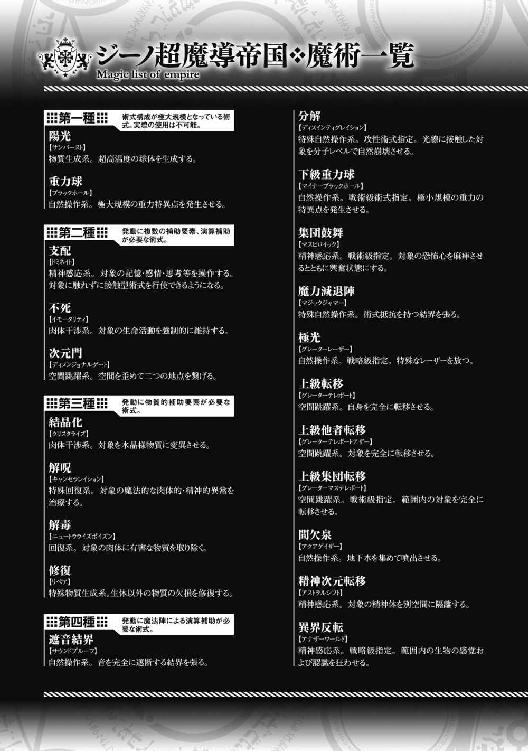
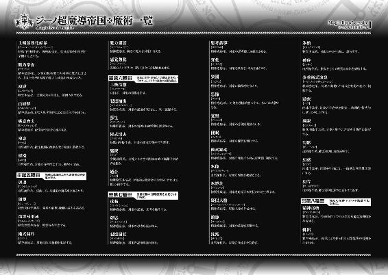
先日、知り合いの方から大量の米を送ってもらった。昔よりは安くなってきたとはいえ食費が浮いて助かるのは何より。問題は籾殻が付いたままの状態で送られてきたので、まずは精米所を探さなくてはいけないということ。
先日ココイチのカレーにトッピングしてやろうと出かけたのに気がついたらハッシュドビーフを頼んでいました。ハッシュドビーフってカレーなんでしょうか。最近、保険のお姉さんにすすめられて個人年金保険に入りました。とても安心しました。今日も雨です。
ビギニングノベルズ
異世界魔術師は魔法を唱えない２
小説 もち
イラスト 218
発行 株式会社キルタイムコミュニケーション
〒104-0041 東京都中央区新富1-3-7ヨドコウビル1Ｆ
編集部 TEL 03-3551-6147／FAX 03-3551-6146
販売部 TEL 03-3555-3431／FAX 03-3551-1208
URL http://ktcom.jp/
©mochi 2015
本書は小説投稿サイト「ノクターンノベルズ」（http://noc.syosetu.com/)に掲載されていたものを、加筆の上書籍化したものです。
※本作品の全部あるいは一部を無断で複製・転載・配信・送信したり、ホームページ上に転載することを禁止します。本作品の内容を無断で改変、改ざん等行うことも禁止します。また、有償・無償にかかわらず本作品を第三者に譲渡することはできません。
※本作品は電子書籍配信用に再編集しております。